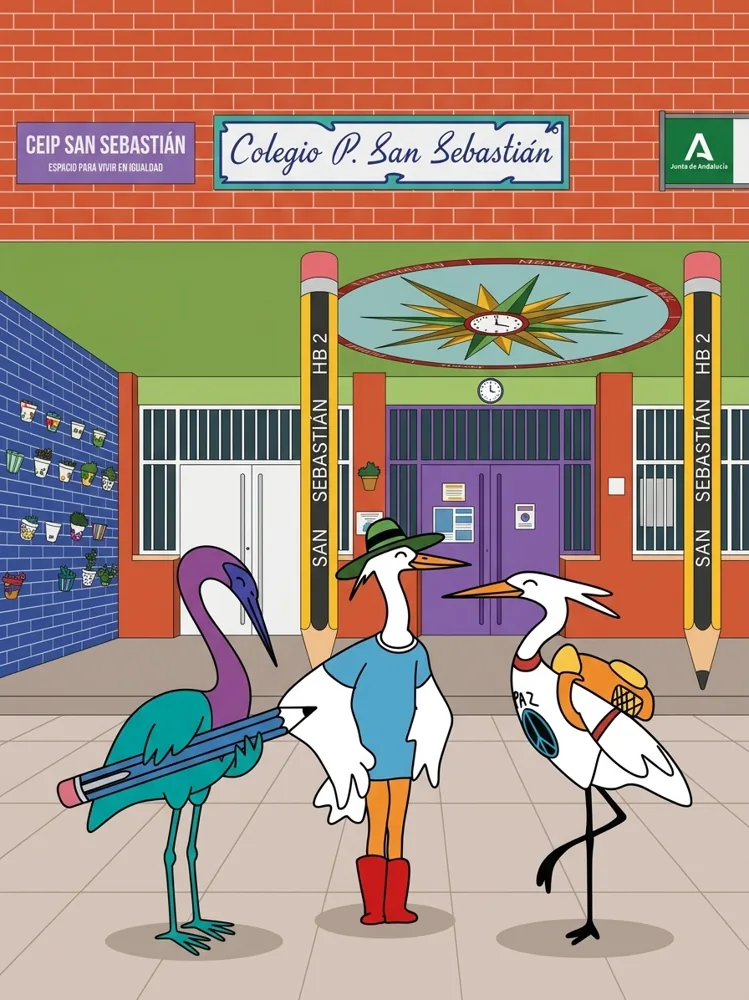
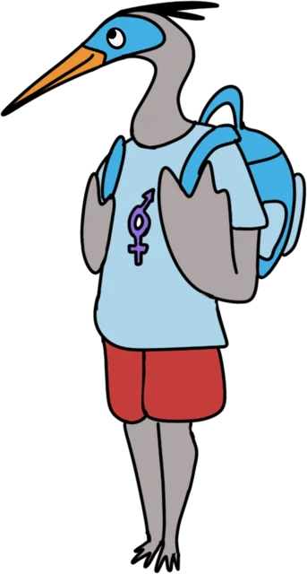
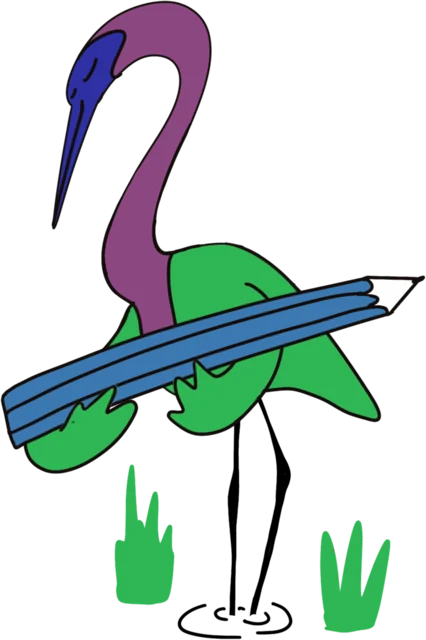
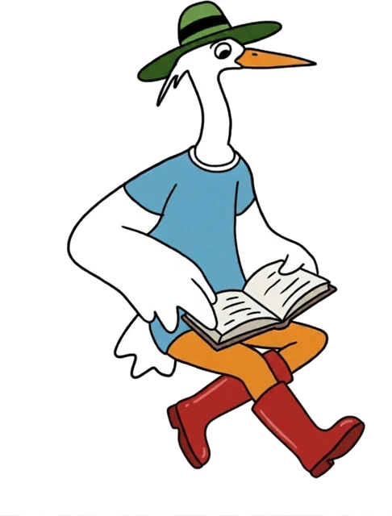
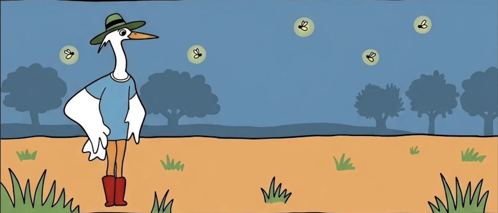
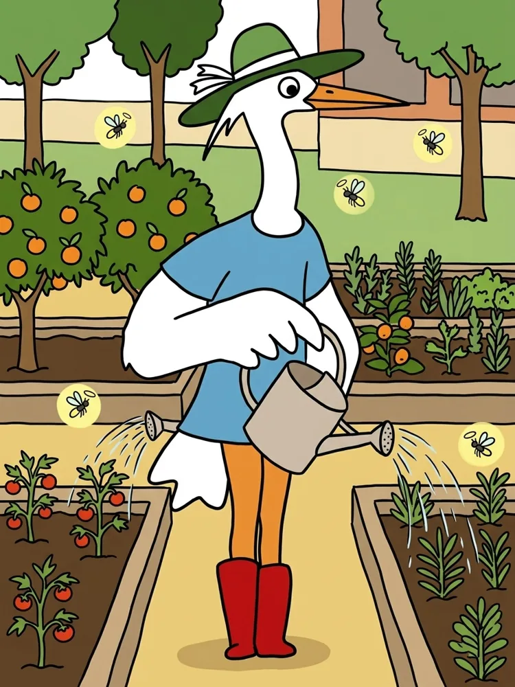
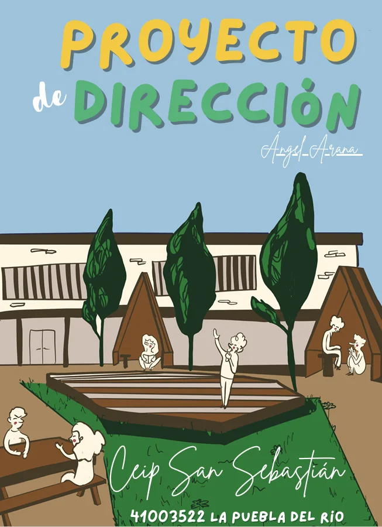
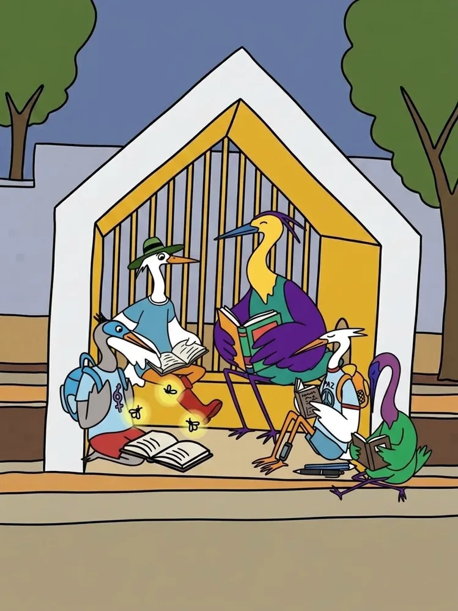

Proyecto Educativo
Curso 2026/2027
Documento de consulta del Plan de Centro, ordenado según el artículo 21.3 del Decreto 328/2010, en la redacción dada por el Decreto 483/2026, de 31 de agosto.
- 3
- apartados actualizados por el equipo directivo (1, A y B)
- 1
- apartado reorganizado (C), con textos del PE 2025-2026 sin revisar
- 6
- apartados pendientes de actualizar (D a I), con el texto del PE 2025-2026

Estructura del documento
Nueve apartados, en el orden del artículo 21.3. Pulsa en cualquiera para ir directamente.

AObjetivos generales destinados a la mejora del rendimiento escolar y de la calidad educativa del centroActualizadoBLíneas generales de actuación pedagógica y concreción curricular, con el tratamiento transversal de áreas como la educación en valores e integración de la igualdad de géneroActualizado
CCriterios pedagógicos del centro que servirán de base para determinarReorganizadoDPlan de orientación y acción tutorialPendiente de actualizarEPlan de convivencia para prevenir la aparición de conductas contrarias a las normas de convivencia y facilitar un adecuado clima escolar, incluido el procedimiento para suscribir compromisos educativos y de convivencia con las familiasPendiente de actualizarFPlan de formación del profesoradoPendiente de actualizar
GProcedimientos de evaluación internaPendiente de actualizarHPlanes estratégicos que se desarrollan en el centroPendiente de actualizarIOtros aspectos determinados por el centro en virtud de su autonomíaPendiente de actualizarTe acompaña la pandilla
Las cinco garzas del centro, interpretadas a partir de los dibujos del alumnado. Cada una encarna un saber y te guía por un apartado.
Análisis del centro y del contexto
Actualizado · Revisión del 10 de noviembre de 2026
Violeta Saber estar

1.1Características del entorno geográfico, demográfico y medioambiental
El CEIP San Sebastián se encuentra ubicado en La Puebla del Río, municipio perteneciente a la provincia de Sevilla, situado al suroeste de la capital y estrechamente vinculado al río Guadalquivir y al territorio de las marismas.
La localidad ocupa una posición geográfica singular, en la transición entre el Aljarafe sevillano y las marismas del Guadalquivir, formando parte del área de influencia socioeconómica del Espacio Natural de Doñana.
Esta ubicación confiere al municipio una identidad territorial propia, marcada por la convivencia entre los usos agrícolas tradicionales, los espacios naturales protegidos y su proximidad al área metropolitana de Sevilla.
- Características demográficas:
Según la ficha municipal del Instituto de Estadística y Cartografía de Andalucía (IECA), los datos más recientes disponibles permiten establecer el siguiente perfil:
11.897
Habitantes
375,14km²
Superficie municipal
20,6%
Población menor de 20 años
42,9años
Edad media
Fuente: IECA, ficha municipal SIMA.
La presencia de población infantil y juvenil representa un factor relevante para la planificación de los servicios educativos y las actividades culturales, deportivas y de conciliación familiar.
Por otra parte, la distribución de la población entre el núcleo urbano y los espacios diseminados, junto con la movilidad laboral hacia otros municipios, constituye un aspecto que debe considerarse en el análisis de las necesidades familiares y educativas.
- Patrimonio natural y potencial educativo:
Uno de los principales elementos diferenciadores del entorno es su extraordinaria riqueza medioambiental. El municipio alberga o participa territorialmente en espacios naturales de gran interés, entre los que destacan el Parque Natural de Doñana, el Paraje Natural Brazo del Este, la Reserva Natural Concertada Cañada de los Pájaros y la Reserva Natural Concertada Dehesa de Abajo.
Esta última, de propiedad municipal, ocupa aproximadamente 618 hectáreas y reúne ecosistemas de monte mediterráneo, dehesa, pinar y humedal. Constituye un espacio de especial interés para la observación de aves, el estudio de los ecosistemas y el conocimiento del patrimonio natural andaluz.
La cercanía de estos espacios representa una oportunidad educativa excepcional para desarrollar situaciones de aprendizaje vinculadas al conocimiento del entorno, la biodiversidad, el cambio climático, la conservación de los recursos naturales y la sostenibilidad.
Desde esta perspectiva, el entorno no debe entenderse únicamente como el espacio geográfico en el que se ubica el centro, sino como un recurso pedagógico que permite contextualizar los aprendizajes y conectar los contenidos curriculares con experiencias reales y significativas.
Esta realidad adquiere especial importancia en el marco del proyecto de transformación de los espacios exteriores del colegio y de su participación en programas de educación ambiental, como Aldea y Aulas Verdes Abiertas.
1.2Contexto socioeconómico, laboral y cultural
La realidad socioeconómica de La Puebla del Río se caracteriza por la coexistencia de actividades tradicionales vinculadas al sector primario con otras propias de los sectores comercial, industrial, de la construcción y de los servicios.
Históricamente, la agricultura y, especialmente, el cultivo del arroz han desempeñado un papel relevante en la economía y la identidad del municipio. Asimismo, la ganadería y las actividades relacionadas con el medio natural forman parte de su patrimonio productivo y cultural.
Los datos oficiales del IECA correspondientes a 2026 muestran una estructura económica diversificada, en la que destacan las actividades comerciales, agrícolas, hosteleras y de construcción.
- Principales actividades económicas del municipio:
Número de establecimientos por actividad, 2024. Fuente: IECA.

Fuente: Sistema de Información Multiterritorial de Andalucía, IECA.
La proximidad a Sevilla capital y a otros municipios del entorno metropolitano favorece la movilidad laboral de una parte de la población, circunstancia que puede influir en los horarios familiares, la conciliación y las necesidades de servicios complementarios.
- Características de las familias del centro:
El alumnado del CEIP San Sebastián procede de distintos sectores de La Puebla del Río, entre los que se encuentran la Barriada de la Paz, la zona de la calle Sol, La Estacada, El Poyetón y otras áreas del casco urbano.
De acuerdo con el análisis recogido en el Proyecto de Dirección, el entorno de procedencia del alumnado presenta una composición social heterogénea, con predominio tradicional de familias de nivel socioeconómico medio y medio-bajo.
Se observan diferencias en los niveles formativos, las condiciones laborales, las posibilidades de acceso a recursos culturales y educativos y la disponibilidad de tiempo para el acompañamiento escolar.
En determinados casos concurren circunstancias de vulnerabilidad social, desempleo, inestabilidad familiar o dificultades de conciliación que pueden repercutir en el proceso educativo.
No obstante, también se aprecia una evolución favorable en la implicación de las familias, así como una creciente disposición a colaborar en las iniciativas promovidas por el centro.
Por ello, la realidad sociofamiliar debe abordarse desde una perspectiva inclusiva, evitando generalizaciones y considerando las características individuales de cada alumno o alumna.
El centro asume la necesidad de compensar posibles desigualdades de origen, garantizar la igualdad de oportunidades y favorecer la participación efectiva de todas las familias, independientemente de su situación económica, social o cultural.
- Patrimonio cultural y educativo del municipio:
La Puebla del Río cuenta con un patrimonio cultural vinculado a sus tradiciones populares, su historia, la cultura marismeña, la música, las manifestaciones artísticas y la relación de sus habitantes con el medio natural.
La riqueza paisajística, los usos tradicionales del territorio y la diversidad de expresiones culturales constituyen recursos de interés para trabajar la identidad local y el conocimiento del patrimonio andaluz.
El centro debe aprovechar este potencial mediante propuestas interdisciplinares que incorporen la historia y las tradiciones de la localidad, la participación de personas mayores, la colaboración con asociaciones culturales y el desarrollo de actividades artísticas.
De esta manera, la escuela contribuye a preservar el patrimonio cultural, fortalecer el sentimiento de pertenencia y promover una ciudadanía comprometida con su comunidad.
1.3Características generales, instalaciones y recursos del centro
El CEIP San Sebastián, con código 41003522, es un centro público dependiente de la Consejería competente en materia de educación de la Junta de Andalucía, que imparte enseñanzas correspondientes al segundo ciclo de Educación Infantil y a la etapa de Educación Primaria.
Se encuentra situado en la zona sur del núcleo urbano de La Puebla del Río, próximo a la Barriada de la Paz, y constituye un referente educativo y social para las familias de su zona de influencia.
De acuerdo con el Proyecto de Dirección elaborado en diciembre de 2025, el centro contaba con 306 alumnos y alumnas, distribuidos en unidades de una o dos líneas, según el nivel educativo.
Esta configuración exige una organización flexible de los espacios, los recursos humanos y los agrupamientos.
El edificio principal consta de dos plantas. En la planta baja se sitúan las aulas del segundo ciclo de Educación Infantil, el aula específica de Educación Especial denominada «Aula de las Estrellas», los espacios destinados a Audición y Lenguaje y orientación, las dependencias administrativas, la sala del profesorado y la sala de usos múltiples.
Esta última cumple diversas funciones, entre ellas comedor escolar, aula matinal, actividades culturales, talleres y representaciones teatrales.
En la planta superior se ubican las aulas de Educación Primaria, la biblioteca escolar, el aula de Música y otros espacios docentes.
El centro dispone de patios y zonas exteriores destinados al recreo y a la actividad física. No obstante, presenta determinadas limitaciones de infraestructura, como la ausencia de un gimnasio cubierto y de un espacio independiente destinado exclusivamente al comedor.
- Transformación de los espacios educativos:
Uno de los elementos más significativos de la evolución reciente del colegio es la transformación de sus espacios exteriores a través del proyecto «La Dehesa del San Sebastián: El patio que queremos».
Esta iniciativa plantea una nueva concepción del patio escolar, superando su función tradicional como espacio de recreo para convertirlo en un entorno educativo, inclusivo, sostenible y abierto a la participación de la comunidad.
La renaturalización de los espacios, la creación de zonas de aprendizaje al aire libre y la incorporación de elementos naturales favorecen el desarrollo de metodologías activas, la observación, la experimentación y el aprendizaje vivencial.
Este planteamiento guarda una estrecha relación con los objetivos del programa Aulas Verdes Abiertas de la Junta de Andalucía, que promueve la transformación de los espacios exteriores en ambientes de aprendizaje versátiles, saludables y sostenibles.
Desde esta perspectiva, los espacios escolares se conciben como un recurso pedagógico más, capaz de favorecer la inclusión, la creatividad, la autonomía y el bienestar emocional.
La optimización de las dependencias disponibles, la adaptación de los espacios a diferentes modalidades de aprendizaje y la mejora progresiva de los recursos materiales y tecnológicos constituyen líneas prioritarias para el desarrollo futuro del centro.
1.4Características del alumnado y respuesta educativa a la diversidad
El alumnado del CEIP San Sebastián presenta una realidad heterogénea en cuanto a capacidades, ritmos de aprendizaje, intereses, motivaciones, desarrollo personal y circunstancias sociofamiliares.
Esta diversidad requiere una respuesta educativa flexible y ajustada a las necesidades individuales, que garantice la igualdad de oportunidades y la participación efectiva de todo el alumnado.
Uno de los aspectos más relevantes del contexto escolar es la presencia de un elevado número de alumnos y alumnas con necesidades específicas de apoyo educativo (NEAE), entre los que se encuentra alumnado con necesidades educativas especiales (NEE).
El Proyecto de Dirección identifica esta circunstancia como uno de los principales retos del centro, señalando la necesidad de reforzar los recursos especializados y mejorar la coordinación entre los profesionales implicados en la respuesta educativa.
La creación del Aula de las Estrellas constituye un avance importante en la atención especializada, al tiempo que plantea la necesidad de continuar promoviendo experiencias de participación compartida con el resto del alumnado.
- Principios de intervención educativa:
La atención a la diversidad y a las diferencias individuales se fundamenta en los principios de inclusión, equidad, accesibilidad universal y personalización del aprendizaje, en coherencia con la normativa educativa andaluza.
La intervención educativa debe priorizar la prevención y detección temprana de dificultades, la eliminación de barreras para el aprendizaje y la participación, la aplicación de medidas generales y específicas de atención a la diversidad y la coordinación entre el profesorado, las familias y los servicios de orientación.
El Diseño Universal para el Aprendizaje (DUA) constituye un referente metodológico para ofrecer diferentes formas de acceso a la información, participación y expresión de los aprendizajes.
Asimismo, se considera fundamental reforzar la atención educativa en las primeras edades, especialmente en el desarrollo del lenguaje oral, la comunicación, la autonomía, la socialización y las habilidades cognitivas básicas.
- Necesidades educativas identificadas:
El análisis institucional recoge diferentes ámbitos que requieren especial atención: la adquisición de la competencia en comunicación lingüística, el desarrollo del razonamiento matemático, el aprendizaje de lenguas extranjeras, la autonomía personal, los hábitos de trabajo y la regulación emocional.
Los indicadores homologados analizados en el Proyecto de Dirección también señalan la necesidad de prestar atención a los resultados del alumnado de cuarto de Educación Primaria en competencia lingüística y al seguimiento de las medidas de refuerzo y de las adaptaciones curriculares.
Igualmente, resulta necesario mantener actuaciones preventivas frente al absentismo escolar y desarrollar mecanismos de seguimiento de las situaciones que puedan afectar a la continuidad y al progreso educativo.
La respuesta a estas necesidades debe realizarse desde una perspectiva integral, evitando actuaciones aisladas y promoviendo la coordinación entre tutorías, equipos docentes, especialistas, Equipo de Orientación Educativa y familias.
En este sentido, la participación en programas como Más Equidad, PROA, PREX y Atención Socioeducativa en Zonas con Necesidades de Transformación Social permite complementar las actuaciones ordinarias del centro y ampliar las oportunidades educativas del alumnado.
1.5Recursos humanos, coordinación docente y organización pedagógica
El centro dispone de un equipo de profesionales integrado por el profesorado de Educación Infantil y Primaria, profesorado especialista, profesionales de atención educativa y personal de administración y servicios, de acuerdo con la dotación correspondiente a cada curso escolar.
La organización pedagógica se articula mediante los órganos colegiados de gobierno y los órganos de coordinación docente, favoreciendo la planificación conjunta, el seguimiento de las actuaciones educativas y la adopción de acuerdos comunes.
El Equipo Técnico de Coordinación Pedagógica, los equipos de ciclo, los equipos docentes y las tutorías desempeñan un papel fundamental en la coordinación curricular, la atención a la diversidad y la evaluación del proceso de enseñanza y aprendizaje.
El Proyecto de Dirección destaca como una de las principales fortalezas del colegio la existencia de una cultura de trabajo colaborativo, la implicación del profesorado y la participación en numerosos proyectos educativos.
A lo largo de su trayectoria, el centro ha desarrollado experiencias relacionadas con la educación emocional, la igualdad, la convivencia, el teatro, la biblioteca escolar, la competencia digital y las metodologías innovadoras.
- Necesidades organizativas:
La complejidad creciente de las necesidades educativas del alumnado requiere mantener una revisión continua de la organización de los recursos humanos y materiales.
Se considera prioritario fortalecer la coordinación entre el profesorado ordinario y los especialistas, mejorar los mecanismos de seguimiento del alumnado con dificultades y avanzar hacia modelos de intervención inclusiva dentro del aula.
Asimismo, resulta conveniente potenciar la formación permanente en metodologías activas, evaluación competencial, Diseño Universal para el Aprendizaje, educación emocional, competencia digital y estrategias de intervención educativa.
La formación del profesorado debe entenderse como un proceso de mejora continua, conectado con las necesidades reales del centro y con los resultados de su autoevaluación.
1.6Identidad pedagógica, convivencia y cultura de centro
El CEIP San Sebastián cuenta con una identidad educativa consolidada, caracterizada por la importancia concedida a la educación en valores, la convivencia positiva, la igualdad, la participación democrática y el desarrollo integral del alumnado.
La cultura del centro se ha construido a lo largo de los años mediante el trabajo conjunto del profesorado, las familias y el alumnado, así como a través de una trayectoria de proyectos innovadores, experiencias artísticas, actividades culturales y actuaciones de apertura al entorno.
El colegio concede especial importancia a la educación emocional, la cultura de paz y la resolución pacífica de conflictos como elementos esenciales para generar un ambiente seguro, respetuoso y favorable al aprendizaje.
El Plan de Igualdad, la Red Andaluza Escuela Espacio de Paz y las actuaciones de convivencia y bienestar emocional constituyen instrumentos fundamentales para desarrollar estos principios.
La prevención de cualquier forma de discriminación, el respeto a las diferencias individuales, la igualdad efectiva entre mujeres y hombres y el rechazo de la violencia forman parte de los valores que orientan la práctica educativa.
Asimismo, el centro fomenta la participación del alumnado mediante actividades cooperativas, asambleas, responsabilidades compartidas y experiencias que favorecen la autonomía y la convivencia democrática.
- La cultura como elemento educativo
El teatro, la música, la lectura, el cine y otras manifestaciones artísticas ocupan un lugar relevante en la identidad del colegio.
Estas experiencias contribuyen al desarrollo de la creatividad, la expresión oral, la comunicación, la sensibilidad artística y la participación colectiva.
La integración de las artes escénicas y audiovisuales en las actividades escolares permite diversificar los lenguajes de aprendizaje y ofrecer oportunidades de participación al alumnado con diferentes capacidades e intereses.
Desde esta perspectiva, el centro aspira a consolidarse como un espacio de encuentro cultural y comunitario, favoreciendo la colaboración entre generaciones y la participación de las familias y las entidades del entorno.
1.7Planes, programas y proyectos educativos
La participación en planes, programas y proyectos educativos constituye uno de los elementos más representativos de la identidad pedagógica del CEIP San Sebastián.
A través de estas iniciativas, el centro complementa el desarrollo curricular, promueve la innovación metodológica, refuerza la atención a la diversidad y favorece la adquisición de las competencias clave.
Los programas educativos permiten, asimismo, establecer relaciones de colaboración con las familias, las instituciones y otras entidades del entorno, ampliando las oportunidades de aprendizaje y contribuyendo a la mejora de la calidad y la equidad educativa.
La Junta de Andalucía reconoce estos programas como instrumentos de apoyo a la labor docente, a la inclusión, al desarrollo personal y a la participación del entorno social en la actividad educativa.
1.7.1Relación de planes, programas y proyectos del centro
El centro cuenta para el curso 2026-2027 con los siguientes planes y programas, organizados según su tipología.
- Planes y programas de oficio:
| Plan, programa o Proyecto | Coordinador/a |
|---|---|
| Convivencia y Bienestar Emocional | Ángel Arana Lacañina |
| Bibliotecas Escolares | Aurora Asensio Atoche |
| Transformación Digital Educativa (TDE) | Gabriel Vicente Severiano |
| Código Escuela 4.0 (STEAM 4.0) | Vanessa María Santos Sánchez |
| Plan de Apertura de Centros Docentes | Antonio Cordero Romero |
| Plan de Igualdad de Género en Educación de Andalucía | María del Carmen Torres Suárez |
- Programas de convocatoria general:
| Plan o programa | Coordinador/a |
|---|---|
| Aldea | Ángel Arana Lacañina |
| Comunica | Cristina Camarero |
| Hábitos de Vida Saludable | Francisco José Ríos Martín |
| Prácticum Grado de Maestro | Paula Blanco Rodríguez |
| Programas Culturales: Artes Escénicas y Aula de Cine | Francis Sardina Sosa |
| Red Andaluza Escuela Espacio de Paz | Inmaculada Gordillo Martínez |
- Programas de convocatoria específica:
| Plan o programa | Coordinador/a |
|---|---|
| Más Deporte | José Manuel García Artillo |
| Más Equidad | Antonia García Domínguez |
| Pacto de Estado. Prevención de la Violencia de Género | María del Carmen Torres Suárez |
| PROA Andalucía | Paula Blanco Rodríguez |
| PREX | María Dolores González Salas |
| Consumo de Frutas, Hortalizas y Leche | Francisco José Ríos Martín |
| Proyecto Aulas Verdes Abiertas | Ángel Arana Lacañina |
| Plan o programa | Coordinador/a |
|---|---|
| Atención Socioeducativa. ZTS: «Alma de Luciérnaga» | María Aurora Asensio Atoche |
- Otros planes
| Plan | Coordinador/a |
|---|---|
| Plan de Salud y Prevención de Riesgos Laborales. Autoprotección | Ángel Arana Lacañina |
La clasificación y las personas responsables deberán revisarse anualmente según los registros de Séneca y las convocatorias vigentes.
1.7.2Contribución de los planes y programas al Proyecto Educativo
Los distintos planes y programas no se conciben como actuaciones independientes, sino como instrumentos complementarios que contribuyen al desarrollo de las líneas generales de actuación pedagógica del centro.
Su integración curricular y organizativa permite abordar de manera coordinada los principales retos educativos.
- Convivencia, bienestar emocional e igualdad. El Plan de Convivencia y Bienestar Emocional, el Plan de Igualdad de Género, la Red Andaluza Escuela Espacio de Paz y las actuaciones vinculadas al Pacto de Estado para la prevención de la violencia de género contribuyen al desarrollo de una cultura escolar basada en el respeto, la empatía, la igualdad de oportunidades y la resolución pacífica de conflictos. Su finalidad es favorecer un clima de convivencia positivo, prevenir conductas discriminatorias y promover el bienestar personal y colectivo.
- Competencia lingüística, lectura y comunicación. El programa Bibliotecas Escolares y el programa Comunica favorecen el desarrollo de la competencia en comunicación lingüística mediante la lectura, la escritura, la expresión oral, la alfabetización audiovisual y el uso funcional del lenguaje. Su integración permite promover la biblioteca como espacio de aprendizaje, investigación y dinamización cultural, así como desarrollar experiencias comunicativas significativas en todas las áreas.
- Competencia digital e innovación tecnológica. La Transformación Digital Educativa y el programa Código Escuela 4.0 impulsan la integración pedagógica de las tecnologías, el desarrollo del pensamiento computacional, la programación, la robótica educativa y el uso responsable de la inteligencia artificial. Estas actuaciones permiten avanzar hacia una escuela digitalmente competente, en la que el alumnado adopte un papel activo, creativo y crítico ante la tecnología.
- Educación ambiental y sostenibilidad. El programa Aldea y el Proyecto Aulas Verdes Abiertas adquieren especial relevancia por la ubicación del centro en el entorno de Doñana y por su vinculación con el proyecto «La Dehesa del San Sebastián». Ambos programas permiten impulsar experiencias de educación ambiental, contacto con la naturaleza, renaturalización de espacios escolares y desarrollo de competencias ecosociales.
- Promoción de la salud y hábitos de vida saludable. Los programas Hábitos de Vida Saludable, Más Deporte y Consumo de Frutas, Hortalizas y Leche contribuyen a fomentar la actividad física, la alimentación equilibrada, el autocuidado y la adquisición de hábitos saludables desde las primeras edades. Estas actuaciones se integran en una concepción global de la salud que contempla el bienestar físico, emocional y social.
- Atención a la diversidad, compensación educativa y equidad. Los programas Más Equidad, PROA Andalucía y Atención Socioeducativa en ZTS, mediante el proyecto «Alma de Luciérnaga», constituyen instrumentos de apoyo para responder a las necesidades del alumnado que presenta dificultades de aprendizaje o circunstancias de vulnerabilidad socioeducativa. Su desarrollo contribuye a prevenir el fracaso escolar, reforzar las competencias instrumentales, favorecer la inclusión y compensar desigualdades de origen.
- Refuerzo de la competencia en lengua extranjera. El programa PREX permite complementar la enseñanza ordinaria de lenguas extranjeras, favoreciendo el desarrollo de las destrezas comunicativas y ofreciendo oportunidades adicionales de aprendizaje. Esta actuación resulta especialmente pertinente en relación con las necesidades de mejora de la competencia lingüística en lengua extranjera identificadas en el análisis de resultados del centro.
- Educación artística y cultural. Los programas de Artes Escénicas y Aula de Cine permiten integrar el teatro, la expresión corporal, la interpretación, la creación audiovisual y el análisis crítico de los medios en las experiencias educativas. Contribuyen al desarrollo de la creatividad, la competencia cultural y artística, la comunicación y el trabajo cooperativo.
- Formación inicial del profesorado. La participación en el Prácticum del Grado de Maestro favorece la colaboración con las universidades y la formación práctica de futuros docentes. Al mismo tiempo, constituye una oportunidad para el intercambio de experiencias, la reflexión pedagógica y la actualización metodológica del profesorado del centro.
- Conciliación y apertura a la comunidad. El Plan de Apertura de Centros Docentes, mediante los servicios complementarios que se desarrollan en el colegio, facilita la conciliación familiar y laboral y amplía las posibilidades de participación del alumnado en actividades educativas y de socialización.
- Seguridad y prevención. El Plan de Salud y Prevención de Riesgos Laborales y el Plan de Autoprotección permiten establecer medidas de prevención, protección y actuación ante situaciones de emergencia, promoviendo una cultura de seguridad y responsabilidad compartida entre todos los miembros de la comunidad educativa.
1.7.3Integración y coordinación de los planes y programas
La amplia participación del centro en planes y programas educativos hace necesaria una planificación conjunta que garantice la coherencia de las actuaciones y evite la fragmentación de las iniciativas.
Para ello, se considera fundamental establecer mecanismos de coordinación entre las personas responsables de los programas, los equipos de ciclo, el Equipo Técnico de Coordinación Pedagógica y el equipo directivo.
Las actuaciones deberán integrarse, siempre que resulte posible, en las programaciones didácticas, las propuestas pedagógicas de Educación Infantil y las situaciones de aprendizaje, evitando que se conviertan en actividades puntuales desvinculadas del currículo.
Asimismo, se promoverá la coordinación entre programas con objetivos comunes, especialmente en los ámbitos de la competencia lingüística, la educación ambiental, la convivencia, la igualdad, la inclusión y la competencia digital.
La evaluación de los planes y programas permitirá valorar su incidencia en el aprendizaje del alumnado, la participación de la comunidad educativa y la consecución de los objetivos del Proyecto Educativo.
De este modo, la participación en programas educativos se configura como una estrategia de mejora institucional, innovación pedagógica y transformación del centro, orientada a ofrecer una educación integral, inclusiva y de calidad.
1.8Participación de las familias y relaciones con el entorno
El CEIP San Sebastián concibe la educación como una responsabilidad compartida entre la escuela, las familias y el conjunto de la comunidad.
La colaboración familiar constituye un elemento esencial para favorecer el desarrollo integral del alumnado, mejorar los resultados educativos y consolidar un clima escolar positivo.
El centro cuenta con una Asociación de Madres y Padres del Alumnado (AMPA) implicada en numerosas actividades y proyectos, cuya participación representa una de las principales fortalezas de la comunidad educativa.
Las relaciones con las familias se desarrollan mediante las tutorías, las reuniones colectivas, los órganos de participación y los canales institucionales de comunicación, promoviendo un intercambio continuo de información y una colaboración basada en la confianza y el respeto mutuo.
El centro mantiene también relaciones de cooperación con el Ayuntamiento de La Puebla del Río, los servicios sociales y sanitarios, el Centro de la Mujer, el Equipo de Orientación Educativa, el Centro del Profesorado de Castilleja de la Cuesta, los centros educativos de la localidad y diversas entidades culturales, sociales y deportivas.
Esta colaboración permite desarrollar actividades educativas complementarias, programas de prevención, iniciativas culturales, proyectos medioambientales y actuaciones de apoyo al alumnado y a sus familias.
Especial relevancia adquiere la participación comunitaria en el proyecto de transformación de los espacios exteriores, que representa un ejemplo de colaboración entre alumnado, profesorado, familias, instituciones y otros agentes del entorno.
Desde esta perspectiva, el colegio se configura como un espacio educativo abierto a la comunidad, que favorece la participación ciudadana, el intercambio intergeneracional y el aprovechamiento de los recursos culturales, sociales y naturales de la localidad.
1.9Análisis de las necesidades del centro y prioridades de mejora
El análisis del contexto socioeducativo, las características del alumnado, los recursos disponibles y los resultados de los procesos de evaluación permite identificar diferentes necesidades que deben orientar las decisiones recogidas en el Proyecto Educativo.
Estas necesidades se concretan en los siguientes ámbitos prioritarios.
| Ámbito | Necesidad detectada | Orientación de mejora |
|---|---|---|
| Atención a la diversidad | Elevada presencia de alumnado NEAE y necesidad de recursos especializados | Fortalecer la respuesta inclusiva, la coordinación y las medidas de apoyo |
| Competencia lingüística | Dificultades en comprensión, expresión y aprendizaje de lenguas extranjeras | Reforzar lectura, oralidad, escritura y competencia comunicativa |
| Competencia matemática | Necesidad de consolidar el razonamiento y la resolución de problemas | Impulsar metodologías manipulativas y situaciones contextualizadas |
| Autonomía y aprendizaje | Dificultades de atención, hábitos de trabajo y autonomía | Desarrollar autorregulación, responsabilidad y aprendizaje activo |
| Convivencia | Necesidad de mantener la prevención y mejorar la resolución de conflictos | Consolidar educación emocional, mediación y cultura de paz |
| Equidad educativa | Diferencias en las oportunidades educativas y el apoyo familiar | Reforzar programas compensatorios y colaboración con las familias |
| Competencia digital | Necesidad de uso crítico y responsable de la tecnología | Integrar TDE y STEAM 4.0 desde una perspectiva pedagógica |
| Infraestructuras | Limitaciones de determinados espacios y recursos | Optimizar dependencias y continuar la transformación de los patios |
| Sostenibilidad | Necesidad de consolidar hábitos de respeto ambiental | Integrar Aldea y Aulas Verdes Abiertas en el currículo |
| Coordinación y evaluación | Necesidad de seguimiento conjunto de actuaciones y resultados | Reforzar la autoevaluación y la toma de decisiones compartida |
Estas prioridades deben abordarse desde una perspectiva global, mediante actuaciones coordinadas y sostenidas en el tiempo.
El Plan de Mejora anual permitirá concretar las medidas correspondientes, establecer responsables, determinar indicadores de seguimiento y valorar su grado de consecución.
La revisión periódica de los resultados escolares, los indicadores homologados, los datos de convivencia y las memorias de autoevaluación constituirá una herramienta esencial para adaptar las actuaciones a las necesidades reales del centro.
1.10Conclusiones del análisis contextual
El CEIP San Sebastián es un centro público con una identidad pedagógica consolidada, una trayectoria significativa de innovación y una comunidad educativa comprometida con la formación integral del alumnado.
Su ubicación en un entorno natural de extraordinario valor, su vinculación con la cultura y las tradiciones de La Puebla del Río y las relaciones de colaboración establecidas con las instituciones locales constituyen oportunidades relevantes para desarrollar una educación contextualizada y conectada con la realidad.
La diversidad social, cultural y educativa del alumnado plantea importantes retos relacionados con la inclusión, la compensación de desigualdades, la mejora de las competencias básicas y la atención personalizada.
Frente a estos desafíos, el centro cuenta con fortalezas significativas, entre las que destacan la implicación del profesorado, la participación de las familias, el clima de convivencia, la trayectoria de proyectos educativos y la voluntad de transformación de sus espacios y metodologías.
La amplia oferta de planes y programas permite desarrollar una respuesta educativa integral, que combina la atención a la diversidad, la innovación, la educación ambiental, la competencia digital, la promoción de la salud, la cultura y la convivencia.
En consecuencia, el Proyecto Educativo del CEIP San Sebastián debe fundamentarse en una concepción de escuela pública inclusiva, participativa, innovadora y comprometida con su entorno, capaz de responder a las necesidades individuales del alumnado y a los retos de la sociedad actual.
Este análisis contextual constituye el punto de partida para establecer los objetivos propios de mejora del rendimiento escolar, definir las líneas generales de actuación pedagógica y orientar los procesos de planificación, organización, evaluación y mejora continua del centro.
A. Objetivos generales destinados a la mejora del rendimiento escolar y de la calidad educativa del centro
Actualizado · Revisión del 10 de noviembre de 2026
Garzastián Saber evolucionar
A.1Introducción y justificación
El Proyecto Educativo del CEIP San Sebastián establece como una de sus finalidades fundamentales garantizar una educación pública de calidad, inclusiva, equitativa y comprometida con el desarrollo integral de todo el alumnado, atendiendo a sus características personales, sociales y culturales, así como a las particularidades del entorno en el que se encuentra ubicado.
La mejora del rendimiento escolar constituye un objetivo prioritario de nuestro centro, entendido desde una perspectiva amplia que no se limita a la obtención de resultados académicos, sino que contempla el desarrollo de las competencias clave, la adquisición de aprendizajes significativos, el bienestar emocional, la autonomía personal, la convivencia positiva y la participación activa del alumnado en su propio proceso de aprendizaje.
Desde esta perspectiva, nuestro colegio concibe la educación como un proceso de construcción colectiva en el que intervienen alumnado, profesorado, familias y entorno social. Se pretende consolidar una escuela abierta, participativa, innovadora y comprometida con la igualdad de oportunidades, capaz de ofrecer una respuesta educativa ajustada a las necesidades de cada niño y niña.
Los objetivos propios de mejora se fundamentan en el análisis de la realidad del centro, los resultados de las evaluaciones del alumnado, los indicadores homologados, las conclusiones de las memorias de autoevaluación, las propuestas recogidas en los planes de mejora y las prioridades establecidas en el Proyecto de Dirección.
En este sentido, el Proyecto de Dirección identifica necesidades específicas relacionadas con la mejora de la competencia en comunicación lingüística, especialmente en lengua extranjera, la atención al alumnado con necesidades específicas de apoyo educativo, la eficacia de las medidas de refuerzo y la mejora de determinados indicadores de promoción y éxito escolar.

Documento de referenciaProyecto de DirecciónPROYECTO DE DIRECCIÓN Ángel Arana 1dic25(1).pdfAbrir PDFAsimismo, el centro considera necesario seguir avanzando en la transformación de sus espacios educativos, la innovación metodológica, la competencia digital, la educación emocional y la participación de toda la comunidad educativa.
Nuestro modelo educativo se inspira en una concepción integral de la enseñanza, en la que las capacidades, las competencias y la dimensión afectiva constituyen elementos inseparables del aprendizaje. Se pretende que el alumnado no solo adquiera conocimientos, sino que aprenda a utilizarlos, desarrolle su pensamiento crítico, descubra sus potencialidades y construya relaciones positivas con los demás.
Por tanto, las líneas prioritarias de mejora que se establecen en este apartado tendrán un carácter estable, flexible y evaluable. Su concreción se realizará anualmente a través del Plan de Mejora, incorporando las actuaciones, los responsables, los recursos, la temporalización y los indicadores de logro que permitan valorar su grado de consecución.
A.2Marco normativo
Los objetivos propios para la mejora del rendimiento escolar del CEIP San Sebastián se fundamentan en el siguiente marco normativo estatal y autonómico:
Normativa estatal:
- BOELey Orgánica 2/2006, de 3 de mayo, de Educación (LOE), modificada por la Ley Orgánica 3/2020.
- BOELey Orgánica 3/2020, de 29 de diciembre (LOMLOE), por la que se modifica la Ley Orgánica 2/2006, de Educación.
- BOEReal Decreto 95/2022, de 1 de febrero, por el que se establece la ordenación y las enseñanzas mínimas de Educación Infantil.
- BOEReal Decreto 157/2022, de 1 de marzo, por el que se establece la ordenación y las enseñanzas mínimas de Educación Primaria.
Normativa autonómica de Andalucía:
- BOJADecreto 328/2010, de 13 de julio, por el que se aprueba el Reglamento Orgánico de las escuelas infantiles de segundo ciclo y de los colegios públicos de Educación Infantil y Primaria.
- BOJADecreto 100/2023, de 9 de mayo, por el que se establece la ordenación y el currículo de Educación Infantil en Andalucía.
- BOJADecreto 101/2023, de 9 de mayo, por el que se establece la ordenación y el currículo de Educación Primaria en Andalucía.
- BOJAOrden de 30 de mayo de 2023, de Educación Infantil, por la que se desarrolla el currículo correspondiente a esta etapa en Andalucía.
- BOJAOrden de 30 de mayo de 2023, de Educación Primaria, por la que se desarrolla el currículo, se regulan determinados aspectos de atención a la diversidad y a las diferencias individuales, la evaluación y el tránsito entre etapas educativas.
- BOJADecreto 483/2026, de 31 de agosto, por el que se adoptan medidas para la mejora del funcionamiento del sistema educativo y de la gestión de la actividad docente en las enseñanzas no universitarias de Andalucía.
- BOJAOrden de 31 de agosto de 2026, por la que se establecen medidas para la mejora de la organización, el funcionamiento y la gestión del sistema educativo en las enseñanzas no universitarias de Andalucía.
El artículo 21.3.a) del Decreto 328/2010 contempla entre los elementos del Proyecto Educativo los objetivos propios para la mejora del rendimiento escolar y la continuidad del alumnado en el sistema educativo.
De acuerdo con este marco normativo, los objetivos de mejora deben contribuir a la adquisición y desarrollo de las competencias clave, la prevención de las dificultades de aprendizaje, la inclusión educativa y el éxito escolar de todo el alumnado.
A.3Objetivos propios de mejora del centro
Partiendo del análisis de la situación actual del CEIP San Sebastián y de las prioridades recogidas en sus documentos institucionales, se establecen cuatro grandes ámbitos de actuación:
- Mejora de los rendimientos escolares y del desarrollo competencial del alumnado.
- Mejora de la participación, la coordinación y la implicación de la comunidad educativa.
- Mejora de la inclusión, la igualdad de oportunidades, el bienestar emocional y la convivencia.
- Desarrollo de una escuela innovadora, sostenible, digitalmente competente y comprometida con los desafíos del siglo XXI.
A.3.1Objetivos para la mejora de los rendimientos escolares
Objetivo 1. Mejorar la competencia en comunicación lingüística del alumnado en todas las etapas educativas.
- Potenciando la expresión y comprensión oral desde Educación Infantil mediante asambleas, narraciones, conversaciones, dramatizaciones y exposiciones adaptadas a cada edad.
- Desarrollando y consolidando el Plan Lector del centro, garantizando el tratamiento sistemático de la lectura en Educación Primaria.
- Fomentando la comprensión lectora, la expresión escrita y la ampliación del vocabulario desde todas las áreas del currículo.
- Impulsando el uso de la biblioteca escolar y de las bibliotecas de aula como espacios de aprendizaje, investigación y disfrute.
- Desarrollando actividades de animación lectora y escritura creativa.
- Estableciendo criterios metodológicos compartidos para favorecer la continuidad del aprendizaje lingüístico entre ciclos y etapas.
Objetivo 2. Mejorar la competencia matemática, especialmente el razonamiento lógico, el cálculo y la resolución de problemas.
- Consolidando el itinerario matemático del centro, estableciendo una progresión coherente de los aprendizajes.
- Priorizando la comprensión de los conceptos matemáticos y su aplicación a situaciones reales.
- Potenciando el cálculo mental, la estimación, el razonamiento lógico y la resolución de problemas.
- Utilizando materiales manipulativos, juegos matemáticos y recursos visuales adaptados a las diferentes edades.
- Favoreciendo el intercambio de experiencias y estrategias metodológicas entre el profesorado.
- Incorporando actividades matemáticas vinculadas al entorno y a la vida cotidiana del alumnado.
Objetivo 3. Mejorar la competencia comunicativa en lengua extranjera, especialmente en inglés. (Este objetivo adquiere especial relevancia al haberse identificado en el Proyecto de Dirección resultados mejorables en la competencia lingüística de cuarto curso de Educación Primaria, relacionados, entre otros factores señalados en el documento, con los resultados de las pruebas de diagnóstico de lengua extranjera).
- Potenciando la comprensión y expresión oral en inglés mediante situaciones comunicativas funcionales.
- Favoreciendo el aprendizaje de la lengua extranjera a través de juegos, canciones, dramatizaciones y actividades contextualizadas.
- Estableciendo una progresión metodológica coordinada entre los diferentes ciclos.
- Incorporando recursos digitales y audiovisuales que favorezcan la exposición al idioma.
- Impulsando experiencias de intercambio cultural y colaboración con otros centros educativos.
- Analizando periódicamente los resultados obtenidos para adaptar las estrategias metodológicas.
Objetivo 4. Incrementar el éxito escolar y mejorar los resultados de evaluación y promoción del alumnado.
- Utilizando la evaluación inicial como instrumento para identificar el nivel competencial y las necesidades educativas del alumnado.
- Analizar trimestralmente los resultados académicos en los equipos docentes y de ciclo.
- Identificando las dificultades de aprendizaje y establecer medidas de intervención temprana.
- Desarrollando programas de refuerzo del aprendizaje adaptados a las necesidades individuales.
- Realizando un seguimiento específico del alumnado que promociona con aprendizajes no adquiridos o permanece un año más en el mismo curso.
- Estableciendo mecanismos de coordinación entre tutores, especialistas, profesorado de apoyo y equipos de orientación.
- Promoviendo la evaluación formativa, la autoevaluación y la participación del alumnado en su proceso de aprendizaje.
Objetivo 5. Garantizar una respuesta educativa inclusiva que favorezca el máximo desarrollo de las capacidades de todo el alumnado.
- Favoreciendo la detección temprana de dificultades de aprendizaje y necesidades específicas de apoyo educativo.
- Incorporando los principios del Diseño Universal para el Aprendizaje (DUA) a las propuestas pedagógicas y programaciones didácticas.
- Promoviendo metodologías inclusivas, agrupamientos flexibles y experiencias de aprendizaje cooperativo.
- Mejorando la coordinación entre el profesorado tutor, especialistas de Pedagogía Terapéutica y Audición y Lenguaje, personal de apoyo y Equipo de Orientación Educativa.
- Impulsando experiencias de co-docencia y apoyo dentro del aula cuando las condiciones organizativas lo permitan.
- Garantizando el seguimiento y la evaluación de las medidas de atención a la diversidad.
- Favoreciendo la colaboración con las familias del alumnado que requiere apoyos específicos.
A.3.2Objetivos para mejorar la participación y la implicación de la comunidad educativa
Objetivo 6. Fortalecer la coordinación pedagógica y el trabajo colaborativo del profesorado.
- Potenciando el funcionamiento de los equipos docentes, equipos de ciclo y Equipo Técnico de Coordinación Pedagógica.
- Estableciendo acuerdos metodológicos comunes y mecanismos de seguimiento de su aplicación.
- Favoreciendo el intercambio de experiencias y buenas prácticas docentes.
- Promoviendo una formación permanente vinculada a las necesidades detectadas en el centro.
- Impulsando una cultura de evaluación, reflexión y mejora continua de la práctica docente.
Objetivo 7. Incrementar la participación de las familias y su implicación en el proceso educativo.
- Manteniendo una comunicación fluida, accesible y bidireccional entre el centro y las familias.
- Potenciando la participación de la AMPA y de las familias en proyectos, talleres y actividades complementarias.
- Favorecer la colaboración familiar en el desarrollo de hábitos lectores, autonomía personal y hábitos de estudio.
- Promoviendo actividades formativas dirigidas a las familias sobre educación emocional, convivencia, uso responsable de la tecnología y acompañamiento educativo.
- Consolidando la apertura del colegio a su entorno social y cultural.
Objetivo 8. Mejorar la coordinación con las instituciones y agentes educativos del entorno.
- Manteniendo una colaboración activa con el Ayuntamiento y otras instituciones locales.
- Estableciendo cauces de coordinación con los servicios sociales, sanitarios y educativos cuando resulte necesario.
- Desarrollando actividades compartidas con otros centros educativos.
- Potenciando los programas de tránsito entre Educación Infantil y Primaria, y entre Educación Primaria y Secundaria.
- Favoreciendo la participación del alumnado en iniciativas culturales, deportivas, medioambientales y solidarias del municipio.
A.3.3Objetivos para mejorar la inclusión, el bienestar emocional y la convivencia
Objetivo 9. Consolidar un clima escolar positivo, seguro y respetuoso.
- Desarrollando actuaciones preventivas para mejorar la convivencia y evitar situaciones de conflicto.
- Potenciando el diálogo, la mediación y la resolución pacífica de conflictos.
- Fomentando la participación del alumnado en la elaboración y cumplimiento de las normas de convivencia.
- Promoviendo actitudes de respeto, empatía, solidaridad y responsabilidad.
- Desarrollando medidas de prevención del acoso escolar y de cualquier forma de discriminación.
- Impulsando actividades que fortalezcan el sentimiento de pertenencia a la comunidad educativa.
Objetivo 10. Favorecer el bienestar emocional y el desarrollo de habilidades personales y sociales.
- Integrando la educación emocional en la práctica educativa cotidiana.
- Favoreciendo el reconocimiento, la expresión y la regulación de las emociones.
- Incorporando progresivamente prácticas de atención plena, relajación y conciencia corporal adaptadas a las distintas edades.
- Creando espacios y momentos de calma que favorezcan la autorregulación y la concentración.
- Potenciando la autoestima, la autonomía, la resiliencia y las relaciones interpersonales positivas.
- Implicando a las familias en el desarrollo del bienestar emocional del alumnado.
Objetivo 11. Promover la igualdad efectiva entre mujeres y hombres y el respeto a la diversidad.
- Dando continuidad a las actuaciones desarrolladas en el marco del Plan de Igualdad del centro.
- Incorporando la perspectiva de género de manera transversal en las situaciones de aprendizaje.
- Previniendo los estereotipos sexistas y las conductas discriminatorias.
- Visibilizando referentes femeninos en los diferentes ámbitos del conocimiento, la cultura y la sociedad.
- Promoviendo relaciones basadas en el respeto, la corresponsabilidad y la igualdad.
- Desarrollando actuaciones educativas de prevención de la violencia de género.
A.3.4Objetivos para responder a los desafíos del siglo XXI
Objetivo 12. Desarrollar la competencia digital del alumnado desde un enfoque creativo, crítico y responsable.
- Integrando progresivamente las tecnologías digitales como herramientas al servicio del aprendizaje.
- Favoreciendo el desarrollo de habilidades de búsqueda, selección y tratamiento crítico de la información.
- Promoviendo el uso seguro, responsable y ético de los dispositivos y entornos digitales.
- Impulsando actividades de pensamiento computacional, programación y robótica educativa.
- Favoreciendo la creación de contenidos digitales por parte del alumnado.
- Potenciando la formación digital del profesorado y las familias.
Objetivo 13. Fomentar la educación ambiental, la sostenibilidad y el contacto con la naturaleza.
- Aprovechando los espacios exteriores del centro como entornos de aprendizaje.
- Desarrollando y consolidando el proyecto de innovación educativa La Dehesa del San Sebastián: El patio que queremos.
- Promoviendo el conocimiento, cuidado y respeto del medio natural.
- Desarrollando actividades relacionadas con el reciclaje, el consumo responsable, la biodiversidad y el uso sostenible de los recursos.
- Impulsando experiencias de aprendizaje al aire libre.
- Favoreciendo la participación de alumnado y familias en la transformación y conservación de los espacios escolares.
Objetivo 14. Potenciar la creatividad, la cultura, la expresión artística y el pensamiento crítico.
- Favoreciendo experiencias educativas relacionadas con la música, el teatro, la literatura y las artes plásticas.
- Promoviendo proyectos interdisciplinares que conecten los aprendizajes con la realidad del entorno.
- Fomentando la curiosidad, la investigación y la iniciativa personal.
- Desarrollando actividades culturales abiertas a la comunidad educativa.
- Impulsando el conocimiento y valoración del patrimonio histórico, artístico y cultural de La Puebla del Río y de Andalucía.
- Favoreciendo el intercambio de experiencias con otros centros educativos.
Objetivo 15. Promover hábitos de vida saludables y el desarrollo integral del alumnado.
- Fomentando la alimentación equilibrada y la adquisición de hábitos saludables.
- Promoviendo la actividad física, el juego activo y la práctica deportiva.
- Favoreciendo el descanso, el autocuidado y la higiene personal.
- Desarrollando actuaciones de prevención de conductas de riesgo.
- Impulsando experiencias de aprendizaje que relacionen la salud física, el bienestar emocional y el cuidado del entorno.
A.4Concreción anual de los objetivos: Plan de Mejora
Los objetivos propios establecidos en el presente apartado constituyen el marco de referencia para la elaboración del Plan de Mejora anual del CEIP San Sebastián.
Dicho plan recogerá las actuaciones prioritarias que se determinen a partir de los resultados de la evaluación interna, los indicadores homologados, las necesidades detectadas por los equipos docentes y las conclusiones de la memoria de autoevaluación.
Las propuestas de mejora deberán ser concretas, realistas, medibles y evaluables, estableciendo para cada una de ellas las actuaciones previstas, los responsables de su desarrollo, los recursos necesarios, la temporalización y los indicadores de logro.
A.4.1Líneas prioritarias propuestas para el curso 2026-2027
Tomando como referencia las necesidades identificadas en el Proyecto de Dirección y las líneas de trabajo del curso anterior, se propone priorizar las siguientes actuaciones. Se trata de una propuesta de planificación, pendiente de contrastar con la memoria de autoevaluación y los acuerdos del centro para 2026-2027.
| Línea prioritaria | Actuación de mejora | Indicador de seguimiento |
|---|---|---|
| Competencia lingüística | Consolidar el Proyecto Lingüístico y el itinerario lector | Grado de aplicación de los acuerdos y evolución de los resultados |
| Competencia matemática | Desarrollar el itinerario matemático y la resolución de problemas | Evolución de los resultados en razonamiento matemático |
| Lengua extranjera | Mejorar la metodología y los resultados en inglés | Evolución de los resultados de evaluación y diagnóstico |
| Inclusión educativa | Reforzar la coordinación y las medidas de atención a la diversidad | Seguimiento de medidas y progreso del alumnado |
| Evaluación | Revisar y unificar procedimientos e instrumentos de evaluación | Acuerdos adoptados y grado de aplicación |
| Bienestar emocional | Incorporar actividades de atención plena y regulación emocional | Participación y valoración de alumnado y profesorado |
| Participación familiar | Ampliar las actividades de colaboración con las familias | Participación y satisfacción de las familias |
| Innovación y sostenibilidad | Desarrollar los espacios educativos exteriores y proyectos ambientales | Actuaciones realizadas y participación del alumnado |
A.4.2Seguimiento y evaluación de los objetivos de mejora
El seguimiento de los objetivos se llevará a cabo mediante un proceso continuo de evaluación y reflexión compartida.
El Equipo Directivo, el Equipo Técnico de Coordinación Pedagógica, los equipos de ciclo y los equipos docentes participarán, en el ámbito de sus competencias, en el análisis de las actuaciones desarrolladas y en la valoración de sus resultados.
Para ello se utilizarán, entre otras fuentes de información, los resultados de evaluación del alumnado, los indicadores homologados, los registros de seguimiento de las medidas educativas, las actas de coordinación, los cuestionarios de satisfacción y las conclusiones de la memoria de autoevaluación.
Al finalizar cada curso escolar se valorará el grado de consecución de los objetivos, identificando los avances alcanzados, las dificultades encontradas y las nuevas necesidades detectadas.
Las conclusiones obtenidas servirán de referencia para la elaboración del Plan de Mejora del curso siguiente, garantizando así la continuidad y coherencia del proceso de mejora del centro.
B. Líneas generales de actuación pedagógica y concreción curricular, con el tratamiento transversal de áreas como la educación en valores e integración de la igualdad de género
Actualizado · Revisión del 10 de noviembre de 2026
Corazón Saber pensar-sentir

B.1Introducción y justificación
El presente apartado del Proyecto Educativo del CEIP San Sebastián establece las líneas generales de actuación pedagógica y los criterios que orientan la concreción curricular de las etapas de Educación Infantil y Educación Primaria, configurando un marco común de referencia para la planificación, el desarrollo y la evaluación de los procesos de enseñanza y aprendizaje del centro.
Su elaboración responde a lo establecido en el artículo 21.3.b) del Decreto 328/2010, de 13 de julio, por el que se aprueba el Reglamento Orgánico de las escuelas infantiles de segundo ciclo, de los colegios de Educación Primaria, de los colegios de Educación Infantil y Primaria y de los centros públicos específicos de Educación Especial, en su redacción vigente tras las modificaciones introducidas por el Decreto 483/2026, de 31 de agosto. Esta nueva regulación integra en un mismo apartado las líneas generales de actuación pedagógica y la concreción curricular, incluyendo el tratamiento transversal de la educación en valores y la integración de la igualdad de género.
Desde esta perspectiva, el Proyecto Educativo constituye el instrumento que permite trasladar los principios generales del sistema educativo a la realidad concreta de nuestro colegio, garantizando la coherencia entre las finalidades educativas, las decisiones pedagógicas, la organización del currículo y las prácticas docentes desarrolladas en las aulas.
El CEIP San Sebastián, situado en La Puebla del Río, asume el compromiso de ofrecer una educación pública de calidad, inclusiva, equitativa, participativa e innovadora, que favorezca el desarrollo integral del alumnado y contribuya a compensar las desigualdades personales, sociales y culturales. Nuestro centro entiende la educación como un proceso de formación integral que debe atender de manera equilibrada a las dimensiones cognitiva, emocional, afectiva, física, social, comunicativa y ética de cada niño y niña.
En coherencia con las prioridades recogidas en el Proyecto de Dirección, nuestro modelo educativo se fundamenta en tres dimensiones complementarias: capacidades, competencias y corazón. Las capacidades representan las potencialidades individuales que debemos reconocer y desarrollar; las competencias permiten movilizar los aprendizajes para desenvolverse de manera autónoma y responsable en situaciones reales; y el corazón simboliza la dimensión humana, emocional y ética que debe impregnar toda intervención educativa.
Este planteamiento sitúa al alumnado en el centro del proceso educativo y reconoce la importancia de construir una escuela que no solo transmita conocimientos, sino que enseñe a pensar, investigar, crear, convivir, participar y actuar de manera responsable. Una escuela en la que el aprendizaje académico y el bienestar emocional constituyan dimensiones inseparables de una misma realidad educativa.
Las líneas generales de actuación pedagógica definen los principios, valores y compromisos que orientan la actividad del centro, proporcionando criterios compartidos para la adopción de decisiones metodológicas, organizativas y educativas. Su finalidad es garantizar una actuación coherente del profesorado, favorecer la continuidad de los aprendizajes y promover una cultura profesional basada en la colaboración, la reflexión pedagógica y la mejora continua.
Por su parte, la concreción curricular permite contextualizar y desarrollar los elementos del currículo establecidos por la normativa estatal y autonómica, adaptándolos a las características de nuestro alumnado, a las necesidades educativas detectadas y a las particularidades del entorno. Esta concreción comprende la organización curricular de Educación Infantil y Educación Primaria, los referentes competenciales, los criterios pedagógicos y metodológicos comunes, la coordinación docente y los procedimientos de seguimiento y evaluación de las decisiones curriculares.
La organización curricular respetará la identidad propia de cada etapa educativa, garantizando al mismo tiempo la continuidad y progresión de los aprendizajes. En Educación Infantil se priorizarán las experiencias globalizadas, el juego, la exploración, la experimentación, la autonomía y el desarrollo emocional. En Educación Primaria se favorecerá la adquisición progresiva de las competencias clave, el desarrollo de los aprendizajes instrumentales, el pensamiento crítico, la resolución de problemas y la aplicación funcional de los conocimientos.
La coordinación entre etapas, ciclos, niveles y áreas constituirá un elemento esencial para asegurar la coherencia de las propuestas pedagógicas y programaciones didácticas. A través de los órganos de coordinación docente se promoverán acuerdos compartidos sobre metodología, secuenciación de aprendizajes, atención a las diferencias individuales y evaluación, respetando las características de cada etapa y la autonomía pedagógica del profesorado.
Asimismo, la inclusión educativa, la equidad y la atención a la diversidad se conciben como principios transversales de toda actuación pedagógica. El centro promoverá la aplicación de los principios del Diseño Universal para el Aprendizaje, la detección temprana de dificultades y la adopción de medidas que permitan eliminar barreras para el aprendizaje y la participación, garantizando oportunidades reales de progreso para todo el alumnado.
El tratamiento transversal de la educación en valores y la igualdad de género constituye igualmente un compromiso fundamental de nuestro Proyecto Educativo. La coeducación, la convivencia positiva, el respeto a los derechos humanos, la cultura de paz, la sostenibilidad, la participación democrática y la corresponsabilidad se integrarán en las propuestas pedagógicas, las programaciones didácticas, las situaciones de aprendizaje y la vida cotidiana del centro.
La vinculación con el entorno natural, social y cultural de La Puebla del Río representa otra de nuestras señas de identidad. El patrimonio ambiental, las tradiciones, las instituciones, los espacios naturales y los recursos comunitarios del municipio constituyen oportunidades educativas que permiten contextualizar los aprendizajes y fortalecer el sentimiento de pertenencia, la conciencia ecosocial y el compromiso con la conservación y mejora del entorno.
En este marco adquieren especial relevancia los proyectos educativos propios del centro, entre ellos Alma de Luciérnaga, que contribuye a impulsar experiencias de aprendizaje activas, manipulativas, inclusivas y vinculadas a la transformación de los espacios educativos. Estas iniciativas permiten trasladar los principios pedagógicos a actuaciones concretas y consolidar una identidad educativa compartida.
Finalmente, las líneas generales de actuación pedagógica y la concreción curricular se conciben como elementos dinámicos, sujetos a procesos sistemáticos de seguimiento, evaluación y actualización. Su revisión tendrá en cuenta los resultados del aprendizaje del alumnado, las necesidades detectadas, los acuerdos de los órganos de coordinación docente, las propuestas de mejora y las modificaciones normativas que resulten aplicables.
En definitiva, el presente apartado pretende garantizar la unidad y coherencia del Proyecto Educativo del CEIP San Sebastián, estableciendo un marco pedagógico y curricular compartido que permita avanzar hacia una escuela que desarrolle capacidades, construya competencias y ponga el corazón en cada aprendizaje, ofreciendo a todos los niños y niñas oportunidades para aprender, convivir, crecer y participar activamente en la sociedad.
B.2Normativa de referencia
Las líneas generales de actuación pedagógica del CEIP San Sebastián se fundamentan en el marco normativo estatal y autonómico que regula el sistema educativo, los principios pedagógicos, la organización de los centros docentes y el desarrollo curricular de las etapas de Educación Infantil y Educación Primaria.
- BOEConstitución Española de 1978. Especialmente su artículo 27, relativo al derecho a la educación, y el artículo 14, sobre igualdad y no discriminación.
- BOELey Orgánica 2/2006, de 3 de mayo, de Educación (LOE), modificada por la Ley Orgánica 3/2020, de 29 de diciembre. Establece los principios y fines del sistema educativo, la equidad, la inclusión, la autonomía de los centros y los principios pedagógicos de las distintas etapas.
- BOELey Orgánica 3/2020, de 29 de diciembre (LOMLOE). Introduce modificaciones en la LOE que refuerzan el enfoque competencial, la educación inclusiva, la igualdad efectiva, la sostenibilidad y la personalización del aprendizaje.
- BOEReal Decreto 95/2022, de 1 de febrero, por el que se establece la ordenación y las enseñanzas mínimas de la Educación Infantil. Especialmente los principios generales y pedagógicos de la etapa.
- BOEReal Decreto 157/2022, de 1 de marzo, por el que se establecen la ordenación y las enseñanzas mínimas de la Educación Primaria. Especialmente su artículo 6, relativo a los principios pedagógicos.
- BOEResolución de 21 de junio de 2022, de la Secretaría de Estado de Educación, por la que se publican los currículos de las enseñanzas de religión católica correspondientes a Educación Infantil, Educación Primaria, Educación Secundaria Obligatoria y Bachillerato.
- BOELey Orgánica 2/2007, de 19 de marzo, de reforma del Estatuto de Autonomía para Andalucía. Reconoce el derecho a la educación y las competencias de la Comunidad Autónoma en materia educativa.
- BOELey 17/2007, de 10 de diciembre, de Educación de Andalucía (LEA). Regula los principios del sistema educativo andaluz, la equidad, la participación, la calidad educativa y la autonomía de los centros.
- BOJADecreto 328/2010, de 13 de julio, Reglamento Orgánico de los centros de Educación Infantil y Primaria, en su redacción vigente. Especialmente sus artículos 19, 20 y 21, relativos a la autonomía de los centros, el Plan de Centro y el Proyecto Educativo.
- BOJADecreto 100/2023, de 9 de mayo, por el que se establece la ordenación y el currículo de la etapa de Educación Infantil en Andalucía. Especialmente sus principios pedagógicos, la atención a la diversidad y el desarrollo integral del alumnado.
- BOJADecreto 101/2023, de 9 de mayo, por el que se establece la ordenación y el currículo de la etapa de Educación Primaria en Andalucía. Constituye un referente para el desarrollo competencial, la metodología y la organización curricular.
- BOJAOrden de 30 de mayo de 2023, de Educación Infantil, por la que se desarrolla el currículo de esta etapa y se regulan aspectos relativos a la atención a la diversidad, la evaluación y los procesos de tránsito.
- BOJAOrden de 30 de mayo de 2023, de Educación Primaria, por la que se desarrolla el currículo de esta etapa y se regulan la atención a la diversidad, la evaluación y los procesos de tránsito entre etapas educativas.
- BOJAOrden de 20 de agosto de 2010, por la que se regula la organización y funcionamiento de los centros públicos de Educación Infantil y Primaria, así como los horarios del alumnado y del profesorado, en su redacción vigente.
- BOJADecreto 483/2026, de 31 de agosto, por el que se adoptan medidas para la mejora del funcionamiento del sistema educativo y de la gestión de la actividad docente en la enseñanza no universitaria de Andalucía.
- BOJAOrden de 31 de agosto de 2026, por la que se establecen medidas para la mejora de la organización, el funcionamiento y la gestión del sistema educativo en las enseñanzas no universitarias de Andalucía.
El Decreto 483/2026 modifica expresamente el artículo 21.3 del Decreto 328/2010, estableciendo una nueva formulación de los aspectos mínimos del Proyecto Educativo. Su apartado b) recoge conjuntamente las líneas generales de actuación pedagógica y la concreción curricular, incluyendo el tratamiento transversal de la educación en valores y la igualdad de género. También actualiza la distribución de competencias para la aprobación y evaluación de determinados aspectos educativos del Plan de Centro.
Por su parte, la Orden de 31 de agosto de 2026 introduce modificaciones organizativas y medidas de racionalización administrativa que deben tenerse presentes en el desarrollo y aplicación de las actuaciones del centro.
Por tanto, el presente apartado se redacta conforme a la normativa aplicable al curso 2026/2027, manteniendo una organización diferenciada respecto a la concreción curricular por razones de claridad documental y coherencia con el índice general del Proyecto Educativo.
B.3Líneas generales de actuación pedagógica
Las líneas generales de actuación pedagógica del CEIP San Sebastián constituyen los principios que orientan el desarrollo de los procesos de enseñanza y aprendizaje, las decisiones metodológicas, la organización de los recursos educativos y las relaciones entre los distintos sectores de la comunidad escolar.
Estas líneas son comunes a las etapas de Educación Infantil y Educación Primaria, si bien su aplicación se adaptará a las características evolutivas del alumnado, a las peculiaridades de cada etapa y a las necesidades educativas individuales.
En consonancia con los objetivos de mejora del rendimiento escolar y con las prioridades establecidas en el Proyecto de Dirección, nuestro centro desarrollará su actuación pedagógica a partir de los siguientes principios.
B.3.1Principio del desarrollo integral de la personalidad
Valores que se promueven: autonomía, autoestima, responsabilidad, creatividad, pensamiento crítico, bienestar emocional, esfuerzo, confianza y superación personal.
Consideramos que la educación debe contribuir al desarrollo armónico de todas las dimensiones de la persona: intelectual, física, emocional, afectiva, social, comunicativa y ética. La formación académica no puede entenderse de manera aislada, sino integrada en un proceso educativo que permita al alumnado conocerse, desarrollar sus potencialidades, construir una imagen positiva de sí mismo y desenvolverse con seguridad y autonomía.
Líneas de actuación pedagógica:
- Favorecer el desarrollo integral del alumnado mediante experiencias educativas que atiendan de manera equilibrada a sus capacidades cognitivas, emocionales, sociales, físicas y creativas.
- Potenciar la autoestima, el autoconocimiento y la confianza en las propias posibilidades, respetando los diferentes ritmos de maduración y aprendizaje.
- Desarrollar progresivamente la autonomía personal, intelectual y social, fomentando la toma de decisiones y la asunción de responsabilidades adecuadas a cada edad.
- Promover la adquisición de las competencias clave mediante aprendizajes significativos, funcionales y conectados con situaciones de la vida cotidiana.
- Estimular la curiosidad, la iniciativa, la creatividad y el pensamiento crítico, favoreciendo la capacidad de formular preguntas, investigar y buscar soluciones.
- Fomentar hábitos de esfuerzo, constancia, organización, responsabilidad y satisfacción por el trabajo bien realizado.
- Integrar la educación emocional en la vida cotidiana del centro, favoreciendo la identificación, expresión y regulación de las emociones.
- Desarrollar hábitos de vida saludable relacionados con la alimentación, la actividad física, el descanso, la higiene y el bienestar personal.
- Impulsar las manifestaciones artísticas, culturales, musicales, corporales y deportivas como medios de expresión, comunicación y desarrollo personal.
- Favorecer experiencias de aprendizaje que permitan al alumnado descubrir sus intereses, reconocer sus capacidades y desarrollar sus talentos.
B.3.2Principio de convivencia positiva y bienestar emocional
Valores que se promueven: respeto, empatía, tolerancia, solidaridad, diálogo, cooperación, responsabilidad, afectividad y cultura de paz.
La convivencia constituye un elemento esencial para el desarrollo de los procesos educativos. Nuestro centro concibe la escuela como un espacio seguro, acogedor y emocionalmente positivo, en el que todas las personas deben sentirse respetadas, valoradas y reconocidas.
La construcción de un clima de convivencia adecuado requiere actuaciones preventivas, educativas y participativas que favorezcan las relaciones positivas y el aprendizaje de estrategias de resolución pacífica de conflictos.
Líneas de actuación pedagógica:
- Promover un clima escolar basado en el respeto mutuo, la confianza, el afecto y la colaboración.
- Desarrollar actuaciones preventivas que favorezcan la convivencia positiva y reduzcan la aparición de conductas contrarias a las normas de convivencia.
- Potenciar la resolución pacífica de conflictos mediante el diálogo, la escucha activa, la mediación y la búsqueda compartida de soluciones.
- Fomentar el desarrollo de habilidades sociales, la empatía, la asertividad y la comunicación respetuosa.
- Integrar la educación emocional y el bienestar psicológico en las actuaciones tutoriales y en la práctica educativa cotidiana.
- Favorecer espacios y momentos de calma, reflexión, relajación y atención plena, adaptados a las características del alumnado.
- Impulsar la participación del alumnado en la elaboración, comprensión y cumplimiento de las normas de convivencia.
- Promover relaciones positivas entre el alumnado de diferentes edades mediante actividades cooperativas, proyectos compartidos y experiencias de convivencia.
- Prevenir cualquier forma de violencia, acoso escolar, discriminación o exclusión social, favoreciendo la detección temprana y la intervención educativa.
- Desarrollar actuaciones coordinadas con las familias para favorecer la convivencia, el bienestar emocional y la adquisición de hábitos sociales positivos.
B.3.3Principio de igualdad de oportunidades, equidad e inclusión educativa
Valores que se promueven: igualdad, justicia social, respeto a la diversidad, solidaridad, accesibilidad, inclusión y no discriminación.
La diversidad constituye una característica natural y enriquecedora de nuestra comunidad educativa. Nuestro centro asume el compromiso de ofrecer una respuesta educativa ajustada a las necesidades, capacidades, intereses, circunstancias personales y ritmos de aprendizaje de cada alumno y alumna.
La inclusión educativa implica garantizar no solo el acceso a la educación, sino también la participación efectiva, el aprendizaje y el progreso de todo el alumnado, eliminando las barreras que puedan dificultar su desarrollo.
Líneas de actuación pedagógica:
- Garantizar una educación inclusiva y equitativa que ofrezca oportunidades reales de aprendizaje y participación a todo el alumnado.
- Incorporar los principios del Diseño Universal para el Aprendizaje (DUA) en la planificación y desarrollo de las situaciones de aprendizaje.
- Favorecer la utilización de diferentes formas de representación de la información, expresión de los aprendizajes e implicación del alumnado.
- Detectar de manera temprana las dificultades de aprendizaje y las necesidades específicas de apoyo educativo, estableciendo las medidas de atención educativa oportunas.
- Desarrollar estrategias metodológicas flexibles que permitan adaptar los procesos de enseñanza a los diferentes ritmos y estilos de aprendizaje.
- Potenciar el trabajo coordinado entre el profesorado tutor, especialistas de Pedagogía Terapéutica, Audición y Lenguaje, equipos docentes y profesionales de orientación educativa.
- Favorecer modelos de apoyo inclusivo, enseñanza compartida y trabajo cooperativo, siempre que las condiciones organizativas lo permitan.
- Impulsar medidas de refuerzo del aprendizaje y profundización que contribuyan al máximo desarrollo de las capacidades del alumnado.
- Prevenir y compensar las desigualdades derivadas de circunstancias personales, familiares, sociales, económicas o culturales.
- Promover la accesibilidad física, cognitiva, sensorial y comunicativa en los espacios, materiales y actividades educativas.
- Favorecer la participación del alumnado con necesidades específicas de apoyo educativo en las actividades ordinarias, complementarias y extraescolares del centro.
- Establecer una coordinación estrecha con las familias y los servicios educativos y sociales que intervienen en la atención al alumnado.
B.3.4Principio de aprendizaje competencial, significativo y funcional
Valores que se promueven: curiosidad, iniciativa, autonomía, pensamiento crítico, creatividad, responsabilidad y motivación por aprender.
El proceso de enseñanza y aprendizaje debe orientarse hacia la adquisición de competencias que permitan al alumnado utilizar de manera integrada sus conocimientos, habilidades, actitudes y valores para desenvolverse en diferentes contextos.
Nuestro centro apuesta por superar una concepción exclusivamente memorística del aprendizaje, promoviendo experiencias educativas en las que el alumnado comprenda, investigue, experimente, reflexione y aplique lo aprendido.
Líneas de actuación pedagógica:
- Diseñar situaciones de aprendizaje contextualizadas, motivadoras y relacionadas con los intereses y experiencias del alumnado.
- Favorecer metodologías activas que sitúen al alumnado como protagonista de su proceso de aprendizaje.
- Potenciar el aprendizaje basado en proyectos, la resolución de problemas, la experimentación, la investigación y el trabajo cooperativo.
- Desarrollar propuestas globalizadas en Educación Infantil, basadas en el juego, la exploración, la manipulación y las experiencias significativas.
- Favorecer en Educación Primaria la integración de los aprendizajes de diferentes áreas mediante propuestas interdisciplinares.
- Priorizar la adquisición y consolidación de los aprendizajes instrumentales, especialmente la competencia en comunicación lingüística y la competencia matemática.
- Fomentar el razonamiento lógico, el pensamiento científico, la argumentación y la búsqueda de soluciones a problemas cotidianos.
- Promover la comprensión lectora, la expresión oral y escrita y el hábito lector desde todas las áreas curriculares.
- Favorecer la utilización de materiales manipulativos, recursos visuales, experiencias prácticas y herramientas digitales adecuadas.
- Impulsar estrategias de aprendizaje que desarrollen la autonomía, la autorregulación y la capacidad de aprender a aprender.
- Relacionar los aprendizajes escolares con situaciones reales, favoreciendo su transferencia a la vida cotidiana.
B.3.5Principio de participación democrática y corresponsabilidad educativa
Valores que se promueven: participación, diálogo, compromiso, cooperación, responsabilidad, transparencia y sentido de pertenencia.
Entendemos la educación como una responsabilidad compartida entre el profesorado, el alumnado, las familias y los diferentes agentes de la comunidad educativa.
La participación constituye una condición fundamental para construir una escuela democrática, abierta y comprometida con la mejora continua.
Líneas de actuación pedagógica:
- Fomentar la participación activa de todos los sectores de la comunidad educativa en la vida del centro.
- Promover relaciones de confianza, respeto y colaboración entre las familias y el profesorado.
- Establecer canales de comunicación accesibles, fluidos y eficaces que favorezcan el intercambio de información y la corresponsabilidad educativa.
- Impulsar la participación de las familias en proyectos, actividades culturales, talleres y experiencias educativas.
- Reconocer y fortalecer el papel de la Asociación de Madres y Padres del Alumnado como agente colaborador en la vida escolar.
- Favorecer la participación del alumnado en la toma de decisiones relacionadas con la convivencia, la organización de actividades y el cuidado de los espacios comunes.
- Potenciar el funcionamiento participativo de los órganos colegiados y de coordinación docente.
- Promover una cultura profesional basada en el trabajo en equipo, el diálogo pedagógico y la toma de decisiones compartida.
- Desarrollar proyectos comunes que fortalezcan el sentimiento de pertenencia y la identidad colectiva del centro.
- Favorecer la transparencia y la difusión de las actuaciones educativas y de los logros alcanzados.
B.3.6Principio de relación con el entorno y compromiso ecosocial
Valores que se promueven: sostenibilidad, respeto al medio ambiente, responsabilidad, solidaridad, identidad cultural, cooperación y compromiso social.
El entorno natural, social y cultural de La Puebla del Río constituye un recurso educativo de gran valor para el desarrollo de aprendizajes significativos y para la formación de una ciudadanía responsable y comprometida.
Nuestro centro pretende consolidar una relación activa con el municipio y aprovechar sus recursos patrimoniales, ambientales, culturales y humanos como elementos enriquecedores del currículo.
Líneas de actuación pedagógica:
- Integrar el conocimiento del entorno natural, social, histórico y cultural de La Puebla del Río en las propuestas educativas.
- Promover el conocimiento, respeto y conservación del patrimonio natural y cultural andaluz.
- Aprovechar los espacios exteriores del centro como entornos de aprendizaje, experimentación, convivencia y contacto con la naturaleza.
- Desarrollar proyectos relacionados con la sostenibilidad, el reciclaje, la biodiversidad, el consumo responsable y el cuidado del medio ambiente.
- Favorecer experiencias educativas vinculadas a los Objetivos de Desarrollo Sostenible, adaptadas a la edad y características del alumnado.
- Impulsar actividades de aprendizaje-servicio que permitan al alumnado participar en iniciativas de mejora de su entorno.
- Potenciar la colaboración con el Ayuntamiento, asociaciones, entidades culturales, instituciones educativas y otros agentes locales.
- Desarrollar experiencias de aprendizaje al aire libre mediante aulas verdes, huertos escolares, jardines educativos y otros espacios naturales.
- Favorecer la participación del alumnado en actividades de conservación y mejora de los espacios comunes.
- Promover el conocimiento y la valoración de las tradiciones, manifestaciones culturales y señas de identidad de nuestro municipio.
- Consolidar progresivamente el centro como un espacio de encuentro cultural, educativo y comunitario abierto a la localidad.
B.3.7Principio de libertad, igualdad de género y cultura de paz
Valores que se promueven: libertad, igualdad, justicia, tolerancia, respeto, solidaridad, democracia, coeducación y derechos humanos.
Nuestro centro asume el compromiso de educar en los valores democráticos recogidos en la Constitución Española y en los principios de igualdad, libertad y respeto a la dignidad humana.
La educación para la igualdad y la cultura de paz deben impregnar todas las actuaciones educativas y contribuir a la construcción de una sociedad más justa, inclusiva y libre de discriminación.
Líneas de actuación pedagógica:
- Garantizar el respeto a los derechos fundamentales y a las libertades individuales.
- Promover la igualdad efectiva entre mujeres y hombres mediante prácticas educativas coeducativas.
- Incorporar la perspectiva de género en las programaciones, situaciones de aprendizaje, materiales y actividades del centro.
- Prevenir los estereotipos sexistas y cualquier forma de discriminación por razón de sexo, origen, cultura, religión, discapacidad u otras circunstancias personales o sociales.
- Favorecer relaciones basadas en el respeto, la igualdad, la corresponsabilidad y el buen trato.
- Promover la participación equilibrada de niñas y niños en todas las actividades educativas, científicas, tecnológicas, deportivas y culturales.
- Desarrollar actuaciones de sensibilización y prevención de la violencia de género adaptadas a las diferentes edades.
- Fomentar el conocimiento y respeto de los derechos humanos, la diversidad cultural y los valores democráticos.
- Impulsar la educación para la paz, la cooperación y la resolución dialogada de los conflictos.
- Promover la libertad de pensamiento, el respeto a las diferentes opiniones y el desarrollo de una conciencia crítica y responsable.
B.3.8Principio de innovación, investigación y transformación educativa
Valores que se promueven: creatividad, iniciativa, investigación, pensamiento crítico, cooperación, flexibilidad, innovación y mejora continua.
La innovación educativa constituye una herramienta al servicio de la mejora de los procesos de enseñanza y aprendizaje, y no una finalidad en sí misma.
Nuestro centro apuesta por una transformación pedagógica progresiva, fundamentada en la reflexión docente, la formación permanente, la investigación educativa y la incorporación de prácticas que aporten valor real al aprendizaje del alumnado.
Líneas de actuación pedagógica:
- Impulsar metodologías activas, participativas y experienciales que favorezcan la motivación y el aprendizaje significativo.
- Promover proyectos de innovación educativa vinculados a las necesidades reales del centro y a los intereses del alumnado.
- Potenciar la investigación, la experimentación, el pensamiento científico y la resolución creativa de problemas.
- Favorecer el desarrollo de proyectos STEAM que integren ciencia, tecnología, ingeniería, arte y matemáticas.
- Incorporar progresivamente experiencias de robótica educativa, programación, pensamiento computacional y creación digital.
- Promover un uso ético, seguro, responsable y equilibrado de las tecnologías digitales.
- Impulsar la transformación de aulas y espacios educativos en entornos flexibles, inclusivos y estimulantes.
- Favorecer la creación de espacios de aprendizaje cooperativo, investigación, lectura, experimentación y calma.
- Potenciar la biblioteca escolar como espacio dinamizador de la lectura, la investigación, la creatividad y la vida cultural del centro.
- Fomentar la formación permanente del profesorado en metodologías activas, inclusión, competencia digital, neuroeducación y evaluación competencial.
- Impulsar el intercambio de experiencias y buenas prácticas entre docentes.
- Evaluar periódicamente el impacto de las innovaciones introducidas, promoviendo su continuidad, adaptación o mejora en función de los resultados obtenidos.
B.3.9Principio de coordinación docente, evaluación y mejora continua
Valores que se promueven: profesionalidad, responsabilidad, cooperación, reflexión, compromiso, coherencia y calidad educativa.
La calidad de los procesos educativos requiere una actuación coordinada del profesorado, una planificación compartida y una evaluación sistemática que permita identificar fortalezas, detectar dificultades y adoptar decisiones fundamentadas.
Nuestro centro considera que la mejora de los resultados escolares debe sustentarse en el análisis de las evidencias de aprendizaje, la reflexión sobre la práctica docente y el establecimiento de actuaciones comunes.
Líneas de actuación pedagógica:
- Garantizar la coherencia pedagógica y curricular entre los diferentes niveles, ciclos y etapas educativas.
- Potenciar el funcionamiento eficaz de los equipos docentes, equipos de ciclo y Equipo Técnico de Coordinación Pedagógica.
- Establecer acuerdos metodológicos y criterios comunes que favorezcan la continuidad de los aprendizajes.
- Desarrollar mecanismos de coordinación para facilitar el tránsito entre Educación Infantil y Educación Primaria y entre Educación Primaria y Educación Secundaria Obligatoria.
- Impulsar una evaluación continua, formativa, competencial y objetiva, adaptada a las características de cada etapa educativa.
- Utilizar instrumentos de evaluación variados, accesibles y adecuados a los criterios de evaluación y a las necesidades del alumnado.
- Favorecer la detección temprana de dificultades y la adopción coordinada de medidas de refuerzo y apoyo educativo.
- Analizar periódicamente los resultados escolares para identificar necesidades de mejora y establecer actuaciones concretas.
- Promover la autoevaluación docente y la reflexión compartida sobre los procesos de enseñanza.
- Impulsar la formación permanente y el desarrollo profesional del profesorado.
- Vincular las actuaciones pedagógicas con los objetivos del Plan de Mejora y los procesos de autoevaluación del centro.
- Establecer procedimientos de seguimiento que permitan valorar la eficacia de las medidas adoptadas y realizar los ajustes necesarios.
B.4Señas de identidad de nuestro centro
El CEIP San Sebastián es una comunidad educativa comprometida con la formación integral de su alumnado y con la construcción de una escuela pública de calidad, inclusiva, participativa, innovadora y estrechamente vinculada a su entorno.
Nuestra identidad educativa se fundamenta en una concepción de la escuela como espacio de encuentro, convivencia, aprendizaje y transformación social, en el que cada persona aporta sus capacidades, experiencias y potencialidades al desarrollo de un proyecto colectivo.
El modelo educativo que aspiramos a consolidar recoge la trayectoria pedagógica del centro y las prioridades de mejora establecidas en el Proyecto de Dirección, incorporando una visión de la enseñanza centrada en las personas, las competencias, las emociones y el compromiso con la sociedad y el medio ambiente.
- Una escuela que educa desde las capacidades, las competencias y el corazón
Consideramos que el verdadero sentido de la educación consiste en ayudar a cada alumno y alumna a descubrir sus capacidades, desarrollar sus competencias y crecer como persona. Nuestro modelo educativo integra los aprendizajes académicos con la educación emocional, los valores democráticos y el desarrollo de habilidades para la vida.
Aspiramos a que el alumnado no solo adquiera conocimientos, sino que aprenda a utilizarlos de forma responsable, crítica, creativa y solidaria, construyendo progresivamente su autonomía personal y su compromiso con los demás.
- Una escuela inclusiva que reconoce y valora la diversidad.
Entendemos la diversidad como una oportunidad de enriquecimiento personal y colectivo.
Nuestro centro apuesta por una educación que respete las diferencias individuales, elimine barreras para el aprendizaje y garantice oportunidades reales de participación y progreso a todo el alumnado.
La inclusión constituye un principio transversal de nuestra organización y práctica educativa, orientando las decisiones metodológicas, curriculares y organizativas.
- Una escuela innovadora, activa y abierta al aprendizaje
Apostamos por una escuela que evoluciona, investiga, experimenta y adapta sus prácticas educativas a las necesidades de una sociedad en constante transformación.
Promovemos metodologías activas, aprendizajes funcionales, proyectos interdisciplinares y experiencias educativas que conecten los conocimientos con la realidad.
La transformación de los espacios educativos, la innovación metodológica y el desarrollo de la competencia digital deben contribuir a crear entornos de aprendizaje más motivadores, flexibles, accesibles y participativos.
- Una escuela emocionalmente segura, acogedora y comprometida con la convivencia.
Queremos que nuestro centro sea un lugar donde todos los niños y niñas se sientan queridos, escuchados, respetados y valorados.
El bienestar emocional, la educación afectiva, la convivencia positiva y la cultura de paz constituyen elementos esenciales de nuestra identidad.
Apostamos por relaciones humanas basadas en la confianza, la empatía, la escucha activa, el diálogo y el respeto mutuo.
- Una escuela comprometida con la igualdad y la justicia social.
La igualdad de oportunidades, la coeducación y la compensación de las desigualdades constituyen compromisos irrenunciables de nuestro Proyecto Educativo.
Promovemos una escuela libre de discriminación, que favorezca la participación de todas las personas y contribuya a la construcción de una sociedad más justa, democrática y solidaria.
- Una escuela vinculada a la naturaleza y comprometida con la sostenibilidad.
El entorno natural de La Puebla del Río y los espacios exteriores del centro representan oportunidades privilegiadas para desarrollar una educación conectada con la vida.
Apostamos por un modelo educativo que favorezca el contacto con la naturaleza, el conocimiento del patrimonio ambiental, la sostenibilidad y la adquisición de hábitos responsables.
La educación ecosocial y las experiencias de aprendizaje al aire libre deben contribuir a formar personas conscientes de su relación con el entorno y comprometidas con su conservación.
- B.4.7. Una escuela abierta a las familias, la cultura y la comunidad.
Entendemos que la educación es una tarea compartida que requiere la implicación de toda la comunidad educativa.
Nuestro centro aspira a ser un espacio de participación, encuentro y colaboración, donde las familias y las instituciones del entorno desempeñen un papel activo.
Promovemos la apertura del colegio a la localidad, la participación en proyectos culturales, la colaboración interinstitucional y el desarrollo de experiencias educativas que fortalezcan los vínculos entre escuela y sociedad.
- Una escuela que aprende, coopera y mejora continuamente.
Consideramos que la mejora educativa es un proceso permanente que requiere compromiso profesional, coordinación, formación y reflexión compartida.
Apostamos por un modelo de organización basado en el liderazgo pedagógico, el trabajo colaborativo, la participación democrática y la evaluación continua de nuestras actuaciones.
La formación del profesorado, el intercambio de buenas prácticas y el análisis de los resultados constituyen herramientas fundamentales para seguir avanzando hacia una educación de mayor calidad y equidad.
- Nuestro compromiso educativo.
Todas estas señas de identidad confluyen en una aspiración compartida: construir una escuela que ofrezca a cada alumno y alumna las mejores oportunidades para aprender, convivir, desarrollarse y participar activamente en la sociedad.
Una escuela que reconozca el valor de las diferencias, que fomente la curiosidad y la creatividad, que cuide las emociones, que impulse el pensamiento crítico y que eduque desde el respeto, la libertad, la igualdad y la solidaridad.
Una escuela donde el aprendizaje tenga sentido, donde los espacios inviten a descubrir, donde las familias se sientan parte del proyecto y donde el profesorado encuentre oportunidades para crecer profesionalmente y transformar su práctica educativa.
En definitiva, el CEIP San Sebastián aspira a ser una escuela que educa para la vida, que desarrolla capacidades, construye competencias y pone el corazón en cada aprendizaje.
B.5Organización curricular de Infantil
La organización curricular de Educación Infantil en el CEIP San Sebastián se ajustará a lo establecido en el Real Decreto 95/2022, el Decreto 100/2023 y la Orden de 30 de mayo de 2023, así como a las disposiciones posteriores que resulten aplicables.
El centro imparte el segundo ciclo de Educación Infantil, correspondiente a las edades de tres, cuatro y cinco años, y desarrollará una propuesta pedagógica globalizada, flexible e inclusiva, adaptada a las características evolutivas del alumnado.
B.5.1Características y finalidad de la etapa
La Educación Infantil constituye una etapa educativa con identidad propia que atiende a niños y niñas desde el nacimiento hasta los seis años. Se organiza en dos ciclos: el primero comprende hasta los tres años y el segundo, desde los tres hasta los seis años.
La etapa tiene carácter voluntario y su segundo ciclo es gratuito.
Su finalidad es contribuir al desarrollo integral y armónico del alumnado en todas sus dimensiones: física, emocional, afectiva, social, cognitiva, comunicativa y artística, potenciando su autonomía personal y la construcción de una imagen positiva y equilibrada de sí mismo.
En el CEIP San Sebastián, la intervención educativa del segundo ciclo se fundamentará en el respeto a los ritmos individuales de maduración, la creación de vínculos afectivos seguros, la experimentación, el juego y la participación activa del alumnado.
A efectos de planificación, se tendrán en cuenta los siguientes elementos curriculares:
- Objetivos de etapa. Logros que se espera que el alumnado haya alcanzado al finalizar la etapa y cuya consecución se vincula al desarrollo de las competencias clave.
- Competencias clave. Desempeños imprescindibles para progresar en el aprendizaje y afrontar situaciones de la vida cotidiana. En Educación Infantil se inicia su desarrollo desde una perspectiva globalizada.
- Competencias específicas. Desempeños que el alumnado debe desarrollar mediante experiencias y situaciones de aprendizaje vinculadas a las distintas áreas.
- Criterios de evaluación. Referentes que permiten valorar el progreso en el desarrollo de las competencias específicas.
- Saberes básicos. Conocimientos, destrezas y actitudes necesarios para la adquisición de las competencias específicas.
- Situaciones de aprendizaje. Propuestas educativas contextualizadas que permiten movilizar e integrar los distintos elementos curriculares mediante actividades significativas.
La intervención pedagógica reconocerá el valor educativo de todos los momentos de la jornada escolar, incluidos la acogida, las rutinas, el aseo, la alimentación, el juego, las relaciones personales y la despedida.
La organización del ambiente escolar deberá proporcionar seguridad emocional, favorecer la autonomía progresiva y ofrecer oportunidades de interacción, exploración y descubrimiento.
La aproximación a la lectura, la escritura, las habilidades matemáticas, las tecnologías y la lengua extranjera se desarrollará desde experiencias adecuadas al nivel madurativo, sin establecer como requisito para acceder a Educación Primaria la adquisición de aprendizajes formales que no sean exigibles en esta etapa.
B.5.2Principios generales
Teniendo en cuenta el artículo 5. “Principios generales” del Real Decreto 95/2022 de 01 de febrero, la Educación Infantil en nuestro centro:
- Tendrá un carácter voluntario, se regirá por los principios de equidad, inclusión, prevención, atención temprana, respeto a las diferencias individuales y compensación de desigualdades.
- Se garantizará que la organización de los espacios, los tiempos, los materiales y las actividades permita la participación de todos los niños y niñas, independientemente de sus capacidades, características personales o circunstancias familiares y sociales.
- Se prestará especial atención a la detección temprana de dificultades relacionadas con el desarrollo del lenguaje, la comunicación, la autonomía, la interacción social, la regulación emocional y los procesos de aprendizaje.
- Cuando se identifiquen necesidades educativas, se establecerán las medidas oportunas en coordinación con las familias, el equipo docente, los profesionales de apoyo y los servicios de orientación educativa.
- La atención a las diferencias individuales tendrá un carácter preventivo, evitando que las dificultades iniciales se conviertan en barreras para la participación y el aprendizaje.
B.5.3Principios pedagógicos
Teniendo en cuenta el Artículo 6. “Principios pedagógicos” del Real Decreto 95/2022 de 01 de febrero:
La práctica educativa se desarrollará mediante experiencias significativas, emocionalmente positivas y basadas fundamentalmente en el juego, la exploración, la observación, la experimentación y la interacción.
Se adoptarán los siguientes criterios metodológicos:
- Partir de los conocimientos previos, intereses, experiencias y necesidades del alumnado.
- Favorecer la manipulación de objetos y materiales como medio de construcción del conocimiento.
- Desarrollar propuestas globalizadas que relacionen los distintos ámbitos de experiencia.
- Potenciar la comunicación oral, la escucha activa y la expresión de sentimientos, necesidades e ideas.
- Promover la autonomía personal y la adquisición progresiva de hábitos saludables.
- Fomentar la cooperación, la convivencia positiva y la resolución dialogada de conflictos.
- Incorporar diferentes formas de representación, comunicación y expresión.
- Garantizar un ambiente emocionalmente seguro, libre de discriminaciones y estereotipos.
- Utilizar el entorno próximo como recurso educativo.
- Facilitar la participación familiar en experiencias significativas de aprendizaje.
El juego simbólico, los rincones de actividad, las asambleas, los talleres, los proyectos de investigación y las experiencias sensoriales constituirán recursos habituales de intervención educativa.
El profesorado actuará como mediador y acompañante del aprendizaje, proporcionando oportunidades de descubrimiento y ajustando las ayudas a las necesidades de cada niño y niña.
B.5.4Áreas de Infantil
Según el art. 21.3, este punto figura en el apartado C.Ir a C.4.1
B.5.5Competencias, criterios de evaluación y saberes básicos
Según el Artículo 9. “Competencias, criterios de evaluación y saberes básicos” del Real Decreto 95/2022 de 01 de febrero:
La concreción curricular de Educación Infantil se organizará tomando como referencia las competencias específicas, los criterios de evaluación y los saberes básicos establecidos en la normativa autonómica.
Las propuestas pedagógicas establecerán relaciones coherentes entre estos elementos y las situaciones de aprendizaje diseñadas por el equipo docente.
La selección y organización de los saberes básicos atenderá a criterios de progresión, significatividad, funcionalidad y adecuación al desarrollo infantil.
Se evitará una fragmentación artificial de los aprendizajes, favoreciendo que las competencias específicas de las tres áreas se desarrollen mediante experiencias globalizadas.
Los criterios de evaluación constituirán los referentes para valorar el progreso individual del alumnado y orientar la adopción de decisiones pedagógicas.
La concreción pormenorizada de estos elementos curriculares para los niveles de tres, cuatro y cinco años para las áreas de Crecimiento en Armonía, Descubrimiento y Exploración del Entorno y Comunicación y Representación de la Realidad serán los que nos marquen la Orden de 30 de mayo de 2023, por la que se desarrolla el currículo correspondiente a la etapa de Educación Infantil en la Comunidad Autónoma de Andalucía, se regulan determinados aspectos de la atención a la diversidad y a las diferencias individuales, se establece la ordenación de la evaluación del proceso de aprendizaje del alumnado y se determinan los procesos de tránsito entre ciclos y con Educación Primaria. BOJA 104 de 02-06-2023)
Para el Área de Religión serán los que marque la Resolución de 21 de junio de 2022, de la Secretaría de Estado de Educación, por la que se publican los currículos de las enseñanzas de religión católica correspondientes a Educación Infantil, Educación Primaria, Educación Secundaria Obligatoria y Bachillerato.
En relación con la aproximación a la lengua extranjera (Inglés), el CEIP San Sebastián establecerá, para los niveles de tres, cuatro y cinco años, una planificación pedagógica progresiva y adaptada a las características evolutivas del alumnado, integrada en el enfoque globalizado de la etapa y especialmente vinculada al área de Comunicación y Representación de la Realidad.
Esta planificación se desarrollará mediante experiencias lúdicas y comunicativas, tales como canciones, cuentos, juegos, rutinas y situaciones cotidianas, favoreciendo la comprensión oral, la familiarización con la lengua extranjera y la participación activa del alumnado, sin constituir un currículo independiente de las áreas oficiales de Educación Infantil.
B.5.6Propuestas pedagógicas y situaciones de aprendizaje
Las propuestas pedagógicas de Educación Infantil serán elaboradas por el equipo de ciclo, teniendo en cuenta las características del alumnado, los acuerdos metodológicos del centro y las disposiciones del Reglamento Orgánico vigente.
Incluirán la concreción curricular, la metodología, las medidas de atención a las diferencias individuales, la organización de los espacios y tiempos, los recursos y los procedimientos de evaluación.
Las situaciones de aprendizaje deberán partir de contextos cercanos y significativos para los niños y niñas, planteando experiencias que despierten la curiosidad y permitan aprender mediante la acción.
Podrán organizarse alrededor de centros de interés, proyectos de investigación, cuentos, acontecimientos del entorno, retos sencillos, talleres y experiencias relacionadas con la vida cotidiana.
Su diseño contemplará diferentes formas de participación y expresión, evitando que una única modalidad de actividad limite las posibilidades de aprendizaje.
Se favorecerá la conexión entre las propuestas desarrolladas en el aula y los espacios educativos del colegio, en consonancia con los principios del proyecto Alma de Luciérnaga.
B.5.7Organización de los espacios, tiempos y recursos
Según el art. 21.3, este punto figura en el apartado C.Ir a C.2.1
B.5.8Evaluación del aprendizaje
Según el art. 21.3, este punto figura en el apartado C.Ir a C.1.1
B.5.9Atención a la diversidad y a las diferencias individuales
Según el art. 21.3, este punto figura en el apartado C.Ir a C.5.1
B.5.10Autonomía pedagógica y coordinación del ciclo
El equipo de Educación Infantil concretará el currículo mediante propuestas pedagógicas compartidas, respetando la identidad propia de la etapa y las características de cada grupo.
Se establecerán acuerdos comunes sobre organización de espacios, rutinas, metodologías, evaluación, atención a las diferencias individuales y colaboración con las familias.
La coordinación del ciclo favorecerá la continuidad de los aprendizajes entre los niveles de tres, cuatro y cinco años.
Asimismo, se desarrollarán actuaciones de coordinación con el primer ciclo de Educación Primaria para facilitar una transición progresiva, respetuosa y adaptada al desarrollo infantil.
La incorporación del proyecto Alma de Luciérnaga contribuirá a mantener metodologías manipulativas y vivenciales que puedan tener continuidad en la etapa siguiente.
B.5.11Enseñanzas de religión y atención educativa
Según el art. 21.3, este punto figura en el apartado C.Ir a C.4.2
B.5.12Aproximación a las lenguas extranjeras
Según el art. 21.3, este punto figura en el apartado C.Ir a C.4.3
B.5.13Tránsito de Educación Infantil a Educación Primaria
Según el art. 21.3, este punto figura en el apartado C.Ir a C.5.5
B.6Organización curricular de Educación Primaria
La organización curricular de Educación Primaria en el CEIP San Sebastián se ajustará a lo establecido en el Real Decreto 157/2022, el Decreto 101/2023 y la Orden de 30 de mayo de 2023, considerando las modificaciones normativas aplicables al curso 2026/2027.
La etapa se desarrollará desde un enfoque competencial, inclusivo y orientado a la adquisición de aprendizajes funcionales, favoreciendo la progresiva autonomía del alumnado, el pensamiento crítico, la creatividad y la participación responsable en la sociedad.
B.6.1Característica de la etapa
La Educación Primaria constituye una etapa educativa obligatoria y gratuita que comprende seis cursos académicos, cursados ordinariamente entre los seis y los doce años.
Se organiza en tres ciclos de dos cursos cada uno:
| Ciclo | Cursos |
|---|---|
| Primer ciclo | 1.º y 2.º de Primaria |
| Segundo ciclo | 3.º y 4.º de Primaria |
| Tercer ciclo | 5.º y 6.º de Primaria |
La finalidad de la etapa es facilitar al alumnado los aprendizajes de la expresión y comprensión oral, la lectura, la escritura, el cálculo, las habilidades lógicas y matemáticas, las nociones básicas de cultura, los hábitos de convivencia, el estudio y el trabajo, el sentido artístico, la creatividad y la afectividad.
Estos aprendizajes contribuirán al desarrollo integral de la personalidad y prepararán al alumnado para cursar con aprovechamiento la Educación Secundaria Obligatoria.
El currículo se organizará a partir de los objetivos de etapa, las competencias clave, las competencias específicas de las áreas, los criterios de evaluación, los saberes básicos y las situaciones de aprendizaje.
Las competencias clave se concretan en el Perfil de salida del alumnado al término de la enseñanza básica, cuyos descriptores operativos orientan el nivel de desempeño esperado al finalizar la Educación Primaria.
El CEIP San Sebastián garantizará la continuidad de los aprendizajes entre los tres ciclos mediante acuerdos de coordinación docente, criterios metodológicos compartidos y procedimientos comunes de evaluación.
B.6.2Principios generales
Teniendo en cuenta el Artículo 5. “Principios Generales” del Real Decreto 157/2022 de 01 de marzo, la Educación Primaria se fundamentará en los principios de inclusión educativa, atención personalizada, prevención de dificultades, equidad y desarrollo competencial.
La intervención educativa deberá garantizar la adquisición progresiva de las competencias clave, especialmente las relacionadas con la comunicación lingüística, el razonamiento matemático, la competencia digital, el aprendizaje autónomo y la convivencia.
Se favorecerá una educación integral que contemple las dimensiones cognitivas, emocionales, sociales, físicas y creativas del alumnado.
El centro adoptará medidas preventivas y de refuerzo tan pronto como se detecten dificultades, promoviendo una respuesta educativa ajustada a las necesidades individuales.
La organización de la enseñanza favorecerá la cooperación entre el profesorado, la participación familiar y el aprovechamiento de los recursos educativos del entorno.
B.6.3Principios pedagógicos
Teniendo en cuenta el Artículo 6. “Principios Pedagógicos” del Real Decreto 157/2022 de 01 de marzo, nuestro centro llevará a cabo los siguientes aspectos:
- Inclusión educativa y atención a la diversidad. Garantizar una educación inclusiva, la atención personalizada y la respuesta a las necesidades individuales del alumnado, aplicando medidas de refuerzo, apoyo, flexibilización y alternativas metodológicas desde el momento en que se detecten dificultades de aprendizaje.
- Desarrollo competencial y aprendizaje significativo. Orientar la intervención educativa al desarrollo progresivo de las competencias clave, respetando el ritmo madurativo del alumnado y promoviendo aprendizajes funcionales, significativos y conectados con la vida cotidiana.
- Competencias instrumentales y transversales. Trabajar desde todas las áreas la comprensión lectora, la expresión oral y escrita, la comunicación audiovisual, la competencia digital, la creatividad, el pensamiento científico y el emprendimiento, prestando especial atención a los aprendizajes instrumentales.
- Lectura diaria. Garantizar un tiempo diario dedicado a la lectura, de acuerdo con lo establecido en el Proyecto Educativo, promoviendo el hábito lector, la comprensión, el disfrute de la lectura y la alfabetización en diferentes medios y lenguajes.
- Metodologías activas y aprendizaje cooperativo. Favorecer la participación activa del alumnado mediante proyectos significativos, resolución colaborativa de problemas y otras propuestas que impulsen la autonomía, la reflexión, la responsabilidad y la autoestima.
- Educación en valores y convivencia. Integrar en todas las áreas la igualdad entre hombres y mujeres, la educación para la paz, el respeto a la diversidad, el consumo responsable, la sostenibilidad, la educación para la salud y el desarrollo afectivo-sexual, promoviendo una convivencia positiva.
- Acción tutorial y educación emocional. Potenciar la orientación educativa, la tutoría, el desarrollo emocional y la adquisición de valores, habilidades sociales y estrategias para la resolución pacífica de conflictos.
- Competencia comunicativa en lengua extranjera. Priorizar la comprensión, la expresión y la interacción oral, utilizando las lenguas oficiales como apoyo en el aprendizaje de la lengua extranjera.
B.6.4Áreas de Educación Primaria
Según el art. 21.3, este punto figura en el apartado C.Ir a C.4.4
B.6.5Competencias clave y perfil de salida
La Educación Primaria en nuestro centro contribuirá al desarrollo de las ocho competencias clave establecidas en el currículo:
- Competencia en comunicación lingüística.
- Competencia plurilingüe.
- Competencia matemática y competencia en ciencia, tecnología e ingeniería.
- Competencia digital.
- Competencia personal, social y de aprender a aprender.
- Competencia ciudadana.
- Competencia emprendedora.
- Competencia en conciencia y expresión cultural.
Estas competencias se desarrollarán de manera integrada mediante las distintas áreas y las situaciones de aprendizaje.
El Perfil de salida del alumnado al término de la enseñanza básica constituirá el referente último de la formación competencial, utilizándose los descriptores operativos previstos para Educación Primaria como orientación para la planificación de los aprendizajes.
El CEIP San Sebastián favorecerá especialmente el desarrollo de la comunicación lingüística, el razonamiento matemático, la competencia digital, la autonomía personal, la creatividad y la convivencia positiva, en coherencia con sus prioridades de mejora.
B.6.6Competencias específicas, criterios de evaluación y saberes básicos
Las programaciones didácticas establecerán relaciones entre las competencias específicas, los criterios de evaluación y los saberes básicos correspondientes a cada área y ciclo.
Los criterios de evaluación constituirán los referentes fundamentales para valorar el grado de desarrollo de las competencias específicas.
Los saberes básicos se organizarán atendiendo a su progresión, funcionalidad y relación con los aprendizajes previos.
La secuenciación entre cursos deberá evitar repeticiones innecesarias, garantizar la continuidad y facilitar la adquisición progresiva de aprendizajes de mayor complejidad.
Los equipos de ciclo acordarán la distribución temporal de los elementos curriculares y su integración en las situaciones de aprendizaje.
Las concreciones específicas por ciclos y cursos se desarrollarán en los anexos curriculares correspondientes.
La concreción pormenorizada de estos elementos curriculares para los niveles de tres, cuatro y cinco años para las áreas de Conocimiento del Medio Natural, Social y Cultural, Lengua Castellana y Literatura, Matemáticas, Lengua Extranjera, Educación Artística, Educación Física, Segunda Lengua Extranjera, Educación en Valores Cívicos y Éticos, Religión y Atención Educativa, serán los que nos marquen la Orden de 30 de mayo de 2023, por la que se desarrolla el currículo correspondiente a la etapa de Educación Primaria en la Comunidad Autónoma de Andalucía, se regulan determinados aspectos de la atención a la diversidad y a las diferencias individuales, se establece la ordenación de la evaluación del proceso de aprendizaje del alumnado y se determina el proceso de tránsito entre las diferentes etapas educativas. BOJA 104 de 02-06-2023)
Para el Área de Religión serán los que marque la Resolución de 21 de junio de 2022, de la Secretaría de Estado de Educación, por la que se publican los currículos de las enseñanzas de religión católica correspondientes a Educación Infantil, Educación Primaria, Educación Secundaria Obligatoria y Bachillerato.
B.6.7Organización curricular por ciclos
En nuestro centro el los elementos curriculares se organizarán a través de los diferentes ciclos:
- Primer ciclo: 1.º y 2.º de Educación Primaria
El primer ciclo tendrá como prioridad consolidar la adaptación del alumnado a la nueva etapa, manteniendo una continuidad metodológica con Educación Infantil.
Se prestará especial atención a la adquisición de los procesos iniciales de lectura y escritura, la comprensión y expresión oral, el sentido numérico, el cálculo básico, la resolución de problemas sencillos y los hábitos de autonomía y convivencia.
Se utilizarán materiales manipulativos, recursos visuales, juegos didácticos y experiencias prácticas.
Las actividades se organizarán de manera progresiva, respetando los distintos ritmos de aprendizaje.
- Segundo ciclo: 3.º y 4.º de Educación Primaria
El segundo ciclo favorecerá la consolidación de los aprendizajes instrumentales y el desarrollo progresivo de estrategias de comprensión, razonamiento y autonomía.
Se potenciará la lectura comprensiva, la expresión escrita, la resolución de problemas matemáticos, la investigación del entorno y el aprendizaje cooperativo.
Se introducirán progresivamente tareas de mayor complejidad que requieran seleccionar información, establecer relaciones, argumentar respuestas y aplicar conocimientos en situaciones nuevas.
- Tercer ciclo: 5.º y 6.º de Educación Primaria
El tercer ciclo se orientará a consolidar las competencias necesarias para afrontar con garantías la Educación Secundaria Obligatoria.
Se favorecerá el pensamiento crítico, la planificación del trabajo, la autonomía en el aprendizaje, la comunicación argumentada, la resolución de problemas complejos y el uso responsable de las tecnologías.
Se promoverán proyectos interdisciplinares, investigaciones, exposiciones orales, producciones digitales y actividades de participación ciudadana.
El alumnado desarrollará progresivamente estrategias de autorregulación, organización personal y responsabilidad en el estudio.
B.6.8Programaciones didácticas y situaciones de aprendizaje
Las programaciones didácticas serán elaboradas por el profesorado de los equipos de ciclo, conforme a los criterios generales establecidos por el Equipo Técnico de Coordinación Pedagógica, y aprobadas por el Claustro de Profesorado.
De acuerdo con la redacción vigente del artículo 27 del Decreto 328/2010, incluirán los elementos curriculares relacionados mediante situaciones de aprendizaje, la contribución a las competencias clave, la metodología, los recursos, los procedimientos de evaluación, las medidas de atención a las diferencias individuales y las actividades complementarias y extraescolares vinculadas al currículo.
Se registrarán preferentemente en Séneca, pudiendo utilizarse los modelos homologados establecidos por el ETCP o el Claustro conforme a la normativa vigente.
Las situaciones de aprendizaje se diseñarán a partir de contextos significativos, retos, problemas y tareas que requieran la aplicación integrada de conocimientos, destrezas y actitudes.
Se favorecerán propuestas que permitan investigar, experimentar, crear, comunicar, colaborar y reflexionar sobre el propio aprendizaje.
Las actividades deberán contemplar diferentes niveles de complejidad y distintas posibilidades de participación.
Se incorporarán, cuando resulte adecuado, los recursos y espacios vinculados al proyecto Alma de Luciérnaga.
B.6.9Organización del tiempo escolar y recursos
Según el art. 21.3, este punto figura en el apartado C.Ir a C.2.2
B.6.10Evaluación del proceso de aprendizaje
Según el art. 21.3, este punto figura en el apartado C.Ir a C.1.2
B.6.11Atención a la diversidad y a las diferencias individuales
Según el art. 21.3, este punto figura en el apartado C.Ir a C.5.2
B.6.12Autonomía pedagógica de los centros
El CEIP San Sebastián ejercerá su autonomía pedagógica para adaptar el currículo a su contexto y establecer estrategias metodológicas coherentes con sus líneas generales de actuación.
Las decisiones adoptadas deberán respetar los elementos prescriptivos del currículo y favorecer la mejora de los resultados educativos.
Se promoverá la coordinación entre ciclos, la elaboración de materiales compartidos, la utilización eficiente de los recursos y la participación en proyectos de innovación y mejora.
Las programaciones didácticas se revisarán periódicamente para introducir los ajustes derivados de los procesos de evaluación y autoevaluación.
B.6.13Tránsito a Educación Secundaria Obligatoria
Según el art. 21.3, este punto figura en el apartado C.Ir a C.5.6
B.7Coordinación curricular y criterios pedagógicos comunes
B.7.1Principios generales de la coordinación curricular
La coordinación curricular constituye un elemento esencial para garantizar la coherencia, continuidad y calidad de los procesos de enseñanza y aprendizaje desarrollados en el CEIP San Sebastián. Su finalidad es establecer criterios pedagógicos compartidos que permitan articular una respuesta educativa común, adaptada a las características del alumnado, al contexto sociocultural del centro y a las necesidades detectadas en los procesos de evaluación y autoevaluación.
La coordinación entre el profesorado de Educación Infantil y Educación Primaria se fundamentará en los principios de colaboración, corresponsabilidad, inclusión, equidad, continuidad educativa y mejora permanente de la práctica docente.
Desde esta perspectiva, la concreción curricular no debe entenderse como una mera distribución de contenidos entre cursos y áreas, sino como un proceso colectivo de reflexión, planificación, desarrollo y evaluación que garantice la progresión de los aprendizajes y la adquisición de las competencias previstas para cada etapa.
El centro promoverá una cultura de trabajo colaborativo en la que los acuerdos adoptados por los órganos de coordinación docente se traduzcan en actuaciones concretas dentro de las aulas, respetando la autonomía pedagógica del profesorado y las características particulares de cada grupo.
Los criterios comunes de coordinación estarán orientados a:
- Garantizar la continuidad y progresión de los aprendizajes desde Educación Infantil hasta sexto curso de Educación Primaria.
- Establecer acuerdos metodológicos y organizativos compartidos, respetando las particularidades de cada etapa.
- Favorecer la adquisición de las competencias clave mediante propuestas educativas contextualizadas y funcionales.
- Prevenir dificultades de aprendizaje y establecer respuestas educativas tempranas.
- Coordinar las actuaciones del profesorado tutor, especialista y de apoyo.
- Impulsar metodologías activas, inclusivas y participativas.
- Incorporar los principios del Diseño Universal para el Aprendizaje (DUA).
- Favorecer la participación de las familias y la colaboración con el entorno.
- Utilizar los resultados de la evaluación como instrumento para la toma de decisiones pedagógicas y la mejora continua.
Estos principios se concretarán mediante acuerdos adoptados en los correspondientes órganos de coordinación docente y serán objeto de seguimiento a lo largo del curso escolar.
B.7.2Órganos y estructuras de coordinación docente
Según el art. 21.3, este punto figura en el apartado C.Ir a C.6.1
B.7.3Coordinación entre etapas, ciclos y niveles educativos
Según el art. 21.3, este punto figura en el apartado C.Ir a C.5.4
B.7.4Criterios pedagógicos y metodológicos comunes
La práctica educativa del CEIP San Sebastián se orientará hacia un modelo de enseñanza competencial, inclusivo, activo y contextualizado, que sitúe al alumnado como protagonista de su propio proceso de aprendizaje.
Los criterios metodológicos comunes actuarán como un marco compartido de referencia, sin imponer una metodología única ni limitar la autonomía del profesorado para seleccionar las estrategias más adecuadas a cada situación.
Se priorizarán los siguientes principios:
- Aprendizaje significativo y funcional. Las nuevas experiencias de aprendizaje partirán, siempre que sea posible, de los conocimientos previos, intereses y experiencias del alumnado, favoreciendo la transferencia de lo aprendido a situaciones de la vida cotidiana.
- Metodologías activas y participativas. Se impulsarán propuestas basadas en la exploración, la experimentación, la investigación, la resolución de retos, el trabajo por proyectos y otras estrategias que favorezcan la participación y la construcción activa del conocimiento.
- Globalización e interdisciplinariedad. Se establecerán conexiones entre áreas y saberes, especialmente mediante situaciones de aprendizaje que permitan abordar problemas y experiencias desde diferentes perspectivas.
- Aprendizaje cooperativo. Se promoverán dinámicas de colaboración, ayuda mutua y responsabilidad compartida, adaptadas a las edades y características del alumnado.
- Manipulación y experimentación. Se favorecerá el uso de materiales concretos, recursos visuales, experiencias prácticas y actividades vivenciales como vías de acceso a los aprendizajes, especialmente en Infantil y en los primeros cursos de Primaria.
- Atención a los distintos ritmos de aprendizaje. La planificación contemplará diferentes niveles de apoyo, agrupamientos flexibles y formas variadas de participación, expresión y acceso a la información.
- Educación emocional y clima de aula. Se promoverán relaciones basadas en el respeto, la confianza, la escucha, la cooperación y la resolución pacífica de conflictos, considerando el bienestar emocional como una condición relevante para aprender.
- Evaluación formativa. La evaluación se integrará en el proceso de enseñanza y aprendizaje, proporcionando información que permita ajustar las propuestas educativas y orientar al alumnado en su progreso.
B.7.5Aplicación del diseño universal DUA para el aprendizaje
El Diseño Universal para el Aprendizaje constituirá un referente para la planificación de propuestas educativas accesibles, flexibles e inclusivas.
Su aplicación permitirá anticipar posibles barreras para el aprendizaje y la participación, ofreciendo alternativas que respondan a la diversidad del alumnado desde el diseño inicial de las actividades.
Se favorecerán:
- Múltiples formas de implicación: actividades motivadoras, posibilidad de elección, retos ajustados, trabajo colaborativo y estrategias de autorregulación.
- Múltiples formas de representación: explicaciones orales, apoyos visuales, materiales manipulativos, recursos digitales, demostraciones y ejemplos contextualizados.
- Múltiples formas de acción y expresión: producciones orales, escritas, gráficas, manipulativas, digitales o creativas, según los objetivos de aprendizaje y los criterios de evaluación correspondientes.
La aplicación de estos principios no supondrá reducir las expectativas de aprendizaje, sino facilitar diferentes caminos para alcanzarlas, respetando las medidas específicas que puedan resultar necesarias.
B.7.6Criterios comunes para el desarrollo de la competencia lingüística
El desarrollo de la competencia en comunicación lingüística constituye una prioridad educativa del CEIP San Sebastián y será responsabilidad compartida de todo el profesorado, con independencia del área, ciclo o etapa educativa.
Las actuaciones se orientarán al desarrollo progresivo de la comprensión y expresión oral, la lectura, la escritura y la utilización del lenguaje como herramienta de comunicación, aprendizaje, reflexión y convivencia, mediante propuestas funcionales, significativas y adaptadas a las características del alumnado.
En Educación Infantil se priorizarán la interacción oral, el enriquecimiento del vocabulario, la escucha activa, la narración de experiencias, la conciencia fonológica y la aproximación funcional al lenguaje escrito, respetando los diferentes ritmos madurativos y favoreciendo experiencias comunicativas a través del juego, los cuentos, las canciones y las situaciones cotidianas.
En Educación Primaria se promoverá la adquisición y consolidación de las habilidades lectoras y escritoras, la comprensión de textos de diversa naturaleza, la expresión oral y escrita, la educación literaria y el desarrollo de estrategias para obtener, interpretar y comunicar información de manera progresivamente autónoma.
Para garantizar la coherencia y continuidad de los aprendizajes, los equipos docentes establecerán acuerdos metodológicos comunes relacionados con el fomento de la lectura, la comprensión lectora, la expresión oral y escrita y la utilización de la biblioteca escolar, en coordinación con las actuaciones del programa Comunica y los demás planes y proyectos del centro vinculados al desarrollo lingüístico.
Desde un enfoque inclusivo, se prestará especial atención a la prevención y detección temprana de dificultades relacionadas con el lenguaje, la lectura y la escritura, utilizando apoyos visuales, materiales manipulativos, actividades de estimulación lingüística y estrategias de enseñanza diversificadas.
La coordinación entre el profesorado tutor, los especialistas y los profesionales de apoyo permitirá ajustar las intervenciones educativas a las necesidades individuales del alumnado y garantizar una progresión coherente de los aprendizajes lingüísticos a lo largo de ambas etapas.
B.7.7Criterios comunes para el desarrollo del razonamiento matemático
El desarrollo de la competencia matemática constituye una de las prioridades de mejora educativa del CEIP San Sebastián y se abordará desde una perspectiva funcional, comprensiva, manipulativa y progresiva, favoreciendo la aplicación de los aprendizajes a situaciones reales y significativas.
La intervención educativa promoverá el desarrollo del pensamiento lógico-matemático, la capacidad de observar, comparar, clasificar, establecer relaciones, identificar patrones, formular hipótesis, razonar, argumentar y resolver problemas, utilizando estrategias adecuadas a la edad y al nivel de desarrollo del alumnado.
En Educación Infantil se favorecerá la construcción de los primeros aprendizajes matemáticos mediante el juego, la manipulación, la exploración del entorno y las situaciones cotidianas, potenciando la experimentación y el descubrimiento de relaciones entre objetos, cantidades, formas y espacios.
En Educación Primaria se impulsará progresivamente la comprensión de los conceptos matemáticos, el desarrollo del sentido numérico, la utilización de estrategias variadas de cálculo, el razonamiento lógico y la resolución de problemas, favoreciendo que el alumnado comprenda, represente, explique y justifique los procedimientos empleados.
La resolución de problemas constituirá un eje fundamental del aprendizaje matemático. Para ello, los equipos docentes establecerán criterios metodológicos compartidos relacionados con la comprensión de enunciados, la identificación de datos relevantes, la selección de estrategias, la representación de procesos y la comprobación y comunicación de los resultados.
Se priorizará la utilización de materiales manipulativos, recursos visuales, representaciones gráficas, juegos matemáticos y actividades de experimentación que faciliten el tránsito progresivo de lo concreto a lo abstracto, atendiendo a los diferentes ritmos y necesidades de aprendizaje.
La coordinación entre los equipos docentes y de ciclo permitirá establecer una secuenciación coherente de los aprendizajes y de las estrategias de cálculo, razonamiento y resolución de problemas, favoreciendo la autonomía, el pensamiento crítico y la confianza del alumnado en sus propias capacidades matemáticas.
B.7.8Integración pedagógica de las tecnologías digitales
Las tecnologías digitales se incorporarán al proceso educativo desde una perspectiva pedagógica, inclusiva, crítica y responsable.
Su utilización responderá a objetivos de aprendizaje concretos y se adaptará a la edad, madurez y necesidades del alumnado, evitando que el recurso tecnológico se convierta en una finalidad en sí mismo.
Se promoverán actividades relacionadas con la búsqueda y tratamiento guiado de información, la creación de producciones digitales, la resolución de retos, la comunicación y el desarrollo progresivo de la competencia digital.
Asimismo, se abordarán de manera transversal la seguridad en internet, la privacidad, el respeto en los entornos digitales, la prevención de riesgos y el uso equilibrado de los dispositivos.
Los espacios y recursos tecnológicos disponibles en el centro se utilizarán de forma coordinada, procurando un acceso equitativo y una adecuada integración en las programaciones didácticas.
B.7.9Organización de espacios, agrupamientos y recursos didácticos
Según el art. 21.3, este punto figura en el apartado C.Ir a C.3.1
B.7.10Integración de los planes, programas y proyectos del centro en la práctica curricular
Los planes, programas y proyectos educativos desarrollados en el CEIP San Sebastián constituyen instrumentos fundamentales para enriquecer la práctica docente, favorecer la innovación pedagógica y contribuir al desarrollo integral del alumnado. Su integración en el currículo permite establecer conexiones entre los aprendizajes de las distintas áreas, promover experiencias educativas significativas y dar respuesta a las necesidades detectadas en el análisis del contexto y en los procesos de evaluación y mejora del centro.
Durante el curso escolar 2026/2027, el centro participa en diferentes planes y programas educativos que, atendiendo a su tipología, se organizan en planes y programas de oficio, programas de convocatoria general, programas de convocatoria específica y otros planes de carácter organizativo y preventivo. Todos ellos contribuyen, desde sus respectivos ámbitos de actuación, al desarrollo de las competencias clave, la atención a la diversidad, la convivencia, la igualdad de oportunidades y la mejora de la calidad educativa.
La integración de los distintos planes y programas se realizará mediante una planificación coordinada que permita establecer conexiones entre sus objetivos y los elementos curriculares de las diferentes áreas y etapas. Se favorecerá el diseño de situaciones de aprendizaje interdisciplinares, actividades complementarias y proyectos compartidos que contribuyan al desarrollo de las competencias clave y eviten la fragmentación de las actuaciones educativas.
Los equipos de ciclo, los equipos docentes y las personas responsables de los planes y programas, en coordinación con el Equipo Técnico de Coordinación Pedagógica y el equipo directivo, promoverán la complementariedad de las iniciativas desarrolladas, procurando optimizar los recursos materiales, personales y organizativos disponibles.
Asimismo, se fomentará la participación de las familias, las instituciones y las entidades del entorno, favoreciendo la apertura del centro a la comunidad y el aprovechamiento de las posibilidades educativas que ofrece la localidad de La Puebla del Río.
El seguimiento de estas actuaciones permitirá valorar su contribución a los aprendizajes, la inclusión, la convivencia y la mejora de los resultados educativos, incorporando las conclusiones relevantes a los procesos de autoevaluación y a las propuestas de mejora del centro.
De este modo, los planes y programas educativos del CEIP San Sebastián se configuran como elementos complementarios y coordinados de un proyecto pedagógico común, orientado a ofrecer una educación integral, innovadora, inclusiva y comprometida con las necesidades del alumnado y de su entorno.
B.7.11Coordinación de las medidas de atención educativa
Según el art. 21.3, este punto figura en el apartado C.Ir a C.5.3
B.7.12Seguimiento de los acuerdos pedagógicos y metodológicos
Los acuerdos adoptados en materia de coordinación curricular y criterios metodológicos comunes serán objeto de seguimiento periódico por parte de los equipos docentes, los equipos de ciclo y el Equipo Técnico de Coordinación Pedagógica, dentro de sus respectivas competencias.
Este seguimiento permitirá valorar su aplicación en las aulas, identificar dificultades, compartir prácticas eficaces y proponer ajustes que contribuyan a mejorar los procesos de enseñanza y aprendizaje.
Las conclusiones relevantes se incorporarán a los procedimientos de evaluación interna y mejora del centro, de acuerdo con lo establecido en el apartado B.9 del presente documento.
B.8Tratamiento transversal de la educación en valores y la igualdad de género
B.8.1Fundamentación y principios generales
La educación en valores constituye una dimensión esencial del currículo y de la formación integral del alumnado. Su finalidad es contribuir al desarrollo de personas autónomas, responsables, solidarias, críticas y comprometidas con los principios democráticos, los derechos humanos, la igualdad de oportunidades y el respeto a la diversidad.
En el CEIP San Sebastián, la educación en valores se concibe como una responsabilidad compartida por toda la comunidad educativa y como un elemento transversal presente en las propuestas pedagógicas de Educación Infantil, las programaciones didácticas de Educación Primaria, la organización escolar, las relaciones interpersonales y las actividades complementarias.
Su tratamiento no se limitará a actuaciones puntuales vinculadas a determinadas celebraciones o efemérides, sino que se integrará de manera sistemática en las experiencias de aprendizaje y en la vida cotidiana del centro.
Se prestará especial atención a la formación de una ciudadanía democrática, la convivencia pacífica, la igualdad efectiva entre mujeres y hombres, la prevención de cualquier forma de violencia o discriminación, la educación emocional, la sostenibilidad ambiental, los hábitos de vida saludable y el uso responsable de las tecnologías.
Estos aprendizajes se abordarán desde una perspectiva globalizadora, inclusiva y adaptada al desarrollo evolutivo del alumnado, favoreciendo la participación, la reflexión, la adquisición de hábitos y la aplicación práctica de los valores trabajados.
La concreción de estas enseñanzas se realizará en conexión con las competencias específicas, los criterios de evaluación y los saberes básicos de las diferentes áreas, evitando su consideración como contenidos aislados o ajenos al currículo.
B.8.2Educación para la convivencia democrática y la cultura de paz
El centro promoverá un modelo de convivencia fundamentado en el respeto mutuo, la empatía, la solidaridad, la participación y la resolución pacífica de los conflictos.
La educación para la convivencia se desarrollará mediante experiencias que permitan al alumnado conocer y ejercer progresivamente sus derechos y responsabilidades, comprender la importancia de las normas compartidas y adquirir habilidades para relacionarse de forma positiva.
Se fomentarán el diálogo, la escucha activa, la cooperación, la expresión respetuosa de opiniones y la búsqueda de soluciones consensuadas ante las situaciones de desacuerdo.
En Educación Infantil se trabajarán especialmente las primeras normas de convivencia, el reconocimiento de emociones, el respeto de turnos, el cuidado de los materiales y la resolución guiada de pequeños conflictos.
En Educación Primaria se avanzará hacia una mayor autonomía en la gestión de las relaciones, la comprensión de los derechos humanos, la participación democrática y el análisis crítico de situaciones de injusticia, exclusión o violencia.
Entre las actuaciones que podrán desarrollarse destacan las asambleas de aula, la elaboración participativa de normas, las dinámicas cooperativas, las actividades de educación emocional, la mediación adaptada a la edad y las propuestas vinculadas a la cultura de paz.
Estas actuaciones mantendrán la necesaria coherencia con el Plan de Convivencia y con los procedimientos de prevención y protección del alumnado establecidos por el centro.
B.8.3Educación para la ciudadanía, los derechos humanos y la participación
La educación para la ciudadanía democrática favorecerá el conocimiento y la valoración de los principios de libertad, justicia, igualdad, solidaridad, pluralismo y respeto a los derechos fundamentales.
El alumnado participará progresivamente en experiencias que le permitan comprender la importancia de la vida en comunidad, reconocer diferentes perspectivas y desarrollar actitudes de responsabilidad individual y colectiva.
Se promoverán actividades relacionadas con los derechos de la infancia, la participación en decisiones adecuadas a la edad, la colaboración en proyectos comunes y el compromiso con la mejora del entorno escolar y social.
Se prestará especial atención al respeto a las diferencias personales, culturales, sociales y familiares, evitando prejuicios, estereotipos y conductas excluyentes.
La participación del alumnado se considerará, además, una oportunidad para desarrollar la iniciativa personal, la autonomía, el pensamiento crítico y el sentido de pertenencia a la comunidad educativa.
B.8.4Educación emocional y desarrollo del bienestar emocional
El bienestar emocional constituye una condición fundamental para el desarrollo integral del alumnado y para la construcción de un clima escolar favorable al aprendizaje.
El CEIP San Sebastián promoverá experiencias que favorezcan el conocimiento de uno mismo, la identificación y expresión de emociones, la autoestima, la autorregulación, la empatía y el establecimiento de relaciones interpersonales saludables.
En Educación Infantil se priorizarán el reconocimiento de emociones básicas, la expresión de necesidades, la adquisición progresiva de estrategias de calma, la seguridad afectiva y el desarrollo de vínculos positivos.
En Educación Primaria se ampliará este trabajo mediante actividades de reflexión, comunicación asertiva, gestión de la frustración, resolución de conflictos, tolerancia a los errores y desarrollo de habilidades sociales.
Las propuestas educativas podrán incluir cuentos, dramatizaciones, juegos cooperativos, asambleas, actividades artísticas, dinámicas de expresión emocional y estrategias de atención y autorregulación adaptadas a la edad.
El tratamiento de la educación emocional se integrará en las rutinas escolares y en la interacción cotidiana, evitando reducirlo a actividades ocasionales.
B.8.5Educación para la salud y los hábitos de vida saludable
La educación para la salud tendrá como finalidad favorecer la adquisición de conocimientos, actitudes y hábitos que contribuyan al bienestar físico, mental y social del alumnado.
Se promoverán aprendizajes relacionados con la higiene personal, la alimentación equilibrada, la actividad física, el descanso, la prevención de accidentes, el cuidado del propio cuerpo y la identificación de situaciones que puedan afectar a la salud.
En Educación Infantil se trabajarán especialmente las rutinas de aseo, la autonomía en el cuidado personal, la alimentación saludable y el reconocimiento de necesidades corporales.
En Educación Primaria se profundizará en la comprensión de los hábitos saludables, la importancia de la actividad física, la prevención de conductas de riesgo y el desarrollo de una imagen corporal positiva y respetuosa.
Asimismo, se favorecerá la adquisición de hábitos de autocuidado, la utilización responsable de los recursos sanitarios y el conocimiento de pautas básicas de seguridad.
Las actuaciones se coordinarán, cuando proceda, con los programas de promoción de la salud y con las iniciativas desarrolladas en colaboración con las familias y los servicios comunitarios.
B.8.6Educación ambiental y desarrollo sostenible
La educación ambiental se orientará a desarrollar una conciencia crítica y responsable respecto al cuidado del medioambiente y a la necesidad de adoptar hábitos sostenibles.
Se favorecerá el conocimiento del entorno natural y social próximo, la valoración de la biodiversidad, el uso responsable de los recursos y la comprensión progresiva de los problemas ambientales.
El contexto territorial de La Puebla del Río y su entorno natural ofrecerán oportunidades para desarrollar aprendizajes vinculados al paisaje, los ecosistemas, la conservación de la naturaleza y la relación entre las actividades humanas y el medio.
Las actuaciones podrán incluir experiencias de observación del entorno, cuidado de plantas, reducción y separación de residuos, ahorro de agua y energía, reutilización de materiales y participación en actividades de sensibilización ambiental.
En Educación Infantil se priorizarán las experiencias directas, los hábitos cotidianos y las actitudes de cuidado y respeto.
En Educación Primaria se avanzará hacia el análisis de causas y consecuencias de los problemas ambientales, la búsqueda de soluciones y la participación en acciones de mejora del entorno.
La educación para la sostenibilidad se relacionará con los Objetivos de Desarrollo Sostenible de la Agenda 2030, desde un tratamiento adaptado a la edad y a los aprendizajes curriculares.
B.8.7Educación para el consumo responsable y la utilización adecuada de los recursos
El centro promoverá actitudes de consumo responsable, valoración de los recursos disponibles y reflexión sobre las necesidades reales y los hábitos de adquisición y utilización de bienes.
Se favorecerá el cuidado de los materiales escolares, la reutilización de recursos, la reducción de residuos y la adquisición de hábitos relacionados con el ahorro y la sostenibilidad.
En Educación Infantil estas enseñanzas se abordarán mediante rutinas de cuidado, orden, conservación y uso compartido de los materiales.
En Educación Primaria se podrán incorporar actividades de análisis de mensajes publicitarios, identificación de necesidades y deseos, reflexión sobre los hábitos de consumo y comprensión de las consecuencias sociales y ambientales de determinadas decisiones.
Se procurará fomentar una actitud crítica ante el consumismo, respetando las diferentes realidades económicas y familiares del alumnado.
B.8.8Educación digital, seguridad y uso responsable de las tecnologías
La educación digital se abordará desde una perspectiva integral que contemple tanto las posibilidades educativas de las tecnologías como los riesgos asociados a un uso inadecuado.
El alumnado desarrollará progresivamente hábitos relacionados con la seguridad, la privacidad, el respeto en la comunicación digital, la protección de los datos personales y la utilización crítica de la información.
En Educación Infantil se priorizará un acercamiento guiado y equilibrado a los recursos tecnológicos, adecuado al desarrollo evolutivo y vinculado a experiencias educativas significativas.
En Educación Primaria se favorecerá la búsqueda segura de información, la identificación progresiva de contenidos fiables, el respeto a la propiedad intelectual, la prevención del ciberacoso y la construcción de una identidad digital responsable.
Asimismo, se promoverá la reflexión sobre el tiempo de exposición a las pantallas, la importancia de las relaciones presenciales y la necesidad de mantener hábitos saludables en el uso de dispositivos.
Estas actuaciones se coordinarán con las estrategias de transformación digital educativa y con las medidas de protección y bienestar del alumnado.
B.8.9Educación intercultural, inclusión y respeto a la diversidad
El CEIP San Sebastián reconocerá la diversidad como un valor enriquecedor de la comunidad educativa y como una oportunidad para desarrollar actitudes de respeto, solidaridad y convivencia.
Se promoverá una educación inclusiva que favorezca el reconocimiento de las diferencias personales, culturales, lingüísticas, sociales, funcionales y familiares, evitando cualquier forma de discriminación o exclusión.
Las propuestas educativas procurarán ofrecer referentes diversos, materiales accesibles y experiencias que favorezcan la participación de todo el alumnado.
Se impulsarán actividades que permitan conocer distintas tradiciones, formas de vida y manifestaciones culturales, así como reflexionar sobre los prejuicios y estereotipos.
El centro prestará especial atención a la construcción de un sentimiento de pertenencia compartido, garantizando que las diferencias individuales no constituyan barreras para el aprendizaje, la participación o la convivencia.
B.8.10Conocimiento y valoración del patrimonio cultural andaluz y del entorno próximo
La educación en valores incluirá el conocimiento, respeto y valoración del patrimonio histórico, artístico, cultural, lingüístico y natural de Andalucía.
Se favorecerá el acercamiento a las tradiciones, manifestaciones culturales, expresiones artísticas y elementos del patrimonio del entorno próximo, promoviendo una identidad cultural abierta, respetuosa y compatible con el reconocimiento de otras culturas.
La localidad de La Puebla del Río y su entorno ofrecerán oportunidades para contextualizar los aprendizajes mediante experiencias relacionadas con la historia local, las costumbres, el patrimonio natural y las actividades sociales y culturales.
Estas propuestas se desarrollarán desde una perspectiva interdisciplinar, vinculándolas a las áreas curriculares y favoreciendo la participación de las familias y de los recursos comunitarios.
B.8.11Igualdad entre mujeres y hombres y coeducación
La igualdad de género constituye un objetivo primordial de la acción educativa del CEIP San Sebastián y un principio transversal que debe impregnar las decisiones pedagógicas, organizativas y de convivencia.
La coeducación se entenderá como un enfoque educativo destinado a garantizar la igualdad real de oportunidades, eliminar estereotipos y prevenir situaciones de discriminación por razón de sexo o género.
Su desarrollo no se limitará a la realización de actividades conmemorativas, sino que se incorporará de manera continua a la planificación curricular, a la selección de materiales, a las relaciones interpersonales, al lenguaje empleado y a la organización de la vida escolar.
El centro promoverá una educación basada en el respeto a la dignidad de todas las personas, la corresponsabilidad, la autonomía, la libertad de elección y el rechazo de cualquier forma de violencia o discriminación.
- Integración curricular de la perspectiva de género:
Las propuestas pedagógicas y programaciones didácticas incorporarán la perspectiva de género de manera transversal, atendiendo a las características de cada etapa y área.
Se favorecerá la presencia equilibrada de referentes femeninos y masculinos en los materiales educativos, especialmente en los ámbitos científico, tecnológico, histórico, cultural, deportivo y artístico.
Se promoverá el análisis crítico de los estereotipos asociados a profesiones, responsabilidades, capacidades, intereses y comportamientos.
En Educación Infantil se favorecerá el juego libre de estereotipos, la participación igualitaria en todas las actividades y la valoración de diferentes modelos familiares y personales.
En Educación Primaria se profundizará progresivamente en la reflexión sobre la igualdad de derechos, la corresponsabilidad, la participación social de las mujeres y los hombres y la identificación de situaciones discriminatorias.
- Lenguaje inclusivo y comunicación igualitaria: El centro promoverá una comunicación respetuosa, inclusiva y libre de expresiones discriminatorias.
En los documentos institucionales, materiales didácticos, comunicaciones con las familias y actividades educativas se procurará utilizar un lenguaje que visibilice de manera equilibrada a mujeres y hombres y respete la diversidad de las personas.
Asimismo, se fomentará la participación equitativa del alumnado en las intervenciones orales, los debates, las actividades de representación y las responsabilidades escolares.
- Igualdad en el uso de espacios, materiales y actividades:
La organización de los espacios escolares y la selección de recursos se orientarán a garantizar una participación equitativa de todo el alumnado.
Se prestará atención a la distribución y utilización de los patios, las zonas de juego, los materiales deportivos, los recursos tecnológicos y los espacios de trabajo cooperativo.
Se favorecerá la participación de niñas y niños en actividades científicas, tecnológicas, deportivas, artísticas, manipulativas y de expresión, evitando asignaciones o expectativas basadas en estereotipos de género.
Cuando se detecten desequilibrios en la utilización de espacios o recursos, se podrán establecer medidas organizativas y educativas que favorezcan una participación más equilibrada.
- Prevención de la violencia de género y de las conductas discriminatorias:
La prevención de la violencia de género se abordará desde las primeras edades mediante la educación emocional, el respeto a los límites personales, la resolución pacífica de conflictos y el desarrollo de relaciones basadas en el buen trato.
Se trabajarán progresivamente el reconocimiento de situaciones injustas, el rechazo de conductas de control, intimidación o humillación y la importancia de solicitar ayuda ante situaciones de malestar o violencia.
Las actuaciones tendrán un carácter preventivo, educativo y adaptado a la madurez del alumnado.
Cualquier situación que pudiera constituir violencia, acoso o discriminación será atendida mediante los procedimientos y protocolos establecidos en la normativa vigente y en el Plan de Convivencia del centro.
- Corresponsabilidad y colaboración con las familias:
La colaboración con las familias será fundamental para favorecer la coherencia entre los valores promovidos en el ámbito escolar y los modelos de relación presentes en la vida cotidiana.
Se promoverá la participación de las familias en actividades de sensibilización, experiencias educativas y propuestas que favorezcan la corresponsabilidad en los cuidados, las tareas domésticas y las responsabilidades familiares.
Las comunicaciones del centro procurarán dirigirse a las distintas personas responsables de la educación del alumnado, evitando presuposiciones sobre los roles familiares.
- Coordinación con el Plan de Igualdad de Género:
Las actuaciones de coeducación se desarrollarán en coherencia con el Plan de Igualdad de Género del centro y con las funciones de la persona responsable de su coordinación.
La planificación anual permitirá seleccionar prioridades, organizar actividades, identificar necesidades y valorar los resultados de las medidas adoptadas.
Se procurará que las actuaciones de igualdad estén conectadas con las programaciones curriculares, el Plan de Convivencia, la acción tutorial y los demás planes y programas del centro.
B.8.12Integración de los contenidos transversales en las situaciones de aprendizaje
La educación en valores y la igualdad de género se incorporarán a las situaciones de aprendizaje mediante propuestas contextualizadas que permitan al alumnado aplicar los aprendizajes en experiencias cercanas y significativas.
Para ello, las propuestas pedagógicas y programaciones didácticas contemplarán, cuando resulte pertinente, la relación entre los elementos curriculares y los valores que se pretende desarrollar.
Se favorecerá la utilización de metodologías activas, proyectos interdisciplinares, experiencias cooperativas, actividades de investigación, producciones creativas y propuestas de participación comunitaria.
La integración de estos contenidos deberá responder a una planificación pedagógica intencional, evitando su tratamiento exclusivamente anecdótico o conmemorativo.
Los aprendizajes vinculados a valores e igualdad se valorarán a través de los criterios de evaluación curriculares que correspondan y mediante la observación de actitudes, participación y comportamientos, sin establecer calificaciones independientes ajenas al currículo.
B.8.13Coordinación y seguimiento del tratamiento transversal
El tratamiento transversal de la educación en valores y la igualdad de género será responsabilidad compartida del profesorado, bajo la coordinación de los órganos docentes competentes y en conexión con los planes y programas del centro.
Los equipos de ciclo y equipos docentes revisarán la presencia de estos contenidos en las propuestas pedagógicas, programaciones didácticas y situaciones de aprendizaje.
Se prestará especial atención a la coherencia entre los valores que se enseñan y las prácticas cotidianas del centro, considerando la organización escolar y las relaciones interpersonales como elementos educativos de especial relevancia.
El seguimiento permitirá identificar necesidades, valorar las actuaciones desarrolladas y formular propuestas de mejora que serán incorporadas, cuando proceda, a los procesos de autoevaluación del centro.
B.9Seguimiento, evaluación y actualización de la concreción curricular
El seguimiento, la evaluación y la actualización de la concreción curricular constituyen procesos esenciales para garantizar la adecuación del Proyecto Educativo a las características del alumnado, las necesidades del contexto y los resultados obtenidos en los procesos de enseñanza y aprendizaje.
La concreción curricular se concibe como un instrumento dinámico, susceptible de revisión y mejora, cuya finalidad es orientar de manera coherente la práctica educativa y favorecer el desarrollo progresivo de las competencias previstas en las distintas etapas.
Su evaluación tendrá un carácter continuo, participativo, formativo y orientado a la mejora, evitando que se reduzca a una comprobación meramente documental del cumplimiento de las programaciones.
En el CEIP San Sebastián, este proceso permitirá valorar el grado de aplicación de los acuerdos curriculares, la eficacia de las estrategias metodológicas, la coordinación entre etapas y ciclos, la adecuación de las medidas de atención educativa y la integración de los contenidos transversales.
La información obtenida servirá de base para la toma de decisiones pedagógicas y para la incorporación de propuestas de mejora a la planificación del centro.
B.9.1Objetivos del seguimiento y la evaluación
El seguimiento de la concreción curricular tendrá como objetivos fundamentales:
- Comprobar la adecuación de las propuestas pedagógicas y programaciones didácticas a la normativa vigente y al Proyecto Educativo.
- Valorar la coherencia y progresión de los aprendizajes entre cursos, ciclos y etapas.
- Analizar el grado de desarrollo de las competencias y la evolución de los resultados educativos.
- Evaluar la aplicación de los criterios pedagógicos y metodológicos comunes.
- Identificar barreras para el aprendizaje y la participación y valorar la eficacia de las medidas educativas adoptadas.
- Comprobar la integración curricular de la educación en valores, la igualdad de género y los proyectos del centro.
- Detectar necesidades de coordinación, formación y actualización metodológica.
- Establecer propuestas de mejora realistas, concretas y evaluables.
B.9.2Responsables del seguimiento y la evaluación
El seguimiento de la concreción curricular se desarrollará de manera coordinada, respetando las competencias de los distintos órganos del centro.
El Claustro de Profesorado, en el ámbito de sus competencias, participará en el análisis y valoración de los aspectos educativos de la concreción curricular y en la adopción de los acuerdos pedagógicos que correspondan.
El Equipo Técnico de Coordinación Pedagógica favorecerá la coherencia de las actuaciones curriculares y metodológicas, analizará las necesidades detectadas y formulará propuestas para su revisión y mejora.
Los equipos de ciclo realizarán el seguimiento de las propuestas pedagógicas y programaciones didácticas, valorando la secuenciación de aprendizajes, los criterios comunes y la adecuación de las estrategias utilizadas.
Los equipos docentes analizarán la evolución del alumnado y la eficacia de las actuaciones desarrolladas en cada grupo, proponiendo los ajustes educativos necesarios.
El equipo directivo impulsará y facilitará los procesos de coordinación, evaluación interna y actualización del Proyecto Educativo, dentro de las funciones que le atribuye la normativa . Asimismo, se contará con la colaboración del profesorado especialista, de apoyo y de los profesionales de orientación en aquellos aspectos relacionados con sus ámbitos de intervención.
B.9.3Procedimientos e instrumentos de evaluación
El seguimiento se realizará mediante procedimientos que permitan obtener información suficiente, relevante y útil para valorar la aplicación de la concreción curricular.
Entre los instrumentos que podrán utilizarse se contemplan:
- Actas y acuerdos de los equipos docentes, equipos de ciclo y ETCP.
- Revisión de propuestas pedagógicas, programaciones didácticas y situaciones de aprendizaje.
- Resultados de las evaluaciones iniciales, continuas y finales.
- Análisis de las dificultades de aprendizaje detectadas y de las medidas educativas aplicadas.
- Registros de seguimiento de las propuestas de mejora.
- Información derivada de la evaluación de la práctica docente.
- Memoria de autoevaluación del centro.
- Aportaciones de los distintos sectores de la comunidad educativa, cuando proceda.
La selección de instrumentos responderá a criterios de utilidad, proporcionalidad y viabilidad, evitando duplicidades documentales y cargas administrativas innecesarias.
B.9.4Temporalización del seguimiento
El seguimiento se desarrollará a lo largo del curso escolar y se articulará en tres momentos principales.
| Momento | Actuaciones prioritarias |
|---|---|
| Inicio de curso | Revisión de acuerdos curriculares, análisis de la evaluación inicial, identificación de necesidades y planificación de ajustes. |
| Durante el curso | Seguimiento de las programaciones, análisis de resultados, coordinación metodológica y valoración de las medidas adoptadas. |
| Final de curso | Evaluación global de la concreción curricular, identificación de logros y dificultades y formulación de propuestas de mejora para el curso siguiente. |
Este calendario tendrá carácter orientativo y se integrará en la planificación ordinaria de los órganos de coordinación docente y en los procedimientos de evaluación interna del centro.
B.9.5Indicadores para la valoración de la concreción curricular
Con objeto de facilitar una evaluación sistemática, se establecen los siguientes ámbitos e indicadores de referencia:
| Ámbito de evaluación | Indicadores de seguimiento |
|---|---|
| Adecuación curricular | Coherencia de las programaciones con el currículo vigente y los acuerdos del centro. |
| Continuidad educativa | Existencia y aplicación de acuerdos entre etapas, ciclos y niveles. |
| Desarrollo competencial | Evolución de los aprendizajes y resultados obtenidos por el alumnado. |
| Metodología | Aplicación de estrategias activas, inclusivas, manipulativas y contextualizadas. |
| Atención a la diversidad | Adecuación y eficacia de las medidas de apoyo y de eliminación de barreras. |
| Coordinación docente | Cumplimiento y utilidad de los acuerdos pedagógicos adoptados. |
| Competencia lingüística | Desarrollo de actuaciones comunes de lectura, comprensión y expresión oral y escrita. |
| Competencia matemática | Aplicación de estrategias compartidas de razonamiento y resolución de problemas. |
| Educación en valores e igualdad | Integración de estos contenidos en las programaciones y en la vida escolar. |
| Proyectos de centro | Vinculación efectiva de los proyectos educativos con los aprendizajes curriculares. |
| Evaluación de la práctica docente | Identificación de fortalezas, dificultades y necesidades de mejora. |
Estos indicadores podrán concretarse mediante evidencias e instrumentos adecuados a las características del centro, sin que sea necesario convertir todos ellos en indicadores numéricos.
B.9.6Incorporación de las propuestas de mejora al Plan de Mejora
Las conclusiones derivadas del seguimiento y la evaluación se traducirán, cuando resulte necesario, en propuestas de mejora concretas, viables y relacionadas con las necesidades detectadas.
Estas propuestas podrán referirse a la secuenciación curricular, los acuerdos metodológicos, la coordinación entre etapas, la atención a la diversidad, los procedimientos de evaluación, la organización de recursos o la integración de los proyectos del centro.
Para favorecer su aplicación, se procurará que cada propuesta identifique el objetivo que se pretende alcanzar, las actuaciones previstas, los responsables de su desarrollo, la temporalización y las evidencias que permitirán valorar su cumplimiento.
Las propuestas se integrarán en los instrumentos de planificación y mejora del centro que correspondan, evitando establecer procesos paralelos de seguimiento.
La valoración de estos indicadores se realizará desde una perspectiva global, participativa y orientada a la mejora continua, teniendo en cuenta tanto los resultados obtenidos por el alumnado como la eficacia de las decisiones pedagógicas y organizativas adoptadas. Para ello, se analizarán las evidencias recogidas a través de las sesiones de evaluación, las reuniones de coordinación docente, el seguimiento de las programaciones y las aportaciones de los distintos sectores de la comunidad educativa.
B.9.7Revisión y actualización del apartado B del Proyecto Educativo
El apartado B del Proyecto Educativo será revisado cuando se produzcan modificaciones normativas que afecten a su contenido, cambios relevantes en la organización curricular del centro o necesidades de mejora justificadas por los procesos de evaluación interna.
La revisión tendrá en cuenta las aportaciones de los equipos de ciclo, los equipos docentes, el Equipo Técnico de Coordinación Pedagógica y los demás órganos competentes.
Las modificaciones se tramitarán conforme a los procedimientos establecidos para la elaboración, revisión y aprobación del Plan de Centro, respetando las competencias atribuidas a cada órgano colegiado.
Se procurará que las actualizaciones mantengan la coherencia entre la concreción curricular, las programaciones docentes, las líneas generales de actuación pedagógica y los restantes apartados del Proyecto Educativo.
De este modo, la concreción curricular del CEIP San Sebastián se mantendrá como un instrumento de referencia útil, compartido y actualizado, orientado a la mejora de los aprendizajes, la inclusión educativa y el desarrollo integral del alumnado.
B.10Anexos
La concreción curricular del CEIP San Sebastián toma como referencia los elementos curriculares establecidos en los Decretos 100/2023 y 101/2023, de 9 de mayo, y en las correspondientes Órdenes de 30 de mayo de 2023, que desarrollan los currículos de Educación Infantil y Educación Primaria en Andalucía.
Con el fin de evitar la reproducción innecesaria de contenidos normativos y favorecer la funcionalidad y actualización del Proyecto Educativo, el centro incorpora como anexos los mapas curriculares de ambas etapas, que servirán de referencia para la elaboración de las propuestas pedagógicas y las programaciones didácticas.
Estos mapas facilitarán la organización y relación de las competencias específicas, los criterios de evaluación y los saberes básicos, así como su adecuación a las características del alumnado y al contexto educativo del centro.
Las propuestas pedagógicas de Educación Infantil y las programaciones didácticas de Educación Primaria desarrollarán estos elementos de acuerdo con la normativa vigente, los acuerdos de los equipos de ciclo y las líneas pedagógicas establecidas en el presente Proyecto Educativo.
Se incorporan los siguientes anexos:
- Anexo B-I. Mapa curricular del segundo ciclo de Educación Infantil.
- Anexo B-II. Mapas curriculares de Educación Primaria.
Anexo B-I. Mapa curricular del segundo ciclo de Educación Infantil
El presente anexo recoge una síntesis de la organización curricular del segundo ciclo de Educación Infantil del CEIP San Sebastián, correspondiente a los niveles de tres, cuatro y cinco años, con el propósito de facilitar la coordinación docente, la progresión de los aprendizajes y la elaboración de las propuestas pedagógicas.
Los elementos curriculares oficiales se encuentran establecidos en el Anexo I de la Orden de 30 de mayo de 2023, de Educación Infantil. Por ello, se evita su reproducción íntegra y se presenta un mapa de referencia contextualizado en las características del alumnado y en las líneas pedagógicas del centro.
1. Mapa curricular de Educación Infantil:
| Área curricular | Aprendizajes prioritarios | Aplicación en el CEIP San Sebastián |
|---|---|---|
| Crecimiento en Armonía | Identidad personal, conocimiento corporal, autonomía, hábitos saludables, educación emocional y convivencia. | Rutinas, juego simbólico, actividades motrices, autocuidado, reconocimiento emocional y relaciones positivas. |
| Descubrimiento y Exploración del Entorno | Exploración de objetos y materiales, pensamiento lógico-matemático, observación del entorno natural y social, sostenibilidad. | Experiencias manipulativas, clasificación, cuantificación, experimentación y exploración de la Dehesa de San Sebastián y del entorno próximo. |
| Comunicación y Representación de la Realidad | Lenguaje oral, aproximación al lenguaje escrito, expresión artística, musical, corporal y digital, diversidad lingüística. | Asambleas, cuentos, biblioteca, dramatizaciones, producciones artísticas, juegos comunicativos y aproximación lúdica al Inglés. |
2. Progresión orientativa de los aprendizajes:
| Nivel | Prioridades educativas |
|---|---|
| 3 años | Adaptación escolar, seguridad afectiva, autonomía inicial, desarrollo del lenguaje oral, exploración sensorial, juego y primeras relaciones sociales. |
| 4 años | Consolidación de hábitos, ampliación del vocabulario, cooperación, expresión emocional, relaciones lógico-matemáticas y exploración del entorno. |
| 5 años | Autonomía progresiva, comunicación oral más elaborada, aproximación funcional a la lectura y escritura, resolución de problemas y preparación del tránsito a Primaria. |
Esta progresión constituye una orientación pedagógica del centro y no sustituye los criterios de evaluación oficiales ni establece requisitos rígidos de aprendizaje para cada edad.
3. Referentes curriculares y desarrollo pedagógico:
Las competencias específicas, los criterios de evaluación y los saberes básicos correspondientes a las tres áreas se ajustarán a lo establecido en la normativa autonómica vigente.
Las propuestas pedagógicas del ciclo concretarán su relación y distribución temporal, las situaciones de aprendizaje, la metodología, los recursos, las medidas de atención a las diferencias individuales y los procedimientos de evaluación.
Estas propuestas serán elaboradas por el equipo de ciclo y aprobadas por el Claustro de Profesorado, conforme al artículo 28 del Decreto 328/2010, modificado por el Decreto 483/2026, de 31 de agosto
SUBANEXO B-I-1.CA.
MAPA DE DESARROLLO CURRICULAR. (Crecimiento en Armonía)
Mapa curricular · 11 filasDesplegar tabla
| Crecimiento en armonía | ||
|---|---|---|
| Competencia Específica | Criterios Evaluación | Saberes Básicos |
| 1. Progresar en el conocimiento y control de su cuerpo y en la adquisición de distintas estrategias, adecuando sus acciones a la realidad del entorno de una manera participada y autónoma, para construir una autoimagen ajustada y positiva. CCL1, CCL2, CCL5, STEM 1, STEM5, CD1, CD2, CPSAA1, CPSAA2, CPSAA3, CPSAA4, CC1, CC3, CE1, CE2, CE3, CCEC2, CCEC4. | 1.1. Progresar en el conocimiento de su cuerpo,... | CA.02.A.01. / CA.02.A.02./ CA.02.B.01./ CA.02.B.02. / CA.02.B.03. / CA.02.B.04./ CA.02.B.05./ CA.02.C.01./ CA.02.C.04. / CA.02.C.05./ CA.02.C.06. / CA.02.C.07./ CA.02.D.07. |
| 1.2. Manifestar sentimientos de seguridad personal y de ... | CA.02.A.03. / CA.02.A.04./ CA.02.B.02. / CA.02.B.03./ CA.02.B.05. / CA.02.B.06. / CA.02.C.01./ CA.02.C.07./ CA.02.D.02. / CA.02.D.03. / CA.02.D.04./ CA.02.D.05./ CA.02.D.06. / CA.02.D.07 | |
| 1.3. Manejar diferentes objetos, útiles y herramientas en… | CA.02.A.05. / CA.02.A.06. / CA.02.B.02. / CA.02.B.03./ CA.02.C.01. / CA.02.C.05. / CA.02.C.06./ CA.02.C.07. | |
| 1.4. Participar en contextos de juego dirigido y espontáneo, … | CA.02.B.03./ CA.02.B.05./ CA.02.C.01. CA.02.C.05./ CA.02.C.06./ CA.02.C.07. | |
| 2. Reconocer, manifestar y regular progresivamente sus emociones, expresando necesidades y sentimientos para lograr bienestar emocional y seguridad afectiva. CCL1, CCL2, CCL5, STEM1, STEM2, STEM5, CD2, CD3, CD5, CPSAA1, CPSAA2, CPSAA3, CC1, CC2, CC3, CE1, CE2, CE3, CCEC1, CCEC2, CCEC3, CCEC4 | 2.1 Identificar y expresar sus necesidades y sentimientos | CA.02.A.01. / CA.02.A.02. / CA.02.B.01. CA.02.B.02./ CA.02.B.05. / CA.02.B.06. / CA.02.C.01. / CA.02.C.02./ CA.02.C.03. / CA.02.C.04. / CA.02.C.05. / CA.02.C.06. |
| 2.2. Ofrecer y pedir ayuda en situaciones cotidianas, … | CA.02.A.03. / CA.02.B.03. / CA.02.B.04. / CA.02.B.05./ CA.02.B.06. / CA.02.C.02. / CA.02.C.04. / CA.02.C.07. | |
| 2.3. Expresar inquietudes, gustos y preferencias, … | CA.02.A.04. / CA.02.A.05. / CA.02.B.04. / CA.02.B.05./ CA.02.B.06. / CA.02.C.01. / CA.02.C.05. / CA.02.C.07. | |
| 2.4. Mostrar satisfacción y seguridad sobre los logros… | CA.02.A.06. / CA.02.B.04. / CA.02.B.05. / CA.02.B.06./ CA.02.C.01. / CA.02.C.03. / CA.02.C.05. / CA.02.C.06./ CA.02.C.07. | |
| 3. Desarrollar capacidades, destrezas y hábitos, partiendo de la confianza en | 3.1. Realizar actividades relacionadas con el auto… | CA.02.A.01. / CA.02.A.02. / CA.02.B.03. / CA.02.B.04./ CA.02.B.05. / CA.02.B.06. / CA.02.C.01./ CA.02.C.04./ CA.02.C.06. |
Mapa curricular · 10 filasDesplegar tabla
| sus posibilidades y sentimientos de logro, que promuevan un estilo de vida saludable y ecosocialmente responsable. CCL1, CCL2, CCL5, STEM1, STEM5, CD4, CPSAA1, CPSAA2, CPSAA3, CPSAA4, CPSAA5, CC1, CC2, CC3, CC4, CE1, CCEC1. | 3.2. Respetar la secuencia temporal asociada a los… | CA.02.A.03. / CA.02.B.03. / CA.02.B.04. 7 CA.02.B.05./ CA.02.B.06. / CA.02.C.06. / CA.02.C.07. | |
| 3.3. Participar en la satisfacción de las necesidades… | CA.02.A.04. / CA.02.A.05. / CA.02.B.02. / CA.02.B.03./ CA.02.B.04. / CA.02.B.05. / CA.02.C.01. / CA.02.C.02./ CA.02.C.03. / CA.02.C.05. / CA.02.C.07. | ||
| 3.4. Cuidar y valorar los recursos materiales, ajustan… | CA.02.A.07. / CA.02.A.08. / CA.02.B.03. / CA.02.B.04./ CA.02.B.05. / CA.02.B.06. CA.02.C.02. / CA.02.C.03./ CA.02.C.05. / CA.02.C.06. / CA.02.C.07. | ||
| 4. Establecer interacciones sociales en condiciones de igualdad, valorando la importancia de la amistad, la mediación, el respeto y la empatía, para construir su propia identidad basada en valores democráticos y de respeto a los derechos humanos. CCL1, CCL2, CCL5, CD1, CD3, CPSAA1,CPSAA3, CPSAA4, CC1, CC2, CC3, CE2, CCEC1, CCEC2. | 4.1. Participar con iniciativa en juegos y actividades… | CA.02.A.01. / CA.02.B.01. / CA.02.B.03. / CA.02.B.04./ CA.02.C.01. / CA.02.C.04. / CA.02.C.06. / CA.02.C.07./ CA.02.D.01. / CA.02.D.02. / CA.02.D.03. / CA.02.D.04. CA.02.D.05. / CA.02.D.06. / CA.02.D.08. | |
| 4.2. Reproducir conductas, acciones o situaciones a… | CA.02.A.02. / CA.02.A.03. / CA.02.B.01. / CA.02.B.03./ CA.02.B.04. / CA.02.B.05. / CA.02.B.06. / CA.02.C.01./ CA.02.C.04. / CA.02.C.06. / CA.02.C.07. / CA.02.D.01./ CA.02.D.02. / CA.02.D.03. / CA.02.D.04. / CA.02.D.05./ CA.02.D.06. / CA.02.D.07. / CA.02.D.08. | ||
| 4.3. Participar activamente en situaciones de la vida … | CA.02.A.04. / CA.02.A.05./ CA.02.A.06. / CA.02.B.02./ CA.02.B.03. / CA.02.B.04. / CA.02.B.05. / CA.02.C.01./ CA.02.C.04. / CA.02.C.07. / CA.02.D.02. / CA.02.D.03. CA.02.D.04. / CA.02.D.05. / CA.02.D.06. / CA.02.D.07. | ||
| 4.4. Desarrollar destrezas y habilidades para la gestión de… | CA.02.A.07. / CA.02.B.01. / CA.02.B.02. / CA.02.B.03. / CA.02.C.01. / CA.02.C.02. / CA.02.C.03. / CA.02.C.05./ CA.02.C.07. / CA.02.D.02. / CA.02.D.03. / CA.02.D.04./ CA.02.D.05. / CA.02.D.06. / CA.02.D.07. | ||
| 4.5. Mostrar interés en conocer la realidad pluricultural… | CA.02.A.08. / CA.02.B.02./ CA.02.B.06. / CA.02.C.05./ CA.02.C.06. / CA.02.C.07. / CA.02.D.03. / CA.02.D.08./ CA.02.D.09. / CA.02.D.10. | ||
| 4.6. Participar, conocer y valorar celebraciones, costumbres… | CA.02.B.02. / CA.02.B.06./ CA.02.C.05. / CA.02.C.06./ CA.02.C.07./ CA.02.D.03. / CA.02.D.08. / CA.02.D.09./ CA.02.D.10. | ||
SUBANEXO B-I.2.DEE.
MAPA DE DESARROLLO CURRICULAR. (Descubrimiento y exploración del entorno)
Mapa curricular · 6 filasDesplegar tabla
| Descubrimiento y Exploración del Entorno | ||
|---|---|---|
| Competencia Específica | Criterios Evaluación | Saberes Básicos |
| 1. Identificar las características de los materiales, objetos y colecciones, estableciendo relaciones entre ellos, mediante la exploración, la manipulación sensorial y el manejo de herramientas sencillas y el desarrollo de destrezas lógico-matemáticas para descubrir y crear una idea cada vez más compleja del mundo. STEM1, STEM2, STEM4, CPSAA1, CPSAA2, CPSAA4, CPSAA5, CC1, CE2, CE3. | 1.1. Establecer distintas relaciones entre los objetos a…, | DEE.02.A.01. / DEE.02.A.02. / DEE.02.A.03. / DEE.02.A.05. / DEE.02.A.06. / DEE.02.B.01. / DEE.02.B.02. / DEE.02.B.05. / DEE.02.B.06. / DEE.02.C.01. / DEE.02.C.02. / DEE.02.C.03. / DEE.02.C.04. / DEE.02.C.05. / DEE.02.C.06. / DEE.02.C.07. / DEE.02.C.08. / DEE.02.C.09. |
| 1.2. Emplear los cuantificadores básicos más significativos en el … | DEE.02.A.01. / DEE.02.A.02. / DEE.02.A.03. / DEE.02.A.06. / DEE.02.B.01. / DEE.02.B.02. DEE.02.B.03. / DEE.02.B.05. | |
| 1.3. Ubicarse adecuadamente en los espacios habituales, ... | DEE.02.A.01. / DEE.02.A.02. / DEE.02.A.03. DEE.02.A.05. / DEE.02.A.06. / DEE.02.B.01. DEE.02.B.02. / DEE.02.B.06. | |
| 1.4. Identificar las situaciones cotidianas en las que es … | DEE.02.A.01. / DEE.02.A.02. / DEE.02.A.03. / DEE.02.A.04. / DEE.02.A.05. / DEE.02.A.06. DEE.02.B.01. / DEE.02.B.02. / DEE.02.B.03. / DEE.02.B.06. / DEE.02.C.01. / DEE.02.C.03. / DEE.02.C.04. / DEE.02.C.05. / DEE.02.C.06. DEE.02.C.07. / DEE.02.C.08. / DEE.02.C.09 | |
Mapa curricular · 16 filasDesplegar tabla
| 1.5. Organizar su actividad, ordenando las secuencias y … | DEE.02.A.07./ DEE.02.B.04. | ||
| 1.6. Representar el espacio y los objetos a través de relaciones... | DEE.02.A.01. / DEE.02.A.02. / DEE.02.A.05. DEE.02.B.01. | ||
| 1.7. Reconocer las formas y cuerpos geométricos… | DEE.02.A.01./ DEE.02.A.02./ DEE.02.A.03. DEE.02.A.04. | ||
| 1.8. Construir con sentido las principales funciones de los… | DEE.02.A.03./ DEE.02.A.04./ DEE.02.B.02. DEE.02.B.04. | ||
| 2. Tomar contacto, de manera progresiva, con los procedimientos del método científico y las destrezas del pensamiento computacional básico, a través de procesos de observación y manipulación de elementos del entorno, para iniciarse en su interpretación y responder de forma creativa a las situaciones y retos que se plantean, dando lugar a situaciones de reflexión y debate. CCL3, CCL5, STEM1, STEM2, STEM3, CD1, CD2, CD3, CD5, CPSAA1, CPSAA3, CPSAA4, CPSAA5, CC1, CC2, CE1, CE2, CCEC1, CCEC2. | 2.1. Afrontar retos o problemas planificando secuencias de… | DEE.02.B.04./ DEE.02.B.05. | |
| 2.1. Afrontar retos o problemas planificando secuencias de … | DEE.02.A.01./ DEE.02.B.04. | ||
| 2.3. Plantear hipótesis acerca del comportamiento de ciertos… | DEE.02.A.01./ DEE.02.B.02./ DEE.02.B.03. DEE.02.B.04./ DEE.02.B.05./ DEE.02.B.06. | ||
| 2.4. Utilizar diferentes estrategias para la toma de… | DEE.02.A.01./ DEE.02.B.01./ DEE.02.B.02. DEE.02.B.04./ DEE.02.B.05./ DEE.02.B.06. | ||
| 2.5. Programar secuencias de acciones, protocolos básicos o… | DEE.02.A.04./ DEE.02.A.05./ DEE.02.B.02. DEE.02.B.03./ DEE.02.B.04./ DEE.02.B.05. DEE.02.B.06./ DEE.02.C.02. | ||
| 2.6. Participar en proyectos utilizando dinámicas… | DEE.02.A.01./ DEE.02.B.01./ DEE.02.B.02. DEE.02.B.04./ DEE.02.B.05./ DEE.02.B.06. | ||
| 3. Reconocer elementos y fenómenos de la naturaleza, mostrando interés por los hábitos que inciden sobre ella, para apreciar la importancia del uso sostenible, el cuidado y la conservación del entorno en la vida de las personas, generando actitudes de interés, valoración y aprecio sobre el patrimonio natural andaluz y su biodiversidad. CCL1, STEM2, STEM3, STEM5, CD4, CPSAA1, CC3, CC4, CE1. | 3.1. Mostrar una actitud de respeto y cuidado hacia el … | DEE.02.A.01./ DEE.02.C.03./ DEE.02.C.04. DEE.02.C.05./ DEE.02.C.06./ DEE.02.C.07. DEE.02.C.08./ DEE.02.C.09. | |
| 3.2. Iniciarse en procedimientos y conceptos ligados al cuidado… | DEE.02.A.01./ DEE.02.A.02./ DEE.02.A.06. DEE.02.C.03./ DEE.02.C.04./ DEE.02.C.05. DEE.02.C.06./ DEE.02.C.07./ DEE.02.C.08. DEE.02.C.09. | ||
| 3.3. Identificar rasgos comunes y diferentes entre seres vivos e… | DEE.02.A.01./ DEE.02.A.02./ DEE.02.A.06. | ||
| 3.4. Conocer los componentes básicos del medio natural y… | DEE.02.A.01./ DEE.02.B.01./ DEE.02.B.02. DEE.02.B.04./ DEE.02.B.05./ DEE.02.B.06. DEE.02.C.01./ DEE.02.C.02./ DEE.02.C.03. DEE.02.C.04./ DEE.02.C.05./ DEE.02.C.06. DEE.02.C.07./ DEE.02.C.08./ DEE.02.C.09. | ||
| 3.5. Conocer algunas de las características y riqueza… | DEE.02.A.01./ DEE.02.A.06./ DEE.02.B.01. DEE.02.B.02./ DEE.02.B.03./ DEE.02.B.04. DEE.02.B.05./ DEE.02.B.06./ DEE.02.C.01. DEE.02.C.02./ DEE.02.C.03./ DEE.02.C.04. DEE.02.C.05./ DEE.02.C.06./ DEE.02.C.07. DEE.02.C.08./ DEE.02.C.09. | ||
SUBANEXO B-I.3.CRR.
MAPA DE DESARROLLO CURRICULAR. (Comunicación y Representación de la Realidad)
Mapa curricular · 23 filasDesplegar tabla
| Comunicación y representación de la realidad | ||
|---|---|---|
| Competencia Específica | Criterios Evaluación | Saberes Básicos |
| 1. Manifestar interés por interactuar en situaciones cotidianas a través de la exploración y el uso de su repertorio comunicativo, para expresar sus necesidades e intenciones y para responder a las exigencias del entorno. CCL1, CCL5, CP1, CP2, CP3, STEM1, CD1, CPSAA1, CPSAA3, CC1, CC2, CC3. | 1.1. Participar de manera activa, espontánea y respetuosa con… | CRR.02.A.01. / CRR.02.A.02. / CRR.02.A.03. / CRR.02.C.01. / CRR.02.C.02. / CRR.02.C.03. / CRR.02.C.04. / CRR.02.C.05. |
| 1.2. Utilizar las posibilidades expresivas de los diferentes… | CRR.02.F.01. / CRR.02.F.02. / CRR.02.F.04. / CRR.02.F.05. / CRR.02.F.06. / CRR.02.G.01. / CRR.02.G.02. / CRR.02.G.03./ CRR.02.G.04. / CRR.02.H.01. /CRR.02.H.02. | |
| 1.3. Participar en situaciones … | CRR.02.B.01. / CRR.02.B.02. / CRR.02.B.03. | |
| 1.4. Interactuar de manera …. | CRR.02.I.01. / CRR.02.I.02. / CRR.02.I.03. / CRR.02.I.04. | |
| 1.5. Respetar la diversidad cultural, adecuando la…. | CRR.02.A.03. / CRR.02.C.01. / CRR.02.E.01. / CRR.02.E.02. | |
| 2. Interpretar y comprender mensajes y representaciones, apoyándose en conocimientos y recursos de su propia experiencia para responder a las demandas del entorno y construir nuevos aprendizajes. CCL2, CCL5, CD1, CCEC1. | 2.1. Interpretar de forma eficaz los mensajes, emociones e i… | CRR.02.A.01./ CRR.02.A.02./ CRR.02.A.03. CRR.02.C.01./ CRR.02.C.02. / CRR.02.C.03. / CRR.02.C.04./ CRR.02.C.05. |
| 2.2. Interpretar los mensajes transmitidos mediante … | CRR.02.G.01./ CRR.02.G.02. / CRR.02.G.03. / CRR.02.G.04./ CRR.02.I.01. / CRR.02.I.02. / CRR.02.I.03./ CRR.02.I.04 | |
| 2.3. Reproducir textos orales … | CRR.02.E.01./ CRR.02.E.02./ CRR.02.E.03. CRR.02.E.04. | |
| 2.4. Conocer costumbres, folklore y tradiciones populares,.. | CRR.02.B.02. / CRR.02.C.01. / CRR.02.C.02. / CRR.02.C.04./ CRR.02.E.04. / CRR | |
| 3. Producir mensajes de manera eficaz, personal y creativa utilizando diferentes lenguajes, descubriendo los códigos de cada uno de ellos y explorando sus posibilidades expresivas para responder a diferentes necesidades comunicativas. CCL1, CCL5, STEM1, CD2, CD3, CPSAA3, CPSAA4, CE2, CE3, CCEC2, CCEC3, CCEC4. | 3.1. Hacer un uso funcional del lenguaje oral, aumentando su… | CRR.02.A.01. / CRR.02.A.02./ CRR.02.A.03. / CRR.02.C.01. / CRR.02.C.02. / CRR.02.C.03. / CRR.02.C.04. / CRR.02.C.05. |
| 3.2. Utilizar el lenguaje oral como instrumento regulador de la… | CRR.02.A.01. / CRR.02.A.02. / CRR.02.A.03. / CRR.02.C.01./ CRR.02.C.02. / CRR.02.C.03. / CRR.02.C.04. / CRR.02.C.05 | |
| 3.3. Evocar y expresar espontáneamente ideas a… | CRR.02.A.01. / CRR.02.A.02. / CRR.02.A.03. / CRR.02.C.01./ CRR.02.C.02. / CRR.02.C.03. / CRR.02.C.04. / CRR.02.C.05. | |
| 3.4. Elaborar creaciones … | CRR.02.G.01./ CRR.02.G.02./ CRR.02.G.03. CRR.02.G.04. | |
| 3.5. Interpretar propuestas dramáticas y musicales, … | CRR.02.F.01. / CRR.02.F.02. / CRR.02.F.03. / CRR.02.F.04./ CRR.02.F.05. / CRR.02.F.06. / CRR.02.F.07. / CRR.02.H.01. / | |
| 3.6. Ajustar armónicamente su movimiento al de los demás y … | CRR.02.H.01. / CRR.02.H.02. | |
| 3.7. Expresarse de manera creativa, utilizando diversas... | CRR.02.H.01./ CRR.02.H.02. / CRR.02.H.03. / CRR.02.H.04. | |
| 3.8. Disfrutar con actitud participativa de la audición de, .. | CRR.02.F.01. / CRR.02.F.02. / CRR.02.F.03. / CRR.02.F.06./ CRR.02.F.07. | |
| 4. Participar por iniciativa propia en actividades relacionadas con textos escritos, mostrando interés y curiosidad por comprender su funcionalidad y algunas de sus características. | 4.1. Mostrar interés por comunicarse a través de… | CRR.02.D.01. / CRR.02.D.02. / CRR.02.D.03. / CRR.02.D.04./ CRR.02.D.05. / CRR.02.D.06. / CRR.02.D.07. / CRR.02.D.08. / CRR.02.D.09. |
| 4.2. Identificar, de manera acompañada, alguna de las… | ||
| 4.3. Recurrir a la biblioteca como fuente de información y… | CRR.02.E.01./ CRR.02.E.02./ CRR.02.E.03. CRR.02.E.04. | |
| 4.4 Participar en las situaciones de lectura que se producen | CRR.02.D.01. / CRR.02.D.02. / CRR.02.D.03. / CRR.02.D.04. / CRR.02.D.05. / CRR.02.D.06. / CRR.02.D.07. / CRR.02.D.08./ CRR.02.D.09. / CRR.02.E.01. / CRR.02.E.02. / CRR.02.E.03. / | |
Mapa curricular · 8 filasDesplegar tabla
| CCL3, CCL4, CCL5, CC3, CCEC1 | 4.5. Mostrar interés en textos escritos de la literatura… | CRR.02.E.01./ CRR.02.E.02./ CRR.02.E.03. CRR.02.E.04. | |
| 5. Valorar la diversidad lingüística presente en su entorno, así como otras manifestaciones culturales, para enriquecer sus estrategias comunicativas y su bagaje cultural. CCL1, CCL2, CCL4, CCL5, CP1, CP2, CP3, CPSAA1, CPSAA3, CC1, CC2, CC3, CCEC1, CCEC2, CCEC3, CCEC4. | 5.1. Relacionarse de forma respetuosa en la pluralidad… | CRR.02.B.01. / CRR.02.B.02. | |
| 5.2. Participar en interacciones comunicativas en lengua | CRR.02.B.01. / CRR.02.B.02. | ||
| 5.3. Participar en actividades de aproximación a la literatura | CRR.02.E.01./ CRR.02.E.02./ CRR.02.E.03. CRR.02.E.04. | ||
| 5.4. Expresar emociones, ideas y pensamientos a través de | CRR.02.G.01./ CRR.02.G.02./ CRR.02.G.03. CRR.02.G.04. | ||
| 5.5. Expresar gustos, preferencias y opiniones sobre… | CRR.02.C.01./ CRR.02.C.02./ CRR.02.G.01. CRR.02.G.02./ CRR.02.G.03./ CRR.02.G.04. | ||
| 5.6. Percibir y respetar gradualmente la pluralidad… | CRR.02.B.01./ CRR.02.B.02./ CRR.02.B.04. | ||
SUBANEXO B-I.4.REL.
MAPA DE DESARROLLO CURRICULAR. (Religión)
Mapa curricular · 20 filasDesplegar tabla
| Religión (2º Ciclo infantil) | ||
|---|---|---|
| Competencia Específica | Criterios Evaluación | Saberes Básicos |
| 1. Descubrir, experimentar y expresar la identidad personal a través del conocimiento de su cuerpo y el desarrollo de sus capacidades afectivas y cualidades, mediante el acercamiento a figuras bíblicas y personas significativas, para adquirir autonomía en sus actividades cotidianas y hábitos básicos de relación. CCL1, CPSAA1, CPSAA2, CPSAA4, CPSAA5, CC1, CE2, CCEC3 | 1.1 Adquirir autonomía en el cuidado de su cuerpo y en la realización de sus actividades cotidianas,... | A.1, A.2, A.3, B.2 |
| 1.2 Reconocer hábitos básicos de relación tomando como referencia modelos cristianos y proponiendo … | A.1, A.7, B.4, B.6, B.11 | |
| 1.3. Expresar las capacidades afectivas y cualidades reconociendo posibilidades y limitaciones, … | A.3, A.5, A.7, A.10, B.1, B.2 | |
| 2. Reconocer, experimentar y apreciar las relaciones personales y con el entorno, desarrollando habilidades sociales y actitudes de respeto, a través de la escucha y comprensión de narraciones bíblicas, para promover valores de la vida en comunidad y contribuir así a la fraternidad humana. CCL2, CCL5, CPSAA1, CPSAA3, CC1, CC2, CC3 | 2.1 Desarrollar hábitos de acogida y amabilidad aprendidos a través de cuentos y narraciones bíblicas sobre… | B.3, B.4, B.9, B.11 |
| 2.2 Adquirir valores de escucha y agradecimiento en sus relaciones sociales cercanas para relacionarse… | A.5, B.1, B.2, B.4, B.5 | |
| 2.3 Generalizar actitudes de respeto y mediación para generar vínculos significativos de amistad y afecto,... | B.3, B.5, B.6, B.8, B.10, B.11 | |
| 3. Observar, aceptar y disfrutar la diversidad personal y social descubriendo en sus entornos próximos situaciones en las que pueda cooperar en el cuidado de la casa común, desde el reconocimiento de los valores del mensaje y los hechos de Jesús de | 3.1. Propiciar espacios inclusivos y pacíficos de convivencia, tomando como ejemplo las palabras y acciones de Jesús de Nazaret… | A.4, B.3, B.8, B.9, B.10, B.12 |
| 3.2. Reconocer sentimientos y actitudes que fomenten el respeto, la compasión y el perdón, observándolas en personajes… | A.5, A.6, B.1, B.5, B.9, B.10 | |
| Nazaret, para generar espacios inclusivos y pacíficos de convivencia. CCL5, STEM5, CPSAA3, CC2, CC3, CC4, CE1 | 3.3. Comprender actitudes de cooperación para la consecución de espacios pacíficos de convivencia, escuchando narraciones … | A.4, B.3, B.8, B.10, B.12, C.11 |
| 4. Explorar y admirar diferentes entornos naturales, sociales, culturales y artísticos disfrutando de sus manifestaciones más significativas y descubriendo sus valores cristianos, para desarrollar creatividad, sensibilidad estética y sentido de pertenencia. CCL1, STEM2, STEM5, CC2, CCEC1, CCEC2, CCEC3, CCEC4 | 4.1. Expresar en diversos lenguajes las costumbres sociales del entorno que reflejan la vivencia de valores cristianos, … | A.9, A.10, C.1, C.2, C.10 |
| 4.2 Conocer las manifestaciones culturales, religiosas y artísticas, despertando hábitos de admiración, respeto, diálogo intercultural y… | A.9, C.1, C.2, C.3, C.10, C.11 | |
| 4.3 Desarrollar la capacidad artística y la sensibilidad estética en armonía con su propia identidad personal y cultural. | A.9, A.10, C.1, C.11 | |
| 5. Descubrir, manifestar y generar gusto por cultivar su interioridad, explorando pensamientos, emociones, sentimientos y vivencias, admirando diferentes expresiones de la tradición judeocristiana y otras tradiciones religiosas, para crecer con la libertad y seguridad necesarias que posibiliten el desarrollo de la dimensión espiritual y las bases del propio sistema de valores y creencias. CCL1, CPSAA1, CPSAA2, CPSAA4, CC1, CCEC3 | 5.1 Explorar el propio mundo imaginativo y simbólico y reconocer las propias emociones, descubriéndolo en momentos de silencio,... | A.5, A.8, A.10, A.11, B.1 |
| 5.2 Identificar y expresar algunos sentimientos y convicciones, conociendo oraciones, canciones y prácticas religiosas, … | A.5, A.8, A.10, C.3, C.8 | |
| 5.3 Describir las creencias y valores, propias y de otros, comunicándolas con seguridad a través de diversos lenguajes, reconociendo | A.5, A.8, A.10, A.11, C.3, C.8, C.11 | |
| 6. Conocer y apreciar la figura de Jesús de Nazaret y de la comunidad eclesial, a través de relatos bíblicos y manifestaciones religiosas del entorno, para reconocer lo específico de la tradición cristiana en un contexto social de pluralidad religiosa. CCL2, CCL5, CPSAA3, CC1, CC2, CCEC1, CCEC2 | 6.1 Identificar a Jesús de Nazaret como el núcleo esencial del cristianismo a través de la escucha de narraciones bíblicas y la … | B.9, C.1, C.2, C.4, C.5, C.6, C.7 |
| 6.2 Distinguir las actitudes y valores propios de la vida cristiana, escuchando narraciones de los Evangelios y de los Hechos de los… | B.4, B.9, B.10, B.11, B.12, C.4, C.5, C.9 | |
| 6.3 Reconocer y respetar los valores, actitudes y características básicas del cristianismo y de otras religiones. | A.4, A.5, B.8, C.1, C.3, C.9, C.10, C.11 | |
Anexo B-II. Mapa curricular de Educación Primaria
El presente anexo recoge una síntesis de la organización curricular de Educación Primaria del CEIP San Sebastián, correspondiente a los seis cursos de la etapa, con el propósito de facilitar la coordinación docente, la progresión de aprendizajes y la elaboración de programaciones didácticas.
Los elementos curriculares oficiales se encuentran establecidos en la Orden de 30 de mayo de 2023, por la que se desarrolla el currículo de Educación Primaria en Andalucía. Por ello, se evita su reproducción íntegra y se presenta un mapa de referencia contextualizado en las características del alumnado y en las líneas pedagógicas del centro.
1. Mapa curricular de Educación Primaria:
| Área curricular | Aprendizajes prioritarios |
|---|---|
| Lengua Castellana y Literatura. | Comunicación oral y escrita, comprensión lectora, producción de textos y educación literaria. |
| Matemáticas. | Sentido numérico, cálculo, razonamiento, resolución de problemas, medida, geometría y tratamiento de datos. |
| Conocimiento del Medio Natural, Social y Cultural. | Pensamiento científico, conocimiento del entorno, patrimonio, ciudadanía y sostenibilidad. |
| Lengua Extranjera. | Comprensión, expresión e interacción comunicativa en situaciones significativas. |
| Educación Artística. | Creatividad, expresión plástica, visual, musical y audiovisual. |
| Educación Física. | Competencia motriz, hábitos saludables, cooperación y convivencia. |
| Segunda Lengua Extranjera. | Desarrollo progresivo de habilidades comunicativas, conforme a la organización curricular vigente. |
| Educación en Valores Cívicos y Éticos | Derechos humanos, igualdad, convivencia democrática y responsabilidad social. |
| Religión / Atención Educativa | Enseñanzas y actividades correspondientes conforme a la normativa vigente. |
2. Progresión orientativa de los aprendizajes:
| Ciclo | Prioridades educativas |
|---|---|
| Primer ciclo (1º y 2º) | Adquisición y desarrollo inicial de la lectura, la escritura y el cálculo; comprensión oral, resolución de problemas sencillos, autonomía personal y convivencia. |
| Segundo ciclo (3º y 4º) | Consolidación de aprendizajes instrumentales, desarrollo del razonamiento matemático, comprensión y expresión oral y escrita, investigación y trabajo cooperativo. |
| Tercer ciclo (5º y 6º) | Profundización en las competencias clave, pensamiento crítico, argumentación, resolución de problemas, competencia digital, autonomía y preparación para la ESO. |
3. Referentes curriculares y desarrollo pedagógico:
Las competencias específicas, los criterios de evaluación y los saberes básicos correspondientes a las distintas áreas de Educación Primaria se ajustarán a lo establecido en la normativa autonómica vigente.
Las programaciones didácticas concretarán su relación y distribución temporal, las situaciones de aprendizaje, la metodología, los recursos, las medidas de atención a las diferencias individuales y los procedimientos de evaluación.
Estas programaciones serán elaboradas por los equipos de ciclo y aprobadas por el Claustro de Profesorado, conforme al artículo 27 del Decreto 328/2010, en su redacción vigente.
Nuevo · pendiente de revisión por los equipos de ciclo Mapas elaborados a partir de las tablas del Anexo II de la Orden de 30 de mayo de 2023 (BOJA n.º 104, de 2 de junio)
Cada mapa recoge, por ciclo, las competencias específicas del área con sus descriptores operativos, los criterios de evaluación de cada curso y los saberes básicos con los que la Orden los relaciona. Los códigos se han tomado tal como figuran en la Orden.
| Área | Mapas por ciclo |
|---|---|
| Conocimiento del Medio Natural, Social y Cultural | 1º ciclo · 2º ciclo · 3º ciclo |
| Lengua Castellana y Literatura | 1º ciclo · 2º ciclo · 3º ciclo |
| Matemáticas | 1º ciclo · 2º ciclo · 3º ciclo |
| Primera Lengua Extranjera (Inglés) | 1º ciclo · 2º ciclo · 3º ciclo |
| Segunda Lengua Extranjera (Francés) | 3º ciclo |
| Educación Física | 1º ciclo · 2º ciclo · 3º ciclo |
| Educación Artística | 1º ciclo · 2º ciclo · 3º ciclo |
| Educación en Valores Cívicos y Éticos | 3º ciclo |
SUBANEXO B-II.1.CMN.
MAPA DE DESARROLLO CURRICULAR. 1º CICLO (Conocimiento del Medio)
Mapa curricular · 24 filasDesplegar tabla
| Conocimiento del Medio Natural, Social y Cultural | |||
|---|---|---|---|
| Competencia específica | Cr. Ev. 1º | Cr. Ev. 2º | Saberes básicos |
| 1. Utilizar dispositivos y recursos digitales de forma segura, responsable y eficiente, para buscar información, comunicarse y trabajar de manera individual, en equipo y en red y para reelaborar y crear contenido digital de acuerdo con las necesidades digitales del contexto educativo. CCL3, STEM4, CD1, CD2, CD3, CD4, CD5, CCEC4. | 1.1.a. | 1.1.b. | CMN.1.B.1.1. CMN.1.B.1.2. |
| 2. Plantear y dar respuesta a cuestiones científicas sencillas, utilizando diferentes técnicas, instrumentos y modelos propios del pensamiento científico, para interpretar y explicar hechos y fenómenos que ocurren en el medio natural, social y cultural. CCL1, CCL2, CCL3, STEM2, STEM4, CD1, CD2, CC4. | 2.1.a. | 2.1.b. | CMN.1.A.1.1. CMN.1.A.1.4. CMN.1.A.2.4. CMN.1.A.2.5. CMN.1.C.2.4. |
| 2.2.a. | 2.2.b. | CMN.1.A.1.1. CMN.1.A.1.3. CMN.1.A.1.4. CMN.1.A.2.4. CMN.1.A.2.5. | |
| 2.3.a. | 2.3.b. | CMN.1.A.1.1. CMN.1.A.1.2. CMN.1.A.1.3. CMN.1.A.1.4. | |
| 2.4.a. | 2.4.b. | CMN.1.A.1.1. CMN.1.A.1.4. | |
| 2.5.a. | 2.5.b. | CMN.1.A.1.1. CMN.1.A.1.3. CMN.1.A.1.4. | |
| 3. Resolver problemas a través de proyectos de diseño y de la aplicación del pensamiento computacional, para generar cooperativamente un producto creativo e innovador que responda a necesidades concretas. STEM3, STEM4, CD5, CPSAA3, CPSAA4, CPSAA5, CE1, CE3, CCEC4. | 3.1.a. | 3.1.b. | CMN.1.B.2.1. CMN.1.B.2.2. CMN.1.B.2.4. CMN.1.C.2.4. |
| 3.2.a. | 3.2.b. | CMN.1.B.2.1. | |
| 3.3.a. | 3.3.b. | CMN.1.B.2.3. | |
| 4. Conocer y tomar conciencia del propio cuerpo, de las emociones y sentimientos propios y ajenos, desarrollando hábitos saludables fundamentados en el conocimiento científico para conseguir el bienestar físico, emocional y social. STEM5, CPSAA1, CPSAA2, CPSAA3, CC3. | 4.1.a. | 4.1.b. | CMN.1.A.2.6. CMN.1.A.2.9. |
| 4.2.a. | 4.2.b. | CMN.1.A.2.7. CMN.1.A.2.8. | |
| 5. Identificar las características de los diferentes elementos o sistemas del medio natural, social y cultural, analizando su organización y propiedades, y estableciendo relaciones entre los mismos, para reconocer el valor del patrimonio cultural y natural y emprender acciones para un uso responsable, su conservación y mejora. STEM1, STEM2, STEM4, STEM5, CD1, CC4, CE1, CCEC1. | 5.1.a. | 5.1.b. | CMN.1.A.2.1. CMN.1.A.2.2. CMN.1.A.2.3. CMN.1.A.3.1. CMN.1.A.3.2. CMN.1.A.3.3. CMN.1.A.3.4. CMN.1.C.1.3. CMN.1.C.1.4. |
| 5.2.a. | 5.2.b. | CMN.1.A.2.2. CMN.1.A.2.4. CMN.1.A.2.5. CMN.1.A.3.4. CMN.1.C.1.1. CMN.1.C.1.2. CMN.1.C.1.4. | |
| 5.3.a. | 5.3.b. | CMN.1.C.3.3. CMN.1.C.3.4. CMN.1.C.3.5. CMN.1.C.4.1. CMN.1.C.4.2. CMN.1.C.4.3. | |
| 6. Identificar las causas y consecuencias de la intervención humana en el entorno, desde los puntos de vista los social, económico, cultural, tecnológico y ambiental, para mejorar la capacidad para afrontar problemas, buscar soluciones y actuar de manera individual y cooperativa en su resolución, y para poner en práctica estilos de vida sostenibles y consecuentes con el respeto, el cuidado y la protección de las personas y del planeta. CCL5, STEM2, STEM5, CPSAA4, CC1, CC3, CC4, CE1. | 6.1.a. | 6.1.b. | CMN.1.A.1.6. CMN.1.C.4.1. CMN.1.C.4.2. CMN.1.C.4.3. |
| 7. Observar, comprender e interpretar continuidades y cambios del medio social y cultural, analizando relaciones de causalidad, simultaneidad y sucesión, para explicar y valorar las relaciones entre diferentes elementos y acontecimientos. CCL3, STEM4, CPSAA4, CC1, CC3, CE2, CCEC1. | 7.1.a. | 7.1.b. | CMN.1.C.2.1. CMN.1.C.2.2. CMN.1.C.2.3. |
| 7.2.a. | 7.2.b. | CMN.1.A.1.5. CMN.1.C.2.1. CMN.1.C.2.2. CMN.1.C.2.3. | |
| 8. Reconocer y valorar la diversidad y la igualdad de género, mostrando empatía y respeto por otras culturas, y reflexionando sobre cuestiones éticas, para contribuir al bienestar individual y colectivo de una sociedad en continua transformación y al logro de los valores de la integración europea. CP3, CPSAA3, CC1, CC2, CC3, CCEC1. | 8.1.a. | 8.1.b. | CMN.1.C.3.4. CMN.1.C.3.5. CMN.1.C.3.7. |
| 8.2.a. | 8.2.b. | CMN.1.C.3.1. CMN.1.C.3.3. CMN.1.C.3.4. CMN.1.C.3.6. CMN.1.C.3.7. | |
| 9. Participar en el entorno y la vida social de forma eficaz y constructiva desde el respeto a los valores democráticos, los derechos humanos y de la infancia y los principios y valores del Estatuto de Autonomía de Andalucía, la Constitución española y la Unión Europea, valorando de la función del Estado y sus instituciones en el mantenimiento de la paz y la seguridad integral ciudadana, para generar interacciones respetuosas y equitativas, y promover la resolución pacífica y dialogada de los conflictos. CCL5, CPSAA1, CC1, CC2, CC3, CCEC1. | 9.1.a. | 9.1.b. | CMN.1.C.3.1. CMN.1.C.3.2. CMN.1.C.3.3. CMN.1.C.3.7. |
| 9.2.a. | 9.2.b. | CMN.1.C.3.3. CMN.1.C.3.6. | |
| 9.3.a. | 9.3.b. | CMN.1.C.3.8. | |
SUBANEXO B-II.2.CMN.
MAPA DE DESARROLLO CURRICULAR. 2º CICLO (Conocimiento del Medio)
Mapa curricular · 24 filasDesplegar tabla
| Conocimiento del Medio Natural, Social y Cultural | |||
|---|---|---|---|
| Competencia específica | Cr. Ev. 3º | Cr. Ev. 4º | Saberes básicos |
| 1. Utilizar dispositivos y recursos digitales de forma segura, responsable y eficiente, para buscar información, comunicarse y trabajar de manera individual, en equipo y en red y para reelaborar y crear contenido digital de acuerdo con las necesidades digitales del contexto educativo. CCL3, STEM4, CD1, CD2, CD3, CD4, CD5, CCEC4. | 1.1.a. | 1.1.b. | CMN.2.B.1.1. CMN.2.B.1.2. CMN.2.B.1.3. CMN.2.B.1.4. CMN.2.B.1.5. |
| 2. Plantear y dar respuesta a cuestiones científicas sencillas, utilizando diferentes técnicas, instrumentos y modelos propios del pensamiento científico, para interpretar y explicar hechos y fenómenos que ocurren en el medio natural, social y cultural. CCL1, CCL2, CCL3, STEM2, STEM4, CD1, CD2, CC4. | 2.1.a. | 2.1.b. | CMN.2.A.1.4. CMN.2.A.1.6. |
| 2.2.a. | 2.2.b. | CMN.2.A.1.1. CMN.2.A.1.3. CMN.2.A.1.4. | |
| 2.3.a. | 2.3.b. | CMN.2.A.1.1. CMN.2.A.1.2. | |
| 2.4.a. | 2.4.b. | CMN.2.A.1.1. CMN.2.A.1.4. | |
| 2.5.a. | 2.5.b. | CMN.2.A.1.3. | |
| 3. Resolver problemas a través de proyectos de diseño y de la aplicación del pensamiento computacional, para generar cooperativamente un producto creativo e innovador que responda a necesidades concretas. STEM3, STEM4, CD5, CPSAA3, CPSAA4, CPSAA5, CE1, CE3, CCEC4. | 3.1.a. | 3.1.b. | CMN.2.B.2.1. CMN.2.B.2.2. CMN.2.B.2.3. |
| 3.2.a. | 3.2.b. | CMN.2.B.2.1. | |
| 3.3.a. | 3.3.b. | CMN.2.B.2.4. | |
| 4. Conocer y tomar conciencia del propio cuerpo, de las emociones y sentimientos propios y ajenos, desarrollando hábitos saludables fundamentados en el conocimiento científico para conseguir el bienestar físico, emocional y social. STEM5, CPSAA1, CPSAA2, CPSAA3, CC3. | 4.1.a. | 4.1.b. | CMN.2.A.2.1. |
| 4.2.a. | 4.2.b. | CMN.2.A.2.2. | |
| 5. Identificar las características de los diferentes elementos o sistemas del medio natural, social y cultural, analizando su organización y propiedades, y estableciendo relaciones entre los mismos, para reconocer el valor del patrimonio cultural y natural y emprender acciones para un uso responsable, su conservación y mejora. STEM1, STEM2, STEM4, STEM5, CD1, CC4, CE1, CCEC1. | 5.1.a. | 5.1.b. | CMN.2.A.2.3. CMN.2.A.2.4. CMN.2.A.2.5. CMN.2.A.2.8. CMN.2.A.2.9. CMN.2.A.3.1. CMN.2.A.3.2. CMN.2.A.3.3. CMN.2.C.1.2. CMN.2.C.1.3. |
| 5.2.a. | 5.2.b. | CMN.2.A.2.6. CMN.2.A.2.7. CMN.2.A.2.8. CMN.2.A.2.9. CMN.2.A.3.4. CMN.2.C.1.1. CMN.2.C.1.4. CMN.2.C.1.5. CMN.2.C.4.4. | |
| 5.3.a. | 5.3.b. | CMN.2.C.2.6. CMN.2.C.4.4. | |
| 6. Identificar las causas y consecuencias de la intervención humana en el entorno, desde los puntos de vista los social, económico, cultural, tecnológico y ambiental, para mejorar la capacidad para afrontar problemas, buscar soluciones y actuar de manera individual y cooperativa en su resolución, y para poner en práctica estilos de vida sostenibles y consecuentes con el respeto, el cuidado y la protección de las personas y del planeta. CCL5, STEM2, STEM5, CPSAA4, CC1, CC3, CC4, CE1. | 6.1.a. | 6.1.b. | CMN.2.C.4.1. CMN.2.C.4.2. CMN.2.C.4.3. CMN.2.C.4.4. |
| 7. Observar, comprender e interpretar continuidades y cambios del medio social y cultural, analizando relaciones de causalidad, simultaneidad y sucesión, para explicar y valorar las relaciones entre diferentes elementos y acontecimientos. CCL3, STEM4, CPSAA4, CC1, CC3, CE2, CCEC1. | 7.1.a. | 7.1.b. | CMN.2.C.2.1. CMN.2.C.2.2. CMN.2.C.2.3. CMN.2.C.2.5. |
| 7.2.a. | 7.2.b. | CMN.2.A.1.5. CMN.2.C.2.4. | |
| 8. Reconocer y valorar la diversidad y la igualdad de género, mostrando empatía y respeto por otras culturas, y reflexionando sobre cuestiones éticas, para contribuir al bienestar individual y colectivo de una sociedad en continua transformación y al logro de los valores de la integración europea. CP3, CPSAA3, CC1, CC2, CC3, CCEC1. | 8.1.a. | 8.1.b. | CMN.2.C.1.4. CMN.2.C.3.1. CMN.2.C.3.2. |
| 8.2.a. | 8.2.b. | CMN.2.C.2.4. CMN.2.C.2.5. | |
| 9. Participar en el entorno y la vida social de forma eficaz y constructiva desde el respeto a los valores democráticos, los derechos humanos y de la infancia y los principios y valores del Estatuto de Autonomía de Andalucía, la Constitución española y la Unión Europea, valorando de la función del Estado y sus instituciones en el mantenimiento de la paz y la seguridad integral ciudadana, para generar interacciones respetuosas y equitativas, y promover la resolución pacífica y dialogada de los conflictos. CCL5, CPSAA1, CC1, CC2, CC3, CCEC1. | 9.1.a. | 9.1.b. | CMN.2.C.3.1. CMN.2.C.3.2. |
| 9.2.a. | 9.2.b. | CMN.2.C.3.3. CMN.2.C.3.4. | |
| 9.3.a. | 9.3.b. | CMN.2.C.3.5. CMN.2.C.4.3. CMN.2.C.4.4. | |
SUBANEXO B-II.3.CMN.
MAPA DE DESARROLLO CURRICULAR. 3º CICLO (Conocimiento del Medio)
Mapa curricular · 25 filasDesplegar tabla
| Conocimiento del Medio Natural, Social y Cultural | |||
|---|---|---|---|
| Competencia específica | Cr. Ev. 5º | Cr. Ev. 6º | Saberes básicos |
| 1. Utilizar dispositivos y recursos digitales de forma segura, responsable y eficiente, para buscar información, comunicarse y trabajar de manera individual, en equipo y en red y para reelaborar y crear contenido digital de acuerdo con las necesidades digitales del contexto educativo. CCL3, STEM4, CD1, CD2, CD3, CD4, CD5, CCEC4. | 1.1.a. | 1.1.b. | CMN.3.B.1.1. CMN.3.B.1.2. CMN.3.B.1.3. CMN.3.B.1.4. CMN.3.B.1.5. CMN.3.B.1.6. |
| 2. Plantear y dar respuesta a cuestiones científicas sencillas, utilizando diferentes técnicas, instrumentos y modelos propios del pensamiento científico, para interpretar y explicar hechos y fenómenos que ocurren en el medio natural, social y cultural. CCL1, CCL2, CCL3, STEM2, STEM4, CD1, CD2, CC4. | 2.1.a. | 2.1.b. | CMN.3.A.1.1. CMN.3.A.1.4. CMN.3.A.2.7. |
| 2.2.a. | 2.2.b. | CMN.3.A.1.1. CMN.3.A.1.3. CMN.3.A.1.4. CMN.3.A.2.7. | |
| 2.3.a. | 2.3.b. | CMN.3.A.1.1. CMN.3.A.1.2. | |
| 2.4.a. | 2.4.b. | CMN.3.A.1.1. | |
| 2.5.a. | 2.5.b. | CMN.3.A.1.1. CMN.3.A.1.3. | |
| 3. Resolver problemas a través de proyectos de diseño y de la aplicación del pensamiento computacional, para generar cooperativamente un producto creativo e innovador que responda a necesidades concretas. STEM3, STEM4, CD5, CPSAA3, CPSAA4, CPSAA5, CE1, CE3, CCEC4. | 3.1.a. | 3.1.b. | CMN.3.B.2.1. |
| 3.2.a. | 3.2.b. | CMN.3.B.2.1. CMN.3.B.2.2. | |
| 3.3.a. | 3.3.b. | CMN.3.B.2.1. CMN.3.B.2.3. | |
| 3.4.a. | 3.4.b. | CMN.3.B.2.1. CMN.3.B.2.4. | |
| 4. Conocer y tomar conciencia del propio cuerpo, de las emociones y sentimientos propios y ajenos, desarrollando hábitos saludables fundamentados en el conocimiento científico para conseguir el bienestar físico, emocional y social. STEM5, CPSAA1, CPSAA2, CPSAA3, CC3. | 4.1.a. | 4.1.b. | CMN.3.A.2.2. CMN.3.A.2.4. |
| 4.2.a. | 4.2.b. | CMN.3.A.2.1. CMN.3.A.2.3. CMN.3.A.2.5. | |
| 5. Identificar las características de los diferentes elementos o sistemas del medio natural, social y cultural, analizando su organización y propiedades, y estableciendo relaciones entre los mismos, para reconocer el valor del patrimonio cultural y natural y emprender acciones para un uso responsable, su conservación y mejora. STEM1, STEM2, STEM4, STEM5, CD1, CC4, CE1, CCEC1. | 5.1.a. | 5.1.b. | CMN.3.A.2.6. CMN.3.A.2.7. CMN.3.A.3.1. CMN.3.A.3.2. CMN.3.A.3.4. CMN.3.C.1.1. CMN.3.C.1.2. CMN.3.C.1.3. CMN.3.C.1.4. |
| 5.2.a. | 5.2.b. | CMN.3.A.1.6. CMN.3.A.3.3. CMN.3.C.1.1. CMN.3.C.4.1. CMN.3.C.4.6. | |
| 5.3.a. | 5.3.b. | CMN.3.A.3.3. CMN.3.C.2.5. CMN.3.C.4.2. CMN.3.C.4.4. CMN.3.C.4.5. CMN.3.C.4.6. | |
| 6. Identificar las causas y consecuencias de la intervención humana en el entorno, desde los puntos de vista los social, económico, cultural, tecnológico y ambiental, para mejorar la capacidad para afrontar problemas, buscar soluciones y actuar de manera individual y cooperativa en su resolución, y para poner en práctica estilos de vida sostenibles y consecuentes con el respeto, el cuidado y la protección de las personas y del planeta. CCL5, STEM2, STEM5, CPSAA4, CC1, CC3, CC4, CE1. | 6.1.a. | 6.1.b. | CMN.3.A.2.6. CMN.3.C.4.1. CMN.3.C.4.5. CMN.3.C.4.6. |
| 6.2.a. | 6.2.b. | CMN.3.C.4.2. CMN.3.C.4.3. CMN.3.C.4.4. | |
| 7. Observar, comprender e interpretar continuidades y cambios del medio social y cultural, analizando relaciones de causalidad, simultaneidad y sucesión, para explicar y valorar las relaciones entre diferentes elementos y acontecimientos. CCL3, STEM4, CPSAA4, CC1, CC3, CE2, CCEC1. | 7.1.a. | 7.1.b. | CMN.3.C.2.1. CMN.3.C.2.3. CMN.3.C.2.4. CMN.3.C.2.5. |
| 7.2.a. | 7.2.b. | CMN.3.A.1.5. CMN.3.C.2.1. CMN.3.C.2.2. | |
| 8. Reconocer y valorar la diversidad y la igualdad de género, mostrando empatía y respeto por otras culturas, y reflexionando sobre cuestiones éticas, para contribuir al bienestar individual y colectivo de una sociedad en continua transformación y al logro de los valores de la integración europea. CP3, CPSAA3, CC1, CC2, CC3, CCEC1. | 8.1.a. | 8.1.b. | CMN.3.C.1.4. CMN.3.C.1.5. |
| 8.2.a. | 8.2.b. | CMN.3.C.1.6. CMN.3.C.2.2. CMN.3.C.2.4. | |
| 9. Participar en el entorno y la vida social de forma eficaz y constructiva desde el respeto a los valores democráticos, los derechos humanos y de la infancia y los principios y valores del Estatuto de Autonomía de Andalucía, la Constitución española y la Unión Europea, valorando de la función del Estado y sus instituciones en el mantenimiento de la paz y la seguridad integral ciudadana, para generar interacciones respetuosas y equitativas, y promover la resolución pacífica y dialogada de los conflictos. CCL5, CPSAA1, CC1, CC2, CC3, CCEC1. | 9.1.a. | 9.1.b. | CMN.3.C.3.1. CMN.3.C.3.2. CMN.3.C.3.3. |
| 9.2.a. | 9.2.b. | CMN.3.C.3.4. CMN.3.C.3.5. | |
SUBANEXO B-II.4.LCL.
MAPA DE DESARROLLO CURRICULAR. 1º CICLO (Lengua Castellana y Literatura)
Mapa curricular · 24 filasDesplegar tabla
| Lengua Castellana y Literatura | |||
|---|---|---|---|
| Competencia específica | Cr. Ev. 1º | Cr. Ev. 2º | Saberes básicos |
| 1. Reconocer la diversidad lingüística del mundo a partir de la identificación de las lenguas del alumnado y de la realidad plurilingüe y multicultural de España para favorecer la reflexión interlingüística, para identificar y rechazar estereotipos y prejuicios lingüísticos, y para valorar dicha diversidad como fuente de riqueza cultural. CCL1, CCL5, CP2, CP3, CC1, CC2, CCEC1, CCEC3. | 1.1.a. | 1.1.b. | LCL.1.A.1. LCL.1.B.1.1. |
| 1.2.a. | 1.2.b. | LCL.1.A.3. LCL.1.B.1.1. | |
| 1.3.a. | 1.3.b. | LCL.1.A.2. | |
| 2. Comprender e interpretar textos orales y multimodales, identificando el sentido general y la información más relevante, y valorando con ayuda aspectos formales y de contenidos básicos, para construir conocimiento y responder a diferentes necesidades comunicativas. CCL2, CP2, STEM1, CD3, CPSAA3, CC3. | 2.1.a. | 2.1.b. | LCL.1.B.2.3. LCL.1.B.3.2. |
| 3. Producir textos orales y multimodales, con coherencia, claridad y registro adecuados, para expresar ideas, sentimientos y conceptos; construir conocimiento; establecer vínculos personales; y participar con autonomía y una actitud cooperativa y empática en interacciones orales variadas. CCL1, CCL3, CCL5, CP2, STEM1, CD2, CD3, CC2, CE1. | 3.1.a. | 3.1.b. | LCL.1.B.2.2. LCL.1.B.3.3. |
| 3.2.a. | 3.2.b. | LCL.1.B.3.1. | |
| 3.3.a. | 3.3.b. | LCL.1.C.1. LCL.1.C.6. | |
| 4. Comprender e interpretar textos escritos y multimodales, reconociendo el sentido global, las ideas principales y la información explícita e implícita, realizando con ayuda reflexiones elementales sobre aspectos formales y de contenido, para adquirir y construir conocimiento y para responder a necesidades e intereses comunicativos diversos. CCL2, CCL3, CCL5, CP2, STEM1, CD1, CPSAA4, CPSAA5. | 4.1.a. | 4.1.b. | LCL.1.B.3.4. LCL.1.D.3. |
| 4.2.a. | 4.2.b. | LCL.1.B.2. LCL.1.B.3.4. LCL.1.D.4. | |
| 5. Producir textos escritos y multimodales, con corrección gramatical y ortográfica básicas, secuenciando correctamente los contenidos y aplicando estrategias elementales de planificación, textualización, revisión y edición, para construir conocimiento y para dar respuesta a demandas comunicativas concretas. CCL1, CCL3, CCL5, STEM1, CD2, CD3, CPSAA5, CC2. | 5.1.a. | 5.1.b. | LCL.1.B.2.2. LCL.1.B.2.3. LCL.1.B.3.5. LCL.1.D.6. |
| 6. Buscar, seleccionar y contrastar información procedente de dos o más fuentes, de forma planificada y con el debido acompañamiento, evaluando su fiabilidad y reconociendo algunos riesgos de manipulación y desinformación, para transformarla en conocimiento y para comunicarla de manera creativa, adoptando un punto de vista personal y respetuoso con la propiedad intelectual. CCL3, CD1, CD2, CD3, CD4, CPSAA5, CC2, CE3. | 6.1.a. | 6.1.b. | LCL.1.B.3.6. |
| 6.2.a. | 6.2.b. | LCL.1.B.3.6. | |
| 6.3.a. | 6.3.b. | LCL.1.B.3.6. | |
| 7. Leer de manera autónoma obras diversas seleccionadas atendiendo a sus gustos e intereses, compartiendo las experiencias de lectura, para iniciar la construcción de la identidad lectora, para fomentar el gusto por la lectura como fuente de placer y para disfrutar de su dimensión social. CCL1, CCL4, CD3, CPSAA1, CCEC1, CCEC2, CCEC3. | 7.1.a. | 7.1.b. | LCL.1.B.3.6. LCL.1.C.1. |
| 7.2.a. | 7.2.b. | LCL.1.B.3.4. LCL.1.C.5. LCL.1.C.8. | |
| 8. Leer, interpretar y analizar, de manera acompañada, obras o fragmentos literarios adecuados a su desarrollo, estableciendo relaciones entre ellos e identificando el género literario y sus convenciones fundamentales, para iniciarse en el reconocimiento de la literatura como manifestación artística y fuente de placer, conocimiento e inspiración para crear textos de intención literaria. CCL1, CCL2, CCL4, CPSAA1, CPSAA3, CPSAA5, CCEC1, CCEC2, CCEC3, CCEC4. | 8.1.a. | 8.1.b. | LCL.1.C.1. LCL.1.C.4. |
| 8.2.a. | 8.2.b. | LCL.1.C.3. LCL.1.C.7. LCL.1.D.5. | |
| 8.3.a. | 8.3.b. | LCL.1.C.2. | |
| 9. Reflexionar de forma guiada sobre el lenguaje a partir de procesos de producción y comprensión de textos en contextos significativos, utilizando la terminología elemental adecuada, para iniciarse en el desarrollo de la conciencia lingüística y para mejorar las destrezas de producción y comprensión oral y escrita. CCL1, CCL2, CP2, STEM1, STEM2, CPSAA5. | 9.1.a. | 9.1.b. | LCL.1.D.1. LCL.1.D.2. |
| 9.2.a. | 9.2.b. | LCL.1.B.2.2. LCL.1.D.3. LCL.1.D.5. LCL.1.D.6. | |
| 10. Poner las propias prácticas comunicativas al servicio de la convivencia democrática, utilizando un lenguaje no discriminatorio y detectando y rechazando los abusos de poder a través de la palabra, para favorecer un uso no solo eficaz sino también ético del lenguaje. CCL1, CCL5, CP3, CD3, CPSAA3, CC1, CC2, CC3. | 10.1.a. | 10.1.b. | LCL.1.A.4. LCL.1.B.3.2. LCL.1.B.3.4. |
| 10.2.a. | 10.2.b. | LCL.1.B.1.1. LCL.1.B.3.1. | |
SUBANEXO B-II.5.LCL.
MAPA DE DESARROLLO CURRICULAR. 2º CICLO (Lengua Castellana y Literatura)
Mapa curricular · 24 filasDesplegar tabla
| Lengua Castellana y Literatura | |||
|---|---|---|---|
| Competencia específica | Cr. Ev. 3º | Cr. Ev. 4º | Saberes básicos |
| 1. Reconocer la diversidad lingüística del mundo a partir de la identificación de las lenguas del alumnado y de la realidad plurilingüe y multicultural de España para favorecer la reflexión interlingüística, para identificar y rechazar estereotipos y prejuicios lingüísticos, y para valorar dicha diversidad como fuente de riqueza cultural. CCL1, CCL5, CP2, CP3, CC1, CC2, CCEC1, CCEC3. | 1.1.a. | 1.1.b. | LCL.2.A.1. LCL.2.A.2. LCL.2.B.1.1. |
| 1.2.a. | 1.2.b. | LCL.2.A.2. LCL.2.A.3. LCL.2.A.4. | |
| 1.3.a. | 1.3.b. | LCL.2.A.1. LCL.2.A.2. LCL.2.A.3. | |
| 2. Comprender e interpretar textos orales y multimodales, identificando el sentido general y la información más relevante, y valorando con ayuda aspectos formales y de contenidos básicos, para construir conocimiento y responder a diferentes necesidades comunicativas. CCL2, CP2, STEM1, CD3, CPSAA3, CC3. | 2.1.a. | 2.1.b. | LCL.2.B.2.3. LCL.2.B.3.2. LCL.2.B.3.4. LCL.2.B.3.6. |
| 3. Producir textos orales y multimodales, con coherencia, claridad y registro adecuados, para expresar ideas, sentimientos y conceptos; construir conocimiento; establecer vínculos personales; y participar con autonomía y una actitud cooperativa y empática en interacciones orales variadas. CCL1, CCL3, CCL5, CP2, STEM1, CD2, CD3, CC2, CE1. | 3.1.a. | 3.1.b. | LCL.2.B.2.2. LCL.2.B.3.3. |
| 3.2.a. | 3.2.b. | LCL.2.B.3.1. | |
| 3.3.a. | 3.3.b. | LCL.2.B.3.3. | |
| 4. Comprender e interpretar textos escritos y multimodales, reconociendo el sentido global, las ideas principales y la información explícita e implícita, realizando con ayuda reflexiones elementales sobre aspectos formales y de contenido, para adquirir y construir conocimiento y para responder a necesidades e intereses comunicativos diversos. CCL2, CCL3, CCL5, CP2, STEM1, CD1, CPSAA4, CPSAA5. | 4.1.a. | 4.1.b. | LCL.2.B.3.4. LCL.2.D.6. |
| 4.2.a. | 4.2.b. | LCL.2.B.3.4. LCL.2.B.3.6. | |
| 5. Producir textos escritos y multimodales, con corrección gramatical y ortográfica básicas, secuenciando correctamente los contenidos y aplicando estrategias elementales de planificación, textualización, revisión y edición, para construir conocimiento y para dar respuesta a demandas comunicativas concretas. CCL1, CCL3, CCL5, STEM1, CD2, CD3, CPSAA5, CC2. | 5.1.a. | 5.1.b. | LCL.2.A.4. LCL.2.B.3.5. LCL.2.D.5. LCL.2.D.4. |
| 6. Buscar, seleccionar y contrastar información procedente de dos o más fuentes, de forma planificada y con el debido acompañamiento, evaluando su fiabilidad y reconociendo algunos riesgos de manipulación y desinformación, para transformarla en conocimiento y para comunicarla de manera creativa, adoptando un punto de vista personal y respetuoso con la propiedad intelectual. CCL3, CD1, CD2, CD3, CD4, CPSAA5, CC2, CE3. | 6.1.a. | 6.1.b. | LCL.2.B.3.6. |
| 6.2.a. | 6.2.b. | LCL.2.B.3.6. | |
| 6.3.a. | 6.3.b. | LCL.2.B.3.6. | |
| 7. Leer de manera autónoma obras diversas seleccionadas atendiendo a sus gustos e intereses, compartiendo las experiencias de lectura, para iniciar la construcción de la identidad lectora, para fomentar el gusto por la lectura como fuente de placer y para disfrutar de su dimensión social. CCL1, CCL4, CD3, CPSAA1, CCEC1, CCEC2, CCEC3. | 7.1.a. | 7.1.b. | LCL.2.B.3.4. LCL.2.B.3.6. LCL.2.C.1. LCL.2.C.6. |
| 7.2.a. | 7.2.b. | LCL.2.C.2. LCL.2.C.7. LCL.2.C.9. | |
| 8. Leer, interpretar y analizar, de manera acompañada, obras o fragmentos literarios adecuados a su desarrollo, estableciendo relaciones entre ellos e identificando el género literario y sus convenciones fundamentales, para iniciarse en el reconocimiento de la literatura como manifestación artística y fuente de placer, conocimiento e inspiración para crear textos de intención literaria. CCL1, CCL2, CCL4, CPSAA1, CPSAA3, CPSAA5, CCEC1, CCEC2, CCEC3, CCEC4. | 8.1.a. | 8.1.b. | LCL.2.C.1. LCL.2.C.3. LCL.2.C.5. LCL.2.C.4. LCL.2.C.7. |
| 8.2.a. | 8.2.b. | LCL.2.C.1. LCL.2.C.3. LCL.2.C.5. LCL.2.C.8. LCL.2.D.5. LCL.2.D.6. | |
| 8.3.a. | 8.3.b. | LCL.2.B.2.1. LCL.2.C.7. | |
| 9. Reflexionar de forma guiada sobre el lenguaje a partir de procesos de producción y comprensión de textos en contextos significativos, utilizando la terminología elemental adecuada, para iniciarse en el desarrollo de la conciencia lingüística y para mejorar las destrezas de producción y comprensión oral y escrita. CCL1, CCL2, CP2, STEM1, STEM2, CPSAA5. | 9.1.a. | 9.1.b. | LCL.2.D.1. LCL.2.D.2. |
| 9.2.a. | 9.2.b. | LCL.2.B.2.3. LCL.2.B.3.5. LCL.2.D.3. LCL.2.D.5. LCL.2.D.6. LCL.2.D.7. | |
| 10. Poner las propias prácticas comunicativas al servicio de la convivencia democrática utilizando un lenguaje no discriminatorio y detectando y rechazando los abusos de poder a través de la palabra, para favorecer un uso no solo eficaz sino también ético del lenguaje. CCL1, CCL5, CP3, CD3, CPSAA3, CC1, CC2, CC3. | 10.1.a. | 10.1.b. | LCL.2.A.4. LCL.2.B.3.1. LCL.2.B.3.2. LCL.2.B.3.4. |
| 10.2.a. | 10.2.b. | LCL.2.B.1.1. LCL.2.B.3.1. | |
SUBANEXO B-II.6.LCL.
MAPA DE DESARROLLO CURRICULAR. 3º CICLO (Lengua Castellana y Literatura)
Mapa curricular · 24 filasDesplegar tabla
| Lengua Castellana y Literatura | |||
|---|---|---|---|
| Competencia específica | Cr. Ev. 5º | Cr. Ev. 6º | Saberes básicos |
| 1. Reconocer la diversidad lingüística del mundo a partir de la identificación de las lenguas del alumnado y de la realidad plurilingüe y multicultural de España para favorecer la reflexión interlingüística, para identificar y rechazar estereotipos y prejuicios lingüísticos, y para valorar dicha diversidad como fuente de riqueza cultural. CCL1, CCL5, CP2, CP3, CC1, CC2, CCEC1, CCEC3. | 1.1.a. | 1.1.b. | LCL.3.A.1. LCL.3.A.2. LCL.3.B.1.1. |
| 1.2.a. | 1.2.b. | LCL.3.A.2. LCL.3.A.3. LCL.3.A.4. | |
| 1.3.a. | 1.3.b. | LCL.3.A.1. LCL.3.A.2. | |
| 2. Comprender e interpretar textos orales y multimodales, identificando el sentido general y la información más relevante, y valorando con ayuda aspectos formales y de contenidos básicos, para construir conocimiento y responder a diferentes necesidades comunicativas. CCL2, CP2, STEM1, CD3, CPSAA3, CC3. | 2.1.a. | 2.1.b. | LCL.3.B.2.3. LCL.3.B.3.2. LCL.3.B.3.3. |
| 3. Producir textos orales y multimodales, con coherencia, claridad y registro adecuados, para expresar ideas, sentimientos y conceptos; construir conocimiento; establecer vínculos personales; y participar con autonomía y una actitud cooperativa y empática en interacciones orales variadas. CCL1, CCL3, CCL5, CP2, STEM1, CD2, CD3, CC2, CE1. | 3.1.a. | 3.1.b. | LCL.3.B.2.2. LCL.3.B.3.2. LCL.3.B.3.3. |
| 3.2.a. | 3.2.b. | LCL.3.B.3.1. LCL.3.B.3.3. | |
| 3.3.a. | 3.3.b. | LCL.3.B.3.2. LCL.3.B.3.3. LCL.3.C.1. LCL.3.C.8. | |
| 4. Comprender e interpretar textos escritos y multimodales, reconociendo el sentido global, las ideas principales y la información explícita e implícita, realizando con ayuda reflexiones elementales sobre aspectos formales y de contenido, para adquirir y construir conocimiento y para responder a necesidades e intereses comunicativos diversos. CCL2, CCL3, CCL5, CP2, STEM1, CD1, CPSAA4, CPSAA5. | 4.1.a. | 4.1.b. | LCL.3.B.3.4. LCL.3.C.2. LCL.3.C.6. |
| 4.2.a. | 4.2.b. | LCL.3.B.3.4. LCL.3.B.3.6. | |
| 5. Producir textos escritos y multimodales, con corrección gramatical y ortográfica básicas, secuenciando correctamente los contenidos y aplicando estrategias elementales de planificación, textualización, revisión y edición, para construir conocimiento y para dar respuesta a demandas comunicativas concretas. CCL1, CCL3, CCL5, STEM1, CD2, CD3, CPSAA5, CC2. | 5.1.a. | 5.1.b. | LCL.3.B.3.5. LCL.3.B.3.6. LCL.3.D.6. LCL.3.D.7. |
| 6. Buscar, seleccionar y contrastar información procedente de dos o más fuentes, de forma planificada y con el debido acompañamiento, evaluando su fiabilidad y reconociendo algunos riesgos de manipulación y desinformación, para transformarla en conocimiento y para comunicarla de manera creativa, adoptando un punto de vista personal y respetuoso con la propiedad intelectual. CCL3, CD1, CD2, CD3, CD4, CPSAA5, CC2, CE3. | 6.1.a. | 6.1.b. | LCL.3.B.3.6. |
| 6.2.a. | 6.2.b. | LCL.3.B.3.6. | |
| 6.3.a. | 6.3.b. | LCL.3.B.3.6. | |
| 7. Leer de manera autónoma obras diversas seleccionadas atendiendo a sus gustos e intereses, compartiendo las experiencias de lectura, para iniciar la construcción de la identidad lectora, para fomentar el gusto por la lectura como fuente de placer y para disfrutar de su dimensión social. CCL1, CCL4, CD3, CPSAA1, CCEC1, CCEC2, CCEC3. | 7.1.a. | 7.1.b. | LCL.3.B.3.4. LCL.3.B.3.6. |
| 7.2.a. | 7.2.b. | LCL.3.C.3. LCL.3.C.7. LCL.3.C.10. | |
| 8. Leer, interpretar y analizar, de manera acompañada, obras o fragmentos literarios adecuados a su desarrollo, estableciendo relaciones entre ellos e identificando el género literario y sus convenciones fundamentales, para iniciarse en el reconocimiento de la literatura como manifestación artística y fuente de placer, conocimiento e inspiración para crear textos de intención literaria. CCL1, CCL2, CCL4, CPSAA1, CPSAA3, CPSAA5, CCEC1, CCEC2, CCEC3, CCEC4. | 8.1.a. | 8.1.b. | LCL.3.C.1. LCL.3.C.4. LCL.3.C.5. LCL.3.C.9. |
| 8.2.a. | 8.2.b. | LCL.3.C.1. LCL.3.C.4. LCL.3.C.5. LCL.3.C.7. LCL.3.D.4. LCL.3.D.5. | |
| 8.3.a. | 8.3.b. | LCL.3.B.2.1. LCL.3.C.6. LCL.3.C.9. | |
| 9. Reflexionar de forma guiada sobre el lenguaje a partir de procesos de producción y comprensión de textos en contextos significativos, utilizando la terminología elemental adecuada, para iniciarse en el desarrollo de la conciencia lingüística y para mejorar las destrezas de producción y comprensión oral y escrita. CCL1, CCL2, CP2, STEM1, STEM2, CPSAA5. | 9.1.a. | 9.1.b. | LCL.3.D.1. LCL.3.D.2. LCL.3.D.7. |
| 9.2.a. | 9.2.b. | LCL.3.B.2.3. LCL.3.B.3.5. LCL.3.D.3. LCL.3.D.4. LCL.3.D.5. LCL.3.D.8. | |
| 10. Poner las propias prácticas comunicativas al servicio de la convivencia democrática utilizando un lenguaje no discriminatorio y detectando y rechazando los abusos de poder a través de la palabra, para favorecer un uso no solo eficaz sino también ético del lenguaje. CCL1, CCL5, CP3, CD3, CPSAA3, CC1, CC2, CC3. | 10.1.a. | 10.1.b. | LCL.3.A.4. LCL.3.B.3.1. LCL.3.B.3.2. LCL.3.B.3.4. |
| 10.2.a. | 10.2.b. | LCL.3.B.1.1. LCL.3.B.3.1. | |
SUBANEXO B-II.7.MAT.
MAPA DE DESARROLLO CURRICULAR. 1º CICLO (Matemáticas)
Mapa curricular · 19 filasDesplegar tabla
| Matemáticas | |||
|---|---|---|---|
| Competencia específica | Cr. Ev. 1º | Cr. Ev. 2º | Saberes básicos |
| 1. Interpretar situaciones de la vida cotidiana proporcionando una representación matemática de las mismas mediante conceptos, herramientas y estrategias para analizar la información más relevante. STEM1, STEM2, STEM4, CD2, CPSAA5, CE1, CE3, CCEC4. | 1.1.a. | 1.1.b. | MAT.1.A.3.1. MAT.1.A.3.3. MAT.1.A.3.4. MAT.1.B.2.1. |
| 1.2.a. | 1.2.b. | MAT.1.A.3.2. MAT.1.A.4.2. | |
| 2. Resolver situaciones problematizadas, aplicando diferentes técnicas, estrategias y formas de razonamiento, para explorar distintas maneras de proceder, obtener soluciones y asegurar su validez desde un punto de vista formal y en relación con el contexto planteado. STEM1, STEM2, CPSAA4, CPSAA5, CE3. | 2.1.a. | 2.1.b. | MAT.1.A.3.3. MAT.1.A.3.4. MAT.1.D.2.1. MAT.1.D.2.4. |
| 2.2.a. | 2.2.b. | MAT.1.A.1.2. MAT.1.A.2.1. MAT.1.B.2.2. MAT.1.D.2.2. MAT.1.D.2.3. | |
| 2.3.a. | 2.3.b. | MAT.1.A.4.4. | |
| 3. Explorar, formular y comprobar conjeturas sencillas o plantear problemas de tipo matemático en situaciones basadas en la vida cotidiana, de forma guiada, reconociendo el valor del razonamiento y la argumentación para contrastar su validez, adquirir e integrar nuevo conocimiento. CCL1, STEM1, STEM2, CD1, CD3, CD5, CE3. | 3.1.a. | 3.1.b. | MAT.1.A.2.4. MAT.1.D.4.1. |
| 3.2.a. | 3.2.b. | MAT.1.A.1.1. MAT.1.A.4.3. MAT.1.B.2.1. | |
| 4. Utilizar el pensamiento computacional, organizando datos, descomponiendo en partes, reconociendo patrones, generalizando e interpretando, modificando y creando algoritmos de forma guiada, para modelizar y automatizar situaciones de la vida cotidiana. STEM1, STEM2, STEM3, CD1, CD3, CD5, CE3. | 4.1.a. | 4.1.b. | MAT.1.B.2.3. MAT.1.D.1.1. MAT.1.D.4.2. |
| 4.2.a. | 4.2.b. | MAT.1.A.3.2. MAT.1.A.3.4. MAT.1.D.4.2. | |
| 5. Reconocer y utilizar conexiones entre las diferentes ideas matemáticas, así como identificar las matemáticas implicadas en otras áreas o en la vida cotidiana, interrelacionando conceptos y procedimientos, para interpretar situaciones y contextos diversos. STEM1, STEM3, CD3, CD5, CC4, CCEC1. | 5.1.a. | 5.1.b. | MAT.1.A.5.1. MAT.1.B.3.1. MAT.1.B.3.2. MAT.1.B.3.3. MAT.1.C.1.1. MAT.1.C.1.2. MAT.1.C.1.3. MAT.1.C.1.4. MAT.1.C.1.5. |
| 5.2.a. | 5.2.b. | MAT.1.B.1.3. MAT.1.B.1.4. MAT.1.C.2.1. MAT.1.C.3.1. MAT.1.C.3.2. | |
| 6. Comunicar y representar, de forma individual y colectiva, conceptos, procedimientos y resultados matemáticos, utilizando el lenguaje oral, escrito, gráfico, multimodal y la terminología matemática apropiada, para dar significado y permanencia a las ideas matemáticas. CCL1, CCL3, STEM2, STEM4, CD1, CD5, CE3, CCEC4. | 6.1.a. | 6.1.b. | MAT.1.A.2.5. MAT.1.A.4.1. MAT.1.B.1.1. MAT.1.D.3.1. MAT.1.D.3.2. MAT.1.D.3.3. |
| 6.2.a. | 6.2.b. | MAT.1.A.2.2. MAT.1.A.2.3. MAT.1.B.1.2. MAT.1.B.1.5. MAT.1.E.1.1. MAT.1.E.1.2. MAT.1.E.1.3. | |
| 7. Desarrollar destrezas personales que ayuden a identificar y gestionar emociones al enfrentarse a retos matemáticos, fomentando la confianza en las propias posibilidades, aceptando el error como parte del proceso de aprendizaje y adaptándose a las situaciones de incertidumbre, para mejorar la perseverancia, disfrutar en el aprendizaje de las matemáticas y controlar situaciones de frustración en el ensayo y error. STEM5, CPSAA1, CPSAA4,CPSAA5, CE2, CE3. | 7.1.a. | 7.1.b. | MAT.1.F.1.1. MAT.1.F.1.2. |
| 7.2.a. | 7.2.b. | MAT.1.F.1.4. | |
| 8. Desarrollar destrezas sociales, reconociendo y respetando las emociones, las experiencias de los demás y el valor de la diversidad y participando activamente en equipos de trabajo heterogéneos con roles asignados, para construir una identidad positiva como estudiante de matemáticas, fomentar el bienestar personal y crear relaciones saludables. CCL5, CP3, STEM3, CPSAA1, CPSAA3, CC2, CC3. | 8.1.a. | 8.1.b. | MAT.1.F.1.3. MAT.1.F.2.1. MAT.1.F.2.2. MAT.1.F.2.3. |
| 8.2.a. | 8.2.b. | MAT.1.F.2.4. | |
SUBANEXO B-II.8.MAT.
MAPA DE DESARROLLO CURRICULAR. 2º CICLO (Matemáticas)
Mapa curricular · 19 filasDesplegar tabla
| Matemáticas | |||
|---|---|---|---|
| Competencia específica | Cr. Ev. 3º | Cr. Ev. 4º | Saberes básicos |
| 1. Interpretar situaciones de la vida cotidiana proporcionando una representación matemática de las mismas mediante conceptos, herramientas y estrategias para analizar la información más relevante. STEM1, STEM2, STEM4, CD2, CPSAA5, CE1, CE3, CCEC4. | 1.1.a. | 1.1.b. | MAT.2.A.2.1. MAT.2.A.3.1. MAT.2.A.5.1. MAT.2.D.2.1. |
| 1.2.a. | 1.2.b. | MAT.2.A.3.4. MAT.2.A.4.2. | |
| 2. Resolver situaciones problematizadas, aplicando diferentes técnicas, estrategias y formas de razonamiento, para explorar distintas maneras de proceder, obtener soluciones y asegurar su validez desde un punto de vista formal y en relación con el contexto planteado. STEM1, STEM2, CPSAA4, CPSAA5, CE3. | 2.1.a. | 2.1.b. | MAT.2.A.3.2. MAT.2.A.3.5. MAT.2.C.4.1. MAT.2.C.4.2. |
| 2.2.a. | 2.2.b. | MAT.2.A.1.1. MAT.2.A.2.2. MAT.2.A.2.5. MAT.2.A.2.7. MAT.2.A.3.7. | |
| — | 2.3.b. | MAT.2.A.2.5. MAT.2.A.2.7. | |
| 3. Explorar, formular y comprobar conjeturas sencillas o plantear problemas de tipo matemático en situaciones basadas en la vida cotidiana, de forma guiada, reconociendo el valor del razonamiento y la argumentación para contrastar su validez, adquirir e integrar nuevo conocimiento. CCL1, STEM1, STEM2, CD1, CD3, CD5, CE3. | 3.1.a. | 3.1.b. | MAT.2.A.3.8. MAT.2.E.2.1. MAT.2.E.2.2. MAT.2.E.2.3. MAT.2.E.3.1. |
| 3.2.a. | 3.2.b. | MAT.2.A.3.6. MAT.2.A.4.3. MAT.2.B.1.1. MAT.2.D.2.2. | |
| 4. Utilizar el pensamiento computacional, organizando datos, descomponiendo en partes, reconociendo patrones, generalizando e interpretando, modificando y creando algoritmos de forma guiada, para modelizar y automatizar situaciones de la vida cotidiana. STEM1, STEM2, STEM3, CD1, CD3, CD5, CE3. | 4.1.a. | 4.1.b. | MAT.2.B.2.2. MAT.2.C.1.4. MAT.2.C.2.3. MAT.2.D.4.1. MAT.2.D.4.2. |
| 4.2.a. | 4.2.b. | MAT.2.A.3.2. MAT.2.A.3.4. MAT.2.D.4.2. | |
| 5. Reconocer y utilizar conexiones entre las diferentes ideas matemáticas, así como identificar las matemáticas implicadas en otras áreas o en la vida cotidiana, interrelacionando conceptos y procedimientos, para interpretar situaciones y contextos diversos. STEM1, STEM3, CD3, CD5, CC4, CCEC1. | 5.1.a. | 5.1.b. | MAT.2.B.2.1. MAT.2.B.3.1. MAT.2.B.3.2. MAT.2.B.3.3. MAT.2.C.1.1. MAT.2.C.1.2. MAT.2.C.1.3. MAT.2.C.4.3. |
| 5.2.a. | 5.2.b. | MAT.2.B.1.2. MAT.2.B.1.3. MAT.2.C.2.1. MAT.2.C.2.2. MAT.2.C.3.1. MAT.2.C.3.2. | |
| 6. Comunicar y representar, de forma individual y colectiva, conceptos, procedimientos y resultados matemáticos, utilizando el lenguaje oral, escrito, gráfico, multimodal y la terminología matemática apropiada, para dar significado y permanencia a las ideas matemáticas. CCL1, CCL3, STEM2, STEM4, CD1, CD5, CE3, CCEC4. | 6.1.a. | 6.1.b. | MAT.2.A.4.1. MAT.2.A.2.8. MAT.2.A.2.4. MAT.2.A.2.7. MAT.2.D.1.1. MAT.2.D.3.1. MAT.2.D.3.2. MAT.2.D.3.3. |
| 6.2.a. | 6.2.b. | MAT.2.A.2.3. MAT.2.A.3.3. MAT.2.E.1.1. MAT.2.E.1.2. MAT.2.E.1.3. MAT.2.E.1.4. MAT.2.E.1.5. | |
| 7. Desarrollar destrezas personales que ayuden a identificar y gestionar emociones al enfrentarse a retos matemáticos, fomentando la confianza en las propias posibilidades, aceptando el error como parte del proceso de aprendizaje y adaptándose a las situaciones de incertidumbre, para mejorar la perseverancia, disfrutar en el aprendizaje de las matemáticas y controlar situaciones de frustración en el ensayo y error. STEM5, CPSAA1, CPSAA4,CPSAA5, CE2, CE3. | 7.1.a. | 7.1.b. | MAT.2.F.1.1. MAT.2.F.1.3. |
| 7.2.a. | 7.2.b. | MAT.2.F.1.2. | |
| 8. Desarrollar destrezas sociales, reconociendo y respetando las emociones, las experiencias de los demás y el valor de la diversidad y participando activamente en equipos de trabajo heterogéneos con roles asignados, para construir una identidad positiva como estudiante de matemáticas, fomentar el bienestar personal y crear relaciones saludables. CCL5, CP3, STEM3, CPSAA1, CPSAA3, CC2, CC3. | 8.1.a. | 8.1.b. | MAT.2.F.2.1. MAT.2.F.2.2. MAT.2.F.2.3. MAT.2.F.2.4. |
| 8.2.a. | 8.2.b. | MAT.2.F.2.5. MAT.2.F.2.6. | |
SUBANEXO B-II.9.MAT.
MAPA DE DESARROLLO CURRICULAR. 3º CICLO (Matemáticas)
Mapa curricular · 19 filasDesplegar tabla
| Matemáticas | |||
|---|---|---|---|
| Competencia específica | Cr. Ev. 5º | Cr. Ev. 6º | Saberes básicos |
| 1. Interpretar situaciones de la vida cotidiana proporcionando una representación matemática de las mismas mediante conceptos, herramientas y estrategias para analizar la información más relevante. STEM1, STEM2, STEM4, CD2, CPSAA5, CE1, CE3, CCEC4. | 1.1.a. | 1.1.b. | MAT.3.A.2.1. MAT.3.A.3.1. MAT.3.A.6.1. MAT.3.D.2.1. |
| 1.2.a. | 1.2.b. | MAT.3.A.3.4. MAT.3.A.4.2. | |
| 2. Resolver situaciones problematizadas, aplicando diferentes técnicas, estrategias y formas de razonamiento, para explorar distintas maneras de proceder, obtener soluciones y asegurar su validez desde un punto de vista formal y en relación con el contexto planteado. STEM1, STEM2, CPSAA4, CPSAA5, CE3. | 2.1.a. | 2.1.b. | MAT.3.A.3.2. MAT.3.A.3.3. MAT.3.A.3.5. MAT.3.A.5.2. MAT.3.C.4.1. MAT.3.C.4.2. |
| 2.2.a. | 2.2.b. | MAT.3.A.1.1. MAT.3.A.2.2. MAT.3.A.3.7. | |
| 2.3.a. | 2.3.b. | MAT.3.A.2.5. MAT.3.A.2.6. MAT.3.A.3.6. | |
| 3. Explorar, formular y comprobar conjeturas sencillas o plantear problemas de tipo matemático en situaciones basadas en la vida cotidiana, de forma guiada, reconociendo el valor del razonamiento y la argumentación para contrastar su validez, adquirir e integrar nuevo conocimiento. CCL1, STEM1, STEM2, CD1, CD3, CD5, CE3. | 3.1.a. | 3.1.b. | MAT.3.A.3.8. MAT.3.E.2.1. MAT.3.E.2.2. |
| 3.2.a. | 3.2.b. | MAT.3.A.4.3. MAT.3.B.1.1. MAT.3.D.1.2. MAT.3.D.2.2. | |
| 4. Utilizar el pensamiento computacional, organizando datos, descomponiendo en partes, reconociendo patrones, generalizando e interpretando, modificando y creando algoritmos de forma guiada, para modelizar y automatizar situaciones de la vida cotidiana. STEM1, STEM2, STEM3, CD1, CD3, CD5, CE3. | 4.1.a. | 4.1.b. | MAT.3.A.5.1. MAT.3.B.2.1. MAT.3.C.1.4. MAT.3.C.2.1. MAT.3.C.4.3. MAT.3.D.1.1. MAT.3.D.4.1. |
| 4.2.a. | 4.2.b. | MAT.3.A.3.4. MAT.3.A.3.5. | |
| 5. Reconocer y utilizar conexiones entre las diferentes ideas matemáticas, así como identificar las matemáticas implicadas en otras áreas o en la vida cotidiana, interrelacionando conceptos y procedimientos, para interpretar situaciones y contextos diversos. STEM1, STEM3, CD3, CD5, CC4, CCEC1. | 5.1.a. | 5.1.b. | MAT.3.B.3.1. MAT.3.B.3.2. MAT.3.B.3.3. MAT.3.B.3.4. MAT.3.C.1.1. MAT.3.C.1.2. MAT.3.C.1.3. |
| 5.2.a. | 5.2.b. | MAT.3.C.3.1. MAT.3.C.3.2. MAT.3.C.4.4. MAT.3.F.2.3. | |
| 6. Comunicar y representar, de forma individual y colectiva, conceptos, procedimientos y resultados matemáticos, utilizando el lenguaje oral, escrito, gráfico, multimodal y la terminología matemática apropiada, para dar significado y permanencia a las ideas matemáticas. CCL1, CCL3, STEM2, STEM4, CD1, CD5, CE3, CCEC4. | 6.1.a. | 6.1.b. | MAT.3.A.2.7. MAT.3.A.4.1. MAT.3.A.4.5. MAT.3.A.2.8. MAT.3.A.2.4. MAT.3.A.2.6. MAT.3.D.3.1. |
| 6.2.a. | 6.2.b. | MAT.3.A.2.3. MAT.3.E.1.1. MAT.3.E.1.2. MAT.3.E.1.3. MAT.3.E.1.4. MAT.3.E.1.5. MAT.3.E.1.6. MAT.3.E.1.7. | |
| 7. Desarrollar destrezas personales que ayuden a identificar y gestionar emociones al enfrentarse a retos matemáticos, fomentando la confianza en las propias posibilidades, aceptando el error como parte del proceso de aprendizaje y adaptándose a las situaciones de incertidumbre, para mejorar la perseverancia, disfrutar en el aprendizaje de las matemáticas y controlar situaciones de frustración en el ensayo y error. STEM5, CPSAA1, CPSAA4,CPSAA5, CE2, CE3. | 7.1.a. | 7.1.b. | MAT.3.F.1.1. MAT.3.F.1.3. |
| 7.2.a. | 7.2.b. | MAT.3.F.1.2. MAT.3.F.1.4. MAT.3.F.1.5. | |
| 8. Desarrollar destrezas sociales, reconociendo y respetando las emociones, las experiencias de los demás y el valor de la diversidad y participando activamente en equipos de trabajo heterogéneos con roles asignados, para construir una identidad positiva como estudiante de matemáticas, fomentar el bienestar personal y crear relaciones saludables. CCL5, CP3, STEM3, CPSAA1, CPSAA3, CC2, CC3. Objetivos de etapa/Perfil TOTAL competencial al término de la etapa. 1 Conocer y apreciar los valores y las normas de convivencia, aprender a obrar de acuerdo con ellas de forma empática, prepararse para el ejercicio 10 activo de la ciudadanía y respetar los derechos humanos, así como el pluralismo propio de una sociedad democrática. Desarrollar hábitos de trabajo individual y de equipo, de esfuerzo y de responsabilidad en el estudio, así como actitudes de confianza en sí mismo, 10 iniciativa personal, sentido crítico, curiosidad, interés y creatividad en el aprendizaje y espíritu emprendedor. Adquirir habilidades para la resolución pacífica de conflictos y la prevención de la violencia, que le permitan desenvolverse con autonomía en el 12 ✓ ámbito escolar y familiar, así como en los grupos sociales con los que se relaciona. Conocer, comprender y respetar las diferentes culturas, así como las diferencias entre las personas, la igualdad de derechos y oportunidades de hombres y mujeres y la no discriminación de personas por 12 motivos de etnia, orientación o identidad sexual, religión o creencias, discapacidad u otras condiciones, así como reconocer la interculturalidad existente en Andalucía. Conocer y utilizar de manera apropiada la lengua castellana, y desarrollar 12 ✓ hábitos de lectura. Adquirir en, al menos, una lengua extranjera la competencia comunicativa básica que le permita 3 expresar y comprender mensajes sencillos y desenvolverse en situaciones cotidianas. Desarrollar las competencias matemáticas básicas e iniciarse en la resolución de problemas que requieran la realización de operaciones 7 elementales de cálculo, conocimientos geométricos y estimaciones, así como ser capaces de aplicarlos a las situaciones de su vida cotidiana. Conocer los aspectos fundamentales de las Ciencias de la Naturaleza, las Ciencias Sociales, la Geografía, la Historia y la Cultura, así como 17 reconocer y valorar la riqueza paisajística, social, medioambiental, histórica y cultural de la comunidad. Desarrollar las competencias 11 tecnológicas básicas e iniciarse en su | 8.1.a. | 8.1.b. | MAT.3.F.1.1. MAT.3.F.2.1. MAT.3.F.2.2. MAT.3.F.2.3. |
| 8.2.a. | 8.2.b. | MAT.3.E.3.1. MAT.3.F.2.4. MAT.3.F.2.5. | |
SUBANEXO B-II.10.LEX.
MAPA DE DESARROLLO CURRICULAR. 1º CICLO (Inglés)
Mapa curricular · 15 filasDesplegar tabla
| Primera Lengua Extranjera (Inglés) | |||
|---|---|---|---|
| Competencia específica | Cr. Ev. 1º | Cr. Ev. 2º | Saberes básicos |
| 1. Comprender el sentido general e información específica y predecible de textos breves y sencillos, expresados de forma clara y en la lengua estándar, haciendo uso de diversas estrategias y recurriendo, cuando sea necesario, al uso de distintos tipos de apoyo, para desarrollar el repertorio lingüístico y para responder a necesidades comunicativas cotidianas. CCL2, CCL3, CP1, CP2, STEM1, CD1, CPSAA5, CCEC2. | 1.1.a. | 1.1.b. | LEX.1.A.2. LEX.1.A.4. LEX.1.A.10. |
| 1.2.a. | 1.2.b. | LEX.1.A.4. | |
| 2. Producir textos sencillos de manera comprensible y estructurada, mediante el empleo de estrategias como la planificación o la compensación, para expresar mensajes breves relacionados con necesidades inmediatas y responder a propósitos comunicativos cotidianos. CCL1, CP1, CP2, STEM1, CD2, CPSAA5, CE1, CCEC4. | 2.1.a. | 2.1.b. | LEX.1.A.1. LEX.1.A.2. LEX.1.A.6. LEX.1.A.7. LEX.1.C.4. |
| 2.2.a. | 2.2.b. | LEX.1.A.6. LEX.1.A.8. LEX.1.A.10. | |
| 2.3.a. | 2.3.b. | LEX.1.A.4. LEX.1.A.5. LEX.1.A.10. LEX.1.C.4. | |
| 3. Interactuar con otras personas usando expresiones cotidianas, recurriendo a estrategias de cooperación y empleando recursos analógicos y digitales, para responder a necesidades inmediatas de su interés en intercambios comunicativos respetuosos con las normas de cortesía. CCL5, CP1, CP2, STEM1, CPSAA3, CC3, CE1, CE3. | 3.1.a. | 3.1.b. | LEX.1.A.3. LEX.1.A.4. LEX.1.A.5. LEX.1.A.9. |
| 3.2.a. | 3.2.b. | LEX.1.A.3. LEX.1.A.9. | |
| 4. Mediar en situaciones predecibles, usando estrategias y conocimientos para procesar y transmitir información básica y sencilla, con el fin de facilitar la comunicación. CCL5, CP1, CP2, CP3, STEM1, CPSAA1, CPSAA3, CCEC1. | 4.1.a. | 4.1.b. | LEX.1.A.2. LEX.1.A.10. LEX.1.B.1. |
| 5. Reconocer y usar los repertorios lingüísticos personales entre distintas lenguas, reflexionando sobre su funcionamiento e identificando las estrategias y conocimientos propios, para mejorar la respuesta a necesidades comunicativas concretas en situaciones conocidas. CP2, STEM1, CD2, CPSAA1, CPSAA4, CPSAA5, CE3. | 5.1.a. | 5.1.b. | LEX.1.B.2. |
| 5.2.a. | 5.2.b. | LEX.1.A.9. LEX.1.A.10. LEX.1.B.1. LEX.1.C.4. | |
| 5.3.a. | 5.3.b. | LEX.1.B.1. LEX.1.B.2. | |
| 6. Apreciar y respetar la diversidad lingüística, cultural y artística a partir de la lengua extranjera, identificando y valorando las diferencias y semejanzas entre lenguas y culturas, para aprender a gestionar situaciones interculturales. CCL5, CP3, CPSAA1, CPSAA3, CC2, CC3, CCEC1. | 6.1.a. | 6.1.b. | LEX.1.C.1. LEX.1.C.2. |
| 6.2.a. | 6.2.b. | LEX.1.C.2. LEX.1.C.3. | |
SUBANEXO B-II.11.LEX.
MAPA DE DESARROLLO CURRICULAR. 2º CICLO (Inglés)
Mapa curricular · 17 filasDesplegar tabla
| Primera Lengua Extranjera (Inglés) | |||
|---|---|---|---|
| Competencia específica | Cr. Ev. 3º | Cr. Ev. 4º | Saberes básicos |
| 1. Comprender el sentido general e información específica y predecible de textos breves y sencillos, expresados de forma clara y en la lengua estándar, haciendo uso de diversas estrategias y recurriendo, cuando sea necesario, al uso de distintos tipos de apoyo, para desarrollar el repertorio lingüístico y para responder a necesidades comunicativas cotidianas. CCL2, CCL3, CP1, CP2, STEM1, CD1, CPSAA5, CCEC2. | 1.1.a. | 1.1.b. | LEX.2.A.2. LEX.2.A.5. LEX.2.A.12. |
| 1.2.a. | 1.2.b. | LEX.2.A.5. LEX.2.A.11. | |
| 2. Producir textos sencillos de manera comprensible y estructurada, mediante el empleo de estrategias como la planificación o la compensación, para expresar mensajes breves relacionados con necesidades inmediatas y responder a propósitos comunicativos cotidianos. CCL1, CP1, CP2, STEM1, CD2, CPSAA5, CE1, CCEC4. | 2.1.a. | 2.1.b. | LEX.2.A.1. LEX.2.A.2. LEX.2.A.7. LEX.2.A.8. LEX.2.C.6. |
| 2.2.a. | 2.2.b. | LEX.2.A.2. LEX.2.A.7. LEX.2.A.9. LEX.2.A.12. | |
| 2.3.a. | 2.3.b. | LEX.2.A.5. LEX.2.A.6. LEX.2.A.11. LEX.2.A.12. | |
| 3. Interactuar con otras personas usando expresiones cotidianas, recurriendo a estrategias de cooperación y empleando recursos analógicos y digitales, para responder a necesidades inmediatas de su interés en intercambios comunicativos respetuosos con las normas de cortesía. CCL5, CP1, CP2, STEM1, CPSAA3, CC3, CE1, CE3. | 3.1.a. | 3.1.b. | LEX.2.A.4. LEX.2.A.5. LEX.2.A.6. LEX.2.A.10. |
| 3.2.a. | 3.2.b. | LEX.2.A.4. LEX.2.A.10. | |
| 4. Mediar en situaciones predecibles, usando estrategias y conocimientos para procesar y transmitir información básica y sencilla, con el fin de facilitar la comunicación. CCL5, CP1, CP2, CP3, STEM1, CPSAA1, CPSAA3, CCEC1. | 4.1.a. | 4.1.b. | LEX.2.A.2. LEX.2.A.12. LEX.2.B.1. LEX.2.C.6. |
| 4.2.a. | 4.2.b. | LEX.2.A.3. LEX.2.A.6. LEX.2.A.11. | |
| 5. Reconocer y usar los repertorios lingüísticos personales entre distintas lenguas, reflexionando sobre su funcionamiento e identificando las estrategias y conocimientos propios, para mejorar la respuesta a necesidades comunicativas concretas en situaciones conocidas. CP2, STEM1, CD2, CPSAA1, CPSAA4, CPSAA5, CE3. | 5.1.a. | 5.1.b. | LEX.2.B.2. LEX.2.B.4. |
| 5.2.a. | 5.2.b. | LEX.2.A.10. LEX.2.A.12. LEX.2.B.1. LEX.2.B.4. LEX.2.C.6. | |
| 5.3.a. | 5.3.b. | LEX.2.B.1. LEX.2.B.2. LEX.2.B.3. LEX.2.B.4. | |
| 6. Apreciar y respetar la diversidad lingüística, cultural y artística a partir de la lengua extranjera, identificando y valorando las diferencias y semejanzas entre lenguas y culturas, para aprender a gestionar situaciones interculturales. CCL5, CP3, CPSAA1, CPSAA3, CC2, CC3, CCEC1. | 6.1.a. | 6.1.b. | LEX.2.C.1. LEX.2.C.2. LEX.2.C.3. LEX.2.C.4. |
| 6.2.a. | 6.2.b. | LEX.2.C.2. LEX.2.C.4. LEX.2.C.5. | |
| 6.3.a. | 6.3.b. | LEX.2.C.3. LEX.2.C.5. | |
SUBANEXO B-II.12.LEX.
MAPA DE DESARROLLO CURRICULAR. 3º CICLO (Inglés)
Mapa curricular · 17 filasDesplegar tabla
| Primera Lengua Extranjera (Inglés) | |||
|---|---|---|---|
| Competencia específica | Cr. Ev. 5º | Cr. Ev. 6º | Saberes básicos |
| 1. Comprender el sentido general e información específica y predecible de textos breves y sencillos, expresados de forma clara y en la lengua estándar, haciendo uso de diversas estrategias y recurriendo, cuando sea necesario, al uso de distintos tipos de apoyo, para desarrollar el repertorio lingüístico y para responder a necesidades comunicativas cotidianas. CCL2, CCL3, CP1, CP2, STEM1, CD1, CPSAA5, CCEC2. | 1.1.a. | 1.1.b. | LEX.3.A.5. LEX.3.A.13. |
| 1.2.a. | 1.2.b. | LEX.3.A.5. LEX.3.A.11. | |
| 2. Producir textos sencillos de manera comprensible y estructurada, mediante el empleo de estrategias como la planificación o la compensación, para expresar mensajes breves relacionados con necesidades inmediatas y responder a propósitos comunicativos cotidianos. CCL1, CP1, CP2, STEM1, CD2, CPSAA5, CE1, CCEC4. | 2.1.a. | 2.1.b. | LEX.3.A.1. LEX.3.A.2. LEX.3.A.7. LEX.3.A.8. LEX.3.C.6. |
| 2.2.a. | 2.2.b. | LEX.3.A.2. LEX.3.A.7. LEX.3.A.9. LEX.3.A.12. LEX.3.A.13. | |
| 2.3.a. | 2.3.b. | LEX.3.A.5. LEX.3.A.6. LEX.3.A.11. LEX.3.A.12. LEX.3.A.13. | |
| 3. Interactuar con otras personas usando expresiones cotidianas, recurriendo a estrategias de cooperación y empleando recursos analógicos y digitales, para responder a necesidades inmediatas de su interés en intercambios comunicativos respetuosos con las normas de cortesía. CCL5, CP1, CP2, STEM1, CPSAA3, CC3, CE1, CE3. | 3.1.a. | 3.1.b. | LEX.3.A.4. LEX.3.A.5. LEX.3.A.6. |
| 3.2.a. | 3.2.b. | LEX.3.A.4. LEX.3.A.10. LEX.3.C.6. | |
| 4. Mediar en situaciones predecibles, usando estrategias y conocimientos para procesar y transmitir información básica y sencilla, con el fin de facilitar la comunicación. CCL5, CP1, CP2, CP3, STEM1, CPSAA1, CPSAA3, CCEC1. | 4.1.a. | 4.1.b. | LEX.3.A.2. LEX.3.A.13. LEX.3.B.1. |
| 4.2.a. | 4.2.b. | LEX.3.A.3. LEX.3.A.6. LEX.3.A.11. LEX.3.C.6. | |
| 5. Reconocer y usar los repertorios lingüísticos personales entre distintas lenguas, reflexionando sobre su funcionamiento e identificando las estrategias y conocimientos propios, para mejorar la respuesta a necesidades comunicativas concretas en situaciones conocidas. CP2, STEM1, CD2, CPSAA1, CPSAA4, CPSAA5, CE3. | 5.1.a. | 5.1.b. | LEX.3.B.2. LEX.3.B.4. LEX.3.B.5. |
| 5.2.a. | 5.2.b. | LEX.3.A.10. LEX.3.A.12. LEX.3.A.13. LEX.3.B.1. LEX.3.B.4. | |
| 5.3.a. | 5.3.b. | LEX.3.B.1. LEX.3.B.2. LEX.3.B.3. LEX.3.B.4. | |
| 6. Apreciar y respetar la diversidad lingüística, cultural y artística a partir de la lengua extranjera, identificando y valorando las diferencias y semejanzas entre lenguas y culturas, para aprender a gestionar situaciones interculturales. CCL5, CP3, CPSAA1, CPSAA3, CC2, CC3, CCEC1. | 6.1.a. | 6.1.b. | LEX.3.C.1. LEX.3.C.2. LEX.3.C.3. LEX.3.C.4. LEX.3.C.6. |
| 6.2.a. | 6.2.b. | LEX.3.C.2. LEX.3.C.4. LEX.3.C.5. | |
| 6.3.a. | 6.3.b. | LEX.3.C.3. LEX.3.C.5. LEX.3.C.6. | |
SUBANEXO B-II.13.SLE.
MAPA DE DESARROLLO CURRICULAR. 3º CICLO (Segunda Lengua Extranjera: Francés)
Según la Orden, la Segunda Lengua Extranjera parte de los elementos curriculares del primer ciclo de Primera Lengua Extranjera; en los centros plurilingües, de los de cada ciclo. Por eso los códigos son los del primer ciclo (LEX.1). Las columnas (a) y (b) corresponden a los dos niveles de criterio de la Orden; el equipo de ciclo concretará en la programación su aplicación en 5º y 6º.
Mapa curricular · 15 filasDesplegar tabla
| Segunda Lengua Extranjera (Francés) | |||
|---|---|---|---|
| Competencia específica | Cr. Ev. (a) | Cr. Ev. (b) | Saberes básicos |
| 1. Comprender el sentido general e información específica y predecible de textos breves y sencillos, expresados de forma clara y en la lengua estándar, haciendo uso de diversas estrategias y recurriendo, cuando sea necesario, al uso de distintos tipos de apoyo, para desarrollar el repertorio lingüístico y para responder a necesidades comunicativas cotidianas. CCL2, CCL3, CP1, CP2, STEM1, CD1, CPSAA5, CCEC2. | 1.1.a. | 1.1.b. | LEX.1.A.2. LEX.1.A.4. LEX.1.A.10. |
| 1.2.a. | 1.2.b. | LEX.1.A.4. | |
| 2. Producir textos sencillos de manera comprensible y estructurada, mediante el empleo de estrategias como la planificación o la compensación, para expresar mensajes breves relacionados con necesidades inmediatas y responder a propósitos comunicativos cotidianos. CCL1, CP1, CP2, STEM1, CD2, CPSAA5, CE1, CCEC4. | 2.1.a. | 2.1.b. | LEX.1.A.1. LEX.1.A.2. LEX.1.A.6. LEX.1.A.7. LEX.1.C.4. |
| 2.2.a. | 2.2.b. | LEX.1.A.6. LEX.1.A.8. LEX.1.A.10. | |
| 2.3.a. | 2.3.b. | LEX.1.A.4. LEX.1.A.5. LEX.1.A.10. LEX.1.C.4. | |
| 3. Interactuar con otras personas usando expresiones cotidianas, recurriendo a estrategias de cooperación y empleando recursos analógicos y digitales, para responder a necesidades inmediatas de su interés en intercambios comunicativos respetuosos con las normas de cortesía. CCL5, CP1, CP2, STEM1, CPSAA3, CC3, CE1, CE3. | 3.1.a. | 3.1.b. | LEX.1.A.3. LEX.1.A.4. LEX.1.A.5. LEX.1.A.9. |
| 3.2.a. | 3.2.b. | LEX.1.A.3. LEX.1.A.9. | |
| 4. Mediar en situaciones predecibles, usando estrategias y conocimientos para procesar y transmitir información básica y sencilla, con el fin de facilitar la comunicación. CCL5, CP1, CP2, CP3, STEM1, CPSAA1, CPSAA3, CCEC1. | 4.1.a. | 4.1.b. | LEX.1.A.2. LEX.1.A.10. LEX.1.B.1. |
| 5. Reconocer y usar los repertorios lingüísticos personales entre distintas lenguas, reflexionando sobre su funcionamiento e identificando las estrategias y conocimientos propios, para mejorar la respuesta a necesidades comunicativas concretas en situaciones conocidas. CP2, STEM1, CD2, CPSAA1, CPSAA4, CPSAA5, CE3. | 5.1.a. | 5.1.b. | LEX.1.B.2. |
| 5.2.a. | 5.2.b. | LEX.1.A.9. LEX.1.A.10. LEX.1.B.1. LEX.1.C.4. | |
| 5.3.a. | 5.3.b. | LEX.1.B.1. LEX.1.B.2. | |
| 6. Apreciar y respetar la diversidad lingüística, cultural y artística a partir de la lengua extranjera, identificando y valorando las diferencias y semejanzas entre lenguas y culturas, para aprender a gestionar situaciones interculturales. CCL5, CP3, CPSAA1, CPSAA3, CC2, CC3, CCEC1. | 6.1.a. | 6.1.b. | LEX.1.C.1. LEX.1.C.2. |
| 6.2.a. | 6.2.b. | LEX.1.C.2. LEX.1.C.3. | |
SUBANEXO B-II.14.EFI.
MAPA DE DESARROLLO CURRICULAR. 1º CICLO (Educación Física)
Mapa curricular · 16 filasDesplegar tabla
| Educación Física | |||
|---|---|---|---|
| Competencia específica | Cr. Ev. 1º | Cr. Ev. 2º | Saberes básicos |
| 1. Adoptar un estilo de vida activo y saludable, practicando regularmente actividades físicas, lúdicas y deportivas, adoptando comportamientos que potencien la salud física, mental y social, así como medidas de responsabilidad individual y colectiva durante la práctica motriz, para interiorizar e integrar hábitos de actividad física sistemática que contribuyan al bienestar. STEM2, STEM5, CPSAA2, CPSAA5, CE3, CD1, CD2, CD3. | 1.1.a. | 1.1.b. | EFI.1.A.1. |
| 1.2.a. | 1.2.b. | EFI.1.C.2. | |
| 1.3.a. | 1.3.b. | EFI.1.A.3. EFI.1.B.3. EFI.1.B.5. EFI.1.E.1. | |
| 1.4.a. | 1.4.b. | EFI.1.D.1. EFI.1.D.2. EFI.1.D.4. | |
| 2. Adaptar los elementos propios del esquema corporal, las capacidades físicas, perceptivo-motrices y coordinativas, así como las habilidades y destrezas motrices, aplicando procesos de percepción, decisión y ejecución adecuados a la lógica interna y a los objetivos de diferentes situaciones, para dar respuesta a las demandas de proyectos motores y de prácticas motrices con distintas finalidades en contextos de la vida diaria. STEM1, CPSAA4, CPSAA5, CD1, CD2, CD3. | 2.1.a. | 2.1.b. | EFI.1.B.4. EFI.1.C.1. |
| 2.2.a. | 2.2.b. | EFI.1.B.1. EFI.1.B.4. EFI.1.C.1. | |
| 2.3.a. | 2.3.b. | EFI.1.C.2. EFI.1.C.3. EFI.1.C.4. EFI.1.C.5. | |
| 3. Desarrollar procesos de autorregulación e interacción en el marco de la práctica motriz, con actitud empática e inclusiva, haciendo uso de habilidades sociales y actitudes de cooperación, respeto, inclusión, trabajo en equipo y deportividad, con independencia de las diferencias etnoculturales, sociales, de género y de habilidad de los participantes, para contribuir a la convivencia social y al compromiso ético en los diferentes espacios en los que se participa. CCL1, CCL5, CPSAA1, CPSAA3, CPSAA5, CC2, CC3. | 3.1.a. | 3.1.b. | EFI.1.D.1. EFI.1.D.2. |
| 3.2.a. | 3.2.b. | EFI.1.A.2. EFI.1.B.2. EFI.1.D.3. EFI.1.E.4. | |
| 3.3.a. | 3.3.b. | EFI.1.D.2. EFI.1.D.3. EFI.1.D.4. EFI.1.E.2. | |
| 4. Reconocer y practicar diferentes manifestaciones lúdicas, físico-deportivas y artístico-expresivas propias de la cultura motriz, valorando su influencia y sus aportaciones estéticas y creativas a la cultura tradicional y contemporánea, para integrarlas dentro del repertorio de actuaciones motrices que se utilizan regularmente en la vida cotidiana. CC3, CCEC1, CCEC2, CCEC3, CCEC4, CD1, CD2, CD3. | 4.1.a. | 4.1.b. | EFI.1.E.1. EFI.1.E.3. |
| 4.2.a. | 4.2.b. | EFI.1.D.4. EFI.1.E.4. | |
| 4.3.a. | 4.3.b. | EFI.1.D.2. EFI.1.E.2. EFI.1.E.3. | |
| 5. Valorar diferentes medios naturales y urbanos como contextos de práctica motriz, interactuando con ellos y comprendiendo la importancia de su conservación desde un enfoque sostenible, adoptando medidas de responsabilidad individual durante la práctica de juegos y actividades físicodeportivas, para realizar una práctica eficiente y respetuosa con el entorno y participar en su cuidado y mejora. STEM5, CC2, CC4, CE1, CE3, CD5. | 5.1.a. | 5.1.b. | EFI.1.F.1. EFI.1.F.2. EFI.1.F.3. EFI.1.F.4. EFI.1.F.5. |
SUBANEXO B-II.15.EFI.
MAPA DE DESARROLLO CURRICULAR. 2º CICLO (Educación Física)
Mapa curricular · 16 filasDesplegar tabla
| Educación Física | |||
|---|---|---|---|
| Competencia específica | Cr. Ev. 3º | Cr. Ev. 4º | Saberes básicos |
| 1. Adoptar un estilo de vida activo y saludable, practicando regularmente actividades físicas, lúdicas y deportivas, adoptando comportamientos que potencien la salud física, mental y social, así como medidas de responsabilidad individual y colectiva durante la práctica motriz, para interiorizar e integrar hábitos de actividad física sistemática que contribuyan al bienestar. STEM2, STEM5, CPSAA2, CPSAA5, CE3, CD1, CD2, CD3. | 1.1.a. | 1.1.b. | EFI.2.A.1. EFI.2.A.3. |
| 1.2.a. | 1.2.b. | EFI.2.A.1. EFI.2.B.3. EFI.2.C.2. | |
| 1.3.a. | 1.3.b. | EFI.2.B.2. EFI.2.B.5. | |
| 1.4.a. | 1.4.b. | EFI.2.A.2. EFI.2.A.3. EFI.2.D.2. | |
| 2. Adaptar los elementos propios del esquema corporal, las capacidades físicas, perceptivo-motrices y coordinativas, así como las habilidades y destrezas motrices, aplicando procesos de percepción, decisión y ejecución adecuados a la lógica interna y a los objetivos de diferentes situaciones, para dar respuesta a las demandas de proyectos motores y de prácticas motrices con distintas finalidades en contextos de la vida diaria. STEM1, CPSAA4, CPSAA5, CD1, CD2, CD3. | 2.1.a. | 2.1.b. | EFI.2.B.1. EFI.2.C.1. |
| 2.2.a. | 2.2.b. | EFI.2.B.1. EFI.2.B.4. EFI.2.C.5. | |
| 2.3.a. | 2.3.b. | EFI.2.C.2. EFI.2.C.3. EFI.2.C.4. EFI.2.C.5. | |
| 3. Desarrollar procesos de autorregulación e interacción en el marco de la práctica motriz, con actitud empática e inclusiva, haciendo uso de habilidades sociales y actitudes de cooperación, respeto, inclusión, trabajo en equipo y deportividad, con independencia de las diferencias etnoculturales, sociales, de género y de habilidad de los participantes, para contribuir a la convivencia social y al compromiso ético en los diferentes espacios en los que se participa. CCL1, CCL5, CPSAA1, CPSAA3, CPSAA5, CC2, CC3. | 3.1.a. | 3.1.b. | EFI.2.D.1. EFI.2.D.2. |
| 3.2.a. | 3.2.b. | EFI.2.D.2. | |
| 3.3.a. | 3.3.b. | EFI.2.A.2. EFI.2.D.2. EFI.2.D.3. EFI.2.D.4. | |
| 4. Reconocer y practicar diferentes manifestaciones lúdicas, físico-deportivas y artístico-expresivas propias de la cultura motriz, valorando su influencia y sus aportaciones estéticas y creativas a la cultura tradicional y contemporánea, para integrarlas dentro del repertorio de actuaciones motrices que se utilizan regularmente en la vida cotidiana. CC3, CCEC1, CCEC2, CCEC3, CCEC4, CD1, CD2, CD3. | 4.1.a. | 4.1.b. | EFI.2.E.1. EFI.2.E.3. |
| 4.2.a. | 4.2.b. | EFI.2.D.4. EFI.2.E.4. | |
| 4.3.a. | 4.3.b. | EFI.2.E.2. EFI.2.E.3. | |
| 5. Valorar diferentes medios naturales y urbanos como contextos de práctica motriz, interactuando con ellos y comprendiendo la importancia de su conservación desde un enfoque sostenible, adoptando medidas de responsabilidad individual durante la práctica de juegos y actividades físicodeportivas, para realizar una práctica eficiente y respetuosa con el entorno y participar en su cuidado y mejora. STEM5, CC2, CC4, CE1, CE3, CD5. | 5.1.a. | 5.1.b. | EFI.2.F.1. EFI.2.F.2. EFI.2.F.3. EFI.2.F.4. EFI.2.F.5. EFI.2.F.6. |
SUBANEXO B-II.16.EFI.
MAPA DE DESARROLLO CURRICULAR. 3º CICLO (Educación Física)
Mapa curricular · 16 filasDesplegar tabla
| Educación Física | |||
|---|---|---|---|
| Competencia específica | Cr. Ev. 5º | Cr. Ev. 6º | Saberes básicos |
| 1. Adoptar un estilo de vida activo y saludable, practicando regularmente actividades físicas, lúdicas y deportivas, adoptando comportamientos que potencien la salud física, mental y social, así como medidas de responsabilidad individual y colectiva durante la práctica motriz, para interiorizar e integrar hábitos de actividad física sistemática que contribuyan al bienestar. STEM2, STEM5, CPSAA2, CPSAA5, CE3, CD1, CD2, CD3. | 1.1.a. | 1.1.b. | EFI.3.A.1. EFI.3.A.2. |
| 1.2.a. | 1.2.b. | EFI.3.B.3. EFI.3.B.5. | |
| 1.3.a. | 1.3.b. | EFI.3.B.5. EFI.3.B.6. EFI.3.F.3. | |
| 1.4.a. | 1.4.b. | EFI.3.A.3. EFI.3.D.4. | |
| 2. Adaptar los elementos propios del esquema corporal, las capacidades físicas, perceptivo-motrices y coordinativas, así como las habilidades y destrezas motrices, aplicando procesos de percepción, decisión y ejecución adecuados a la lógica interna y a los objetivos de diferentes situaciones, para dar respuesta a las demandas de proyectos motores y de prácticas motrices con distintas finalidades en contextos de la vida diaria. STEM1, CPSAA4, CPSAA5, CD1, CD2, CD3. | 2.1.a. | 2.1.b. | EFI.3.B.1. EFI.3.B.4. EFI.3.D.2. |
| 2.2.a. | 2.2.b. | EFI.3.B.1. EFI.3.C.1. EFI.3.D.2. | |
| 2.3.a. | 2.3.b. | EFI.3.C.1. EFI.3.C.2. EFI.3.C.3. EFI.3.C.4. EFI.3.C.5. | |
| 3. Desarrollar procesos de autorregulación e interacción en el marco de la práctica motriz, con actitud empática e inclusiva, haciendo uso de habilidades sociales y actitudes de cooperación, respeto, inclusión, trabajo en equipo y deportividad, con independencia de las diferencias etnoculturales, sociales, de género y de habilidad de los participantes, para contribuir a la convivencia social y al compromiso ético en los diferentes espacios en los que se participa. CCL1, CCL5, CPSAA1, CPSAA3, CPSAA5, CC2, CC3. | 3.1.a. | 3.1.b. | EFI.3.D.1. |
| 3.2.a. | 3.2.b. | EFI.3.D.2. EFI.3.D.3. EFI.3.E.5. | |
| 3.3.a. | 3.3.b. | EFI.3.A.2. EFI.3.A.3. EFI.3.D.2. EFI.3.D.4. | |
| 4. Reconocer y practicar diferentes manifestaciones lúdicas, físico-deportivas y artístico-expresivas propias de la cultura motriz, valorando su influencia y sus aportaciones estéticas y creativas a la cultura tradicional y contemporánea, para integrarlas dentro del repertorio de actuaciones motrices que se utilizan regularmente en la vida cotidiana. CC3, CCEC1, CCEC2, CCEC3, CCEC4, CD1, CD2, CD3. | 4.1.a. | 4.1.b. | EFI.3.E.1. |
| 4.2.a. | 4.2.b. | EFI.3.E.1. EFI.3.E.4. EFI.3.E.5. | |
| 4.3.a. | 4.3.b. | EFI.3.C.5. EFI.3.E.2. EFI.3.E.3. | |
| 5. Valorar diferentes medios naturales y urbanos como contextos de práctica motriz, interactuando con ellos y comprendiendo la importancia de su conservación desde un enfoque sostenible, adoptando medidas de responsabilidad individual durante la práctica de juegos y actividades físicodeportivas, para realizar una práctica eficiente y respetuosa con el entorno y participar en su cuidado y mejora. STEM5, CC2, CC4, CE1, CE3, CD5. | 5.1.a. | 5.1.b. | EFI.3.B.2. EFI.3.F.1. EFI.3.F.2. EFI.3.F.3. EFI.3.F.4. EFI.3.F.5. EFI.3.F.6. |
SUBANEXO B-II.17.EAR.
MAPA DE DESARROLLO CURRICULAR. 1º CICLO (Educación Artística)
Mapa curricular · 12 filasDesplegar tabla
| Educación Artística | |||
|---|---|---|---|
| Competencia específica | Cr. Ev. 1º | Cr. Ev. 2º | Saberes básicos |
| 1. Descubrir propuestas artísticas de diferentes géneros, estilos, épocas y culturas, para desarrollar la curiosidad y el respeto por la diversidad. CP3, STEM1, CD1, CPSAA3, CC1, CE2, CCEC1, CCEC2 | 1.1.a. | 1.1.b. | EAR.1.A.1. EAR.1.A.2. EAR.1.A.3. EAR.1.C.1. EAR.1.D.6. |
| 1.2.a. | 1.2.b. | EAR.1.A.1. EAR.1.A.4. EAR.1.C.1. EAR.1.C.4. EAR.1.D.10. EAR.1.D.11. | |
| 2. Investigar sobre distintas manifestaciones culturales y artísticas y sus contextos, empleando diversos canales, medios y técnicas, para disfrutar de ellas, entender su valor y empezar a desarrollar una sensibilidad artística propia. CCL3, CP3, STEM2, CD1, CPSAA4, CC3, CCEC1, CCEC2. | 2.1.a. | 2.1.b. | EAR.1.A.5. EAR.1.C.4. EAR.1.C.5. |
| 2.2.a. | 2.2.b. | EAR.1.A.1. EAR.1.A.4. EAR.1.C.1. EAR.1.C.2. EAR.1.C.7. EAR.1.D.1. EAR.1.D.2. EAR.1.D.3. EAR.1.D.8. | |
| 3. Expresar y comunicar de manera creativa ideas, sentimientos y emociones, experimentando con las posibilidades del sonido, la imagen, el cuerpo y los medios digitales, para producir obras propias. CCL1, CD2, CPSAA1, CPSAA5, CC2, CE1, CCEC3, CCEC4. | 3.1.a. | 3.1.b. | EAR.1.A.5. EAR.1.B.1. EAR.1.B.2. EAR.1.B.3. EAR.1.C.5. EAR.1.C.6. |
| 3.2.a. | 3.2.b. | EAR.1.C.3. EAR.1.C.6. EAR.1.D.4. EAR.1.D.5. EAR.1.D.6. EAR.1.D.7. EAR.1.D.8. EAR.1.D.9. | |
| 3.3.a. | 3.3.b. | EAR.1.A.4. EAR.1.C.4. EAR.1.D.4. EAR.1.D.5. EAR.1.D.7. EAR.1.D.8. EAR.1.D.9. EAR.1.D.10. EAR.1.D.11. | |
| 4. Participar del diseño, la elaboración y la difusión de producciones culturales y artísticas individuales o colectivas, poniendo en valor el proceso y asumiendo diferentes funciones en la consecución de un resultado final, para desarrollar la creatividad, la noción de autoría y el sentido de pertenencia. CCL1, CCL5, CP3, STEM3, CC2, CE1, CE3, CCEC3, CCEC4. | 4.1.a. | 4.1.b. | EAR.1.A.6. EAR.1.B.1. EAR.1.B.2. EAR.1.B.3. EAR.1.C.6. |
| 4.2.a. | 4.2.b. | EAR.1.A.4. EAR.1.B.1. EAR.1.B.2. EAR.1.B.3. EAR.1.C.3. EAR.1.C.4. | |
| 4.3.a. | 4.3.b. | EAR.1.A.3. EAR.1.A.4. EAR.1.B.1. EAR.1.B.2. EAR.1.B.3. EAR.1.C.3. EAR.1.C.4. | |
SUBANEXO B-II.18.EAR.
MAPA DE DESARROLLO CURRICULAR. 2º CICLO (Educación Artística)
Mapa curricular · 12 filasDesplegar tabla
| Educación Artística | |||
|---|---|---|---|
| Competencia específica | Cr. Ev. 3º | Cr. Ev. 4º | Saberes básicos |
| 1. Descubrir propuestas artísticas de diferentes géneros, estilos, épocas y culturas, para desarrollar la curiosidad y el respeto por la diversidad. CP3, STEM1, CD1, CPSAA3, CC1, CE2, CCEC1, CCEC2 | 1.1.a. | 1.1.b. | EAR.2.A.1. EAR.2.A.2. EAR.2.A.3. EAR.2.C.1. EAR.2.C.8. EAR.2.C.9. EAR.2.D.6. |
| 1.2.a. | 1.2.b. | EAR.2.A.1. EAR.2.A.4. EAR.2.C.1. EAR.2.C.4. EAR.2.C.8. EAR.2.C.9. EAR.2.D.12. EAR.2.D.13. | |
| 2. Investigar sobre distintas manifestaciones culturales y artísticas y sus contextos, empleando diversos canales, medios y técnicas, para disfrutar de ellas, entender su valor y empezar a desarrollar una sensibilidad artística propia. CCL3, CP3, STEM2, CD1, CPSAA4, CC3, CCEC1, CCEC2. | 2.1.a. | 2.1.b. | EAR.2.A.5. EAR.2.C.4. EAR.2.C.5. EAR.2.D.7. |
| 2.2.a. | 2.2.b. | EAR.2.A.1. EAR.2.A.4. EAR.2.C.1. EAR.2.C.2. EAR.2.C.7. EAR.2.C.12. EAR.2.D.1. EAR.2.D.2. EAR.2.D.3. EAR.2.D.9. EAR.2.D.11. | |
| 3. Expresar y comunicar de manera creativa ideas, sentimientos y emociones, experimentando con las posibilidades del sonido, la imagen, el cuerpo y los medios digitales, para producir obras propias. CCL1, CD2, CPSAA1, CPSAA5, CC2, CE1, CCEC3, CCEC4. | 3.1.a. | 3.1.b. | EAR.2.A.5. EAR.2.B.1. EAR.2.B.2. EAR.2.B.3. EAR.2.C.5. EAR.2.C.6. EAR.2.C.12. |
| 3.2.a. | 3.2.b. | EAR.2.C.3. EAR.2.C.6. EAR.2.C.11. EAR.2.D.4. EAR.2.D.5. EAR.2.D.6. EAR.2.D.7. EAR.2.D.8. EAR.2.D.9. EAR.2.D.10. | |
| 3.3.a. | 3.3.b. | EAR.2.A.4. EAR.2.C.4. EAR.2.C.11. EAR.2.C.12. EAR.2.D.4. EAR.2.D.5. EAR.2.D.8. EAR.2.D.9. EAR.2.D.10. EAR.2.D.11. EAR.2.D.12. EAR.2.D.13. | |
| 4. Participar del diseño, la elaboración y la difusión de producciones culturales y artísticas individuales o colectivas, poniendo en valor el proceso y asumiendo diferentes funciones en la consecución de un resultado final, para desarrollar la creatividad, la noción de autoría y el sentido de pertenencia. CCL1, CCL5, CP3, STEM3, CC2, CE1, CE3, CCEC3, CCEC4. | 4.1.a. | 4.1.b. | EAR.2.A.6. EAR.2.B.1. EAR.2.B.2. EAR.2.B.3. EAR.2.C.6. EAR.2.C.10. |
| 4.2.a. | 4.2.b. | EAR.2.A.4. EAR.2.B.1. EAR.2.B.2. EAR.2.B.3. EAR.2.C.3. EAR.2.C.4. EAR.2.C.11. | |
| 4.3.a. | 4.3.b. | EAR.2.A.3. EAR.2.A.4. EAR.2.B.1. EAR.2.B.2. EAR.2.B.3. EAR.2.C.3. EAR.2.C.4. | |
SUBANEXO B-II.19.EAR.
MAPA DE DESARROLLO CURRICULAR. 3º CICLO (Educación Artística)
Mapa curricular · 13 filasDesplegar tabla
| Educación Artística | |||
|---|---|---|---|
| Competencia específica | Cr. Ev. 5º | Cr. Ev. 6º | Saberes básicos |
| 1. Descubrir propuestas artísticas de diferentes géneros, estilos, épocas y culturas, para desarrollar la curiosidad y el respeto por la diversidad. CP3, STEM1, CD1, CPSAA3, CC1, CE2, CCEC1, CCEC2. | 1.1.a. | 1.1.b. | EAR.3.A.1. EAR.3.A.2. EAR.3.A.3. EAR.3.C.1. EAR.3.C.8. EAR.3.C.9. EAR.3.D.6. EAR.3.D.12. |
| 1.2.a. | 1.2.b. | EAR.3.A.1. EAR.3.A.4. EAR.3.C.1. EAR.3.C.4. EAR.3.C.8. EAR.3.C.9. EAR.3.D.12. EAR.3.D.13. EAR.3.D.14. | |
| 2. Investigar sobre distintas manifestaciones culturales y artísticas y sus contextos, empleando diversos canales, medios y técnicas, para disfrutar de ellas, entender su valor y empezar a desarrollar una sensibilidad artística propia. CCL3, CP3, STEM2, CD1, CPSAA4, CC3, CCEC1, CCEC2. | 2.1.a. | 2.1.b. | EAR.3.A.5. EAR.3.C.4. EAR.3.C.5. EAR.3.D.7. |
| 2.2.a. | 2.2.b. | EAR.3.A.1. EAR.3.A.4. EAR.3.C.1. EAR.3.C.2. EAR.3.C.7. EAR.3.C.12. EAR.3.D.1. EAR.3.D.2. EAR.3.D.3. EAR.3.D.9. EAR.3.D.11. | |
| 2.3.a. | 2.3.b. | EAR.3.A.4. EAR.3.C.4. EAR.3.C.8. EAR.3.C.9. EAR.3.C.11. | |
| 3. Expresar y comunicar de manera creativa ideas, sentimientos y emociones, experimentando con las posibilidades del sonido, la imagen, el cuerpo y los medios digitales, para producir obras propias. CCL1, CD2, CPSAA1, CPSAA5, CC2, CE1, CCEC3, CCEC4. | 3.1.a. | 3.1.b. | EAR.3.A.5. EAR.3.B.1. EAR.3.B.2. EAR.3.B.3. EAR.3.B.4. EAR.3.C.5. EAR.3.C.6. EAR.3.C.12. |
| 3.2.a. | 3.2.b. | EAR.3.C.5. EAR.3.C.6. EAR.3.C.12. EAR.3.D.4. EAR.3.D.5. EAR.3.D.6. EAR.3.D.7. EAR.3.D.8. EAR.3.D.9. EAR.3.D.10. | |
| 3.3.a. | 3.3.b. | EAR.3.A.4. EAR.3.C.4. EAR.3.C.11. EAR.3.C.12. EAR.3.D.4. EAR.3.D.5. EAR.3.D.8. EAR.3.D.9. EAR.3.D.10. EAR.3.D.11. EAR.3.D.13. EAR.3.D.14. | |
| 4. Participar del diseño, la elaboración y la difusión de producciones culturales y artísticas individuales o colectivas, poniendo en valor el proceso y asumiendo diferentes funciones en la consecución de un resultado final, para desarrollar la creatividad, la noción de autoría y el sentido de pertenencia. CCL1, CCL5, CP3, STEM3, CC2, CE1, CE3, CCEC3, CCEC4. | 4.1.a. | 4.1.b. | EAR.3.A.6. EAR.3.B.1. EAR.3.B.2. EAR.3.B.3. EAR.3.B.4. EAR.3.C.6. EAR.3.C.10. |
| 4.2.a. | 4.2.b. | EAR.3.A.4. EAR.3.B.1. EAR.3.B.2. EAR.3.B.3. EAR.3.B.4. EAR.3.C.3. EAR.3.C.4. EAR.3.C.11. | |
| 4.3.a. | 4.3.b. | EAR.3.A.3. EAR.3.A.4. EAR.3.B.1. EAR.3.B.2. EAR.3.B.3. EAR.3.B.4. EAR.3.C.3. EAR.3.C.4. | |
SUBANEXO B-II.20.VCE.
MAPA DE DESARROLLO CURRICULAR. 3º CICLO (Valores Cívicos y Éticos)
Mapa curricular · 15 filasDesplegar tabla
| Educación en Valores Cívicos y Éticos | ||
|---|---|---|
| Competencia específica | Cr. Ev. 6º | Saberes básicos |
| 1. Deliberar y argumentar sobre problemas de carácter ético referidos a sí mismo y su entorno, buscando y analizando información fiable y generando una actitud reflexiva al respecto, para promover el autoconocimiento y la autonomía moral. CCL1, CCL3, CD4, CPSAA4, CPSAA5, CC1, CC2, CC3. | 1.1. | VCE.3.A.1. VCE.3.A.2. |
| 1.2. | VCE.3.A.3. VCE.3.A.4. | |
| 1.3. | VCE.3.A.5. VCE.3.A.6. VCE.3.A.7. VCE.3.A.8. | |
| 1.4. | VCE.3.A.7. | |
| 2. Actuar e interactuar de acuerdo con normas y valores cívicos y éticos, reconociendo su importancia para la vida individual y colectiva, y aplicándolos de manera efectiva y argumentada en distintos contextos, para promover una convivencia democrática, justa, inclusiva, respetuosa y pacífica. CCL5, CP3, CPSAA3, CPSAA4, CC1, CC2, CC3, CCEC1. | 2.1. | VCE.3.B.4. VCE.3.B.5. VCE.3.B.6. VCE.3.B.7. VCE.3.B.8. |
| 2.2. | VCE.3.B.1. VCE.3.B.2. VCE.3.B.3. | |
| 2.3. | VCE.3.B.10. | |
| 2.4. | VCE.3.B.9. | |
| 2.5. | VCE.3.B.11. VCE.3.B.12. | |
| 2.6. | VCE.3.B.1. | |
| 3. Comprender las relaciones sistémicas entre el individuo, la sociedad y la naturaleza, a través del conocimiento y la reflexión sobre los problemas ecosociales, para comprometerse activamente con valores y prácticas consecuentes con el respeto, cuidado y protección de las personas y el planeta. CCL2, CCL5, STEM1, STEM5, CPSAA2, CC3, CC4, CE1. | 3.1. | VCE.3.C.2. |
| 3.2. | VCE.3.C.1. VCE.3.C.3. VCE.3.C.4. VCE.3.C.5. | |
| 4. Desarrollar la autoestima y la empatía con el entorno, identificando, gestionando y expresando emociones y sentimientos propios, y reconociendo y valorando los de los otros, para adoptar una actitud fundada en el cuidado y aprecio de sí mismo, de los demás y del resto de la naturaleza. CCL1, CCL5, CPSAA1, CPSAA2, CPSAA3, CC2, CC3, CC4, CE3. | 4.1. | VCE.3.A.3. VCE.3.B.1. VCE.3.B.2. VCE.3.C.1. VCE.3.C.5. |
C. Criterios pedagógicos del centro que servirán de base para determinar
Reorganizado · incluye textos del PE 2025-2026 pendientes de revisión
Estrella Saber ser
C.1Los procedimientos y criterios de evaluación y promoción del alumnado
C.1.1Educación InfantilEvaluación del aprendizajedoc. B · B.5.8
La evaluación en Educación Infantil será global, continua y formativa, y tendrá como finalidad conocer el desarrollo y la evolución de cada niño y niña, así como orientar la mejora de la intervención educativa.
La observación directa y sistemática constituirá la principal técnica de evaluación.
Se utilizarán instrumentos adecuados a la etapa, como registros de observación, escalas descriptivas, diarios de aula, análisis de producciones, documentación pedagógica y recopilación de evidencias.
La evaluación inicial permitirá conocer las características, experiencias y necesidades del alumnado, especialmente durante los procesos de incorporación al centro.
A lo largo del curso se realizará un seguimiento continuo del progreso individual, tomando como referencia los criterios de evaluación establecidos para cada área.
La información obtenida servirá para ajustar las propuestas educativas, establecer medidas de apoyo y mantener una comunicación periódica con las familias.
La evaluación también incluirá la reflexión sobre la práctica docente, la adecuación de los recursos, la organización de los espacios y la eficacia de las estrategias metodológicas utilizadas.
C.1.2Educación PrimariaEvaluación del proceso de aprendizajedoc. B · B.6.10
La evaluación del alumnado de Educación Primaria será continua, global y formativa, y tendrá en cuenta el grado de desarrollo de las competencias clave y su progreso en los procesos de aprendizaje.
Los criterios de evaluación de las distintas áreas constituirán los referentes para valorar el desempeño del alumnado.
Se utilizarán instrumentos variados, accesibles y adecuados a las situaciones de aprendizaje, tales como rúbricas, escalas de observación, pruebas orales y escritas, registros de desempeño, portfolios, producciones, exposiciones y tareas prácticas.
La evaluación deberá proporcionar información útil para identificar los avances, detectar dificultades y ajustar la intervención educativa.
Se promoverán procedimientos de autoevaluación y coevaluación adecuados a la edad, favoreciendo la reflexión del alumnado sobre sus propios aprendizajes.
Los equipos docentes analizarán los resultados de evaluación y adoptarán de manera coordinada las medidas de apoyo y refuerzo que resulten necesarias.
Los procedimientos específicos de evaluación, calificación y promoción se desarrollarán en el apartado correspondiente del Proyecto Educativo (Punto C.1: “Los procedimientos y criterios de evaluación y promoción del alumnado”), garantizando su coherencia con los principios establecidos en esta concreción curricular.
C.1.3Procedimientos y criterios de evaluación y promoción del alumnadoantes E · PE 2025-26
Pendiente de actualización Texto del Proyecto Educativo 2025-2026, sin revisar · antes E · PE 2025-26 · págs. 33–98
Educación Infantil
Según el artículo 11 del del Decreto 100/2023, de 9 de mayo, respecto a la evaluación:
1. Teniendo en cuenta lo establecido en el artículo 12.1 del Real Decreto 95/2022, de 1 de febrero, la evaluación en Educación Infantil será global, continua y formativa. La observación directa y sistemática constituirá la técnica principal del proceso de evaluación y tendrá en cuenta el grado de desarrollo de las competencias clave y su progreso en el aprendizaje.
2. La evaluación en esta etapa estará orientada a determinar los avances en el desarrollo evolutivo del alumnado tras la impartición de las enseñanzas de Educación Infantil. A estos efectos, se tomarán como referencia los criterios de evaluación establecidos para cada ciclo en cada una de las áreas, que constituirán el referente para la comprobación del grado de adquisición de las competencias clave y el logro de los objetivos de la etapa.
3. Para la evaluación se utilizarán distintas estrategias, técnicas y recursos adaptadas a las características de cada ciclo, así como a las condiciones iniciales individuales, al ritmo y a las características de la evolución de cada niño o niña.
4. Asimismo, la evaluación deberá contribuir a mejorar el proceso de enseñanza mediante la valoración de la pertinencia de las estrategias metodológicas y de los recursos utilizados, por lo que las personas encargadas de la tutoría, tendrán que evaluar tanto los aprendizajes del alumnado como los procesos de enseñanza y su propia práctica educativa, y recogerán, además, los oportunos procedimientos en la programación docente.
5. Con el fin de garantizar la continuidad del proceso de formación del alumnado y la atención individualizada en la etapa de Educación Primaria, al finalizar la etapa de Educación Infantil, la persona que ejerza la tutoría, completará un Informe Final de Etapa que concretará la evolución y el grado de desarrollo de las competencias clave por parte del alumnado. Dicho Informe se ajustará al modelo que determine mediante Orden la Consejería competente en materia de educación.
6. La evaluación del alumnado con necesidades específicas de apoyo educativo se regirá, con carácter general, por lo dispuesto en este artículo.
7. Los padres, madres o personas que ejerzan la tutela legal del alumnado deberán participar y apoyar la evolución del proceso educativo de sus hijos o hijas, así como conocer las decisiones relativas a la evaluación y colaborar en las medidas que adopten los centros para facilitar su proceso educativo.
El artículo 7 de la Orden de 30 de mayo de 2023 de Infantil, en cuanto al carácter y referentes de la evaluación, expone lo siguiente:
1. La evaluación del proceso de aprendizaje del alumnado en la etapa de Educación Infantil será global, continua y formativa y tomará como referentes los criterios de evaluación de las diferentes áreas curriculares, a través de los cuales se medirá el grado de consecución de las competencias específicas.
2. De acuerdo con lo dispuesto en el artículo 11.2 del Decreto 100/2023, de 9 de mayo, la evaluación tendrá como referente los criterios de evaluación de las diferentes áreas curriculares, a través de los cuales se medirá el grado de consecución de las competencias específicas.
3. En toda la etapa, la evaluación debe servir para detectar, analizar y valorar los procesos de desarrollo de los niños y niñas, así como sus aprendizajes, siempre en función de sus características personales. A estos efectos se tomarán como referencia los criterios de evaluación establecidos para cada ciclo en cada una de las áreas. Servirán también de orientación los perfiles competenciales, tanto del primer como del segundo ciclo, recogidos en el Anexo del Decreto 100/2023, de 9 de mayo, así como los Objetivos de la etapa.
El artículo 8 de la Orden de 30 de mayo de 2023 de Infantil, en cuanto a procedimientos e instrumentos de evaluación:
1. La evaluación del aprendizaje del alumnado corresponderá a la persona que ejerza su tutoría, que recogerá, en su caso, la información proporcionada por otros profesionales educadores que puedan incidir en el grupo o atiendan a algún alumno o alumna en particular. La observación directa y sistemática constituirá la técnica principal del proceso de evaluación.
2. Para la evaluación del alumnado se utilizarán diferentes instrumentos como escalas de observación, anecdotarios o listas de control, entre otros, coherentes con los criterios de evaluación y las características específicas del alumnado, garantizando así que la evaluación responde al principio de atención a la diversidad y a las diferencias individuales del mismo.
3. Para la evaluación tanto de los procesos de desarrollo de la actividad docente como de los procesos de aprendizaje se utilizarán distintas estrategias y técnicas. Se concederá especial importancia a la elaboración de documentación sobre la práctica docente y las experiencias de aula.
Contenido en imagen en el documento originalConsultar en el PE 2025-2026, págs. 35–42
Educación Primaria
Según el artículo 11 del Decreto 101/2023, de 9 de mayo, respecto a la evaluación:
1. Según lo establecido en el artículo 14 del Real Decreto 157/2022, de 1 de marzo, la evaluación del alumnado será global, continua y formativa.
2. La evaluación tendrá en cuenta el grado de desarrollo de las competencias clave y su progreso en el conjunto de los procesos de aprendizaje.
3. Los referentes para la evaluación del alumnado serán los criterios de evaluación de cada área.
4. Los referentes para la evaluación del alumnado con necesidades educativas especiales, serán los incluidos en las correspondientes adaptaciones del currículo, sin que este hecho pueda impedirles la promoción.
5. En el proceso de evaluación continua, cuando el progreso del alumnado no sea el adecuado, se establecerán medidas de atención a la diversidad y a las diferencias individuales. Estas medidas deberán adoptarse en cualquier momento del curso, tan pronto como se detecten las dificultades, y estarán dirigidas a garantizar la adquisición del nivel competencial necesario para continuar el proceso educativo.
6. El profesorado evaluará tanto los aprendizajes del alumnado como los procesos de enseñanza y su propia práctica docente, para lo que se recogerán los oportunos procedimientos en las programaciones didácticas.
7. Se promoverá el uso generalizado de instrumentos de evaluación variados, diversos, accesibles y flexibles, coherentes con los criterios de evaluación y adaptados a las distintas situaciones de aprendizaje que permitan la valoración objetiva de todo el alumnado y que garanticen, asimismo, que las condiciones de realización de los procesos asociados a la evaluación se adaptan a las necesidades del alumnado con necesidad específica de apoyo educativo.
8. Se garantizará el derecho del alumnado a una evaluación objetiva y a que su dedicación, esfuerzo y rendimiento sean valorados y reconocidos con transparencia, para lo que se establecerán los oportunos procedimientos de aclaración y revisión. Dichos procedimientos serán regulados por orden de la Consejería competente en materia de educación.
El artículo 9 de la Orden de 30 de mayo de 2023 de Educación Primaria, en cuanto al carácter y referentes de la evaluación, expone lo siguiente:
1. La evaluación del proceso de aprendizaje del alumnado será continua, global, competencial, formativa, integradora, diferenciada y objetiva según las distintas áreas del currículo y será un instrumento para la mejora tanto de los procesos de enseñanza como de los procesos de aprendizaje. Tomará como referentes los criterios de evaluación de las diferentes áreas curriculares, a través de los cuales se medirá el grado de consecución de las competencias específicas.
2. La evaluación será integradora por tener en consideración la totalidad de los elementos que constituyen el currículo. En la evaluación del proceso de aprendizaje del alumnado deberá tenerse en cuenta el grado de consecución de las competencias específicas a través de la superación de los criterios de evaluación que tienen asociados.
3. El carácter integrador de la evaluación no impedirá al profesorado realizar la evaluación de cada área de manera diferenciada en función de los criterios de evaluación que, relacionados de manera directa con las competencias específicas, indicarán el grado de desarrollo de las mismas.
4. La evaluación será continua y global por estar inmersa en el proceso de enseñanza y aprendizaje y por tener en cuenta el progreso del alumnado, con el fin de detectar las dificultades en el momento en que se produzcan, averiguar sus causas y, en consecuencia, de acuerdo con lo dispuesto en el Capítulo V del Decreto 101/2023, de 9 de mayo, adoptar las medidas necesarias dirigidas a garantizar la adquisición de las competencias clave, que le permita continuar adecuadamente su proceso de aprendizaje.
5. El carácter formativo de la evaluación propiciará la mejora constante del proceso de enseñanza y aprendizaje. La evaluación formativa proporcionará la información que permita mejorar tanto los procesos como los resultados de la intervención educativa.
6. El alumnado tiene derecho a ser evaluado conforme a criterios de plena objetividad, a que su dedicación, esfuerzo y rendimiento sean valorados y reconocidos de manera objetiva. Asimismo, el alumnado tiene derecho a conocer los resultados de sus evaluaciones para que la información que se obtenga a través de estas tenga valor formativo y lo comprometa en la mejora de su educación.
7. Asimismo, para la evaluación del alumnado se tendrán en consideración los criterios y procedimientos de evaluación, calificación y promoción incluidos en el Proyecto educativo del centro.
8. Los Proyectos educativos de los centros docentes establecerán el sistema de participación del alumnado y de los padres, madres o personas que ejerzan su tutela legal, en el desarrollo del proceso de evaluación.
9. Los centros docentes establecerán en sus Proyectos educativos los procesos mediante los cuales se harán públicos los criterios y procedimientos de evaluación y promoción, que se ajustarán a la normativa vigente, así como los instrumentos que se aplicarán para la evaluación de los aprendizajes de cada área
El artículo 10 de la Orden de 30 de mayo de 2023 de Educación Primaria, en cuanto a procedimientos e instrumentos de evaluación:
1. El profesorado llevará a cabo la evaluación, preferentemente, a través de la observación continuada de la evolución del proceso de aprendizaje en relación con los criterios de evaluación y el grado de desarrollo de las competencias específicas de cada área.
2. Los criterios de evaluación han de ser medibles, por lo que se han de establecer mecanismos objetivos de observación de las acciones que describen.
3. Los mecanismos que garanticen la objetividad de la evaluación deberán ser concretados en las programaciones didácticas y ajustados de acuerdo con la evaluación inicial del alumnado y de su contexto.
4. Para la evaluación del alumnado se utilizarán diferentes instrumentos tales como cuestionarios, formularios, presentaciones, exposiciones orales, edición de documentos, pruebas, escalas de observación, rúbricas o portfolios, entre otros, coherentes con los criterios de evaluación y con las características específicas del alumnado, garantizando así que la evaluación responde al principio de atención a la diversidad y a las diferencias individuales. Se fomentarán los procesos de coevaluación, evaluación entre iguales, así como la autoevaluación del alumnado, potenciando la capacidad del mismo para juzgar sus logros respecto a una tarea determinada.
5. Los criterios de evaluación contribuyen, en la misma medida, al grado de desarrollo de la competencia específica, por lo que tendrán el mismo valor a la hora de determinar su grado de desarrollo.
6. Los criterios de promoción, recogidos en el Proyecto educativo, tendrán que ir referidos al grado de desarrollo de los descriptores operativos del Perfil competencial al finalizar cada ciclo, así como a la superación de las competencias específicas de las diferentes áreas.
7. Los docentes evaluarán tanto el proceso de aprendizaje del alumnado como su propia práctica docente, para lo que concretarán los oportunos procedimientos en las programaciones didácticas.
Contenido en imagen en el documento originalConsultar en el PE 2025-2026, págs. 46–90
Criterios de promoción
Según el Artículo 12 del Decreto 101/2023, de 9 mayo relativo a la promoción del alumnado:
1. Sin perjuicio de lo establecido en el artículo 15.1 del Real Decreto 157/2022, de 1 de marzo, al finalizar cada uno de los ciclos, el equipo docente adoptará las decisiones relativas a la promoción del alumnado de manera colegiada, tomando como referencia, además del grado de consecución de las competencias específicas de cada una de las áreas, el grado de desarrollo de los descriptores operativos del Perfil competencial del ciclo para cada uno de los alumnos y alumnas.
2. Según lo dispuesto en el artículo 15.3 del Real Decreto 157/2022, de 1 de marzo, si en algún caso y tras haber aplicado las medidas generales de atención a la diversidad y a las diferencias individuales suficientes, adecuadas y personalizadas para atender al desfase curricular o las dificultades de aprendizaje del alumno o alumna, el equipo docente considera que la permanencia de un año más en el mismo curso es la medida más adecuada para favorecer su desarrollo, se organizará un programa de refuerzo del aprendizaje para que, durante ese curso, pueda alcanzar el grado esperado de las competencias correspondientes. Esta decisión solo se podrá adoptar una vez durante la etapa y tendrá, en todo caso, carácter excepcional.
3. De conformidad con el artículo 15.4 del Real Decreto 157/2022, de 1 de marzo, al finalizar cada uno de los ciclos, el tutor o la tutora emitirá un informe sobre el grado de adquisición de las competencias clave de cada alumno o alumna, indicando, en su caso, las medidas de atención a la diversidad y a las diferencias individuales que se deben contemplar en el ciclo o etapa siguiente. Este informe final de ciclo se definirá por Orden de la Consejería competente en materia de educación.
4.Con el fin de garantizar la continuidad del proceso de formación del alumnado, cada alumno o alumna dispondrá al finalizar la etapa de un informe sobre su evolución y el grado de desarrollo de las competencias clave. Este informe final de etapa se definirá por orden de la Consejería competente en materia de educación
Según el artículo 10 de la Orden de Primaria de 30 de mayo de 2023 relativo a procedimientos e instrumentos de evaluación:
1. El profesorado llevará a cabo la evaluación, preferentemente, a través de la observación continuada de la evolución del proceso de aprendizaje en relación con los criterios de evaluación y el grado de desarrollo de las competencias específicas de cada área.
2. Los criterios de evaluación han de ser medibles, por lo que se han de establecer mecanismos objetivos de observación de las acciones que describen.
3. Los mecanismos que garanticen la objetividad de la evaluación deberán ser concretados en las programaciones didácticas y ajustados de acuerdo con la evaluación inicial del alumnado y de su contexto.
4. Para la evaluación del alumnado se utilizarán diferentes instrumentos tales como cuestionarios, formularios, presentaciones, exposiciones orales, edición de documentos, pruebas, escalas de observación, rúbricas o portfolios, entre otros, coherentes con los criterios de evaluación y con las características específicas del alumnado, garantizando así que la evaluación responde al principio de atención a la diversidad y a las diferencias individuales. Se fomentarán los procesos de coevaluación, evaluación entre iguales, así como la autoevaluación del alumnado, potenciando la capacidad del mismo para juzgar sus logros respecto a una tarea determinada.
5. Los criterios de evaluación contribuyen, en la misma medida, al grado de desarrollo de la competencia específica, por lo que tendrán el mismo valor a la hora de determinar su grado de desarrollo.
6. Los criterios de promoción, recogidos en el Proyecto educativo, tendrán que ir referidos al grado de desarrollo de los descriptores operativos del Perfil competencial al finalizar cada ciclo, así como a la superación de las competencias específicas de las diferentes áreas.
7. Los docentes evaluarán tanto el proceso de aprendizaje del alumnado como su propia práctica docente, para lo que concretarán los oportunos procedimientos en las programaciones didácticas.
En el Artículo 16 de la Orden de Primaria de 30 de mayo de 2023 relativo a la promoción del alumnad o:
1. Según lo establecido en el artículo 12 del Decreto 101/2023, de 9 de mayo, al finalizar cada uno de los ciclos de la etapa y como consecuencia del proceso de evaluación, el equipo docente, de manera colegiada, adoptará las decisiones correspondientes sobre la promoción del alumnado, tomando especialmente en consideración la información y el criterio de la persona que ejerza la tutoría y con el asesoramiento del equipo de orientación educativa. En caso de que no exista consenso, las decisiones se tomarán por mayoría cualificada de dos tercios de los integrantes del equipo docente. Para la toma de decisiones se tendrán en cuenta los criterios de promoción que deberán ir referidos al grado de desarrollo de los descriptores operativos del perfil competencial de cada ciclo establecidos en el Proyecto educativo del centro. Para ello se tendrán como referentes los criterios de evaluación, a través de los cuales se medirá el grado de consecución de las competencias específicas.
2. Para orientar la toma de decisiones de los equipos docentes, se tendrán en consideración los siguientes criterios de manera conjunta:
a) La evolución positiva del alumnado en todas las actividades de evaluación propuestas.
b) Que tras la aplicación de medidas de atención a la diversidad y a las diferencias individuales el alumnado haya participado activamente con implicación, atención y esfuerzo.
3. Quienes promocionen sin haber superado todas las áreas seguirán un programa de refuerzo del aprendizaje que se podrá elaborar de manera individual para cada una de las áreas no superadas,
- se podrá integrar en un único programa, si el equipo docente lo considera necesario y así se
recoge en el Proyecto educativo del centro. El equipo docente revisará periódicamente la aplicación personalizada de las medidas propuestas en los mismos, al menos, al finalizar cada trimestre escolar y en todo caso, al finalizar el curso.
4. La permanencia de un año más en un mismo curso deberá ir acompañada de un programa de refuerzo del aprendizaje que versará sobre las competencias específicas de las áreas no desarrolladas el curso anterior.
5. Estos programas de refuerzo del aprendizaje deberán contener los elementos curriculares necesarios para que puedan ser evaluables.
6. La aplicación y evaluación de dichos programas de refuerzo del aprendizaje serán realizadas, preferentemente, por la persona que ejerza la tutoría del curso al que pertenezca el alumnado.
7. Se podrá repetir una sola vez durante la etapa. La repetición se considerará una medida de carácter excepcional y se tomará tras haber agotado el resto de medidas de atención a la diversidad y a las diferencias individuales para solventar las dificultades de aprendizaje del alumnado.
8. Los centros docentes especificarán en sus Proyectos educativos los criterios y procedimientos de evaluación y promoción a los que se refiere el artículo 9.7, incluyendo la forma en la que los padres, madres o personas que ejerzan la tutela legal del alumnado puedan ser oídos para la adopción de la decisión de promoción.
9. Tal y como establece el artículo 17.5 del Decreto 101/2023, de 9 de mayo, la escolarización del alumnado con altas capacidades intelectuales se flexibilizará de conformidad con la normativa vigente, de forma que pueda reducirse la duración de la misma, cuando se prevea que dicha medida es la más adecuada para su desarrollo personal y social.
Menciones honoríficas de Educación Primaria.
En la Orden de Primaria de 30 de mayo de 2023, en su artículo 13.9 se expone que:
Al finalizar la etapa, a juicio del equipo docente, cuando un alumno o alumna demuestre que ha alcanzado un desarrollo académico excelente, se le otorgará Mención Honorífica por área. Esta circunstancia deberá quedar reflejada en el Informe final de etapa, así como en el Expediente y en el Historial académico del alumnado. Los centros docentes establecerán en su Proyecto educativo el procedimiento de concesión de la Mención Honorífica.
En Primaria se pueden otorgar Menciones Honoríficas al alumnado, según lo dispuesto en el Proyecto educativo del centro. A quién se le otorga y bajo qué criterios será una decisión a concretar en este apartado del documento mencionado.
Nota media de las áreas de la etapa y Mención Honorífica por área:
1. La nota media de las calificaciones numéricas obtenidas en cada una de las áreas será la media aritmética de las calificaciones de todas ellas, redondeada a la centésima más próxima y, en caso de equidistancia, a la superior, y se reflejará en el expediente del alumnado, en el historial académico y en el informe final de etapa.
2. Se otorgará Mención Honorífica al alumnado que haya obtenido un Sobresaliente al finalizar Educación Primaria en el área para la que se otorgue siempre que, a juicio del equipo docente, demuestre un rendimiento académico excelente, de acuerdo con lo que a tal efecto se recoja en el proyecto educativo del centro.
3. Cuando un alumno o alumna recupere un área correspondiente a un curso anterior, la calificación que se tendrá en cuenta para la obtención de la nota media será la que corresponde a la calificación extraordinaria.
4. En el caso del alumnado que haya permanecido más de una vez en un mismo curso a lo largo de la etapa, para el cálculo de la nota media se tomarán como referencia las últimas calificaciones obtenidas.
5. La obtención de la Mención Honorífica deberá quedar reflejada en el expediente, en el historial académico y en el informe final de etapa del alumnado.
Otros procedimientos de evaluación. Evaluación inicial.
En el artículo 9 de la Orden de Infantil de 30 de mayo de 2023, relativo a la evaluación inicial de Infantil:
1. Al incorporarse por vez primera un niño o una niña a un centro de Educación Infantil, la persona que ejerza su tutoría realizará una evaluación inicial en la que se recogerán los datos relevantes sobre el grado de desarrollo de las competencias específicas, así como su grado de desarrollo madurativo. Esta evaluación inicial incluirá la información proporcionada por la familia y, en su caso, los informes médicos, psicológicos, pedagógicos y sociales que revistan interés para la vida escolar.
2. Esta evaluación inicial se completará con la observación directa que se realizará mediante técnicas o instrumentos que permitan recoger y consignar dicha información; se tomarán como referente los descriptores operativos del Perfil competencial y los Objetivos de la etapa.
3. Asimismo, los centros que imparten el segundo ciclo solicitarán a los centros de procedencia los datos oportunos del alumnado escolarizado en el primer ciclo. En todo caso, cualquier centro que escolarice a alumnado que haya asistido previamente a otro, solicitará el traslado del Expediente personal correspondiente.
En el artículo 11 de la Orden de Primaria de 30 de mayo de 2023 referente a la evaluación inicial de Primaria:
1. La evaluación inicial del alumnado ha de ser competencial y ha de tener como referente las competencias específicas de las áreas que servirán de punto de partida para la toma de decisiones.
Para ello, se tendrá en cuenta principalmente la observación diaria, así como otras herramientas. La evaluación inicial del alumnado en ningún caso consistirá exclusivamente en una prueba objetiva.
2. Los resultados de esta evaluación no figurarán en los documentos oficiales de evaluación.
3. Durante los primeros días del curso, con el fin de conocer la evolución educativa del alumnado y, en su caso, las medidas educativas adoptadas, la persona que ejerza la tutoría y el equipo docente de cada grupo analizarán los informes del curso anterior, a fin de conocer aspectos relevantes de los procesos educativos previos. Asimismo, el equipo docente realizará una evaluación inicial, para valorar la situación inicial de sus alumnos y alumnas en cuanto al nivel de desarrollo de las competencias específicas de las áreas de la etapa que en cada caso corresponda.
4. Antes del día 15 octubre se convocará una sesión de coordinación docente con objeto de analizar y compartir las conclusiones de esta evaluación inicial, que tendrá carácter orientador y será el punto de referencia para la toma de decisiones relativas a la elaboración de las programaciones didácticas y al desarrollo del currículo que se adecuará a las características y al grado de desarrollo de las competencias específicas del alumnado.
5. El equipo docente, con el asesoramiento del equipo de orientación educativa, realizará la propuesta y adoptará las medidas educativas de atención a la diversidad y a las diferencias individuales para el alumnado que las precise.
Otros procedimientos de evaluación. Información relativa a las sesiones de evaluación.
En el artículo 10 de la Orden de Infantil de 30 de mayo de 2023 sobre la evaluación continua:
1. A lo largo de cada uno de los ciclos y de forma continua, la persona que ejerza la tutoría analizará los progresos y las dificultades en el desarrollo de las competencias específicas del alumnado, con el fin de ajustar la intervención educativa para estimular su proceso de aprendizaje.
2. Al menos en tres ocasiones a lo largo del curso escolar, la persona que ejerza la tutoría trasladará información a las familias sobre la evolución del proceso educativo del alumnado.
3. Estos procesos de información a la familia coincidirán con la finalización del primer y del segundo trimestre, así como con la evaluación a la finalización del curso, sin perjuicio de que se establezcan otras fechas en el Proyecto educativo del centro.
4. Los padres, madres o personas que ejerzan la tutela legal del alumnado deberán participar y apoyar la evolución del proceso educativo de sus hijos o hijas, así como conocer las decisiones relativas a la evaluación y colaborar en las medidas que adopten los centros para facilitar su progreso educativo.
En el artículo 11 de la Orden de Infantil de 30 de mayo de 2023 sobre evaluación a la finalización de cada curso:
1. Al término de cada curso se procederá a la evaluación final del alumnado a partir de los datos obtenidos en el proceso de evaluación continua, teniendo como referencia el Perfil competencial correspondiente, las competencias específicas y los criterios de evaluación establecidos en el Proyecto educativo.
2. La persona que ejerza la tutoría elaborará el Informe anual de evaluación individualizado al finalizar cada curso a partir de los datos obtenidos a través de la evaluación continua de acuerdo con el Anexo V.a.
3. La valoración del proceso de aprendizaje se realizará en términos cualitativos. Esta se expresará con la siguiente escala de calificación: no adecuado, adecuado, bueno y excelente.
En el artículo 12 de la Orden de Educación Primaria de 30 de mayo de 2023 sobre evaluación contínua:
1. Se entiende por evaluación continua aquella que se realiza durante todo el proceso de aprendizaje, permitiendo conocer el progreso del alumnado en el antes, durante y final del proceso educativo, realizando ajustes y cambios en la planificación del proceso de enseñanza y aprendizaje, si se considera necesario.
2. Son sesiones de evaluación continua las reuniones del equipo docente de cada grupo coordinadas por la persona que ejerza la tutoría y, en ausencia de esta, por la persona que designe la dirección del centro, con la finalidad de intercambiar información sobre el progreso educativo del alumnado y adoptar decisiones de manera consensuada y colegiada, orientadas a la mejora de los procesos de enseñanza y aprendizaje y de la propia práctica docente. Estas sesiones se realizarán al finalizar el primer y el segundo trimestre del curso escolar.
3. La valoración de los resultados derivados de estas decisiones y acuerdos constituirá el punto de partida de la siguiente sesión de evaluación continua o de evaluación ordinaria, según proceda.
4. En las sesiones de evaluación continua se acordará la información que, sobre el proceso personal de aprendizaje seguido, se transmitirá al alumnado y a las familias, de acuerdo con lo recogido en el Proyecto educativo del centro y en la normativa que resulte de aplicación. Esta información deberá indicar las posibles causas que inciden en el proceso de aprendizaje y en el progreso educativo del alumnado, así como, en su caso, las recomendaciones u orientaciones para su mejora.
5. Los resultados de estas sesiones se recogerán en la correspondiente acta y se expresarán en los términos cualitativos: Insuficiente (IN), para las calificaciones negativas y Suficiente (SU), Bien (BI), Notable (NT) o Sobresaliente (SB), para las calificaciones positivas.
6. Asimismo, para orientar a las familias se entregará a los padres, madres o personas que ejerzan la tutela legal del alumnado un boletín de calificaciones que tendrá carácter informativo y contendrá tanto calificaciones cualitativas como cuantitativas, expresadas en los términos Insuficiente (IN): 1, 2, 3 o 4. Suficiente (SU): 5. Bien (BI): 6. Notable (NT): 7 u 8. Sobresaliente (SB): 9 o 10.
7. La persona que ejerza la tutoría de cada grupo levantará acta del desarrollo de las sesiones en la que se harán constar las decisiones y los acuerdos adoptados, así como las medidas de atención a la diversidad y a las diferencias individuales aplicadas.
En el artículo 13 de la Orden de Educación Primaria de 30 de mayo de 2023 sobre evaluación a la finalización de cada curso:
1. Al término de cada curso de la etapa, se valorará el progreso del alumnado en las diferentes áreas por parte del equipo docente en una única sesión de evaluación ordinaria.
2. Son sesiones de evaluación ordinaria las reuniones del equipo docente de cada grupo coordinadas por la persona que ejerza la tutoría y, en ausencia de esta, por la persona que designe la dirección del centro, donde se decidirá sobre la evaluación final del alumnado. En esta sesión se adoptarán decisiones de manera consensuada y colegiada, orientadas a la mejora de los procesos de enseñanza y aprendizaje y de la propia práctica docente. En caso de que no exista consenso, las decisiones se tomarán por mayoría cualificada de dos tercios de los integrantes del equipo docente. Para el desarrollo de estas sesiones, el equipo docente podrá recabar el asesoramiento del equipo de orientación educativa del centro. Esta sesión tendrá lugar una vez finalizado el período lectivo y antes de que finalice el mes de junio.
3. En las sesiones de evaluación ordinaria, el profesor o profesora responsable de cada área decidirá la calificación de la misma. Esta calificación ha de ser establecida tomando como referencia la superación de las competencias específicas del área. Para ello, se tendrán como referentes los criterios de evaluación, a través de los cuales se valorará el grado de consecución de las competencias específicas.
4. Teniendo en cuenta lo establecido en el artículo 26.3 del Real Decreto 157/2022, de 1 de marzo, en el caso de los ámbitos que integren distintas áreas, el resultado de la evaluación se expresará mediante una única calificación, sin perjuicio de los procedimientos que puedan establecerse para mantener informados de su evolución en las diferentes áreas al alumnado y a sus padres, madres o personas que ejerzan su tutela legal.
5. En la sesión de evaluación ordinaria, se acordará la información que, sobre el proceso personal de aprendizaje seguido, se transmitirá al alumnado y a las familias, de acuerdo con lo recogido en el Proyecto educativo del centro y en la normativa que resulte de aplicación. Esta información deberá indicar las posibles causas que inciden en el proceso de aprendizaje y en el progreso educativo del alumnado, así como, en su caso, las recomendaciones u orientaciones para su mejora.
6. Como resultado de las sesiones de evaluación ordinaria se entregará a los padres, madres o personas que ejerzan la tutela legal del alumnado un boletín de calificaciones con carácter informativo en los términos establecidos en el artículo 12.6.
7. La persona que ejerza la tutoría de cada grupo levantará acta del desarrollo de las sesiones en la que se harán constar además de las calificaciones, expresadas en los términos establecidos en el artículo 12.5, las decisiones y los acuerdos adoptados, así como las medidas de atención a la diversidad y a las diferencias individuales aplicadas a cada alumno o alumna.
8. Los resultados de las áreas no superadas de cursos anteriores se consignarán, igualmente, en las actas de evaluación, en el expediente y en el historial académico del alumnado.
9. Al finalizar la etapa, a juicio del equipo docente, cuando un alumno o alumna demuestre que ha alcanzado un desarrollo académico excelente, se le otorgará Mención Honorífica por área. Esta circunstancia deberá quedar reflejada en el Informe final de etapa, así como en el Expediente y en el Historial académico del alumnado. Los centros docentes establecerán en su Proyecto educativo el procedimiento de concesión de la Mención Honorífica.
Procedimiento de aclaración y revisión en Primaria.
Según el artículo 24 de la Orden de Primaria de 30 de mayo de 2023 en cuanto al procedimiento de aclaración:
Los padres, madres o personas que ejerzan la tutela legal del alumnado podrán solicitar las aclaraciones que consideren necesarias acerca de la evaluación continua y final del aprendizaje de sus hijos e hijas, así como sobre la decisión de promoción, de acuerdo con los cauces y el procedimiento que, a tales efectos, determine el centro docente en su Proyecto educativo. Dicho procedimiento deberá respetar los derechos y deberes del alumnado y de sus familias contemplados en la normativa en vigor.
Según el artículo el artículo 25 de la Orden de Primaria de 30 de mayo de 2023 en cuanto a procedimiento de revisión:
1. Los padres, madres o personas que ejerzan la tutela legal del alumnado podrán formular solicitud de revisión sobre la evaluación final del aprendizaje, así como sobre la decisión de promoción. A tales efectos, los centros docentes establecerán el procedimiento de revisión en su Proyecto educativo que, en todo caso, deberá respetar los derechos y deberes del alumnado y de sus familias contemplados en la normativa en vigor.
2. Sin perjuicio de lo establecido por los centros docentes en sus Proyectos educativos, la solicitud de revisión se presentará en primera instancia ante la persona que ejerza la tutoría del alumnado y si persistiera el desacuerdo, se podrá presentar por escrito ante la dirección del centro, que deberá dar una respuesta motivada al reclamante antes de que finalice el curso escolar.
C.2La planificación del tiempo escolar y extraescolar
C.2.1Educación InfantilOrganización de los espacios, tiempos y recursosdoc. B · B.5.7
La organización del tiempo escolar tendrá un carácter flexible y responderá a las necesidades de actividad, movimiento, descanso, alimentación y relación propias de estas edades.
Todos los momentos de la jornada tendrán intencionalidad educativa.
Se alternarán actividades de gran grupo, pequeño grupo e individuales, propuestas dirigidas y experiencias de libre elección, momentos de movimiento y periodos de calma.
Las aulas se organizarán de forma que favorezcan la autonomía, la accesibilidad, la interacción y la utilización de materiales manipulativos.
Se procurará disponer de espacios diferenciados para el juego simbólico, la construcción, la experimentación, la expresión artística, la lectura y la regulación emocional.
Los espacios comunes y exteriores se incorporarán a las situaciones de aprendizaje cuando contribuyan al desarrollo de los objetivos previstos.
Los materiales serán variados, seguros, accesibles y adecuados a las características evolutivas del alumnado, priorizando aquellos que permitan experimentar, crear, manipular y resolver problemas.
C.2.2Educación PrimariaOrganización del tiempo escolar y recursosdoc. B · B.6.9
La distribución horaria de las áreas se ajustará a lo establecido en la normativa autonómica vigente y a la organización aprobada para el centro.
La planificación del tiempo escolar procurará equilibrar las actividades de mayor demanda cognitiva con experiencias prácticas, creativas, cooperativas y de movimiento. Se favorecerá el aprovechamiento pedagógico de la biblioteca, el Aula STEAM, el Aula de Idiomas, el Estudio Creativo y los espacios exteriores.
Estos recursos se utilizarán en función de los objetivos curriculares y de las situaciones de aprendizaje, evitando que su uso quede reducido a actividades aisladas o desvinculadas de las programaciones.
La distribución temporal de las actividades permitirá introducir ajustes cuando las características del alumnado o el desarrollo de los aprendizajes lo requieran.
C.2.3Criterios para organizar y distribuir el tiempo escolar y objetivos y programas de intervención en el tiempo extraescolarantes L · PE 2025-26
Pendiente de actualización Texto del Proyecto Educativo 2025-2026, sin revisar · antes L · PE 2025-26 · págs. 316–324
Referencias normativas: Artículo 4. Autonomía de los centros docentes de la Orden de Infantil de 30 de mayo de 2023. Artículo 4. Autonomía de los centros docentes de la Orden de Primaria de 30 de mayo de 2023. Artículo 5. Organización general de Educación Primaria de la Orden de Primaria de 30 de mayo de 2023. Artículo 6 .Horario de la Orden de Infantil de 30 de mayo de 2023. Artículo 8. Horario de la Orden de Primaria de 30 de mayo de 2023. Anexos I sobre el horario lectivo de la Orden de Primaria de 30 de mayo de 2023. En el artículo del horario de la Orden de Primaria, se indica que los centros docentes configurarán el horario lectivo semanal para las diferentes áreas de en función de las necesidades de aprendizaje de su alumnado. En esa configuración del horario lectivo, los centros deberán garantizar la incorporación de un tiempo diario, no inferior a 30 minutos, en todos los niveles de la etapa, para el desarrollo planificado de la lectura, en los términos recogidos en su Proyecto educativo.
En caso de que los centros decidan establecer ámbitos en la etapa de Primaria, el horario de los mismos ha de respetar las horas mínimas de las áreas que lo conforman, según lo dispuesto en el artículo 8 de la Orden relativa al horario.
Además, en la etapa de Primaria, en el artículo 5. sobre la Organización general de Educación Primaria, se indica que:
…
5. Los centros docentes, en el ejercicio de su autonomía, podrán distribuir el horario lectivo disponible entre las opciones siguientes:
a) Ampliación del horario lectivo del área de Lengua Castellana y Literatura o del área de Matemáticas, en el primer ciclo.
b) Ampliación del horario lectivo del área de Lengua Castellana y Literatura, del área de Matemáticas o del área de Primera Lengua Extranjera, en el segundo ciclo.
c) Ampliación del horario lectivo del área de Lengua Castellana y Literatura, del área de Matemáticas, del área de Primera Lengua Extranjera, del área de Conocimiento del Medio Natural, Social y Cultural, diseño e implantación de Proye c t os interdisciplinares o tutoría, en el tercer ciclo.
5. Los centros podrán ofertar la lengua de signos española integrándola dentro de las áreas para reforzar la inclusión educativa, en caso de que así lo determinen sus necesidades y quede reflejado en su Proyecto educativo.
6. La realización de actividades de acción tutorial se llevará a cabo de manera integrada con el resto de áreas, excepto en el tercer ciclo, que podrá tener asignado un tiempo específico, según se determine en el Proyecto educativo del centro.
7. El horario que corresponde planificar al centro en virtud de su autonomía pedagogía se podrá emplear en el desarroll o de una Segunda Lengua Extranjera en el primer y en el segundo ciclo, siempre que el centro sea clasificado como plurili ng üe por la Consejería competente en materia de educación.
8. Los centros pertenecientes a la red de centros con Aulas Confucio podrán planificar el horario de autonomía del centro, en cualquiera de los tres ciclos, para el desarrollo del Programa.
Las decisiones que se tomen con respecto al uso del tiempo de autonomía del centro, deberán ir recogidas en este epígrafe. En los artículos 4.6. de la Orden tanto de Infantil como de Primaria si indica que los centros docentes organizarán, en el marco de su autonomía, recreos inclusivos y activos con el objetivo de potenciar las interacciones que se establecen entre el alumnado. En éstos, se podrán realizar juegos y actividades lúdicas de su interés, transmisores de la cultura, de los valores y que contribuyan a desarrollar hábitos de vida saludable, tales como talleres de ajedrez, de debate, de juegos tradicionales, de baile, de decoración, de lectura, de mediación, entre otros de naturaleza análoga, de manera que la planificación del tiempo de los recreos también será recogida en el Proyecto educativo.
Horario general del centro
De acuerdo con el Decreto 301/2009, de 14 de julio, por el que se regula el calendario y la jornada escolar en los centros docentes, a excepción de los universitarios, el horario general de apertura del centro será:
- Lunes a jueves de 7:30 a 20:00 horas.
- Viernes de 7:30 a 16:00 horas.
Este horario se desglosa de la siguiente manera:
- Aula Matinal de 7:30 a 9:00 horas.
- Jornada lectiva del alumnado de 9:00 a 14:00 horas.
- Comedor escolar de 14:00 a 16:00 horas.
- Programas de apoyo escolar y actividades extraescolares, de lunes a jueves, de 16:00 a 18:00 horas.
- A disposición de la Comunidad Educativa, previa solicitud y aceptación de las condiciones establecidas en el proyecto de gestión, de lunes a jueves, de 16:00 a 20:00 horas.
Horario del alumnado
Además de este horario, que denominaremos lectivo, el alumnado dispondrá de otro horario no lectivo, cuya participación es voluntaria:
- Aula matinal. Duración de 7:30 a 9:00 horas. El Decreto 301/2009, en su artículo 13, establece que El tiempo comprendido entre las 7,30 y la hora de comienzo del horario lectivo será considerado como «aula matinal», sin actividad reglada, debiendo el centro establecer las medidas de vigilancia y atención educativa que necesiten los menores en función de su edad. La organización y funcionamiento de este servicio podemos verlas en el apartado 16 de este Proyecto Educativo.
- Comedor. Cuyo horario queda comprendido entre las 14:00 y las 16:00 horas.
- Programa de Acompañamiento escolar (PROA): De 16:00 a 18:00 horas de lunes a jueves.
- PREX: : De 16:00 a 18:00 horas de lunes a jueves.
- Actividades Extraescolares. Se desarrollan durante la semana de lunes a jueves de 16 a 18 horas. Y se concretarán anualmente. Están abiertas a todo el alumnado del centro y las organiza una empresa con la supervisión del centro.
- Escuelas Deportivas. Se desarrollan de lunes a jueves de 16:00 horas a 18:00 horas. Es una actividad gratuita y está abierta a todo el alumnado que desee participar en deportes colectivos e individuales. La oferta de deportes tendrá también anual.
Horario del profesorado
Instrucción de 5 de septiembre de 2025 de la Dirección General de Profesorado y Gestión de Recursos Humanos para el cumplimiento de lo previsto sobre horarios en el Acuerdo de 16 de julio firmado entre la Consejería de Desarrollo Educativo y las organizaciones sindicales CSIF-Andalucía, ANPE- Andalucía y UGT- Servicios Públicos. Revisar: dato de un curso anterior
De las treinta y cinco horas de la jornada semanal que marca la Orden de 20 de agosto de 2010, por la que se regula la organización y el funcionamiento de las escuelas infantiles de segundo ciclo, de los colegios de educación primaria, de los colegios de educación infantil y primaria y de los centros públicos específicos de educación especial, así como el horario de los centros, del alumnado y del profesorado, se cumplirán hasta 28 de la siguiente manera:
a) La parte lectiva del horario regular será de 23,5 horas, pudiendo llegar excepcionalmente a 25 si la distribución horaria del centro de infantil, primaria o específico lo exige, oído siempre el profesorado implicado. El exceso de horas sobre las 23,5 horas lectivas se reducirán del número de horas correspondiente al horario regular no lectivo. De las 23,5 horas: una hora se dedicará al cuidado y vigilancia de los recreos, teniendo la consideración de lectiva; las veintidós horas y media resultantes se dedicarán a las siguientes actividades:
1. Docencia directa de un grupo de alumnos y alumnas para el desarrollo del currículo
2. Actividades de refuerzo y recuperación con el alumnado.
3. Atención al alumnado en caso de ausencia del profesorado.
4. Asistencia a las actividades complementarias programadas.
5. Desempeño de funciones directivas o de coordinación docente.
6. Desempeño de funciones de coordinación de los planes estratégicos a los que se refiere el artículo 69.3 del Reglamento Orgánico de estos centros, de acuerdo con lo que a tales efectos se establezca.
7. Organización y funcionamiento de la biblioteca escolar.
8. Cualesquiera otras que se determinen en el Plan de Centro.
Una hora se dedicará al cuidado y vigilancia de los recreos, para lo que se organizará un turno entre los maestros y maestras del centro, a razón de una persona de vigilancia por cada dos grupos de alumnos y alumnas o fracción, garantizando la ratio de vigilancia prevista, y del que quedará exenta la persona que ejerza la dirección del centro. Por tanto, las veintitrés horas y media destinadas a las actividades lectivas incluirán una hora de recreos lectivos, pudiendo excepcionalmente sólo ser superior para asegurar de forma exclusiva la ratio de vigilancia citada en el párrafo anterior.
b) La diferencia entre el horario del alumno (25h) y el horario lectivo del maestro o maestra (23,5h) se considerará como horario no lectivo, y se podrá dedicar a las actividades recogidas en la Orden de 20 de agosto de 2010 como horario de permanencia no lectivo. La parte del horario semanal de obligada permanencia en el centro no destinado a horario lectivo se estructurará de manera flexible, y se realizará con carácter general de forma telemática, con la excepción de la atención a las familias que lo soliciten y las sesiones de evaluación oficiales que contempla la norma.
Las sesiones horarias de recreo durante las que los maestros y maestras no tengan asignada vigilancia y cuidado del mismo, podrán utilizarse para el desempeño de las actividades propias del horario regular no lectivo, minorando de este modo la dedicación horaria, en modalidad telemática prevista en los apartados 11.1 y 12.5 del Acuerdo de 16 de julio. No obstante, se podrá emplear dichas sesiones horarios en las labores propias del horario regular no lectivo, o no. Finalmente, la parte del horario semanal que no es de obligada permanencia en el centro hasta las treinta y cinco horas se dedicará a la preparación de actividades docentes, tanto lectivas como no lectivas, al perfeccionamiento profesional y, en general, a la atención de los deberes inherentes a la función docente. El centro educativo facilitará el trabajo de los docentes para la atención a las familias en horario de tarde, siempre que estas lo soliciten. Los 3 módulos que no se vigilan del recreo están destinados a:
- Programación de actividades educativas.
- Coordinación y funcionamiento.
- Reuniones y profesores con padres y madres.
Los 3 módulos de la tarde de los martes, que de manera general serán los primeros y terceros de cada mes en modalidad presencial, están destinados a:
- Reuniones de Coordinación Docente (tutores, orientador,...).
- Reuniones Equipos de Ciclo.
- Tutoría de atención a padres y madres.
Actividades complementarias y extraescolares: Las actividades complementarias y algunas extraescolares relacionadas con el currículo se planifican y organizan teniendo en cuenta el desarrollo del currículo de las áreas por lo que deben estar incluidas en las programaciones didácticas y relacionadas con los objetivos, contenidos, criterios de evaluación e indicadores que se pretenden alcanzar. Sus objetivos fundamentales serán:
- Favorecer la apertura del centro a su entorno.
- Ampliar las posibilidades formativas del alumnado.
- Procurarle criterios para el uso y disfrute del ocio y tiempo libre, su inserción progresiva en
la sociedad, la relación con los demás en contextos diferentes, etc.
- Promover la educación artística y medioambiental.
- Ayudar en la consecución de las competencias clave.
Una vez planificadas e incluidas en las programaciones didácticas, tal y como se establece el artículo 27 del Decreto 328/2010, los maestros y las maestras desarrollarán su actividad docente de acuerdo a lo establecido en dichas programaciones y por tanto estaremos obligados a participar en las mismas y llevarlas a cabo.
Elaboración de horarios
- La jefatura de estudios elaborará, en colaboración con los restantes miembros del equipo
directivo, el horario general del centro, el horario lectivo del alumnado y el horario individual del profesorado, de acuerdo con lo establecido en la normativa vigente y con los criterios incluidos en el proyecto educativo y velará por su estricto cumplimiento.
- La secretaría elaborará, en colaboración con los restantes miembros del equipo directivo, el
horario del personal de administración y servicios y de atención educativa complementaria y velará por su estricto cumplimiento El horario de este personal se atendrá a lo establecido en la normativa vigente sobre la jornada y el horario del personal de la Administración general de la Junta de Andalucía y, en su caso, del personal laboral.
- El director o directora del centro aprobará los horarios a los que se refieren los dos apartados
anteriores, una vez comprobado que se han respetado los criterios incluidos en el proyecto educativo y la normativa vigente
Organización de la tutoría
En el desempeño de la tutoría se incluirá una hora a la semana, de las de obligada permanencia en el centro, que se dedicará a las entrevistas con los padres, madres o representantes legales del alumnado, previamente citados o por iniciativa de los mismos El horario dedicado a estas entrevistas se fijará de forma que se posibilite la asistencia de los padres, madres o representantes legales del alumnado en sesión de tarde (Martes de 18:00 a 19:00)
Horario de dedicación de los miembros del equipo directivo a las tareas de dirección
1. Con el fin de garantizar la realización de las funciones atribuidas al equipo directivo, el profesorado que ejerza estas funciones dispondrá semanalmente de 23 horas lectivas.
2. La dirección del centro, dispondrá de autonomía para distribuir entre los miembros del equipo directivo el número total de horas según las necesidades del Centro.
3. El horario del Equipo directivo se elabora para que siempre haya un miembro sin impartir clase al alumnado y atender las labores directivas.
Órganos de coordinación docente
Designación, nombramiento y plan de reuniones de los órganos de coordinación docente
1. La designación y propuesta de nombramiento, cuando proceda, de las personas titulares de los órganos de coordinación docente se llevará a cabo en el mes de septiembre.
2. La jefatura de estudios elaborará el plan de reuniones a lo largo del curso académico de cada uno de los órganos de coordinación docente existentes en el centro Dicho plan se realizará atendiendo a los criterios pedagógicos establecidos en el proyecto educativo y a las características del órgano de coordinación de que se trate Sin perjuicio del plan de reuniones establecido, los órganos de coordinación docente realizarán aquellas reuniones extraordinarias que sean precisas para el ejercicio de las funciones y competencias asignadas a los mismos.
3. Los maestros y maestras que impartan docencia en más de un centro podrán ser designados tutores o tutoras de un grupo, preferentemente en el centro donde impartan más horas.
Horario de dedicación para la realización de las funciones de coordinación docente
El número total de horas lectivas semanales asignadas para la realización de las funciones de coordinación de los equipos de ciclo y de orientación será de 1 hora para cada coordinador-a de ciclo y 1 hora para los miembros del equipo de orientación.
Horario de dedicación para la realización de las funciones de coordinación de proyectos
Horario lectivo semanal dedicado al Plan de Transformación Digital y Competencia Digital Educativa.
El profesorado responsable de la coordinación del Plan de Transformación Digital dispondrá semanalmente de 2 horas lectivas y 2 horas de Competencia Digital Educativa, pudiéndose ampliar, en caso de que la organización del Centro lo permita, para llevar a cabo el proyecto de la radio a nivel de centro o actividades puntuales programadas.
Horario lectivo semanal dedicado al desempeño de las funciones de coordinación del Plan de Apertura de centros docentes
El profesorado responsable de la coordinación de dicho Plan dispondrá semanalmente de 3 horas lectivas.
Horario lectivo semanal dedicado al desempeño de las funciones de coordinación del Proyecto de Lectura y Biblioteca
Según las necesidades organizativas del Centro, el profesorado responsable de la coordinación de dicho Plan dispondrá semanalmente de 3 horas de horas lectivas o no lectivas.
Horario lectivo semanal dedicado al desempeño de las funciones de coordinación del Plan de Igualdad
El profesorado responsable del Plan de Igualdad dispondrá semanalmente de 2 horas lectivas y-o no lectivas.
Criterios para la realización de los horarios
- Ajustar con exactitud el horario semanal de las materias según marca la ley, dando
prioridad a las áreas troncales.
En los horarios habrá un reparto proporcional de las áreas para que permitan que alternen en los días y tengan compensación en los diferentes tramos horarios.
- En E Infantil el profesor-a de apoyo, si lo hubiera, se dedicará a refuerzo y sustituciones
y atenderá prioritariamente, en el 1er trimestre, al alumnado de 3 años y en caso de necesidad podrá sustituir en E Primaria.
- El profesorado de E Infantil que disponga de horas las dedicará al refuerzo
preferentemente en su nivel o sustituirá en caso necesario en E Infantil o E Primaria.
- Se liberará a un profesor-a en E Primaria, CAR, las 25 horas para Refuerzo Pedagógico.
Entrará además en el horario de sustituciones para cubrir bajas y ausencias en E Primaria o E Infantil en caso necesario, en una franja horaria concreta para no influir negativamente en los refuerzos.
- El refuerzo del 1er ciclo lo realizará preferentemente el profesorado de éste, para ello o
para sustituciones tiene todo el horario sobrante, dada la importancia de este ciclo Con esto se pretende que el profesorado que sustituya y refuerce en este ciclo sea conocido por el alumnado y conozca la dinámica de trabajo.
- Se procurará agrupar el horario a disposición del Centro de todo el profesorado para cubrir
la 1ª baja o cubrir ausencias Se elaborará un cuadrante horario con los responsables de cubrir la 1ª y 2ª baja o ausencia En caso de necesidad podrán sustituir en horario de coordinación, refuerzo, mayores de 55, etc
- Liberar a los miembros del Equipo Directivo las horas reglamentarias de forma que en
Secretaría o en Dirección haya durante las 25 horas lectivas una persona que pueda atender, en horario organizado, cualquier emergencia o a las familias, ya que sólo contamos con administrativa a tiempo parcial. Para ello, otros profesores y otras profesoras preferentemente del 2º y 3º ciclo impartirán áreas en sus tutorías.
- Emplear el tiempo restante disponible del profesorado para liberar las horas
reglamentarias al profesorado que tiene reducciones por coordinación, plan de apertura, mayores de 55 años… o cubrir ausencias en E Primaria o E Infantil y refuerzo pedagógico, principalmente en sus correspondientes ciclos.
- Siempre que se pueda, procurar que las horas de reducción por coordinación, 55 años…
no incidan negativamente en los refuerzos, eligiendo franjas en las que el alumnado reciba áreas no fundamentales.
- En el 1er ciclo, en los módulos anteriores al recreo se impartirán las áreas fundamentales
a cargo del profesor/a tutor/a, los especialistas impartirán sus materias prioritariamente y siempre que sea posible después del recreo.
En Educación Física, que imparten dos especialistas, se procurará que al menos en una de las sesiones, coincidan a la misma hora los dos cursos del mismo nivel para organizar actividades conjuntas.
- El horario de Refuerzo, lo realizará la jefatura de estudios de acuerdo con el CAR y los
tutores, teniendo en cuenta el horario del alumnado para que no incida en las áreas en las que el alumnado pueda integrarse plenamente (E Artística, Música, E Física…)
- Los horarios de los grupos de cada ciclo se realizarán de forma que coincidan las áreas
fundamentales para poder hacer agrupaciones flexibles, grupos homogéneos de refuerzo…
- El horario del profesorado de Apoyo a la Integración se realizará teniendo en cuenta los
horarios de las distintas clases. El horario será flexible en tanto que puede modificarse a lo largo del curso según las necesidades.
- El área de Atención Educativa la impartirá el tutor o la tutora, si es posible, y si no lo es
lo hará otro profesor-a con horario a disposición del Centro.
- El Equipo Directivo coincidirá al menos en una sesión semanal para reuniones de
planificación.
Horario de la Biblioteca escolar
Funciona a través de la coordinadora y en función del horario personal de ésta con ayuda de un grupo de familias colaboradoras.
C.3La asignación de agrupamientos y tutorías
C.3.1Organización de espacios, agrupamientos y recursos didácticosdoc. B · B.7.9
La organización de los espacios, los agrupamientos y los recursos didácticos responderá a criterios pedagógicos que favorezcan la participación activa del alumnado, la accesibilidad, la autonomía, la inclusión y el desarrollo de aprendizajes significativos, adaptándose a las características de cada etapa educativa y a las necesidades de los distintos grupos.
A. Organización de los espacios educativos
Se favorecerá la creación de ambientes de aprendizaje flexibles, estimulantes, seguros y accesibles, que permitan adaptar la organización de las aulas a las diferentes propuestas educativas. Se prestará especial atención a la disposición de espacios que fomenten la autonomía, la experimentación, la creatividad, la comunicación y el trabajo cooperativo, incorporando rincones de aprendizaje, zonas de investigación, espacios de lectura y ambientes destinados a la expresión artística y al desarrollo emocional.
Asimismo, se impulsará el aprovechamiento educativo de los distintos espacios del centro y de su entorno próximo como escenarios complementarios al aula ordinaria. La biblioteca escolar, los espacios destinados a la experimentación, la creación artística y el aprendizaje digital, así como los patios y zonas exteriores, constituirán recursos pedagógicos para el desarrollo de proyectos, investigaciones y situaciones de aprendizaje contextualizadas.
La utilización de estos espacios se realizará de manera coordinada y planificada, favoreciendo experiencias compartidas entre grupos, niveles y etapas educativas, en consonancia con las líneas pedagógicas del centro y con iniciativas como el proyecto Alma de Luciérnaga.
B. Organización de los agrupamientos del alumnado
Los agrupamientos se organizarán de forma flexible y diversificada, atendiendo a los objetivos de aprendizaje, las características de las actividades y las necesidades individuales del alumnado. Se combinarán distintas modalidades de trabajo —individual, por parejas, en pequeño grupo y en gran grupo—, procurando que todas ellas contribuyan al desarrollo de la autonomía, la interacción social, la cooperación y la responsabilidad compartida.
Se fomentará especialmente el aprendizaje cooperativo y la constitución de grupos heterogéneos que favorezcan la ayuda mutua, el intercambio de conocimientos y el respeto a los diferentes ritmos y capacidades. Asimismo, se contemplarán agrupamientos flexibles y temporales para el desarrollo de actividades específicas, proyectos interdisciplinares, talleres o actuaciones de refuerzo educativo, evitando cualquier forma de segregación o etiquetado del alumnado.
La organización de los agrupamientos tendrá en cuenta las particularidades de Educación Infantil y Educación Primaria, favoreciendo en ambas etapas la participación activa, la inclusión y el desarrollo de habilidades sociales. Se promoverán, cuando resulte pedagógicamente adecuado y organizativamente viable, experiencias de colaboración entre alumnado de diferentes edades, niveles o ciclos, enriqueciendo las oportunidades de aprendizaje y convivencia.
C. Selección y utilización de los recursos didácticos
Los recursos didácticos serán variados, accesibles, inclusivos y adecuados al desarrollo evolutivo del alumnado, procurando combinar materiales manipulativos, impresos, visuales, digitales, artísticos y procedentes del entorno. Su selección responderá a criterios pedagógicos relacionados con los objetivos de aprendizaje, el desarrollo competencial, la motivación y la atención a las diferencias individuales.
Se priorizará la utilización de materiales que favorezcan la experimentación, el descubrimiento, el pensamiento crítico y la construcción activa del conocimiento. En Educación Infantil adquirirán especial relevancia los materiales sensoriales, manipulativos, lúdicos y de exploración, mientras que en Educación Primaria se incorporarán progresivamente recursos de investigación, experimentación, creación y resolución de problemas, manteniendo el carácter práctico y funcional de los aprendizajes.
Asimismo, se promoverá el aprovechamiento responsable y compartido de los recursos disponibles en el centro, fomentando su conservación, reutilización y uso sostenible. La selección de materiales atenderá a los principios del Diseño Universal para el Aprendizaje, procurando ofrecer diferentes formas de acceso a la información y de expresión de los aprendizajes, así como garantizar la igualdad de oportunidades y la participación de todo el alumnado.
C.3.2Criterios para establecer los agrupamientos del alumnado y la asignación de las tutoríasantes N · PE 2025-26
Pendiente de actualización Texto del Proyecto Educativo 2025-2026, sin revisar · antes N · PE 2025-26 · págs. 338–340
Criterios generales para establecer los agrupamientos del alumnado
Con el fin de favorecer el éxito escolar del alumnado, el centro articulará una serie de criterios para establecer los agrupamientos del alumnado. Una de las líneas generales de actuación pedagógica hace referencia a la inclusión y desde ella debemos dar respuesta a los principios de equidad y atención a la diversidad y a las diferencias individuales. Equidad en el sentido que pretendemos ofrecer a todo el alumnado unas perspectivas y unas posibilidades de desarrollo basadas en la igualdad y de atención a la diversidad porque entendemos que, en esta actuación, como en otras, hay que tener en cuenta las características individuales de cada alumno o alumna en el momento de realizar los agrupamientos. De igual modo, la metodología será un elemento clave, ya que ha de contribuir a que el alumnado trabaje cooperativamente en diferentes contextos de aprendizaje que requieran aplicar procesos cognitivos diversos, adecuándonos a sus motivaciones e intereses a través mediante actividades, proyectos y tareas que contribuyan a la adquisición de los conocimientos y aprendizajes básicos. Con esta actuación favorecemos las relaciones interpersonales y la comunicación entre el alumnado. Es necesario abrir, potenciar y fomentar las relaciones que cualquier niño o niña pueda tener durante su escolarización y, más aún en aquellos casos en que el alumno o la alumna tiene cierta dificultad para las relaciones interpersonales o presenta problemas o dificultades de aprendizaje.
Figura del documento originalConsultar en el PE 2025-2026, pág. 338
Los criterios para establecer los agrupamientos del alumnado tienen gran importancia, pues influye de manera determinante en aspectos como la atención a la diversidad, la asignación de enseñanzas, etc Como regla general, se deberá tener en cuenta que los grupos sean heterogéneos, evitando que se concentre en un grupo el alumnado que no promociona de curso o que tiene necesidades específicas de apoyo educativo (nee, incorporación tardía al sistema educativo español, compensación educativa) o que existan grupos claramente diferenciados en cuanto a su rendimiento escolar.
Es por ello que los criterios que se determinen:
- Han de respetar el principio de normalización, inclusión escolar y social.
- No podrán derivar en agrupamientos discriminatorios del alumnado.
- Han de posibilitar la configuración de agrupamientos flexibles, como una de las medidas de atención a la diversidad
- Casos de melliz@s, gemel@s y herman@s en el mismo curso. En el supuesto de que se escolaricen en el mismo nivel educativo, se procederá a adscribir a cada un@ de ell@s tutorías distintas de las que conforman el nivel educativo, sin perjuicio de lo que dictamine la normativa vigente. Y el Equipo Directivo, teniendo en cuenta la situación de familias con herman@s en el mismo nivel, valorará la posibilidad de reagrupación en la misma clase, de manera excepcional. La decisión de la agrupación será tomada por el Equipo Educativo y por el Equipo Directivo, estudiando previamente cada caso en particular y valorando la mejora para el alumn@ y para la familia.
En nuestro centro los criterios de adscripción de alumnos son los siguientes:
Al iniciar la escolaridad, los grupos se organizarán en función de los tres criterios siguientes: Sexo, orden alfabético y fecha de nacimiento; ello permitirá homogeneizar al máximo los grupos que se establezcan. Será el profesorado de Educación Infantil el que elabore las listas que posteriormente serán presentadas al ETCP para su cotejo y aprobación.
Los grupos-clase dentro del mismo nivel se organizarán de modo heterogéneo según los criterios siguientes: rendimiento escolar, alumnado repetidor, alumnado NEAE, actitud y conducta, sexo y situación familiar. A la iniciación de cada ciclo o etapa los alumnos se volverán a reagrupar siguiendo estos criterios. Será el Equipo Docente de Ciclo el encargado de elaborar el proyecto de reagrupamiento, que será presentado al ETCP para su cotejo y aprobación.
Criterios para establecer la asignación de las tutorías
Para establecer la asignación de las tutorías, en primer lugar, tendremos en consideración lo que expone el Decreto 328/2010 que en el artículo 89 (Tutoría y designación de tutores y tutoras) establece:
- Cada unidad o grupo de alumnos y alumnas tendrá un tutor o tutora que será nombrado por la dirección del centro, a propuesta de la Jefatura de Estudios, de entre el profesorado que imparta docencia en el mismo. La tutoría del alumnado con necesidades educativas especiales será ejercida en las aulas específicas de educación especial por el profesorado especializado para la atención de este alumnado. En el caso del alumnado con necesidades educativas especiales escolarizado en un grupo ordinario, la tutoría será ejercida de manera compartida entre el maestro o la maestra que ejerza la tutoría del grupo donde esté integrado y el profesorado especialista.
- Se tendrá en cuenta que aquellos maestros y maestras que, durante un curso escolar, hayan tenido asignado el primer curso de cualquier ciclo de la Educación Primaria o del segundo ciclo de la Educación Infantil permanecerán en el mismo ciclo hasta su finalización por parte del grupo de alumnos y alumnas con que lo inició, siempre que continúen prestando servicio en el centro.
De acuerdo con lo anterior, con las líneas generales de actuación pedagógica del centro, y con lo establecido en el artículo 20.1 de la Orden 20 de agosto de 2010, en su artículo 20, en los criterios para la asignación de enseñanzas:
- La asignación de los diferentes cursos, grupos de alumnos y alumnas y áreas dentro de cada enseñanza la realizará la dirección del centro, en la primera semana del mes de septiembre de cada año.
Además de estos aspectos normativos, la Jefatura de Estudios, junto con el equipo técnico de coordinación pedagógica, podrá consensuar y establecer unos criterios pedagógicos para la asignación de tutorías y que se atenderán, siempre que sea posible, de acuerdo con las necesidades de aprendizaje el alumnado, entre las que se considerarán:
1. Tendrá preferencia la continuidad en el ciclo, siempre que el profesorado permanezca en el centro
2. Al equipo directivo se le asignará tutoría en el tercero o segundo ciclo, prioritariamente
3. A los especialistas se les asignarán tutorías en el tercero o segundo ciclo, prioritariamente
4. Se procurará que las tutorías de primer ciclo se asignen a profesorado generalista.
5. El tutor/a debe impartir, al menos dos áreas instrumentales. Se considerará el área de Conocimiento del Medio, como área instrumental.
6. En la medida de lo posible no se le asignarán tutorías paralelas al profesorado recién llegado al centro
7. Para la asignación de tutorías se tendrán en cuenta las características del grupo y la idoneidad y el perfil del profesorado
8. Si se asigna una tutoría según el perfil o la idoneidad de un profesor/a, este sólo permanecerá durante cuatro cursos en el mismo ciclo, en el caso de que desee cambiar de ciclo Se contemplará la posibilidad de rotación de ciclo de l@s tutor@s, cada cuatro años
9. En caso de igualdad en los perfiles e idoneidad de varios profesores/as se tendrá en cuenta el número de años de permanencia en el centro, con la especialidad con la que se adscribe en ese momento al Centro
10. Se procurará que los miembros del equipo directivo no estén en el mismo nivel
11. Atendiendo a los criterios anteriores, el director/a, en la primera semana del mes de septiembre, asignará los diferentes cursos o grupos de alumnos/as de acuerdo con las líneas generales de actuación pedagógica del centro y orientados a favorecer el éxito escolar del alumnado.
C.4La determinación de la oferta de áreas
C.4.1Educación InfantilÁreas de Infantildoc. B · B.5.4
De acuerdo con el artículo 8 del Decreto 100/2023 y la Orden de 30 de mayo de 2023, los aprendizajes se organizan en tres áreas interrelacionadas y globalizadas:
| Área | Finalidad educativa |
|---|---|
| Crecimiento en Armonía | Esta área contribuye al conocimiento del propio cuerpo, la construcción de la identidad personal, el desarrollo de la autonomía y la adquisición de habilidades emocionales y sociales. En el CEIP San Sebastián se potenciarán experiencias relacionadas con el reconocimiento corporal, el movimiento, la coordinación, la expresión emocional, el cuidado personal, la alimentación saludable, la higiene y la convivencia. Las rutinas cotidianas constituirán situaciones privilegiadas para desarrollar hábitos de autonomía, responsabilidad y bienestar. |
| Descubrimiento y Exploración del Entorno | Esta área favorece la observación, exploración y comprensión progresiva del entorno físico, natural y social. Se promoverán actividades de clasificación, comparación, seriación, cuantificación, orientación espacial, resolución de pequeños problemas, experimentación y descubrimiento de las relaciones entre los elementos del entorno. La utilización de espacios exteriores, especialmente la Dehesa del San Sebastián, permitirá desarrollar experiencias relacionadas con los seres vivos, las plantas, los cambios estacionales, el cuidado del medioambiente y la sostenibilidad. |
| Comunicación y Representación de la Realidad | Esta área contribuye al desarrollo de las distintas formas de comunicación y representación mediante el lenguaje oral, escrito, corporal, plástico, musical, audiovisual y digital. Se prestará especial atención al desarrollo de la expresión y comprensión oral, la ampliación del vocabulario, la escucha, la narración, la conciencia fonológica y la aproximación funcional al lenguaje escrito. La biblioteca escolar, los cuentos, las dramatizaciones, las canciones, los juegos lingüísticos y las experiencias artísticas constituirán recursos fundamentales. La iniciación a la lengua extranjera se realizará mediante situaciones comunicativas sencillas, lúdicas y contextualizadas. |
Estas áreas deben entenderse como ámbitos de experiencia intrínsecamente relacionados entre sí, por lo que se abordarán desde un enfoque globalizador, llevando a cabo un planteamiento educativo con situaciones de aprendizaje globales, significativas y estimulantes que ayuden a establecer relaciones entre todos los elementos que las conforman, evitando su tratamiento como materias aisladas.
Asimismo, el centro favorecerá la aproximación a la lengua extranjera mediante experiencias educativas integradas en las áreas curriculares de la etapa, especialmente en Comunicación y Representación de la Realidad. Las enseñanzas de Religión se organizarán conforme a la normativa vigente, garantizando la correspondiente atención educativa al alumnado que no curse dichas enseñanzas.
C.4.2Educación InfantilEnseñanzas de religión y atención educativadoc. B · B.5.11
Las enseñanzas de Religión se organizarán de acuerdo con la normativa vigente y respetando el derecho de las familias a optar por ellas.
El centro garantizará la atención educativa del alumnado que no curse Religión, conforme a las disposiciones aplicables.
La organización de estas enseñanzas respetará los principios de inclusión, igualdad y no discriminación.
C.4.3Educación InfantilAproximación a las lenguas extranjerasdoc. B · B.5.12
En el segundo ciclo de Educación Infantil se favorecerá una primera aproximación a la lengua extranjera mediante actividades lúdicas, orales, musicales y comunicativas.
Se priorizará la comprensión y expresión oral, la familiarización con sonidos y expresiones habituales y la participación en situaciones sencillas de comunicación.
Se utilizarán canciones, cuentos, juegos, dramatizaciones, imágenes, rutinas y recursos audiovisuales adaptados a la edad.
La enseñanza se coordinará con el profesorado especialista y con el equipo de Educación Infantil para garantizar su integración en la dinámica globalizada de la etapa.
C.4.4Educación PrimariaÁreas de Educación Primariadoc. B · B.6.4
Teniendo en cuenta el Artículo 8. “Areas” del Real Decreto 157/2022 de 01 de marzo, nuestro centro impartirá las siguientes áreas en la Etapa de Primaria:
| Conocimiento del Medio Natural, Social y Cultural. | Favorecerá la comprensión del entorno natural, social, histórico y cultural, el pensamiento científico, la sostenibilidad y la participación responsable en la sociedad. |
| Lengua Castellana y Literatura. | Desarrollará las competencias comunicativas orales y escritas, la comprensión lectora, la producción de textos, la reflexión sobre la lengua y la educación literaria. |
| Matemáticas. | Promoverá el sentido numérico, la resolución de problemas, el razonamiento lógico, el pensamiento algebraico, la medida, la geometría, el tratamiento de datos y las habilidades socioafectivas relacionadas con el aprendizaje matemático. |
| Lengua Extranjera. | Favorecerá la competencia comunicativa mediante situaciones significativas de comprensión, producción e interacción oral y escrita, adaptadas a cada ciclo. |
| Educación Artística. | Desarrollará la creatividad, la sensibilidad estética y la expresión mediante las artes plásticas, visuales, audiovisuales, musicales y escénicas. |
| Educación Física. | Contribuirá al desarrollo de la competencia motriz, los hábitos saludables, la cooperación, la inclusión y la valoración de la actividad física. |
| Segunda Lengua Extranjera. | Se impartirá en los cursos y condiciones establecidos en la normativa autonómica y en la oferta educativa autorizada. |
| Educación en Valores Cívicos y Éticos. | Se impartirá en el tercer ciclo, de acuerdo con la ordenación curricular vigente, promoviendo la reflexión ética, los derechos humanos, la convivencia democrática, la igualdad y el respeto al medioambiente. |
| Religión y atención educativa. | Se organizarán conforme a las disposiciones vigentes y a las opciones ejercidas por las familias. |
Las áreas podrán abordarse mediante propuestas interdisciplinares y situaciones de aprendizaje que favorezcan la integración de saberes y competencias, sin perjuicio de los requisitos establecidos en la normativa.
C.5La determinación de medidas organizativas de atención a la diversidad y a las diferencias individuales, incluidas las actividades de refuerzo y recuperación, y los mecanismos de coordinación del tránsito entre etapas educativas
C.5.1Educación InfantilAtención a la diversidad y a las diferencias individualesdoc. B · B.5.9
La atención a las diferencias individuales constituye un principio transversal de toda intervención educativa.
El CEIP San Sebastián promoverá una respuesta educativa inclusiva, fundamentada en la identificación temprana de necesidades y en la eliminación de barreras para el aprendizaje y la participación.
Se aplicarán los principios del Diseño Universal para el Aprendizaje, proporcionando diferentes formas de acceso a la información, participación en las actividades y expresión de los aprendizajes.
Las medidas de atención podrán incluir ajustes metodológicos, apoyos visuales, materiales manipulativos, flexibilización de tiempos, organización de pequeños grupos, intervención coordinada del profesorado y otras actuaciones previstas en la normativa.
Se prestará especial atención al desarrollo del lenguaje y la comunicación, a la autonomía personal y a la regulación emocional.
La coordinación con el Equipo de Orientación Educativa y los profesionales especializados permitirá ajustar la respuesta educativa cuando resulte necesario.
Los apoyos se organizarán preferentemente en contextos inclusivos, sin perjuicio de otras modalidades de intervención que puedan estar justificadas por las necesidades del alumnado.
C.5.2Educación PrimariaAtención a la diversidad y a las diferencias individualesdoc. B · B.6.11
La respuesta educativa del CEIP San Sebastián se fundamentará en los principios de inclusión, normalización, accesibilidad y atención personalizada.
Las programaciones didácticas contemplarán medidas generales de atención a las diferencias individuales, así como las medidas específicas que correspondan conforme a la normativa.
Se priorizará la prevención de dificultades mediante el diseño de situaciones de aprendizaje accesibles, la utilización de materiales variados y la flexibilización de las estrategias metodológicas.
Cuando se detecten dificultades, se establecerán actuaciones de refuerzo educativo de manera temprana, coordinada y ajustada a las necesidades del alumnado.
Los programas de refuerzo del aprendizaje y, en su caso, los programas de profundización se organizarán conforme a las disposiciones vigentes y vendrán recogidos en el Proyecto educativo (apartado C.5.7: “Forma de atención a la diversidad del alumnado”).
Se favorecerá la coordinación entre tutores, especialistas, profesorado de apoyo, profesionales de Pedagogía Terapéutica y Audición y Lenguaje y Equipo de Orientación Educativa.
La intervención se realizará preferentemente en contextos inclusivos, promoviendo la participación del alumnado en las actividades de su grupo de referencia.
El proyecto Alma de Luciérnaga contribuirá a desarrollar este enfoque mediante propuestas de refuerzo participativo, manipulativo y vivencial.
C.5.3Coordinación de las medidas de atención educativadoc. B · B.7.11
La respuesta educativa a la diversidad del alumnado se desarrollará desde un enfoque inclusivo, preventivo y colaborativo.
El profesorado tutor, los equipos docentes, el profesorado especialista y los profesionales de orientación y apoyo coordinarán las actuaciones necesarias para identificar barreras, prevenir dificultades y aplicar las medidas educativas que correspondan.
Se priorizará la adopción de medidas generales de atención a la diversidad dentro de la planificación ordinaria, sin perjuicio de las medidas específicas que puedan requerirse.
La coordinación permitirá revisar la eficacia de los apoyos, adaptar las estrategias metodológicas y garantizar la continuidad de las actuaciones a lo largo de la escolaridad.
Las decisiones se adoptarán conforme a los procedimientos establecidos en la normativa vigente y en el apartado correspondiente del Proyecto Educativo dedicado a la atención a la diversidad y a las diferencias individuales. (apartado C.5.7: Forma de atención a la diversidad del alumnado).
C.5.4Coordinación entre etapas, ciclos y niveles educativosdoc. B · B.7.3
El CEIP San Sebastián establecerá mecanismos de coordinación que faciliten la continuidad de los aprendizajes y reduzcan las dificultades que puedan surgir en los cambios de etapa, ciclo o nivel.
- Coordinación entre Educación Infantil y Educación Primaria.
La transición entre ambas etapas se abordará como un proceso progresivo de adaptación, continuidad pedagógica y acompañamiento emocional.
Se promoverán actuaciones de intercambio de información entre el profesorado de Infantil de cinco años y el de primer curso de Primaria, prestando especial atención al desarrollo madurativo, la autonomía personal, las habilidades comunicativas, la competencia social, los aprendizajes iniciales y las necesidades específicas de apoyo educativo.
Asimismo, se favorecerá la continuidad de estrategias metodológicas que faciliten el paso desde un aprendizaje eminentemente globalizado, manipulativo y basado en el juego hacia una organización progresivamente más estructurada, sin renunciar a los principios de actividad, experimentación y participación.
- Coordinación entre los ciclos de Educación Primaria
Los equipos docentes de los distintos ciclos establecerán acuerdos que aseguren una progresión equilibrada en el desarrollo de las competencias, evitando tanto las discontinuidades como las reiteraciones innecesarias.
Se prestará especial atención a la evolución de las habilidades de lectura y escritura, la comprensión y expresión oral, el razonamiento matemático, las estrategias de resolución de problemas, la autonomía en el trabajo y la competencia digital.
- Coordinación en los cambios de nivel
Al finalizar cada curso se favorecerá el intercambio de información pedagógica relevante entre el profesorado saliente y el entrante, con especial consideración a los acuerdos metodológicos que hayan resultado eficaces, las medidas de atención educativa aplicadas y las necesidades detectadas.
La información compartida se limitará a la necesaria para garantizar la continuidad educativa y se tratará conforme a la normativa de protección de datos.
C.5.5Educación InfantilTránsito de Educación Infantil a Educación Primariadoc. B · B.5.13
El tránsito entre Educación Infantil y Educación Primaria se organizará como un proceso de continuidad educativa, evitando cambios metodológicos bruscos que puedan dificultar la adaptación del alumnado.
Los equipos docentes de ambas etapas establecerán mecanismos de coordinación para compartir información relevante sobre el desarrollo, los aprendizajes, las necesidades y las medidas educativas aplicadas.
Se favorecerá la continuidad de estrategias relacionadas con la manipulación, el juego, la experimentación, el trabajo cooperativo y la utilización de apoyos visuales.
El alumnado de cinco años podrá participar en experiencias de acercamiento a los espacios y dinámicas de Educación Primaria.
El proyecto Alma de Luciérnaga constituirá una oportunidad para reforzar esta continuidad metodológica mediante experiencias compartidas y propuestas accesibles.
Las actuaciones concretas se desarrollarán en el programa de tránsito del centro y se revisarán periódicamente.
C.5.6Educación PrimariaTránsito a Educación Secundaria Obligatoriadoc. B · B.6.13
El tránsito del alumnado de sexto curso a Educación Secundaria Obligatoria se organizará mediante actuaciones coordinadas con el centro de Educación Secundaria de referencia: el IES Alcaria.
Se facilitará el intercambio de información relevante sobre el desarrollo competencial, los aprendizajes adquiridos, las medidas de atención educativa y las necesidades individuales.
Se promoverán actuaciones de orientación académica, conocimiento de la nueva etapa y desarrollo de hábitos de autonomía y responsabilidad.
El proceso de tránsito tendrá como finalidad favorecer la continuidad educativa, prevenir dificultades de adaptación y contribuir al bienestar del alumnado.
El programa de tránsito vendrá recogido de forma pormenorizada en el Proyecto Educativo. (apartado D: “Plan de orientación y acción tutorial”).
C.5.7Forma de atención a la diversidad del alumnadoantes F · PE 2025-26
Pendiente de actualización Texto del Proyecto Educativo 2025-2026, sin revisar · antes F · PE 2025-26 · págs. 99–125
Se entiende por atención a la diversidad y a las diferencias individuales el conjunto de actuaciones y medidas educativas que garantizan la mejor respuesta a las necesidades y diferencias de todo el alumnado en un entorno inclusivo, ofreciendo oportunidades reales de aprendizaje en contextos educativos ordinarios. Las medidas de atención a la diversidad y a las diferencias individuales podrán aplicarse a cualquier alumno o alumna que lo necesite, en cualquier momento de su escolaridad.
Infantil
Según el artículo 15 del Decreto 100/2023, de 9 de mayo referente a los principios de atención a la diversid ad y a las diferencias individuales:
1. Con objeto de hacer efectivos los principios de educación inclusiva y accesibilidad universal sobre los que se organiza el currículo de la etapa, los centros docentes desarrollarán las medidas de atención a la diversidad y a las diferencias individuales, tanto organizativas como curriculares y metodológicas que les permitan, en el ejercicio de su autonomía, una organización flexible de las enseñanzas y una atención personalizada e individualizada del alumnado.
2. La escolarización del alumnado con necesidad de apoyo educativo se regirá por los principios de normalización e inclusión y asegurará su no discriminación y la igualdad efectiva en el acceso y en la permanencia en el sistema educativo.
3. Los principios generales de actuación para la atención a la diversidad son los siguientes:
a) La consideración y el respeto a la diferencia, así como la aceptación de todas las personas como parte de la diversidad y la condición humana.
b) La personalización e individualización de la enseñanza con un enfoque inclusivo, dando respuesta a las necesidades educativas del alumnado, ya sean de tipo personal, intelectual, social, emocional o de cualquier otra índole, que permitan el máximo desarrollo personal y educativo del mismo.
c) La detección e identificación temprana de las necesidades educativas del alumnado que permitan adoptar las medidas más adecuadas para garantizar su máximo desarrollo integral y su éxito escolar. Las medidas de atención a la diversidad en esta etapa deberán ponerse en práctica tan pronto como se detecten dichas necesidades, estarán destinadas a responder a las situaciones educativas concretas del alumnado, a la consecución de los objetivos de la etapa, así como al desarrollo de las competencias clave y de las competencias específicas de cada área y no podrán suponer una discriminación que impida al alumnado alcanzar dichos elementos curriculares.
d) La igualdad de oportunidades en el acceso, la permanencia y la promoción en la etapa. El marco indicado para el tratamiento del alumnado con necesidades específicas de apoyo educativo es aquel en el que se asegure un enfoque multidisciplinar, mediante la utilización de las tecnologías de la información y la comunicación como herramientas facilitadoras para la individualización de la enseñanza, garantizando la accesibilidad universal y el diseño para todos, así como la coordinación de todos los miembros del equipo docente que atiendan al alumnado y, en su caso, de los equipos de orientación educativa.
e) La equidad y excelencia como garantes de la calidad educativa e igualdad de oportunidades, ya que esta solo se consigue en la medida en que todo el alumnado aprende el máximo posible y desarrolla todas sus potencialidades.
4. La Consejería competente en materia de educación establecerá los procedimientos para la detección temprana de las necesidades del alumnado que incidan en su desarrollo, implementando el conjunto de actuaciones dirigidas al mismo y facilitando la coordinación de cuantos sectores intervengan en la atención de este alumnado.
5. Las medidas de atención a la diversidad y a las diferencias individuales que adopte cada centro docente formarán parte de su Proyecto educativo.
6. Los padres, madres o personas que ejerzan la tutela legal del alumnado, según lo recogido en el Proyecto educativo del centro, recibirán información y asesoramiento respecto a las características y necesidades del alumnado, así como de las medidas a adoptar para su adecuada atención. Asimismo, serán preceptivamente oídos en el proceso de identificación y valoración del alumnado con necesidades educativas especiales según lo recogido en el apartado 3.c).
Primaria
Según el artículo 18 del Decreto 101/2023, de 9 de mayo referente a los principios de atención a la diversid ad y a las diferencias individuales:
1. Con objeto de hacer efectivos los principios de educación inclusiva y accesibilidad universal sobre los que se organiza el currículo de la etapa, los centros docentes desarrollarán las medidas de atención a la diversidad y a las diferencias individuales, tanto organizativas como curriculares y metodológicas que les permitan, en el ejercicio de su autonomía, una organización flexible de las enseñanzas y una atención personalizada e individualizada del alumnado. Asimismo, establecerán medidas de flexibilización en la organización de las áreas, las enseñanzas, los espacios y los tiempos, promoviendo alternativas metodológicas, a fin de personalizar y mejorar la capacidad de aprendizaje y los resultados de todo el alumnado.
2. La escolarización del alumnado con necesidad específica de apoyo educativo se regirá por los principios de normalización e inclusión y asegurará su no discriminación y la igualdad efectiva en el acceso y la permanencia en el Sistema Educativo.
3. Los principios generales de actuación para la atención a la diversidad son los siguientes:
a) La consideración y el respeto a la diferencia, así como la aceptación de todas las personas como parte de la diversidad y la condición humana.
b) La personalización e individualización de la enseñanza con un enfoque inclusivo, dando respuesta a las necesidades educativas del alumnado, ya sean de tipo personal, intelectual, social, emocional o de cualquier otra índole, que permitan el máximo desarrollo personal y académico del mismo.
c) La detección e identificación temprana de las necesidades educativas del alumnado que permitan adoptar las medidas más adecuadas para garantizar su éxito escolar. Las medidas de atención a la diversidad en esta etapa deberán ponerse en práctica tan pronto como se detecten las necesidades, estarán destinadas a responder a las situaciones educativas concretas del alumnado, a la consecución de los objetivos de la etapa, así como al desarrollo de las competencias clave y de las competencias específicas de cada área y no podrán suponer una discriminación que impida al alumnado alcanzar dichos elementos curriculares.
d) La igualdad de oportunidades en el acceso, la permanencia y la promoción en la etapa. El marco indicado para el tratamiento del alumnado con necesidades específicas de apoyo educativo es aquel en el que se asegure un enfoque multidisciplinar, mediante la utilización de las tecnologías de la información y la comunicación como herramientas facilitadoras para la individualización de la enseñanza, garantizando la accesibilidad universal y el diseño para todos, así como la coordinación de todos los miembros del equipo docente que atiendan al alumnado y, en su caso, de los equipos de orientación educativa.
e) La equidad y excelencia como garantes de la calidad educativa e igualdad de oportunidades, ya que estas solo se consiguen en la medida en que todo el alumnado aprende el máximo posible y desarrolla todas sus potencialidades.
4. Los padres, madres o personas que ejerzan la tutela legal del alumnado, según lo recogido en el Proyecto educativo del centro, recibirán información y asesoramiento respecto a las características y necesidades del alumnado, así como de las medidas a adoptar para su adecuada atención. Asimismo, serán preceptivamente oídos en el proceso de identificación y valoración del alumnado con necesidades educativas especiales según lo recogido en el apartado 3.c.
Según el artículo 7 de la Orden de Primaria de 30 de mayo de 2023referente al área lingüística de carácter transversal:
1. Según lo establecido en el artículo 8.9 del Decreto 101/2023, de 9 de mayo, el Área Lingüística de carácter transversal se impartirá para el alumnado que presente dificultades en la adquisición de la competencia en comunicación lingüística.
2. Se podrá acceder al Área Lingüística de carácter transversal al inicio de curso en función de la información del curso anterior o durante el primer trimestre, a propuesta de la persona que ejerza la tutoría tras la correspondiente evaluación inicial.
3. La programación ha de partir de los elementos curriculares del área de Lengua Castellana y Literatura, integrando las competencias específicas, así como los criterios de evaluación del mismo curso o de cursos anteriores en función de los resultados de la evaluación inicial del alumnado que conforma el grupo. Los saberes básicos han de permitir el desarrollo de las destrezas comunicativas: escuchar, hablar, conversar, leer y escribir.
4. La metodología desarrollará el enfoque comunicativo de la lengua, partirá de los intereses y la motivación del alumnado, estará orientada al desarrollo de productos finales, interesantes y motivadores para el alumnado, tales como obras de teatro, cómics, campañas publicitarias, materiales y aplicaciones web, exposiciones orales, debates, creación de textos escritos continuos, discontinuos y digitales, desarrollo intencional de la lectura comprensiva, entre otros.
5. El Área Lingüística de carácter transversal será evaluable y calificable como las restantes áreas. Los resultados de la evaluación se expresarán en los términos establecidos en el artículo 12. 6. La incorporación y matriculación del alumnado al Área Lingüística de carácter transversal se realizará contando con la conformidad de sus padres, madres, o personas que ejerzan su tutela legal.
En el punto 4 del artículo 5 se expresa que en el caso de que el alumnado presente dificultades en la adquisición de la competencia en comunicación lingüística que le impida seguir con aprovechamiento su proceso de aprendizaje, podrá cursar, en lugar de Segunda Lengua Extranjera, un Área Lingüística de carácter transversal.
En el capítulo IV de atención a la diversidad y a las diferencias individuales de las Órdenes de Infantil y Primaria de 30 de mayo de 2023 se recoge:
Las medidas de atención a la diversidad y a las diferencias individuales, aunque no son del todo coincident es en la etapa de Infantil y Primaria, se basan en los mismos principios. Estos son los establecidos con carácter general en los artículos 16 y 26 de las Órdenes de Infantil y Primaria, respectivamente, de 30 de mayo.
Los padres, madres o personas que ejerzan la tutela legal del alumnado, según lo recogido en el Proyecto educativo del centro, recibirán información y asesoramiento respecto a las características y necesidades del alumnado, así como de las medidas a adoptar para su adecuada atención. Asimismo, serán preceptivamente oídos en el proceso de identificación y valoración del alumnado con necesidades educativas especiales según lo recogido en el apartado 3.c) En Infantil y Primaria se definen las medidas generales de atención a la diversidad y a las diferencias individuales en los artículos 17 y 27 de las respectivas Órdenes y se indica que dado que cualquier alumno o alumna a lo largo de la etapa puede presentar necesidades educativas, transitorias o permanentes, los centros deben estable c er diferentes medidas generales de atención a la diversidad y a las diferencias individuales, que podrán ser aplicadas en cualquier momento de la etapa. Además, se concreta la finalidad de las mismas, y es la de dar respuesta a los diferentes niveles de competencia curricular, motivación, intereses, estilos y ritmos de aprendizaje del alumnado, mediante la puesta en marcha de estrategias organizativas y metodológicas destinadas a facilitar la consecución de los Objetivos de la etapa y la adquisi ci ó n de las competencias clave .
Las medidas generales de atención a la diversidad y a las diferencias individuales, que se
- contemplan son:
a) Agrupación de áreas en ámbitos, sólo en caso de Primaria.
b) Apoyo en grupos ordinarios mediante un segundo profesor o profesora dentro del aula, preferentemente para reforzar los aprendizajes en los casos del alumnado que presente desfase en su nivel curricular.
c) Desdoblamientos de grupos, sólo en caso de Primaria.
d) Agrupamientos flexibles. Esta medida, que tendrá un carácter temporal y abierto, en ningún caso supondrá discriminación para el alumnado, sólo en caso de Primaria.
e) Sustitución de la Segunda Lengua Extranjera por un área Lingüística de carácter transversal, sólo en caso de Primaria.
f) Acción tutorial como estrategia de seguimiento individualizado y de toma de decisiones en relación con la evolución académica del proceso de aprendizaje del alumnado.
g) Metodologías didácticas basadas en el trabajo colaborativo en grupos heterogéneo s, tutoría entre iguales y aprendizaje por proyectos que promuevan la inclusión de todo el alumnado.
h) Actuaciones de prevención y control del absentismo.
i) Distribución del horario lectivo de las áreas optativas propias de la Comunidad Andaluza, sólo en caso de Primaria.
j) Actuaciones de coordinación en el proceso de tránsito entre etapas que permitan la detección temprana de las necesidades del alumnado y la adopción de medidas educativas.
Además de las medidas generales, los centros establecerán programas de atención a
- la diversidad y las diferencias individuales .
Estos serán o programas de refuerzo del aprendizaje o programas de profundización, según lo dispuesto en el artículo 18 de la Orden de Infantil y en el 28 de la de Primaria, de 30 de mayo de 2023. La estructura general , los criterios para determinar la necesidad de su aplicación, las características del alumnado al que van dirigidos, el procedimiento a seguir en la determinación de su necesidad y en su aplicación, etc, son cuestiones a resolver en este epígrafe y que se trasladará a las propuestas pedagógicas y/o programaci on es didácticas según lo dispuesto en los artículos 22 y 32 sobre planificación de las programas de atención a la diversidad y a las diferencias individuales de la Orden de Infantil y Primaria, respectivamente.
- Con respecto, a las medidas específicas de atención a la diversidad y a las diferencias individuales, recogid as en los artículos 23 y 33 de la Orden de Infantil y de la de Primaria de 30 de mayo de 2023, se incluirán en el Proyecto educativo. Cómo se articulan las mismas, cómo se organizan, se recogerá en este epígrafe del mismo. Entre ellas se encuentran:
a) El apoyo dentro del aula por profesorado especialista de Pedagogía Terapéutica o Audición y Lenguaje, personal complementario u otro personal. Excepcionalmente, se podrá realizar el apoyo fuera del aula en sesiones de intervención especializada, siempre que dicha intervención no pueda realizarse en ella y esté convenientemente justificada.
b) Las adaptaciones de acceso al currículo para el alumnad o con necesidades específicas de apoyo educativo.
c) Las adaptaciones curriculares significativas de los elementos del currículo dirigidas al alumnado con necesidades educativas especiales. La evaluación, la promoción y la titulación tomarán como referencia los elementos fijados en ellas.
d) Programas específicos para el tratamiento personalizado del alumnado con necesidades específicas de apoyo educativo.
e) Las adaptaciones curriculares dirigidas al alumnado con altas capacidad es intelectuales.
f) La atención educativa al alumnado por situaciones personales de hospitalización o de convalecencia domiciliaria u objeto de medidas judiciales. Asimismo, se consideran medidas específicas aquellas que inciden en la flexibilización del periodo de escolarización para el alumnado con altas capacidades intelectuales .
Además en la etapa de Infantil, la escolarización del alumnado con necesidades educativas especiales en la etapa de Educación Infantil en centros ordinarios podrá prolongarse un año más, siempre que ello favorezca el desarrollo de las competencias clave, la consecución de los Objetivos de la etapa y, en su caso, el tránsito a la etapa educativa siguiente, o bien favorezca su integración socioeducativa, tal y como se recoge en el artículo 12.3, lo que también se considera una medida específica de atención a la diversidad y a las diferencias individuales.
Cómo se articulan estas medidas en el centro educativo, son decisiones que han de tomar, se han de planificar y organizar para dar respuesta a las necesidades del alumnado, todo ello para conseguir los objetivos generales propuestos por el mismo centro, así como el desarrollo integral de todo el alumnado. Todo ello se ha de determinar y recoger en el Proyecto educativo.
Plan de atención a la diversidad
1. Normativa de referencia
- RESOLUCIÓN de 27 de septiembre de 2023 de la Dirección General de Ordenación,
Inclusión, Participación y Evaluación Educativa, por la que se establece la organización y el funcionamiento del Programa de Educación Inclusiva en los centros docentes no universitarios sostenidos con fondos públicos dependientes de la Consejería de Desarrollo Educativo y Formación Profesional para el curso 2023/2024. Revisar: dato de un curso anterior
- RESOLUCIÓN de 22 de septiembre de 2023 de la Dirección General de Ordenación,
Inclusión, Participación y Evaluación Educativa, por la que se establece la convocatoria, organización y funcionamiento del programa para la ampliación de conocimientos "Investiga y Descubre", en los centros docentes públicos dependientes de la Consejería de Desarrollo Educativo y Formación Profesional para el curso 2023/2024. Revisar: dato de un curso anterior
- ORDEN de 30 de mayo de 2023, por la que se desarrolla el currículo correspondiente a la
etapa de Educación Infantil en la Comunidad Autónoma de Andalucía, se regulan determinados aspectos de la atención a la diversidad y a las diferencias individuales, se establece la ordenación de la evaluación del proceso de aprendizaje del alumnado y se determinan los procesos de tránsito entre ciclos y con Educación Primaria (BOJA 02-06- 2023).
- ORDEN de 30 de mayo de 2023, por la que se desarrolla el currículo correspondiente a la
etapa de Educación Primaria en la Comunidad Autónoma de Andalucía, se regulan determinados aspectos de la atención a la diversidad y a las diferencias individuales, se establece la ordenación de la evaluación del proceso de aprendizaje del alumnado y se determina el proceso de tránsito entre las diferentes etapas educativas (BOJA 02-06-2023).
- ACUERDO de 23 de marzo de 2021, del Consejo de Gobierno, por el que se toma
conocimiento del Protocolo de Atención a Personas con Trastorno por Déficit de Atención e Hiperactividad (BOJA 26-03-2021).
- INSTRUCCIONES de 12 de mayo de 2020 de la Dirección General de Atención a la
Diversidad, Participación y Convivencia Escolar, por las que se regula el procedimiento para la aplicación del protocolo para la detección y evaluación del alumnado con necesidades específicas de apoyo educativo por presentar altas capacidades intelectuales.
- CIRCULAR de 24 de abril de 2020 de la Dirección General de Atención a la Diversidad,
Participación y Convivencia Escolar por la que se dictan instrucciones para la adaptación del proceso de detección e identificación del alumnado con necesidades específicas de apoyo educativo (NEAE) y organización de la respuesta educativa.
- CIRCULAR de 28 de abril de 2020 de la Dirección General de Atención a la Diversidad,
Participación y Convivencia Escolar sobre la aplicación del procedimiento para flexibilizar la duración del período de escolaridad obligatoria del alumnado con necesidades específicas de apoyo educativo asociadas a condiciones personales de sobredotación intelectual.
- INSTRUCCIONES de 3 de junio de 2019 de la Dirección General de Atención a la
Diversidad, Participación y Convivencia Escolar, por las que se regula el procedimiento para la aplicación del protocolo para la detección y evaluación del alumnado con necesidades específicas de apoyo educativo por presentar altas capacidades intelectuales.
- INSTRUCCIONES de 8 de marzo de 2017, de la Dirección General de Participación y
Equidad, por las que se actualiza el protocolo de detección, identificación del alumnado con necesidades específicas de apoyo educativo y organización de la respuesta educativa.
PROTOCOLO de 30 de marzo de 2015 de coordinación entre las Consejerías de Igualdad, Salud y Políticas Sociales y de Educación, Cultura y Deporte para el desarrollo de la atención temprana.
- ACLARACIONES de 4 de marzo de 2013 de las Direcciones Generales de Participación y
Equidad y de Planificación y Centros sobre escolarización del alumnado con necesidades específicas de apoyo educativo.
- CIRCULAR de 10 de septiembre de 2012 de la Dirección General de Participación y
Equidad por la que se establecen criterios y orientaciones para el registro y actualización de datos en el censo del alumnado con necesidades específicas de apoyo educativo en el Sistema de Información "Séneca" (Modificado anexo I por Instrucciones de 8 de marzo de 2017).
- INSTRUCCIONES de la Dirección General de Participación y Equidad, de 11 de septiembre
de 2012, por las que se regula el procedimiento para la aplicación del protocolo para la detección y evaluación del alumnado con necesidades específicas de apoyo educativo por presentar altas capacidades intelectuales.
- INSTRUCCIONES de la Dirección General de Participación y Equidad, de 11 de septiembre
de 2012, por las que se regula el procedimiento para la aplicación del protocolo para la detección y evaluación del alumnado con necesidades específicas de apoyo educativo por presentar altas capacidades intelectuales.
- INSTRUCCIONES de 10 de marzo de 2011 de la Dirección General de Participación e
Innovación Educativa por las que se concretan determinados aspectos sobre los dictámenes para el alumnado con necesidades específicas de apoyo educativo.
- Orden de 19 de septiembre de 2002, por la que se regula la realización de la evaluación
psicopedagógica y el dictamen de escolarización.
- Decreto 147/2002, de 14 de mayo, por el que se establece la ordenación de la atención
educativa a los alumnos y alumnas con necesidades educativas especiales asociadas a sus capacidades personales.
2. Objetivos
El presenta Plan tiene como función disponer las medidas de atención a la diversidad, tanto organizativas como curriculares, que permita a nuestro Centro, en el ejercicio de su autonomía, una organización flexible de las enseñanzas y una atención personalizada al alumnado en función de sus posibilidades personales, sociales y culturales, para que alcancen las competencias básicas y los objetivos del currículo establecidos para la educación primaria y secundaria obligatoria, garantizando así el derecho a la educación que les asiste. Los objetivos que se pretenden son: 1. Establecer medidas específicas de actuación para la prevención tanto en la aparición como en la detección de dificultades en nuestro alumnado. 2. Detectar las necesidades específicas de apoyo educativo del alumnado del Centro, tanto las derivadas de necesidades educativas especiales de origen individual, social o cultural, como las que demanda el alumnado con altas capacidades. 3. Informar a los equipos docentes de las medidas de intervención según lo dispuesto en la norma. 4. Diseñar los programas de refuerzo y de adaptación curricular regulando su seguimiento. 5. Ofrecer metodologías de intervención acordes con las necesidades detectadas, proporcionando el asesoramiento necesario. 6. Informar a las familias o tutores legales del alumnado sobre cada momento de la intervención, recabando información en todas y cada una de las medidas que se adopten. 7. Determinar los medios y recursos humanos, materiales, espaciales y apoyos necesarios para su aplicación.
3. ALUMNADO AL QUE SE DIRIGE EL PLAN. El Plan está dirigido a todo el alumnado del Centro y con especial relevancia al alumnado que presenta Necesidades Específicas de Apoyo Educativo (NEAE). Concretamente para el curso escolar que nos ocupa: 11 discentes en educación infantil, 10 de ellos con NEE y una alumna que presenta NEAE.
38 discentes en educación primaria, de los cuales 25 presentan NEE.
Censo total de 49 alumnos y alumnas.
4. Fases de la detección de alumnado NEAE
1. PREVENCIÓN. La Ley 17/2007, de 10 de diciembre, de Educación de Andalucía, en su artículo 114 determina que “la Administración de la Junta de Andalucía debe establecer el conjunto de actuaciones dirigidas a la población infantil, con especial atención en el periodo de cero a seis años, a sus familias y al entorno con la finalidad de prevenir, detectar e intervenir de forma precoz sobre cualquier trastorno en su desarrollo, o riesgo de padecerlo”. Se trata de unas edades de trascendental importancia para el desarrollo y el establecimiento de un sólido fundamento sobre el que habrán de construirse las adquisiciones posteriores. En este sentido, la Consejería competente en materia de educación ha de establecer los procedimientos para la detección temprana de cualquier trastorno que incida en el desarrollo o en el aprendizaje de los niños y niñas. Estas actuaciones requieren de un enfoque multiprofesional, interdisciplinar e interinstitucional y por este motivo se han establecido los mecanismos para la coordinación en la atención temprana entre las Consejerías con competencias en materia de educación y de salud. Así mismo, este carácter preventivo, necesario e imprescindible en la etapa de educación infantil, requiere que se mantenga a lo largo de todas las etapas del sistema educativo. Esta labor preventiva no puede realizarse, en los centros docentes, sin la adecuada planificación de las actuaciones de todas y todos los profesionales implicados, para lo cual será imprescindible el equipo directivo, como órgano responsable de esta organización y planificación. El desarrollo de programas y estrategias educativas que favorezcan la prevención de las dificultades más frecuentes en cada una de las etapas educativas, exige su definición en los documentos de planificación de centro, previo acuerdo y consenso del claustro de profesores y profesoras. Por tanto, dichos programas y estrategias se incluirán en el Proyecto Educativo, en el Plan de Atención a la Diversidad y en su caso en el Plan de Detección Temprana, en las Programaciones Didácticas y en el Reglamento de Organización y Funcionamiento. En esta línea, es fundamental que las y los profesionales de la orientación incluyan este objetivo en sus programaciones y planes de trabajo, de forma que cada orientador u orientadora, en coordinación con el equipo directivo, al inicio de cada curso escolar, planifique junto a los tutores y tutoras las actuaciones de carácter preventivo a desarrollar. Del mismo modo, desde el principio de coordinación interinstitucional, equipos directivos y profesionales de la orientación, asesorados y coordinados por el equipo técnico provincial para la orientación educativa y profesional (ETPOEP), deberán garantizar y planificar la coordinación efectiva con los servicios y profesionales de otras Administraciones, así como con asociaciones y entidades sin ánimo de lucro que participen en el desarrollo de programas preventivos o incluso, en la misma intervención con el alumnado, entre los que se destacan:
- Servicio de Salud Mental
- Centros de Atención Infantil Temprana (CAIT)
- Atención primaria (Centros de Salud)
- Servicios Sociales Comunitarios (SSSSCC)
- Equipos de Tratamiento familiar (ETF)
- Federaciones y asociaciones de padres y madres de alumnado con NEAE
De este modo, las actuaciones a desarrollar con carácter preventivo en las etapas de educación infantil, educación primaria y educación secundaria obligatoria, se caracterizarán por: a) Tener en cuenta las características de la etapa, para ofrecer una respuesta educativa inclusiva aprovechando los recursos curriculares y organizativos de la misma. b) Anticipar la organización de medidas generales o específicas de atención a la diversidad, en el caso de que sean necesarias. c) Implicar a las familias ya que constituye un factor clave en el proceso de prevención y respuesta educativa. En cualquier caso, será necesario implementar, programas de estimulación del desarrollo, así como actuaciones que posibiliten el mejor desarrollo del alumnado y que cumplan un doble objetivo: a) De un lado, estimular en el alumnado las áreas de desarrollo o aspectos que se consideren básicos en función de la etapa y del nivel educativo en el que se realicen, con el objetivo de alcanzar el máximo desarrollo posible de sus capacidades personales y/o prevenir posibles problemas de aprendizaje. b) De otro lado, detectar tempranamente al alumnado con necesidades específicas de apoyo educativo (NEAE), con objeto de dar una respuesta ajustada a sus necesidades lo más pronto posible. Según el enfoque preventivo descrito, resulta fundamental incidir en la relevancia que supone la aplicación de programas tanto institucionales como aquellos que sean consensuados en los centros docentes, que han de ponerse en marcha para responder a los objetivos anteriormente planteados. Para ello, el equipo directivo de los centros a través de la organización y planificación del proceso preventivo, garantizará que los tutores y tutoras junto a sus equipos docentes, con el apoyo y asesoramiento del equipo de orientación de centro (EO) en los centros de educación infantil y primaria (CEIP) y del departamento de orientación (DO) en los institutos de educación secundaria (IES) y en su caso, las y los profesionales de la orientación en los centros docentes privados sostenidos con fondos públicos, pondrán en marcha los programas previstos, así como la coordinación y seguimiento de las actuaciones realizadas, contemplando para ello la organización de las reuniones de coordinación.
2. Detección del alumnado con necesidades específicas de apoyo
EDUCATIVO . Esta fase del protocolo incide en los procedimientos para la detección temprana de señales de alerta en el desarrollo o de niveles altos de capacidades intelectuales, detección de indicios de NEAE, con la finalidad de establecer lo antes posible las medidas educativas más adecuadas, previa coordinación de todas y todos los profesionales implicados, el seguimiento de la eficacia de dichas medidas, y en última instancia, el proceso de derivación al EOE/DO/ profesionales de la orientación en los centros docentes privados sostenidos con fondos públicos, para la realización de la evaluación psicopedagógica del alumnado que así lo requiera. En todas estas actuaciones será necesario promover y facilitar los procedimientos de coordinación interinstitucional. La detección temprana debe orientarse en función de la edad y del momento evolutivo del alumnado, teniendo en cuenta que cada etapa educativa es más sensible a la aparición de determinadas necesidades específicas de apoyo educativo. En este sentido, es más frecuente detectar trastornos en el desarrollo en la etapa de educación infantil, dificultades en la lectura y en la escritura en educación primaria, o determinadas manifestaciones de problemas emocionales y de trastornos de conducta en la educación secundaria. Por ello, los procedimientos e instrumentos utilizados estarán condicionados por la edad y la etapa en la que se encuentra escolarizado el alumno o alumna. En relación con lo anterior, los Decretos por los que se establecen la ordenación y el currículo de las etapas de educación primaria y de educación secundaria obligatoria, determinan que los centros docentes.
incluirán en el plan de atención a la diversidad de su proyecto educativo las medidas adecuadas para la detección temprana de las necesidades específicas de apoyo educativo que precise el alumnado. En ningún caso la existencia de indicios de NEAE implica una identificación o confirmación diagnóstica, aunque sí justifica la puesta en marcha de las medidas adecuadas. Las necesidades educativas del alumnado pueden ser detectadas en cualquier momento de la escolarización. No obstante, la forma de proceder en el proceso de detección será diferente en función del momento clave en el que éstas se detecten. A continuación, se desarrollan los procedimientos y actuaciones específicas de los distintos momentos considerados clave:
1. Detección en el primer ciclo de educación infantil.
2. Detección durante el proceso de nueva escolarización.
3. Detección durante el proceso de enseñanza-aprendizaje.
4. Detección durante el desarrollo de procedimientos o pruebas generalizadas de carácter prescriptivo en el sistema educativo. 2.1. Detección en el primer ciclo de educación infantil. Las primeras edades constituyen un período vital, caracterizado por un potente y cambiante ritmo evolutivo, donde la plasticidad y flexibilidad de las estructuras fisiológicas y psicológicas del niño o niña adquieren y poseen un máximo exponente decisivo para su desarrollo posterior. Desde este punto de vista, cualquier indicio por presentar diferencias significativas con respecto a sus iguales en cualquiera de los ámbitos del desarrollo, que conlleven un ritmo de aprendizaje más rápido o más lento, un rendimiento superior o inferior, o la existencia de factores de riesgo y/o señales de alerta o indicios de niveles altos de capacidades intelectuales, deben ser detectados y estimulados o compensados lo más prontamente posible, a fin de evitar limitaciones en su posterior evolución. Los centros que imparten el primer ciclo de educación infantil constituyen un medio óptimo para la detección de alumnado que presenta, o se encuentra en riesgo de presentar, trastornos en el desarrollo
- indicios de niveles altos de capacidades intelectuales al estar integrados en grupos de iguales que se
encuentran en estadios evolutivos similares.
Protocolo de detección de alumnado que presente señales de alerta en el desarrollo en el
primer ciclo de educación infantil. Desde la publicación y puesta en marcha del Proceso Asistencial Integrado de Atención Temprana (2006), la Consejería de Salud y la Consejería de Educación asumen la necesidad de realizar un abordaje eficaz de la atención temprana y por tanto, también el firme propósito de trabajar desde un enfoque integral, permitiendo que se ofrezca una respuesta intersectorial, interdisiciplinar y multiprofesional, inserta en un modelo de intervención uniforme, centrado en el niño y la niña, familia y entorno. En este sentido, el Decreto 85/2016, de 26 de abril, por el que se regula la intervención integral de la Atención Infantil Temprana en Andalucía, establece la necesidad de desarrollar acciones coordinadas a través de un modelo integral que agrupe las intervenciones realizadas desde los diferentes sectores educativo, sanitario y social, que aseguren la prevención, la detección precoz, el diagnóstico y el tratamiento de las personas menores de 6 años en la Comunidad Autónoma de Andalucía que presenten trastornos en el desarrollo o riesgo de padecerlos, así como la intervención sobre su familia y entorno. El desarrollo de estas acciones coordinadas tendrán como referente las establecidas en el Anexo I del citado Decreto correspondientes al Protocolo de 30 de marzo de 2015 de coordinación entre las Consejerías competentes en materia de educación y de salud para el desarrollo de la Atención Temprana. Este Protocolo exige el establecimiento de cauces de comunicación y coordinación fluidos y constantes a nivel provincial, adquiriendo una especial importancia la coordinación entre las y los profesionales implicados, no sólo enfocada al proceso de escolarización, sino también para evitar solapamientos o duplicidad en las actuaciones que se desarrollan con el alumnado.
Detección de alumnado que presente indicios de altas capacidades intelectuales en el
primer ciclo de educación infantil. El primer ciclo de educación infantil, también ha de permitir la detección lo más tempranamente posible de los alumnos que presenten indicios de niveles altos de capacidades intelectuales. En este sentido, los centros que imparten estas enseñanzas podrán en marcha actuaciones encaminadas a la detección e intervención temprana con dicho alumnado. Con la finalidad de realizar la detección temprana de este alumnado los y las profesionales que imparten el primer ciclo de educación infantil desarrollarán actuaciones como: la recogida de información relevante e información a las familias del alumno o alumna en el que se hayan observado niveles altos de capacidades intelectuales; la observación sistemática de habilidades, destrezas, conductas adaptativas, interacción social, desarrollo psicomotor,..., que denoten un ritmo de aprendizaje más rápido y un rendimiento superior al esperado para su edad. No obstante, la detección de indicios de niveles altos de capacidades intelectuales en niños y niñas con edades comprendidas entre 0 y 3 años, suponen un signo de precocidad en el desarrollo ya que la alta capacidad intelectual no es una entidad estática ya finalizada, sino que hay que comprenderla como un proceso evolutivo dinámico que lleva implícito el desarrollo potencial. Esto implica que no todas las potencialidades se manifiestan a edades tempranas ni todas las precocidades culminan en altas capacidades intelectuales. Por tanto, los Equipos de Orientación Educativa no acreditarán altas capacidades intelectuales, y por lo tanto no elaborarán dictámenes de altas capacidades2 (art. 38 del Decreto 40/2011), a efectos de admisión del alumnado que vaya a iniciar el primer nivel del Segundo Ciclo de Educación Infantil. En cualquier caso, esta precocidad debe ser atendida. Para ello, es necesario que los y las profesionales que trabajen directamente con el alumno o alumna inicien una intervención lo más tempranamente posible que favorezca y estimule los niveles altos de capacidades intelectuales que se han detectado. Para ello, diseñarán y aplicarán programas de estimulación y desarrollo y medidas generales de atención a la diversidad que potencien dichas capacidades. Estos programas incluirán información y orientaciones a la familia, de forma que las actuaciones previstas en los mismos puedan tener continuidad en el contexto familiar. La aplicación de los citados programas de estimulación del desarrollo y de las medidas generales de atención a la diversidad quedarán reflejados en el correspondiente informe final de ciclo del alumno o alumna, con objeto de que se realice un adecuado traslado de información que permita el seguimiento de su evolución y la continuidad de dichas medidas en el segundo ciclo de educación infantil.
2.2. Detección durante el proceso de nueva escolarización
Proceso de nueva escolarización. Contempladas y acometidas las actuaciones descritas en el apartado 2.1., estaríamos en condiciones de afrontar un proceso de nueva escolarización en el que se habría detectado a un alto porcentaje del alumnado con necesidades educativas especiales (NEE) o que presentan indicios que puedan suponer necesidades específicas de apoyo educativo (NEAE), habiendo iniciado antes de la escolarización todas las medidas de valoración, derivación a servicios especializados, e incluso de intervención directa
- indirecta. A su vez, se garantizaría una adecuada planificación de los recursos necesarios para
organizar la respuesta educativa de cada alumno o alumna. El Decreto 40/2011, de 22 de febrero por el que se regulan los criterios y el procedimiento de admisión del alumnado en los centros docentes públicos y privados concertados para cursar las enseñanzas de segundo ciclo de educación infantil, educación primaria, educación especial, educación secundaria obligatoria y bachillerato, determina en su artículo 35 que el Sistema Educativo Público de Andalucía garantizará el acceso y la permanencia en el sistema educativo del alumnado con necesidades específicas de apoyo educativo, considerándolo como aquel alumno o alumna que requiera una atención educativa diferente a la ordinaria, por presentar necesidades educativas especiales, por dificultades específicas del aprendizaje, TDAH, por sus altas capacidades intelectuales, por haberse incorporado tarde al sistema educativo, o por condiciones personales o de historia escolar, de acuerdo con lo establecido en el artículo 71.2 de la Ley Orgánica 2/2006, de 3 de mayo, de Educación, modificada por la Ley Orgánica 8/2013, de 9 de diciembre, para la mejora de la calidad educativa. Según lo establecido, la nueva escolarización no se refiere exclusivamente al alumnado que solicita ser admitido en el segundo ciclo de la etapa de educación infantil, sino también a aquel alumnado de incorporación tardía o que solicite ser admitido en las etapas de educación primaria. 2.2.2. Programa de tránsito entre el primer y el segundo ciclo de la etapa de educación infantil. Además de los mecanismos de detección descritos, se hace necesario prestar especial atención al cambio de ciclo en la etapa de educación infantil, dado que implica en la mayor parte de los casos un cambio de centro, de grupo de compañeros y compañeras e incluso de contexto. Al mismo tiempo, es un momento idóneo para incidir en los procesos de detección, donde confluyen profesionales de primer y segundo ciclo de educación infantil, coordinados por sus respectivos equipos directivos y contando con el asesoramiento de los EOE de zona y el propio EOE especializado. Las actuaciones que se consideran recomendables para la detección de alumnado con necesidades específicas de apoyo educativo en el marco de este programa son:
- Coordinación entre todos los órganos docentes implicados: equipos directivos de los centros, EOE,
EOE Especializado, CAIT,...
- Reunión de tutores o tutoras de segundo ciclo de educación infantil y/o EOE con las familias del alumnado destinadas a informar sobre: – El proceso de escolarización. – Las características evolutivas de la etapa educativa en la que se encuentra su hijo o hija, con el fin de detectar y/o resolver dificultades. – El contexto físico donde se van a desenvolver sus hijos e hijas.
2.3. Detección durante el proceso de enseñanza - aprendizaje
En el epígrafe anterior se ha descrito el proceso para la detección en el primer ciclo de educación infantil y al inicio del proceso de nueva escolarización. No obstante, en cualquier momento del proceso de enseñanza-aprendizaje, entendido como las interacciones y actividades educativas que de forma habitual se desarrollan tanto en el contexto escolar como en el familiar, profesorado o familia como agentes principales de este proceso podrán reconocer determinadas señales en su desarrollo o indicios que les haga sospechar que un alumno o alumna no está alcanzando los requisitos básicos esperados para su edad y/o que su proceso de aprendizaje no es el adecuado o que presente diferencias significativas superiores a la media que conlleven un ritmo de aprendizaje más rápido. Para ello, esta labor de detección requiere del necesario asesoramiento de los y las profesionales de la orientación, así como de los que integran el equipo de orientación de centro (EO) o departamento de orientación (DO). Las señales detectadas sin llegar a determinar NEAE, generan la necesidad de intervenir tanto desde el ámbito educativo como desde el ámbito familiar y al mismo tiempo, iniciar alguno de los procedimientos que se establecen en este Protocolo. En este apartado se define qué son indicios de NEAE, se concretan los mismos y se fijan una serie de indicadores e instrumentos por etapas educativas que sirvan de guía. Además, se recoge cómo el sistema educativo contempla una serie de momentos especialmente sensibles para la detección y las actuaciones a realizar en cada uno de estos momentos.
Detección de alumnado con indicios de NEAE
El profesorado, dada su formación pedagógica y su experiencia docente, así como la familia como institución social primaria tienen la capacidad para detectar indicios de NEAE en el alumnado. Con la finalidad de mejorar esta detección temprana es necesario definir claramente una serie de indicadores e instrumentos que permitan delimitar los mismos. Con carácter orientativo, se considerará que un alumno o alumna presenta indicios de NEAE cuando se observe alguna de las siguientes circunstancias:
- Rendimiento inferior o superior al esperado tomando como referencia su edad y/o su nivel educativo.
- Diferencia significativa con respecto a la media de sus iguales en cualquiera de los ámbitos del
desarrollo y/o en el ritmo/estilo de aprendizaje.
- Indicios de la existencia de un contexto familiar poco favorecedor para la estimulación del desarrollo
del alumno o alumna.
- Las circunstancias anteriores no se explican por factores coyunturales o transitorios.
Detección de alumnado con indicios de NEAE en el marco de las evaluaciones iniciales
Las evaluaciones iniciales son un valioso instrumento de detección de dificultades, ya que se desarrollan en todas las enseñanzas y niveles del sistema educativo. Esta evaluación inicial será el punto de referencia del equipo docente para la toma de decisiones relativas al desarrollo del currículo y adecuación a las características y conocimientos del alumnado, de forma que como consecuencia de la misma se adoptarán las medidas pertinentes de apoyo, refuerzo y recuperación o de adaptación curricular. La evaluación inicial se realizará durante el primer mes de cada curso escolar. Para que las sesiones de evaluación inicial sirvan de procedimiento para la detección de indicios de NEAE pueden desarrollarse conforme a las siguientes pautas:
1. Antes de la sesión, obtención de datos por el tutor o tutora:
- Análisis de los informes finales de curso, ciclo y/o etapa.
- Recogida de información sobre el nivel de competencia curricular de los alumnos y alumnas,
mediante observación, ejercicios de clase, pruebas iniciales, etc. Cada profesor o profesora del equipo docente trasladará la información de sus pruebas iniciales al tutor o tutora.
- Priorización de alumnos o alumnas cuya evaluación requiere mayor detenimiento.
2. Durante la sesión de evaluación:
- El tutor o tutora coordinará la sesión de evaluación inicial del equipo docente de su grupo. A dicha
sesión asistirán todo el profesorado que imparte clase a dicho grupo y una persona en representación del equipo de orientación de centro (en los centros de educación infantil y educación primaria sostenidos con fondos públicos) o departamento de orientación (en los institutos de educación secundaria).
- Propuesta de orden del día de las sesiones de evaluación inicial:
- Información general del tutor o tutora sobre la marcha del grupo y posterior comentario del
equipo docente sobre este aspecto, sugerencias y propuestas.
- Valoración conjunta coordinada por el tutor o tutora. Análisis sobre el rendimiento académico del
alumnado, de forma individualizada, con especial atención en aquellos casos cuya evaluación requiere mayor detenimiento.
- Toma de decisiones sobre medidas educativas oportunas según las necesidades de los alumnos y
alumnas.
3. Después de la sesión de evaluación: • Realización del acta de la evaluación por parte del tutor o tutora para entregar a la jefatura de estudios, donde se recogerá una síntesis de los acuerdos y/o decisiones tomadas en la sesión de evaluación inicial. • Puesta en marcha de las decisiones adoptadas y las medidas de atención a la diversidad del alumnado. El tutor o tutora velará por el cumplimiento de las decisiones adoptadas en dicha evaluación inicial. • Información a las familias del alumnado con el que el equipo docente haya decidido adoptar alguna medida educativa. Detección en el contexto familiar. Los indicios de NEAE que sean detectados desde el entorno familiar deberán ser comunicados al centro docente. Para ello se define el siguiente procedimiento:
1. La familia solicitará una entrevista al tutor o tutora con objeto de informar que ha observado que su hijo o hija manifiesta indicios de NEAE.
2. Cuando la familia presente diagnósticos y/o informes externos al centro, el tutor o tutora, le indicará que esta documentación deberá ser presentada en la secretaria del centro para su registro y posterior archivo y custodia en el expediente académico del alumno o alumna por parte del centro, de acuerdo a lo establecido en el artículo 16 de la Ley 39/2015, de 1 de octubre, de procedimiento administrativo común de las administraciones públicas. Asimismo le informará que estos informes de carácter externo son una fuente de información complementaria y no serán sustitutivos de la evaluación psicopedagógica que se realice, si se estima oportuno, desde el centro escolar.
3. El tutor o tutora trasladará la información verbal y/o escrita aportada por la familia a la jefatura de estudios para su conocimiento.
4. En cualquiera de los casos, el tutor o tutora informará a la familia que el equipo docente analizará los indicios detectados y determinará la respuesta educativa más adecuada.
5. Tras esta entrevista, el tutor o tutora convocará la reunión de equipo docente.
Procedimiento de solicitud de evaluación psicopedagógica
Si tras la aplicación de las medidas referidas en el apartado anterior, durante un período no inferior a tres meses, y según el cronograma de seguimiento establecido, se evidencie que las medidas aplicadas no han resultado suficientes o no se apreciase una mejora de las circunstancias que dieron lugar a la aplicación de las mismas, se realizará el procedimiento de solicitud para la realización de la evaluación psicopedagógica. Este procedimiento podría llevarse a cabo antes de agotar el plazo de tres meses establecido cuando:
- Se evidencie un agravamiento de las circunstancias que dieron lugar a la intervención, a juicio del equipo docente con el asesoramiento del profesional de la orientación.
- Se aprecien indicios evidentes de NEAE, requiriendo la aplicación de atención específica y/o estos indicios se encuentren apoyados por informes externos (médicos, logopédicos, psicológicos…). El procedimiento de solicitud de evaluación psicopedagógica constará de los siguientes pasos: a. Reunión del equipo docente en la que se analizarán las medidas adoptadas hasta el momento con el alumno o alumna. A esta reunión deberá asistir, al menos, una persona en representación del equipo de orientación del centro (en los centros de educación infantil y educación primaria sostenidos con fondos públicos) o departamento de orientación (en los institutos de educación secundaria). En esta reunión el tutor o tutora recogerá los datos necesarios para la cumplimentación de la solicitud de realización de la evaluación psicopedagógica que incluirá las medidas educativas previamente adoptadas y los motivos por los que no han dado resultado.
b. Una vez cumplimentada la solicitud se entregará, en función de la etapa educativa, según el procedimiento que se describe a continuación: ▪ En el caso de las etapas de educación infantil (2º Ciclo) y educación primaria, el tutor o tutora la entregará a la jefatura de estudios, quien conjuntamente con el orientador u orientadora de referencia del equipo de orientación educativa, aplicarán los criterios de priorización que se detallan en el siguiente apartado. ▪ En la educación secundaria, el tutor o tutora entregará la solicitud al orientador u orientadora del departamento de orientación, quien establecerá el orden de prioridad conjuntamente con la jefatura de estudios del centro, según los criterios que se detallan en el siguiente apartado. En el caso de los centros docentes privados sostenidos con fondos públicos este procedimiento se ajustará a las estructuras de coordinación docente y de la orientación con las que cuenten. c. Los criterios de priorización de las solicitudes de evaluación psicopedagógica recibidas serán los siguientes: ▪ Naturaleza y gravedad de las necesidades detectadas. ▪ Nivel educativo en el que se encuentra el alumno o alumna (prioridad: alumnado escolarizado en el segundo ciclo de educación infantil y 1º y 2º curso de educación primaria, y 1º y 2º de educación secundaria obligatoria). ▪ Existencia de valoraciones previas tanto educativas como de otras Administraciones. En estos casos, cuando la familia presente diagnósticos y/o informes externos al centro, el tutor o tutora, le indicará que esta documentación deberá ser presentada en la secretaría del centro para su traslado al profesional de la orientación y registro y posterior archivo y custodia en el expediente académico del alumno o alumna por parte del centro, de acuerdo a lo establecido en el artículo 16 de la Ley 39/2015, de 1 de octubre, de procedimiento administrativo común de las administraciones públicas. Asimismo le informará de que estos informes de carácter externo son una fuente de información complementaria y no serán sustitutivos de la evaluación psicopedagógica que se realice, si se estima oportuno, desde el centro escolar. Los centros docentes podrán concretar y ampliar estos criterios de priorización, atendiendo a que los que se establezcan no contravengan los establecidos en este Protocolo. Dichos criterios de priorización serán establecidos por el equipo de orientación de centro en los centros docentes de educación infantil y primaria (CEIP) sostenidos con fondos públicos o por el departamento de orientación en los institutos de educación secundaria (IES) y deberán ser aprobados por el equipo técnico de coordinación pedagógica del centro, incluyéndose en el plan de atención a la diversidad del proyecto educativo del centro. d. Ante la posible existencia de solicitudes de inicio del proceso de evaluación psicopedagógica por parte de servicios externos de otras administraciones públicas o entidades de carácter privado, las personas responsables de la realización de dicha evaluación la considerarán si ya existiesen indicios de NEAE en el contexto escolar o si, a juicio del equipo docente, se considera procedente. e. Toma de decisiones: Una vez aplicados los criterios de priorización el o la profesional de la orientación realizará un análisis de las intervenciones realizadas hasta el momento, así como de las circunstancias que han motivado dicha solicitud. Tras la finalización de dicho análisis, el o la profesional de la orientación :
- En caso que no se han llevado a cabo de forma correcta y completa el procedimiento a seguir tras la detección de indicios de NEAE, lo pondrá en conocimiento de la jefatura de estudios para que se tomen las medidas oportunas.
- Podrá concluir que el alumno o la alumna no precisa la realización de evaluación psicopedagógica. En este caso, elaborará un informe en el que se expondrán las actuaciones realizadas que justifiquen la decisión de no realizar la evaluación psicopedagógica, así como una propuesta de las medidas generales de atención a la diversidad que conformarán la respuesta educativa al alumno o alumna. Este informe se entregará al tutor o tutora para que coordine, junto con el equipo docente, la aplicación de dichas medidas generales e informará a la familia de la decisión adoptada y de la respuesta educativa propuesta. El contenido de este informe, así como la valoración de la eficacia de las medidas generales aplicadas quedarán reflejadas en el informe de final de curso, ciclo y/o etapa.
- Si concluye que el alumno o la alumna presenta indicios de NEAE, requerirá la realización de la correspondiente evaluación psicopedagógica.
Identificación del alumnado NEAE
Momentos y motivos para la realización y revisión de la evaluación psicopedagógica. La evaluación psicopedagógica se realizará cuando se dé alguna de las siguientes circunstancias:
a) Con carácter prescriptivo: como paso previo a la elaboración del dictamen de escolarización; como consecuencia de la aplicación del protocolo para la detección y evaluación del alumnado con NEAE por presentar altas capacidades intelectuales; con anterioridad a la realización de una medida específica de atención a la diversidad y en el caso de incorporación a cualquiera de los programas de atención a la diversidad que se contemplen en la normativa vigente y que exijan la realización de dicha evaluación. En estos casos, el inicio del proceso de evaluación psicopedagógica se realizará de acuerdo con lo establecido en la normativa que le sea de aplicación.
b) En cualquier momento de la escolarización en el segundo ciclo de educación infantil, educación primaria y educación secundaria cuando se detecten indicios de NEAE en un alumno o alumna, habiendo constatado que se han realizado medidas generales de atención a la diversidad al alumno o alumna y éstas no han resultado exitosas o suficientes, requiriendo por ello, la identificación de posibles NEAE y la aplicación de medidas específicas de atención a la diversidad. En estos casos el inicio del procedimiento de solicitud de evaluación psicopedagógica. La evaluación psicopedagógica se revisará o actualizará cuando se dé alguna de las siguientes circunstancias, en el alumnado con NEAE: a) Con carácter prescriptivo, como paso previo a la revisión del dictamen de escolarización del alumnado con necesidades educativas especiales (NEE).
b) Al finalizar la etapa de educación infantil, educación primaria y educación secundaria obligatoria, en caso de proseguir los estudios en la enseñanza postobligatoria, no siendo necesaria si el alumno o alumna ha sido objeto de evaluación psicopedagógica durante el mismo curso o el anterior.
c) Siempre que en el transcurso de su escolarización se produzca una variación que implique una nueva determinación de NEAE (modificación, ampliación o eliminación) o bien, una modificación en la propuesta de atención educativa (eliminación de medidas específicas y recursos específicos o bien la propuesta de una nueva medida específica o recurso específico). d) Como consecuencia de un proceso de reclamación o discrepancia se derive su revisión. Excepcionalmente, se podrá realizar o revisar la evaluación psicopedagógica a instancias del servicio de inspección educativa o del equipo técnico provincial para la orientación educativa y profesional (ETPOEP).
5. Medidas para la atención a la diversidad
Se entiende por atención a la diversidad y a las diferencias individuales el conjunto de actuacionesy medidas educativas que garantizan la mejor respuesta a las necesidades y diferencias de todo el alumnado en un entorno inclusivo, ofreciendo oportunidades reales de aprendizaje en contextos educativos ordinarios. Las medidas de atención a la diversidad y a las diferencias individuales podrán aplicarse a cualquier alumno o alumna que lo necesite, en cualquier momento de su escolaridad.
Infantil
Según el artículo 15 del Decreto 100/2023, de 9 de mayo referente a los principios de atención a la diversidad y a las diferencias individuales:
1. Con objeto de hacer efectivos los principios de educación inclusiva y accesibilidad universal sobre los que se organiza el currículo de la etapa, los centros docentes desarrollarán las medidas de atención a la diversidad y a las diferencias individuales, tanto organizativas como curriculares y metodológicas que les permitan, en el ejercicio de su autonomía, una organización flexible de las enseñanzas y una atención personalizada e individualizada del alumnado.
2. La escolarización del alumnado con necesidad de apoyo educativo se regirá por los principios de normalización e inclusión y asegurará su no discriminación y la igualdad efectiva en el acceso y en la permanencia en el sistema educativo.
3. Los principios generales de actuación para la atención a la diversidad son los siguientes:
a) La consideración y el respeto a la diferencia, así como la aceptación de todas las personas como parte de la diversidad y la condición humana.
b) La personalización e individualización de la enseñanza con un enfoque inclusivo, dando respuesta a las necesidades educativas del alumnado, ya sean de tipo personal, intelectual, social, emocional o de cualquier otra índole, que permitan el máximo desarrollo personal y educativo del mismo.
c) La detección e identificación temprana de las necesidades educativas del alumnado que permitan adoptar las medidas más adecuadas para garantizar su máximo desarrollo integral y su éxito escolar. Las medidas de atención a la diversidad en esta etapa deberán ponerse en práctica tan pronto como se detecten dichas necesidades, estarán destinadas a responder a las situaciones educativas concretas del alumnado, a la consecución de los objetivos de la etapa, así como al desarrollo de las competencias clave y de las competencias específicas de cada área y no podrán suponer una discriminación que impida al alumnado alcanzar dichos elementos curriculares.
d) La igualdad de oportunidades en el acceso, la permanencia y la promoción en la etapa. El marco indicado para el tratamiento del alumnado con necesidades específicas de apoyo educativo es aquel en el que se asegure un enfoque multidisciplinar, mediante la utilización de las tecnologías de la información y la comunicación como herramientas facilitadoras para la individualización de la enseñanza, garantizando la accesibilidad universal y el diseño para todos, así como la coordinación de todos los miembros del equipo docente que atiendan al alumnado y, en su caso, de los equipos de orientación educativa.
e) La equidad y excelencia como garantes de la calidad educativa e igualdad de oportunidades, ya que esta solo se consigue en la medida en que todo el alumnado aprende el máximo posible y desarrolla todas sus potencialidades.
4. La Consejería competente en materia de educación establecerá los procedimientos para la detección temprana de las necesidades del alumnado que incidan en su desarrollo, implementando el conjunto de actuaciones dirigidas al mismo y facilitando la coordinación de cuantos sectores intervengan en la atención de este alumnado.
5. Las medidas de atención a la diversidad y a las diferencias individuales que adopte cada centro docente formarán parte de su Proyecto educativo.
6. Los padres, madres o personas que ejerzan la tutela legal del alumnado, según lo recogido en el Proyecto educativo del centro, recibirán información y asesoramiento respecto a las características y necesidades del alumnado, así como de las medidas a adoptar para su adecuada atención. Asimismo, serán preceptivamente oídos en el proceso de identificación y valoración del alumnado con necesidades educativas especiales según lo recogido en el apartado 3.c).
Primaria
Según el artículo 18 del Decreto 101/2023, de 9 de mayo referente a los principios de atención a la diversidad y a las diferencias individuales:
1. Con objeto de hacer efectivos los principios de educación inclusiva y accesibilidad universal sobre los que se organiza el currículo de la etapa, los centros docentes desarrollarán las medidas de atención a la diversidad y a las diferencias individuales, tanto organizativas como curriculares y metodológicas que les permitan, en el ejercicio de su autonomía, una organización flexible de las enseñanzas y una atención personalizada e individualizada del alumnado. Asimismo, establecerán medidas de flexibilización en la organización de las áreas, las enseñanzas, los espacios y los tiempos, promoviendo alternativas metodológicas, a fin de personalizar y mejorar la capacidad de aprendizaje y los resultados de todo el alumnado.
2. La escolarización del alumnado con necesidad específica de apoyo educativo se regirá por los principios de normalización e inclusión y asegurará su no discriminación y la igualdad efectiva en el acceso y la permanencia en el Sistema Educativo.
3. Los principios generales de actuación para la atención a la diversidad son los siguientes:
a) La consideración y el respeto a la diferencia, así como la aceptación de todas las personas como parte de la diversidad y la condición humana.
b) La personalización e individualización de la enseñanza con un enfoque inclusivo, dando respuesta a las necesidades educativas del alumnado, ya sean de tipo personal, intelectual, social, emocional o de cualquier otra índole, que permitan el máximo desarrollo personal y académico del mismo.
c) La detección e identificación temprana de las necesidades educativas del alumnado que permitan adoptar las medidas más adecuadas para garantizar su éxito escolar. Las medidas de atención a la diversidad en esta etapa deberán ponerse en práctica tan pronto como se detecten las necesidades, estarán destinadas a responder a las situaciones educativas concretas del alumnado, a la consecución de los objetivos de la etapa, así como al desarrollo de las competencias clave y de las competencias específicas de cada área y no podrán suponer una discriminación que impida al alumnado alcanzar dichos elementos curriculares.
d) La igualdad de oportunidades en el acceso, la permanencia y la promoción en la etapa. El marco indicado para el tratamiento del alumnado con necesidades específicas de apoyo educativo es aquel en el que se asegure un enfoque multidisciplinar, mediante la utilización de las tecnologías de la información y la comunicación como herramientas facilitadoras para la individualización de la enseñanza, garantizando la accesibilidad universal y el diseño para todos, así como la coordinación de todos los miembros del equipo docente que atiendan al alumnado y, en su caso, de los equipos de orientación educativa.
e) La equidad y excelencia como garantes de la calidad educativa e igualdad de oportunidades, ya que estas solo se consiguen en la medida en que todo el alumnado aprende el máximo posible y desarrolla todas sus potencialidades.
4. Los padres, madres o personas que ejerzan la tutela legal del alumnado, según lo recogido en el Proyecto educativo del centro, recibirán información y asesoramiento respecto a las características y necesidades del alumnado, así como de las medidas a adoptar para su adecuada atención. Asimismo, serán preceptivamente oídos en el proceso de identificación y valoración del alumnado con necesidades educativas especiales según lo recogido en el apartado 3.c.
Según el artículo 7 de la Orden de Primaria de 30 de mayo de 2023referente al área lingüística de carácter transversal:
1. Según lo establecido en el artículo 8.9 del Decreto 101/2023, de 9 de mayo, el Área Lingüística de carácter transversal se impartirá para el alumnado que presente dificultades en la adquisición de la competencia en comunicación lingüística.
2. Se podrá acceder al Área Lingüística de carácter transversal al inicio de curso en función de la información del curso anterior o durante el primer trimestre, a propuesta de la persona que ejerza la tutoría tras la correspondiente evaluación inicial.
3. La programación ha de partir de los elementos curriculares del área de Lengua Castellana y Literatura, integrando las competencias específicas, así como los criterios de evaluación del mismo curso o de cursos anteriores en función de los resultados de la evaluación inicial del alumnado que conforma el grupo. Los saberes básicos han de permitir el desarrollo de las destrezas comunicativas: escuchar, hablar, conversar, leer y escribir.
4. La metodología desarrollará el enfoque comunicativo de la lengua, partirá de los intereses y la motivación del alumnado, estará orientada al desarrollo de productos finales, interesantes y motivadores para el alumnado, tales como obras de teatro, cómics, campañas publicitarias, materiales y aplicaciones web, exposiciones orales, debates, creación de textos escritos continuos, discontinuos y digitales, desarrollo intencional de la lectura comprensiva, entre otros.
5. El Área Lingüística de carácter transversal será evaluable y calificable como las restantes áreas. Los resultados de la evaluación se expresarán en los términos establecidos en el artículo 12. 6. La incorporación y matriculación del alumnado al Área Lingüística de carácter transversal se realizará contando con la conformidad de sus padres, madres, o personas que ejerzan su tutela legal.
En el punto 4 del artículo 5 se expresa que en el caso de que el alumnado presente dificultades en la adquisición de la competencia en comunicación lingüística que le impida seguir con aprovechamiento su proceso de aprendizaje, podrá cursar, en lugar de Segunda Lengua Extranjera, un Área Lingüística de carácter transversal.
En el capítulo IV de atención a la diversidad y a las diferencias individuales de las Órdenes de Infantil y Primaria de 30 de mayo de 2023 se recoge:
Las medidas de atención a la diversidad y a las diferencias individuales, aunque no son del todo coincidentes en la etapa de Infantil y Primaria, se basan en los mismos principios. Estos son los establecidos con carácter general en los artículos 16 y 26 de las Órdenes de Infantil y Primaria, respectivamente, de 30 de mayo.
Los padres, madres o personas que ejerzan la tutela legal del alumnado, según lo recogido en el Proyecto educativo del centro, recibirán información y asesoramiento respecto a las características y necesidades del alumnado, así como de las medidas a adoptar para su adecuada atención. Asimismo, serán preceptivamente oídos en el proceso de identificación y valoración del alumnado con necesidades educativas especiales según lo recogido en el apartado 3.c)
En Infantil y Primaria se definen las medidas generales de atención a la diversidad y a las diferencias individuales en los artículos 17 y 27 de las respectivas Órdenes y se indica que dado que cualquier alumno o alumna a lo largo de la etapa puede presentar necesidades educativas, transitorias o permanentes, los centros deben establecer diferentes medidas generales de atención a la diversidad y a las diferencias individuales, que podrán ser aplicadas en cualquier momento de la etapa. Además, se concreta la finalidad de las mismas, y es lade dar respuesta a los diferentes niveles de competencia curricular, motivación, intereses, estilos y ritmos de aprendizaje del alumnado, mediante la puesta en marcha de estrategias organizativas y metodológicas destinadas a facilitar la consecución de los Objetivos de la etapa y la adquisición de las competencias clave .
- Las medidas generales de atención a la diversidad y a las diferencias
individuales, que se contemplanson:
a) Agrupación de áreas en ámbitos, sólo en caso de Primaria.
b) Apoyo en grupos ordinarios mediante un segundo profesor o profesora dentro del aula, preferentementepara reforzar los aprendizajes en los casos del alumnado que presente desfase en su nivel curricular.
c) Desdoblamientos de grupos, sólo en caso de Primaria.
Agrupamientos flexibles. Esta medida, que tendrá un carácter temporal y abierto, en ningún caso supondrá discriminación para el alumnado, sólo en caso de Primaria.
e) Sustitución de la Segunda Lengua Extranjera por un área Lingüística de carácter transversal, sólo en casode Primaria.
f) Acción tutorial como estrategia de seguimiento individualizado y de toma de decisiones en relación con laevolución académica del proceso de aprendizaje del alumnado.
g) Metodologías didácticas basadas en el trabajo colaborativo en grupos heterogéneos, tutoría entre iguales y aprendizaje por proyectos que promuevan la inclusión de todo el alumnado.
h) Actuaciones de prevención y control del absentismo.
i) Distribución del horario lectivo de las áreas optativas propias de la Comunidad Andaluza, sólo en caso dePrimaria.
j) Actuaciones de coordinación en el proceso de tránsito entre etapas que permitan la detección temprana de las necesidades del alumnado y la adopción de medidas educativas.
Además de las medidas generales, los centros establecerán
- programas de atención a la diversidad y las diferencias individuales .
Estos serán o programas de refuerzo del aprendizaje o programas de profundización, según lo dispuesto en elartículo 18 de la Orden de Infantil y en el 28 de la de Primaria, de 30 de mayo de 2023. La estructura general,los criterios para determinar la necesidad de su aplicación, las características del alumnado al que van dirigidos, el procedimiento a seguir en la determinación de su necesidad y en su aplicación, etc, son cuestiones a resolver en este epígrafe y que se trasladará a las propuestas pedagógicas y/o programacionesdidácticas según lo dispuesto en los artículos 22 y 32 sobre planificación de las programas de atención a ladiversidad y a las diferencias individuales de la Orden de Infantil y Primaria, respectivamente.
Con respecto, a las medidas específicas de atención a la diversidad y a las
- diferencias individuales,recogidas en los artículos 23 y 33 de la Orden de
Infantil y de la de Primaria de 30 de mayo de 2023, se incluirán en el Proyecto educativo. Cómo se articulan las mismas, cómo se organizan, se recogerá en este epígrafe del mismo. Entre ellas se encuentran:
a) El apoyo dentro del aula por profesorado especialista de Pedagogía Terapéutica o Audición y Lenguaje, personal complementario u otro personal. Excepcionalmente, se podrá realizar el apoyo fuera del aula en sesiones de intervención especializada, siempre que dicha intervención no pueda realizarse en ella y estéconvenientemente justificada.
b) Las adaptaciones de acceso al currículo para el alumnado con necesidades específicas de apoyo educativo.
Las adaptaciones curriculares significativas de los elementos del currículo dirigidas al alumnado con necesidades educativas especiales. La evaluación, la promoción y la titulación tomarán cómo referencia loselementos fijados en ellas.
d) Programas específicos para el tratamiento personalizado del alumnado con necesidades específicas deapoyo educativo.
e) Las adaptaciones curriculares dirigidas al alumnado con altas capacidades intelectuales.
f) La atención educativa al alumnado por situaciones personales de hospitalización
- de convalecencia domiciliaria u objeto de medidas judiciales. Asimismo, se consideran medidas específicas aquellas que inciden en la flexibilización del periodo de escolarización para el alumnado con altas capacidades intelectuales .
Además en la etapa de Infantil, la escolarización del alumnado con necesidades educativas especiales en la etapa de Educación Infantil en centros ordinarios podrá prolongarse un año más, siempre que ello favorezca el desarrollo de las competencias clave, la consecución de los Objetivos de la etapa y, en su caso, el tránsito a la etapa educativa siguiente, o bien favorezca su integración socioeducativa, tal y como se recoge en el artículo 12.3, lo que también se considera una medida específica de atención a la diversidad y a las diferenciasindividuales.
Cómo se articulan estas medidas en el centro educativo, son decisiones que han de tomar, se han de planificary organizar para dar respuesta a las necesidades del alumnado, todo ello para conseguir los objetivos generales propuestos por el mismo centro, así como el desarrollo integral de todo el alumnado. Todo ello se ha de determinar y recoger en el Proyecto Educativo.
6. DISTINCIÓN ENTRE REFUERZO PEDAGÓGICO O EDUCATIVO Y ATENCIÓN ESPECIALIZADA. A la hora de utilizar términos relativos a la atención a la diversidad, es conveniente el tener claro cuándo se está hablando de la realización de un refuerzo o de un apoyo. En el siguiente cuadro explicativo se pretende diferenciarlos dos términos.
| ASPECTOS A CONSIDERAR | REFUERZO PEDAGÓGICO O EDUCATIVO. | ATENCIÓN ESPECIALIZADA. |
|---|---|---|
| Tipo de medida. | Medida ordinaria. | Medida específica. |
| p | p | |
| Alumnado al que se dirige. | Cualquier alumno ordinario. También alumnos con necesidad específica de apoyo educativo (ACNEAE). Se puede adoptar con un alumno o grupo de ellos. | Alumnado ACNEE (con necesidades educativas especiales). En algunos casos, alumnado ACNEAE. |
| Requerimientos | No requiere informe específico. | Se requiere informe de evaluación |
| administrativos. | psicopedagógica previo y, en su | |
| caso, dictamen de escolarización | ||
| que establezca este tipo de | ||
| medidas. | ||
| Profesionales implicados | El propio maestro. Maestros que dominen los contenidos a reforzar designados. CAR. | Maestros/as de PT. Maestros/as de AL. |
| Contenidos y | Se centra en contenidos del mismo | Se centra en contenidos de la |
| metodología | nivel del curso. Se tratar de repasar, | Adaptación Curricular o Plan de |
| insistir, “reforzar” algún contenido | Trabajo Individualizado, que | |
| puntual o aprendizaje. | generalmente no se corresponden | |
| al curso y nivel del alumno, con | ||
| una metodología específica. | ||
| Temporalidad. | Medida puntual y temporal (mes, trimestre…). | Largo plazo, PE de carácter anual. |
| Lugares. | Se realizará dentro del aula para | Se realizará dentro del aula para |
| lograr una plena inclusión del | lograr una plena inclusión del | |
| alumno. | alumno siempre y cuando se dé | |
| una condolencia coordinada. | ||
| Cuando así lo requiera por la | ||
| especificidad de los contenidos a | ||
| desarrollar, se podrá realizar fuera | ||
| del aula ordinaria. | ||
| Evaluación. | El alumno es evaluado según los criterios de evaluación e indicadores de logro correspondientes a su curso y nivel. | El alumno es evaluado según los aprendizajes previstos en la Adaptación Curricular o Plan de Trabajo Individualizado, además de su Programa específico. |
7. Personal que interviene en el desarrollo del plan
En la coordinación, organización y puesta en marcha del Plan de Atención a la Diversidad intervendrán:
- La Jefatura de Estudios, que será la persona encargada de coordinar la concreción del Plan en todos los aspectos (horarios, espacios, profesorado...) y de ir revisando su evolución; y la Dirección, que supervisará la planificación realizada y los resultados obtenidos.
- La persona Orientadora del Equipo de Orientación Educativa, que ofrecerá asesoramiento necesario para un mejor desarrollo del Plan de Refuerzos, a la vez que participará en la evaluación del mismo.
- Los docentes de Pedagogía Terapéutica, que pondrá a disposición del profesorado participante en el Plan los materiales y recursos disponibles en su Aula; colaborará en el establecimiento de estrategias de actuación y participará en la evaluación y seguimiento del Plan, coordinando al Equipo de Orientación de Centro.
- Profesores Tutores, que serán responsables de identificar en cada momento necesidades de refuerzo educativo, informar a los representantes legales del alumnado sobre el que se va a intervenir, de facilitar al profesorado encargado de llevar a cabo los refuerzos educativos toda la información necesaria sobre el alumnado atendido, y de colaborar y coordinarse en todo momento con tal profesorado de refuerzo. Así mismo, participarán en la evaluación y seguimiento de este Plan y su concreción.
- Profesorado que interviene directamente en el Plan, que serán aquel que por disponibilidad de horario lectivo pueda dedicarse a la realización de los refuerzos pedagógicos, especificado en la Concreción Trimestral del Plan de Atención a la Diversidad. Será el encargado de llevar a la práctica los refuerzos que el Plan establece, y de valorar los resultados y participar en la evaluación del alumnado intervenido, siempre en colaboración con las Tutorías.
- Profesorado especialista en Audición y Lenguaje. La distribución horaria de intervención se confeccionará mediante acuerdo de la Jefatura de estudios con el asesoramiento de la persona Orientadora del EOE y teniendo en cuenta los criterios de determinación del tiempo de dedicación contemplado en las instrucciones correspondientes a cada curso escolar, o en su ausencia, de las últimas publicadas por la Delegación Territorial. Respecto al profesorado especialista de pedagogía terapéutica y audición y lenguaje según lo establecido en el artículo 19 de la Orden 20 de agosto de 2010, atenderá e impartirá docencia directa al alumnado con necesidades educativas especiales cuyo dictamen de escolarización recomiende esta intervención, así mismo, podrá atender al alumnado con otras necesidades específicas de apoyo educativo en el desarrollo de intervenciones especializadas que contribuyan a la mejora de sus capacidades.
Otro personal especializado que se puede solicitar en función de las necesidades surgidas estará contemplado en la normativa vigente (Anexo VI “Atención específica (adaptaciones, ayudas y apoyos) que se consigna en el dictamen de escolarización” del Protocolo de detección, identificación del alumnado con necesidades específicas de apoyo educativo y organización de la respuesta educativa – Instrucciones de 8 de marzo de 2017) . también se considera el siguiente personal no docente como posibles recursos a solicitar. Colaborará en el desarrollo de programas de apoyo y asistencia del alumnado con NEE, con objeto de garantizar que su inclusión sea lo más efectiva posible durante todas las actividades que se llevan a cabo. Se consideran como personal no docente los siguientes:
- Profesional técnico de integración social (PTIS).
- Profesional técnico interpretación de lengua.
C.5.8Organización de las actividades de recuperación para el alumnado con áreas pendientes de evaluación positivaantes G · PE 2025-26
Pendiente de actualización Texto del Proyecto Educativo 2025-2026, sin revisar · antes G · PE 2025-26 · págs. 126–139
En Infantil, no se contempla la recuperación de áreas pendientes, se plantean programas de refuerzo, pero para el alumnado que tenga algún desfase en el aprendizaje. Ultimamente en este ciclo sólo contamo s con 3 clases, una por nivel, y no nos dotan con un maestro o una maestra más. Por lo tanto, el refuerzo es muy limitado e insuficiente. Se trabajan en estas sesiones con el grupo clase en la modalidad de un 2º maestro o maestra en el aula. Revisar: dato de un curso anterior
Los Programas de Refuerzo para el alumnado NEAE o con dificultades de aprendizaje se realizan en Séneca.
En el artículo 18 de la Orden de Primaria de 30 de mayo de 2023, relativa a la promoción, se indica que quienes promocionen sin haber superado todas las áreas seguirán un programa de refuerzo del aprendizaje que se podrá elaborar de manera individual para cada una de las áreas no superadas, o se podrá integrar en un único programa, si el equipo docente lo considera necesario y así se recoge en el Proyecto educativo del centro. El equipo docente revisará periódicamente la aplicación personalizada de las medidas propuestas en los mismos, al menos, al finalizar cada trimestre escolar y en todo caso, al finalizar el curso. En caso de que se determine un único programa de refuerzo del aprendizaje para varias áreas, estas han de ser detalladas en el mismo. Los progra m a s de refuerzo han de tener los elementos curriculares necesarios para que puedan ser evaluables.
Además, será responsable del seguimiento y evaluación de este programa será preferentemente el tutor o tutora del alumnado destinatario. Los Programas de Refuerzo para el alumnado NEAE, que no promocina de curso, que promocio n a con áreas sin superar o con dificultades de aprendizaje se realizan en Séneca. Se ha decidido realizar un programa de refuerzo por cada área que lo precise.
Procedimiento de actuación
1. Establecer los módulos horarios destinados al Refuerzo.
2. Reunión para concretar las sesiones de refuerzo que se le asignará a cada ciclo teniendo en cuenta la distribución del horario de todo el profesorado del centro.
3. Proponer al profesorado de primer ciclo que refuerce al primer ciclo y siempre que sea posible en su nivel. Completar el nº de sesiones de refuerzo con la maestra o maestro CAR, u otro docente.
4. Presentar al ETCP el borrador del plan de apoyo y refuerzo para que lo trasladen a los ciclos y hagan sus aportaciones y valoración.
5. Reunión de equipo docente para hacer las aportaciones pertinentes al borrador y revisar las necesidades de cada curso.
6. Se solicitará a los tutores y tutoras la relación de alumnado con necesidades de refuerzo educativo (alumnado NEAE que lo necesite, alumnado que no promociona, alumnado que promociona con áreas pendientes y alumnado con dificultades de aprendizaje), a principios de octubre (ANEXO I). Para ello se tendrán en cuenta lo siguiente:
a) Memoria final del curso anterior y sus propuestas de mejora
b) Expediente académico e informes individualizados de evaluación de este alumnado (ANEXO II)
c) Reunión del tutor o tutora actual con el tutor o tutora del curso anterior.
d) Los informes trimestrales de refuerzo.
e) La evaluación inicial.
f) Observación directa.
7. Además de la inclusión en el programa de refuerzo, se determinan otras actuaciones, tales como: participación en el Programa de Acompañamiento/ PREX/ Talleres de Refuerzo por la tarde, ayuda para organizar la tarea escolar, ayuda a nivel de técnicas y hábitos de trabajo y/o estudio …
8. Se cumplimenta el Programa de Refuerzo del Aprendizaje en Séneca.
9. Se utilizarán los documentos de compromisos educativos de nuestro Plan de Convivencia, para hacer partícipes a las familias del proceso de mejora del alumnado (ANEXO VI)
10. Seguimiento del alumnado de refuerzo en las sesiones trimestrales de evaluación en Equipo Docente, donde se realiza valoración de las dificultades y de los logros.
11. A principios del segundo y tercer trimestre se actualiza el listado del alumnado de refuerzo de cada curso en función de lo acordado en la sesión de evaluación anterior.
Intervinientes en el plan de refuerzo educativo
En la coordinación, organización y puesta en marcha de este Plan de Refuerzos Educativos intervendrán:
La Jefatura de Estudios, que será la encargada de coordinar el Plan en todos los aspectos (horarios, espacios, profesorado, …). Informará al E.T.C.P, al Claustro y al Consejo Escolar de los resultados de dicho Plan, de las dificultades encontradas y de las propuestas de mejora derivadas de suevaluación.
- La orientadora del EOE, que deberá ofrecer toda la ayuda necesaria
para un mejor desarrollo del Plan de Refuerzos, a la vez que participará en la evaluación del mismo para conocer más exhaustivamente las características del alumnado que está incluido en el Plan, por si procediera la realización de alguna A.C.I. significativa.
- El Profesorado de Apoyo a la Integración y de Audición y Lenguaje,
que pondrá a disposición del profesorado interviniente en el Plan los materiales y recursos disponibles en su Aula, colaborará en el establecimiento de estrategias de actuación y participará en la evaluación y seguimiento delPlan.
- Profesorado Tutor, que será el responsable de determinar en cada
momento el alumnado con necesidades de refuerzo educativo, de informar a las familias, de facilitar al profesorado encargado de llevar a cabo los refuerzos educativos, toda la información necesaria sobre el alumnado, y de colaborar y coordinarse en todo momento con dicho profesorado. Así mismo, participarán activamente en la evaluación y seguimiento del Plan de RefuerzoEducativo.
- Profesorado de Apoyo a Infantil ó Primaria, que será aquel que por
disponibilidad de horario lectivo pueda dedicarse a la realización de los apoyos y refuerzos pedagógicos que se concretan en este Plan Educativo. Será el encargado de llevar a la práctica los refuerzos que el Plan establece, y de valorar los resultados siempre en colaboración con el profesoradotutor.
- Profesorado que dispone de módulos para el refuerzo educativo, que
preferentemente atenderá a su ciclo.
Áreas prioritarias de intervención
Las áreas más necesitadas de intervenir mediante un Plan de Refuerzo Educativo, son las de Lengua y Matemáticas, seguidas de inglés. El refuerzo en inglés será solamente en 2º y 3er ciclo (3º-6º) y siempre que sea posible. El refuerzo se llevará a cabo dentro del aula o fuera de ella, en función de las actividades y objetivos a conseguir. Los contenidos y actividades trabajados desde el Plan de Refuerzo serán los contemplados en la programación de aula, siempre adaptados a su nivel, utilizando una metodología activa, participativa y cooperativa, en la medida de lo posible (uso de las TICs, material manipulativo…) No obstante, en otros casos el refuerzo se concreta en aspectos de las áreas instrumentales que no son específicos del ciclo/nivel pero que se consideran básicos para poder seguir el currículo con normalidad.
Documentos de organización y evaluación del plan de refuerzo educativo
Todo plan lleva consigo una serie de documentos que permitan la organización, control, seguimiento y evaluación del mismo. Para ello se han establecido los siguientes:
- ANEXO I.- Relación del alumnado objeto de refuerzo en cada tutoría.
- ANEXO II.- Informe Individualizado.
- ANEXO III.- Ficha alumnado refuerzo Infantil
- ANEXO IV.-Modelo de comunicación a la familia para recibir
Refuerzo Educativo en Infantil
- ANEXO V. -Modelo de comunicación a la familia para recibir Refuerzo Educativo en Primaria.
- ANEXO VI. - Compromiso Educativo.
- ANEXO VII.- Acta de la sesión de evaluación Inicial.
Anexos I a VII: modelos de informe personal, relación de alumnado, comunicaciones a las familias y acta de evaluación inicialConsultar en el PE 2025-2026, págs. 130–139
C.5.9Programa de tránsito de Educación Infantil a Educación Primariaantes H, Plan de acogida · PE 2025-26
Pendiente de actualización Texto del Proyecto Educativo 2025-2026, sin revisar · antes H, Plan de acogida · PE 2025-26 · págs. 186–211
Justificación
Nuestro actual sistema educativo se estructura en etapas educativas diferentes, cada una de ellas con identidad propia: Educación Infantil, Educación Primaria, Educación Secundaria.
Definimos “tránsito” como el paso de una etapa a otra. En nuestro caso, hablamos del paso que experimenta el alumnado que finaliza la Educación Infantil y comienza el primer curso de Educación Primaria en nuestro centro.
Las premisas que justifican el presente Programa de Tránsito son las siguientes:
1. Las etapas educativas no deben ser entendidas como compartimentos aislados e inconexos sino como una forma lógica de estructurar todo el proceso educativo, que es un todo continuo. Estas etapas, de manera global, coinciden con la teoría del desarrollo cognitivo de autores como Piaget:
- Etapa sensorio-motora. (0- 2 años) EDUCACIÓN INFANTIL
- Etapa pre-operacional (2-6/7 años) ED. INFANTIL/ED.PRIMARIA
- Etapa de las operaciones concretas. (6/7 -11 años)ED.PRIMARIA
- Etapa de las operaciones formales. (11-15/16 años) EDUCACIÓN PRIMARIA/ EDUCACIÓNSECUNDARIA.
2. Que el desarrollo evolutivo es un proceso con grandes avances, retrocesos y estancamientos, pero siempre en constante evolución. El desarrollo de los distintos ámbitos como el físico, intelectual, afectivo y social, viene secuenciado por unas etapas por las que pasan todos los individuos, si bien las influencias del contexto y las particularidades de cada niño/a pueden adelantar o retrasar las adquisiciones propias de cada estado evolutivo. Resaltar que el paso de un periodo al siguiente acontece siempre de manera gradual y en algún momento conviven capacidades y limitaciones de períodoscontiguos.
3. Lo anteriormente dicho justifica que el alumnado que accede a 1º de Educación Primaria mantenga características psicológicas propias del alumnado de Educación Infantil tales como el egocentrismo, la denominada “centración” (desarrollo cognoscitivo que se describe en el estadio preoperatorio), el animismo, etc.; todas ellas se han de tener en cuenta a la hora de planificar la tareadocente.
4. No debemos olvidar el cambio significativo que supone el paso de Educación Infantil a EducaciónPrimaria:
- Cambio de profesorado: el tutor/a de Educación Infantil permanece prácticamente 25 horas lectivas con su alumnado, a excepción de los módulos de inglés y de religión. Por el contrario en Educación Primaria haymásespecialistas de diferentes áreas que imparten docencia en el grupo además del tutor/a, reduciéndose por ello el tiempo de permanencia con el mismo.
- Cambio de espacios. Se pasa de una organización de espacios basada en la flexibilidad y distribuida en zonas como la zona de la asamblea, la zona de trabajo en equipos y los diferentes rincones, a una organización distintade los espacios e incluso a la necesidad de desplazarse por el centro en algunas de las áreas y actividades (aula de música, comedor, educación físicaetc.).
- Cambio en la organización temporal. La Educación Infantil se caracteriza por la flexibilidad en su organización curricular de tal forma que la intervención educativa escolar deberá orientarse gradualmente a cada niña y a cada niño en la iniciación de la adquisición de hábitos y rutinas, atendiendo a las características de la infancia. El tiempo debe organizarse de modo que pueda dar respuesta a las necesidades biológicas de alimentación, de higiene, de descanso, de seguridad, de relación y de comunicación”, entre otras. Sin embargo en Educación Primaria el horario curricular establece una clara asignación horaria a cada área de conocimiento, por lo que la actividad docente tiene que ajustarse a las sesiones lectivascontempladas.
- Cambio en los materiales: siendo los materiales de Educación Infantil más manipulativos, más variados y más lúdicos, mientras que en la Educación Primaria aparece un material curricular más especializado, dondese hace un uso más frecuente del libro de texto, aunque se utilicen además otros recursos.En muchos casos se da el cambio de un material socializado donde el compartir es básico a un material propio de cadaalumno/a.
- Cambio en la metodología: En Educación Infantil los principios de intervención educativa hacen referencia a un enfoque globalizador, que se lleva a cabo mediante el aprendizaje significativo, siempre teniendo en cuenta las características de los alumnos/as, su nivel madurativo, despertando el interés y la motivación, así como potenciando la creatividad y la socialización y respetando los ritmos individuales de cada uno.Todo ello dentro de un clima afectivo que les proporcione seguridad y confianza para ayudarles a comunicarse y teniendo como recurso el juego. En Educación Primaria se entenderá la organización de los contenidos en áreas, sin perjuicio del carácter global e integrador de la etapa.
- Cambio en el currículum: en cuanto se pasa de tres áreas o ámbitos de experiencia en Educación Infantil a 7 áreas(más la formación religiosa o alternativa).
- Cambio en la evaluación: pasando de una evaluación sin carácter de promoción ni calificación a una evaluación con carácter de calificación y promoción como en la etapa de Educación Primaria. Todo ello conlleva necesariamente no sólo diferentes criterios de evaluación sino también distintos instrumentos y técnicas deevaluación.
Por todos estos cambios que el niño/a va a vivir, en el tiempo tan corto de “un verano”, tanto desde la Educación Infantil como desde el 1º Ciclo de Educación Primaria se debe potenciar y desarrollar todas las posibilidades del alumnado y dotarles de las competencias, destrezas, actitudes… así como las adaptaciones necesarias que faciliten su pronta integración en la Educación Primaria.
Teniendo en cuenta todo esto, el comienzo del primer curso de Educación Primaria es percibido por el alumnado como un nuevo reto que debe afrontar y superar por sí mismo/a. La adaptación a la nueva situación les llevará un tiempo que, en algunos casos, durará los primeros meses y en otros todo el curso, pues cada alumno/a tiene su ritmo.
Por tanto, es imprescindible la estrecha relación y coordinación entre los docentes que imparten Infantil 5 años y el profesorado que imparte el Primer Ciclo de Educación Primaria (tanto tutores/as, como especialistas) para que el niño/a viva la transición de forma ordenada, secuenciada, progresiva, coherente y evitando cambios bruscos. Para asegurarlo se considera conveniente y necesario la existencia de un Programa de Tránsito que, elaborado de forma conjunta y consensuada entre todos/as que dé respuesta a las necesidades del alumnado que transita de Ed. Infantil a Ed. Primaria.
Normativa
Según la normativa vigente, la transición de Educación Infantil a Educación Primaria queda recogida en:
- LEY 17/2007, de 10 de diciembre, de Educación de Andalucía(LEA).
Artículo 44. Coordinación entre los centros de Educación Infantil y los de Educación Primaria
1. Se reforzará la conexión entre los centros de educación infantil y los de educación primaria, con objeto de garantizar una adecuada transición del alumnado entre ambas etapas educativas y facilitar la continuidad de su procesoeducativo.
2. A tales efectos, al finalizar la etapa de educación infantil, los tutores/as elaborarán un informe individualizado sobre las capacidades desarrolladas por cada niño/a.
3. Reglamentariamente, se establecerán las obligaciones de los centros y de sus órganos de gobierno y de coordinación docente respecto a lo regulado en el presenteartículo.
- ORDEN de 5 de agosto de 2008 por la que se desarrolla el Currículo correspondiente a la Educación Infantil enAndalucía.
Anexo. Para asegurar el tránsito adecuado entre las etapas de Ed. Infantil y Ed. Primaria, será necesario llegar a criterios de actuación conjunta mediante la utilización de estrategias de coordinación entre los docentes de ambas etapas educativas, sin perder de vista que la etapa de Educación Infantil tiene sentido en sí misma por lo que no debe supeditarse a etapas posteriores.
- ORDEN de 29 de diciembre de 2008, por la que se establece la ordenación de la evaluación en la Educación Infantil en la Comunidad Autónoma deAndalucía.
Artículo 11. Coordinación entre los centros de Educación Infantil y los de Educación Primaria
1. Con objeto de garantizar una adecuada transición del alumnado entre la etapa de Educación Infantil y de Educación Primaria, así como de facilitar la continuidad en su proceso educativo, los centros docentes que imparten Educación Infantil establecerán mecanismos de coordinación con los centros docentes a los que se incorpora sualumnado.
2. Con esta finalidad, durante el último trimestre del curso escolar, los directores/as de los centros docentes que impartan el Segundo Ciclo de Educación Infantil y, en su caso, los orientadores de referencia, mantendrán reuniones con los de los centros de Educación Primaria a los que se encuentrenadscritos.
3. En todo caso, los informes individualizados de final de Segundo Ciclo de Educación Infantil serán remitidos a la Secretaría del centro de Educación Primaria para su traslado a los maestros/as tutores/as de primer curso quecorrespondan.
4. La dirección de los centros en los que se imparte el Segundo Ciclo de Educación Infantil y la Educación Primaria garantizarán la adecuada transición del alumnado entre ambas etapas. Decreto 328/2010 de 13 de julio (disposición adicional2ª)
- ORDEN de 15 de enero de 2021, CAPÍTULO V, COORDINACIÓN EN EL TRÁNSITO ENTRE ETAPAS, Sección 1.ª Coordinación entre la etapa de Educación Infantil y la etapa de Educación Primaria. Artículos 42, 43, 44 y 45.
- ORDEN de 30 de mayo de 2023, CAPÍTULO V, COORDINACIÓN EN EL TRÁNSITO ENTRE CICLOS Y ETAPAS
- Artículo 28. Proceso de tránsito. De conformidad con lo establecido en el artículo 11.5 del Decreto 100/2023, de 9 de mayo, con objeto de garantizar una adecuada transición del alumnado de un ciclo a otro y de la etapa de Educación Infantil a la etapa de Educación Primaria y facilitar la continuidad de su proceso educativo y, en su caso, de las medidas educativas encaminadas a alcanzar el máximo desarrollo personal, intelectual, social y emocional que se vinieran aplicando, los centros educativos desarrollarán los mecanismos de coordinación necesarios. A tales efectos, al finalizar el primer ciclo y al término de la etapa de Educación Infantil, la persona que ejerza la tutoría elaborará el Informe individualizado de final de ciclo o etapa sobre el grado de desarrollo de las competencias de cada alumno o alumna y, en su caso, de las medidas específicas aplicadas. La persona o personas que tengan atribuidas las competencias correspondientes a la jefatura de estudios coordinará las actuaciones a realizar en este ámbito, las cuales, una vez acordadas, se recogerán en los documentos organizativos del centro.
- Artículo 29. Ámbitos de coordinación. Con el objetivo de garantizar un marco de actuación unificado y preciso que facilite la definición de tareas que han de realizar los centros de Educación Infantil de primer y segundo ciclo y los de Primaria durante el proceso de tránsito, los centros educativos, en el marco de su autonomía pedagógica y organizativa, establecerán las actuaciones pertinentes para desarrollar los siguientes ámbitos de coordinación:
- a) Coordinación curricular. Tendrán la consideración de actuaciones prioritarias las que se desarrollen entre los equipos de ciclo de Educación Infantil y los equipos de ciclo de Educación Primaria que permitan dotar de continuidad pedagógica el proceso educativo que sigue el alumnado a lo largo de dichos ciclos o etapas.
- b) Coordinación de la acción tutorial y atención a la diversidad. Tendrán la consideración de actuaciones de coordinación de la acción tutorial y atención a la diversidad la realización de actividades tutoriales conjuntas, el conocimiento de los espacios, la adquisición de herramientas para la resolución positiva de conflictos y el entrenamiento en habilidades básicas de educación emocional, la potenciación de la inclusión y la atención a los diferentes ritmos de aprendizaje mediante la transmisión de la información de las características del alumnado y la detección precoz de las necesidades del mismo en el primer o segundo ciclo de la etapa de Educación Infantil, de manera que se puedan adoptar lo antes posible las medidas educativas en la etapa de Educación Primaria.
- c) Coordinación del proceso de acogida de las familias. Tendrán la consideración de actuaciones de coordinación del proceso de acogida de las familias las actuaciones destinadas a proporcionar información sobre el nuevo ciclo o la nueva etapa educativa que oriente a las mismas sobre aquellos aspectos que faciliten la adaptación del alumnado.
- Artículo 30. Equipos de tránsito. 1. Con el objetivo de garantizar una adecuada transición entre ciclos o etapas, durante el mes de septiembre, se constituirá el equipo de tránsito en los centros de Educación Infantil y Primaria al que ha pertenecido y/o pertenece el alumnado objeto de esta actuación. En función de las competencias que les confiere la normativa vigente, las direcciones de los centros designarán a los equipos de tránsito cada curso escolar. 2. Formarán parte de dichos equipos como mínimo: a) La persona o personas que tengan atribuidas las competencias correspondientes a la jefatura de estudios de los centros de Educación Infantil y Primaria. b) Los orientadores y orientadoras del equipo de orientación educativa adscritos a los centros de Educación Infantil y Educación Primaria. c) Los coordinadores y las coordinadoras de Educación Infantil y del primer ciclo de Educación Primaria. d) Los tutores y las tutoras de Educación Infantil de 2 y 3 años. Así como los de 5 años y primer curso de Educación Primaria. e) El profesorado especialista en Pedagogía Terapéutica y, en su caso, en Audición y Lenguaje, adscritos a los centros de Educación Infantil y Educación Primaria. 3. La persona o personas que tengan atribuidas las competencias correspondientes a la jefatura de estudios de los centros respectivos concretarán el orden del día de dicha reunión en la que se acordarán las actuaciones a realizar para facilitar la incorporación del alumnado al nuevo ciclo o etapa.
- Artículo 31. Programa de actuación. 1. La persona o personas que tengan atribuidas las competencias correspondientes a la jefatura de estudios de los centros respectivos concretará el calendario de las reuniones de tránsito de cada curso escolar. 2. En el programa de tránsito se recogerán las actuaciones que se realizarán en el curso previo a la incorporación del alumnado de último curso de primer y segundo ciclo de Educación Infantil y continuarán a lo largo del primer trimestre del curso siguiente, es decir, una vez que el alumnado se encuentre cursando el nuevo ciclo de Educación Infantil o la etapa de Educación Primaria. 3. Los centros de Educación Infantil y Primaria establecerán un único programa de tránsito que deberá recoger todos los ámbitos de coordinación, los objetivos, los agentes y la temporalización de cada una de las actuaciones, que cada centro adaptará en el marco de su autonomía pedagógica y organizativa según lo establecido en su Proyecto educativo
Finalidades
1.- Facilitar la adaptación al contexto escolar del alumnado de nuevo ingreso proveniente de Educación Infantil así como de aquel otro alumnado, si lohubiera, que se incorpore a la Educación Primaria sin haber estado previamente escolarizado mediante un proceso de adaptación progresiva y continua, que es consciente de los cambios que el alumnado percibe en la organización y el contexto escolar. En esta adaptación cabe tener en cuenta la posibilidad de que no todos los alumnos que se incorporen al Primer Ciclo de Educación Primaria procedan del mismo centro o incluso se incorporen por vez primera al sistema educativo. Por ello sería conveniente para dicho alumnado:
- Conocer la organización y funcionamiento del centro dePrimaria.
- Familiarizarse con la estructura del centro de Primaria: espacios ydependencias.
- Establecer vínculos con el alumnado de Primaria, los/as docentes y el equipodirectivo.
- Realizar actividades que faciliten el acercamiento al centro del alumnado y desarrollen suconfianza.
2.- Determinar procedimientos de coordinación entre los docentes de Educación Infantil y los que imparten docencia en el Primer Ciclo de Educación Primaria, que posibiliten las mejores condiciones para realizar esa transición, para ello se deben tener en cuenta dos aspectos clave:
a) Documentos que se transfieren de una etapa a otra (informe individualizado de final de etapa, historial, etc.) o que se elaboran por primera vez bien sea por exigencia normativa o por voluntad del equipo de transición.
b) Establecimiento de un calendario de reuniones para intercambiar información, completar o revisar documentos y tomar decisiones tanto sobre el Programa de Tránsito como sobre temas puntuales.
3.- Orientar a las familias implicadas:
- Facilitar a las familias el conocimiento del centro y sufuncionamiento.
- Orientar a las familias del alumnado que se incorpora a la Educación Primaria sobre las características novedosas más relevantes de esta nueva etapa educativa (áreas de conocimiento, currículum, metodología, evaluación y promoción, etc.) que inician sus hijos e hijas, transmitiéndoles a su vez la seguridad de que hay continuidad con lo ya realizado y aprendido en Educación Infantil (higiene, normas de clase, conocimientos...). Una clara y correcta información evitará inquietudes, tensiones y conductas no adecuadas por parte de las familias que transmiten a sus hijos, con frases como “Ya verás cuando vayas a Primaria... la maestra no te dejará jugar...”. Esta orientación a las familias debe basarse en una información transmitida, tanto de forma escrita como personal, mediante entrevistas y reuniones, siendo conveniente efectuar una reunión al final de curso con las familias de los alumnos de 5 años cuyo objetivo sea informar a las familias y facilitarles pautas y documentos para este cambio deetapa.
4.- Orientar a los/las docentes:
- Orientar a todo el profesorado de Educación Primaria, especialmente a quienes impartan el Primer curso de esta etapa, sobre las normas y medidas académicas más convenientes para facilitar el cambio de etapa de estealumnado.
- También es relevante todo lo que afecta al alumnado que tiene necesidades específicas de apoyo educativo en cualquiera de sus variantes: educación especial, sobredotación, compensatoria…). La correcta atención a la diversidad es primordial y una comunicación fluida de información y una coherencia en las normas y decisiones asegurarán una adecuada y pronta intervención cuando este tipo de alumnado comience la etapa de EducaciónPrimaria.
Profesorado responsable del programa de tránsito
- El profesorado responsable del Programa de Tránsito entre la Etapa de Educación Infantil y Educación Primaria,será:
El Equipo Docente de Educación Infantil. o
El Equipo Docente del Primer Ciclo de EducaciónPrimaria. o
- Maestros/as especialistas de Pedagogía Terapéutica y Audición yLenguaje.
- La Jefatura de Estudios.
- La Dirección del centro.
- Orientador-a.
- Si el número de componentes de esta comisión fuese muy elevado, con el fin de hacer una comisión eficaz, se optará por un número
más reducido, a tal efecto se nombrará una comisión en la cual, no podrán faltar en ningún caso, los coordinadores de cada ciclo y tutores de los grupos de Infantil 5 años y de 1º de EducaciónPrimaria.
- Dicha comisión, responsable de implementar y evaluar el Programa de Tránsito, estaría compuestapor:
- Los/las docentes de Educación Infantil 5 años y maestros/as deapoyo.
- El Equipo Docente de 1º curso de EducaciónPrimaria.
- Maestros/as especialista de Pedagogía Terapéutica y Audición yLenguaje.
- La Jefatura de Estudios.
- Teniendo en cuenta que el centro se rige por unos criterios de adscripción de tutorías que se incluyen en el Reglamento de Organización y Funcionamiento, el Programa de Tránsito formará parte del Plan de Acción Tutorial (POAT) y deberá ser debatido y aprobado por el Claustro de Profesores (previamente en las reuniones de Ciclo y del Equipo Técnico de Coordinación Pedagógica) para que sea un documento consensuado. Asimismo, como otros documentos será revisado con carácter anual, haciéndose todas aquellas modificaciones que se consideren oportunas y estén organizativa y pedagógicamentejustificadas.
- Es fundamental la orientación y colaboración de las familias cuyos hijos/as se encuentran en esta etapa para obtener los mejores resultados, por lo que también se debe recabar la valoración de las familias para que puedan realizarse las modificaciones y mejoras necesarias y, de esta forma, asegurar el éxito de estePrograma.
Actividades a realizar para la consecución del programa/responsables y calendario
1.- Adaptaciones que el centro realiza en su organización y funcionamiento
| ACTIVIDADES | TEMPORALIZACIÓN | RESPONSABLES |
|---|---|---|
| Vigilancia y acompañamiento en los recreos y traslados al comedor del nuevo alumnado de primero. | n r Todo el curso escolar. | Profesorado de primaria responsable del grupo. |
| Se procurará realizar el desayuno de los alumnos/as de primer curso en el aula para mejor supervisión, tanto de su ingesta como de las rutinashigiénicas que conlleva. | Todo el curso escolar. | Los miembros del Equipo Docente con docencia en los cursos de 1º en dicha franja horaria. |
| Al finalizar la jornada escolar, el alumnado de 1º Ciclo, bajará 5 minutos antes hasta la entrada principal del centro, acompañado del docente presente en el aula en esa franja horaria, para supervisar la correcta entrega del alumnado a sus respectivosfamiliares. | Todo el curso escolar. | Los miembros del Equipo Docente con docencia en los cursos de 1º en dicha franja horaria. |
| El profesorado PT y/o AL acompañará, si las circunstancias de ese curso lo permiten, al alumnado NEAE que pasa a 1º de Primaria. | Primeros días de clase de septiembre. | Profesorado PT, AL, tutores/as de 1º, Equipo Directivo. |
2.- Actividades organizativas/metodológica que realiza el E. Docente de 1er. Ciclo de E. Primaria con el alumnado.
| ACTIVIDADES | TEMPORALIZACIÓN | RESPONSABLES |
|---|---|---|
| Los primeros días de curso cada tutor/a con sus alumnos/as realizarán visitas guiadas por las distintas dependencias del centro para favorecer el conocimiento del mismo y la autonomía de movimientos del nuevo alumnado: * En la 1ª visita se realizará la presentación del equipo directivo, del personal del 1º ciclo, especialistas que inciden en él, maestros de Ed. Especial y Logopedia y personal de administración y servicios. * En la 2ª visita los alumnos/as conocerán las siguientes dependencias: patio de recreo, comedor escolar,baños para alumnos/as de planta y de patio y aulas del 1º ciclo y de Logopedia, así como la sala de fotocopias, sala de profesores, aula de Logopedia y la de Pedagogía Terapéutica y SUM. | Los primeros días de cada curso escolar. | Tutores/as de los cursos de 1º. |
| Se realizarán diversas técnicas de grupo (de presentación del alumnado, de empatía entre sus miembros…) con la finalidad de dar a conocer y cohesionar el grupo/clase, tanto con su tutor/a, como entre ellos/as mismos. | Primera y segunda quincenas del curso escolar. | Tutores/as de los cursos de 1º. |
| Colocación de las mesas del alumnado en agrupamientos flexibles (en U, de 4 en 4, 2 grandes grupos donde se van cambiando de lugar…) (cuando el espacio del aula lo permita) para evitar el importante cambio que supone la disposición de las mesas en la Ed. Infantil y en la Ed. Primaria. | Todo el curso. | Tutores/as y especialistas de los cursos de 1º. |
| Potenciar distintas formas de agrupamiento para el trabajo en clase, alternando la disposición por equipos, parejas, trabajo individual… | Resto del curso escolar. | Los miembros del Equipo Docente de 1er. Ciclo. |
| Cada tutor/a con su grupo realizará una asamblea diaria de duración flexible, preferentemente a primera hora en la que se tratarán temas de interés para el alumnado. | A lo largo del curso. | Tutores/as y especialistas de los cursos de 1º. |
| Se permitirá ir al baño en horario lectivo al menos una vez antes y otra después del recreo. | A lo largo del curso. | Los miembros del Equipo Docente de 1º Ciclo. |
| Procurar el establecimiento de rincones en el aula, si el espacio lo permite y paulatina adaptación a las nuevas características del ciclo: rincón matemático, biblioteca de aula,rincón de plástica… | Todo el curso escolar. | Tutores/as de los cursos de 1º y resto de miembros del Equipo Docente de 1º Ciclo. |
| 3.- Actividades organizativas/met | todológica que realiza el E. Docente de 5 años | de E. Infantil con el alumnado. |
| En Educación infantil la aproximación al lenguaje escrito se describe en el decreto que ordena esta etapa se realizará utilizando las letras mayúsculas. • Dónde se escribe: En infantil 5 años se inicia el uso de la libreta de espiral tamaño cuartilla sin pauta para trabajar la orientación y el orden de uso de las páginas. | Todo el curso escolar. | Tutores/as de los cursos de Infantil 5 años. |
| • Con qué se escribe: lápiz normal/triangular, ceras finas, lápices de color, rotuladores punta fina/gruesa. • Cómo se corrigen errores: utilizan goma para corregir sus propios errores. • Cada alumno/a dispondrá de un estuche individual donde tendrá el material de uso frecuente (lápiz, rotuladores, goma y ceras finas) iniciándose su uso en Infantil de 5 años. El resto de material de uso menos frecuente (pegamento, tijeras…) se almacenará en cajas de uso colectivo, colocadas sobre estantes y serán de fácil acceso. Todo ello para potenciar la autonomía del alumnado enlarealización de sus tareas. | ||
| • Se potenciará el aprendizaje mediante proyectos de investigación tanto de forma individual como por equipos. | Todo el curso escolar. | Tutoras/ tutores de Infantil y equipo docente de primer ciclo. |
3.- Actividades con el profesorado/alumnado
| ACTIVIDADES | TEMPORALIZACIÓN | RESPONSABLES |
|---|---|---|
| Se celebrarán reuniones internivelares para favorecer el conocimiento mutuo acerca de la forma de trabajar de los tutores de ambas etapas, así como la evaluación del programa. | Mes de abril. | Jefatura de Estudios, Coordinación de Ciclo y tutores/as 1º Primaria y de Ed. Infantil. |
| Función de teatro del alumnado de infantil para el primer ciclo. Como uno de los ejes vertebradores que nos definen como ciclo es el teatro, en 5 años prepararemos uno sencillo, en el que el alumnado se sienta protagonista y actor de su propia obra. Ellos/as mismos colaborarán en el libreto, elaboración de escenarios y como no, en la interpretación. Invitaremos a nuestros/as compañeros/as y sus alumnos/as de primero | Tercer trimestre ( aproximadamente mes de abril) | Tutores/ as de infantile |
| Lectura de poemas del alumnado de primer ciclo al de 5 años. Coincidiendo con la semana de la lectura (relacionada con el día del libro), el alumnado de primaria bajará a las clases de infantil a recitar e interpretar poemas sencillos. A su vez las niñas y niños de infantil pueden corresponderles con otros o interpretar canciones. | Tercer trimestre ( mes de abril) | Tutores/as de infantil y primaria |
| Clase de música en el aula de música. Para conocer este espacio tan importante del colegio y la asignatura que formará parte de sus mañanas en la escuela, el profesor de música nos invitará a un pequeño concierto preparado con el alumnado de primaria. Además, nos presentará los distintos instrumentos y nos dará una clase sencilla. | Tercer trimestre ( mes de mayo) | Maestro de música y tutores/ as de infantil |
| Recibiremos en jornada escolar la visita del alumnado de Educación Infantil 5 años, acompañado de sus tutores/as. En esta visita se realizarán una serie de actividades, entre ellas: ➢ Visita de los tutores/as de E. Infantil y sus alumnos a nuestras aulas de 1º de Primaria, para conocer la metodología de trabajo en primaria así como a los tutores/as y a sus futuros compañeros/as y poder compartir juntos actividades de enseñanza/aprendizaje. ➢ Desayuno de hermandad entre los alumnos/as de infantil y los alumnos de 1º. | n r s e Mes de mayo. | Equipo Directivo y tutores/as. |
| ➢ Actividades lúdicas en el patio de recreo. ➢ Ceremonia de Apadrinamiento del alumnado de Educación Infantil por el alumnado de 1º de Educación Primaria. Despedida. | ||
| “Contamos nuestra experiencia”. Dos/tres alumnos/as en representación de cada clase de 1º curso visitarán en compañía de sus tutores/as para explicar a los alumnos/as de 5 años sus vivencias cómo trabajan, qué lugares han visitado, qué área les gusta más, qué han aprendido... | Primera quincena del mes de junio. | Tutores/as de 1º. Tutores/as de Infantil 5 años. |
| Sesión de Ed. Física en el patio de primaria. Realizaremos una pequeña clase de psicomotricidad de la mano de los tutores/as de educación física de primarias. En ella se darán a conocer, así como el nuevo espacio y materiales que emplearán en primaria. | Tercer trimestre ( mes de junio) | Especialistas de educación física y tutores/ as de educación infantil |
| Se celebrará una reunión internivelar entre los tutores/as de Educación Infantil (5 años) y de Educación Primaria (1º curso) para transmitir información sobre las características académicas y de aprendizaje del alumnado en tránsito así como del alumnado con NEE y sus necesidades específicas de apoyo educativo, así como comentar los Informes Individualizados de dicho alumnado. | Primera semana de septiembre. | Jefatura de Estudios, Coordinación de Ciclo y tutores/as de 1º Primaria y de Ed. Infantil. |
| Las maestras de Infantil que fueron tutoras del alumnado que empieza 1º de Primaria reciben a est@sniñ@s con actividades lúdicas, presentan a l@s tutores/as de 1º y forman los nuevos grupos. | Primer día de clase de septiembre. | Tutoras de Infantil (las de 5 años del curso anterior), tutores/as de 1º y coordinadora de ciclo. |
| “Carnet de Apadrinamiento”: cada alumno/a que realizó la ceremonia del apadrinamiento recibirá un carnet en el que figuren su foto, su nombre y el de su padrino/madrina y/o apadrinado/amadrinada. | Mes de septiembre / octubre. | Tutores /as de 1º Ciclo. |
| Prueba final en 5 años e inicial en 1º de primaria consensuada por los dos ciclos. | Mes de junio en Infantil y de septiembre para primaria. | Tutores/as de infantil en el caso de la prueba final de junio en 5 años y tutores/as de primaria en el caso de la prueba inicial en el primer curso |
4.- Actividades con las familias
| ACTIVIDADES | TEMPORALIZACIÓN | RESPONSABLES |
|---|---|---|
| Se celebrará una reunión inicial de las familias con el Equipo Directivo, EOC y Equipo Docente del 1º Ciclo del centro para facilitar la información necesaria sobre el funcionamiento delcolegio: ➢ Bienvenida. ➢ Presentación del profesorado. ➢ Información sobre el funcionamiento general del centro. ➢ Información sobre el Programa de Tránsito de E. Infantil a E. Primaria y sus respectivasactividades. ➢ Servicios de comedor y aula matinal. ➢ Usos de la biblioteca y demás dependencias. ➢ Proyecto de centro, programas educativosyactividades del centro | Primera o segunda semana de septiembre. | Equipo Directivo, Equipo Docente de 1º Ciclo y Orientador/a de referencia del centro. |
| ➢ | Entrega de documentación | |
| (autorizaciones | de las | |
| salidas | escolares, | |
| utilización del | comedor, | |
| etc.) | ||
| ➢ | Característicaspsico- | |
| evolutivas de | la etapa | |
| educativa. | ||
| ➢ | Visita de lasinstalaciones. | |
5.- Evaluación y seguimiento del Programa de Tránsito
| ACTIVIDA DES | TEMPORALIZACIÓN | RESPONSABLES |
|---|---|---|
| Reunión del Equipo Docente de Educación Infantil y Educación Primaria y EOC para realizar el seguimiento del Programa de Tránsito y aquellos aspectos tanto del currículum, como de la metodología, etc. que sean susceptibles de coordinación, modificación o mejora y valoración de cada una de las actividades planteadas: ➢ Normasdeclase. ➢ Rutinas en la realización de tareas. ➢ Información sobre el tiempo del recreo. ➢ Utilización de losespacios. ➢ Organización en las rutinas y tiempos destinados al uso de los aseos, merienda del recreo, comedor,etc. ➢ Currículum. | Mes de abril. | Jefatura de Estudios y Equipo Docente de 1º Ciclo e Infantil. |
| ➢ Pautas para el estilo de escritura y materialescolar. ➢ Tratamiento de lalectura… | ||
| Elaboración de la Memoria Final en la que se reflejarán, entre otros, los siguientes indicadores: • Idoneidad de las actividades programadas. • Implicación de lasfamilias. • Resultados obtenidos en el alumnado. • Adecuación del informe individualizado de tránsito. | Mes de junio. | Jefatura de Estudios, Coordinación de Ciclo y Tutores/as de 1º Ciclo. |
C.5.10Programa de tránsito de Educación Primaria a Educación Secundariaantes H, Plan de acogida · PE 2025-26
Pendiente de actualización Texto del Proyecto Educativo 2025-2026, sin revisar · antes H, Plan de acogida · PE 2025-26 · págs. 218–220
En el Capítulo V de la Orden de 15 de enero de 2021, COORDINACIÓN EN EL TRÁNSITO ENTRE ETAPAS Sección 2.ª, la coordinación entre las etapas de Educación Primaria y Educación Secundaria Obligatoria se recogen los artículos 46, 47, 48, 49 y 50.
En el Capítulo V de la Orden de 30 de mayo de 2023, COORDINACIÓN EN EL TRÁNSITO ENTRE ETAPAS Sección 2.ª, la coordinación entre las etapas de Educación Primaria y Educación Secundaria Obligatoria se recogen los artículos 42 al 45. Artículo 42. Proceso de tránsito. De conformidad con lo establecido en el artículo 27.4 del Decreto 102/2023, de 9 de mayo, por el que se establece la ordenación y el currículo de la etapa de Educación Secundaria Obligatoria en la Comunidad Autónoma de Andalucía, con el fin de garantizar la adecuada transición del alumnado de la etapa de Educación Primaria a la etapa de Educación Secundaria Obligatoria, los centros docentes desarrollarán los mecanismos de coordinación que favorezcan la continuidad de sus Proyectos educativos. Artículo 43. Ámbitos de coordinación.
1. La transición desde la etapa de Educación Primaria a la etapa de Educación Secundaria Obligatoria se concibe como un conjunto de actuaciones de coordinación destinadas a desarrollar la continuidad del proceso educativo entre dichas etapas, las cuales conforman la Enseñanza Básica.
2. Con el objetivo de garantizar un marco de actuación unificado y preciso que facilite la definición de las tareas que han de realizar los centros de ambas etapas durante el proceso de tránsito, los centros docentes, en el marco de su autonomía pedagógica y organizativa, establecerán las actuaciones pertinentes para desarrollar los siguientes ámbitos de coordinación:
a) Coordinación respecto a la organización del proceso de tránsito. Tendrán la consideración de actuaciones de coordinación del proceso de tránsito aquellas realizadas por las jefaturas de estudios de ambas etapas que contribuyan a potenciar los cauces de comunicación y la información sobre las características básicas de los centros, así como la definición del calendario de las reuniones de tránsito entre los centros de Educación Primaria y los centros de Educación Secundaria.
b) Coordinación curricular. Tendrán la consideración de actuaciones prioritarias el establecimiento de acuerdos curriculares, organizativos y metodológicos entre los departamentos de coordinación didáctica de los centros de Educación Secundaria y los equipos de ciclo de Educación Primaria que permitan dotar de continuidad pedagógica el proceso educativo que sigue el alumnado durante su escolaridad obligatoria.
c) Coordinación de la acción tutorial y medidas de atención a la diversidad y a las diferencias individuales. Tendrán la consideración de actuaciones de coordinación de la acción tutorial y medidas de atención a la diversidad: el conocimiento de las estrategias de seguimiento del alumnado en los ámbitos de convivencia y situaciones de absentismo escolar que contribuyan a la prevención del abandono temprano, la potenciación de la inclusión y la atención a los diferentes ritmos de aprendizaje, mediante la transmisión de la información de las características del alumnado y de las medidas educativas utilizadas en la etapa de Educación Primaria, de manera que se puedan adoptar lo antes posible en la etapa de Educación Secundaria Obligatoria.
d) Coordinación del proceso de acogida de las familias. Tendrán la consideración de actuaciones de coordinación del proceso de acogida de las familias aquellas destinadas a proporcionar información sobre la nueva etapa educativa que oriente a las mismas sobre aquellos aspectos que faciliten la adaptación del alumnado de sexto curso de Educación Primaria a la nueva etapa educativa.
e) Coordinación del proceso de acogida del alumnado. Tendrán la consideración de actuaciones de coordinación del proceso de acogida del alumnado el desarrollo de estrategias de información sobre la nueva etapa y la potenciación de la integración en el nuevo centro, de forma que contribuyan a la prevención de situaciones personales de inadaptación, aislamiento
- bajo rendimiento escolar.
Artículo 44. Equipos de tránsito.
1. Con el objetivo de garantizar una adecuada transición, durante el mes de septiembre se constituirá el equipo de tránsito entre los centros docentes públicos de Educación Secundaria y los centros de Educación Primaria adscritos pertenecientes a la Consejería competente en materia de educación. En función de las competencias que les confiere la normativa vigente, las direcciones de los Institutos de Educación Secundaria y de sus centros adscritos designarán a los equipos de tránsito cada curso escolar.
2. Formarán parte de dichos equipos como mínimo:
a) Las jefaturas de estudios de los centros de Educación Secundaria y de los centros de Educación Primaria adscritos.
b) La persona titular de la jefatura del departamento de orientación del centro de Educación Secundaria Obligatoria y los orientadores y orientadoras del equipo de orientación educativa de los centros de Educación Primaria adscritos al mismo.
c) Las personas titulares de las jefaturas de departamento de las materias con carácter instrumental de Educación Secundaria Obligatoria y los coordinadores y las coordinadoras del tercer ciclo de Educación Primaria.
d) Los tutores y las tutoras de sexto curso de Educación Primaria.
e) El profesorado especialista en Pedagogía Terapéutica y, en su caso, Audición y Lenguaje, de ambas etapas. Artículo 45. Programa de actuación.
1. La jefatura de estudios de los centros de Educación Secundaria, en coordinación con la jefatura de estudios de los centros de Educación Infantil y Primaria adscritos, concretará el calendario de las reuniones de tránsito de cada curso escolar.
2. En el programa de tránsito se recogerán las actuaciones que se realizarán en el curso previo a la incorporación del alumnado de sexto curso de Educación Primaria a primer curso de Educación Secundaria Obligatoria y continuarán a lo largo del primer trimestre del curso siguiente, es decir, una vez que el alumnado se encuentre cursando primero de Educación Secundaria Obligatoria.
3. Con carácter general, las actuaciones se iniciarán durante el segundo trimestre del curso anterior a la incorporación del alumnado a la nueva etapa. En el curso siguiente, una vez incorporado el alumnado a primer curso de Educación Secundaria Obligatoria, se realizarán reuniones para el análisis tanto de la evaluación inicial como de los resultados de la primera evaluación.
4. Los Institutos de Educación Secundaria en coordinación con los centros docentes adscritos establecerán un único programa de tránsito que deberá recoger todos los ámbitos de coordinación, los objetivos, los agentes y la temporalización de cada una de las actuaciones, que cada centro adaptará en el marco de su autonomía pedagógica y organizativa según lo establecido en su Proyecto educativo.
Para facilitar el tránsito de Ecuación Primaria a Secundaria se realizarán las siguientes actuaciones con el alumnado de 6º:
1- Reunión en octubre de los equipos directivos para diseñar un plan de trabajo. 2- Reunión en octubre de tutores y tutoras de 6º con el profesorado del instituto y el equipo de orientación para consensuar líneas de actuación para las materias troncales y revisar el informe de tránsito. 3- Reunión conjunta de las orientadoras de los dos centros educativos. 4- Información de las pruebas iniciales de 1º de la ESO en el mes de octubre. 5- Información de las pruebas iniciales de 6º de Primaria en el mes de octubre. 6- Reunión de los tutores y tutoras de 6º y especialistas de inglés con el profesorado del instituto y el equipo de orientación para revisar las actuaciones llevadas a cabo con el alumnado y acordar las pruebas de tránsito. 7- Información del análisis de los resultados obtenidos en el primer trimestre de 1º de la ESO (se harían en enero y a finales de junio). 8- Reunión informativa por parte del equipo directivo y de orientación del IES a las familias del alumnado de 6º en el colegio. 9- Encuentro deportivo SECUMA del alumnado de 6º de los tres colegios de la localidad. 10- Visita del alumnado de 6º al IES. 11- Entrega del sobre de matrícula para 1º de ESO en el colegio. Las familias anotan las dudas que plantearán en la reunión que se mantendrá en el instituto. 12- Reunión informativa a las familias en el IES (cómo cumplimentar la matrícula, información sobre materias optativas, constitución de grupos-clase, ….) 13- Realización de los informes de tránsito del alumnado de 6º en la primera quincena de junio. 14- Reunión de equipos directivos de los centros educativos, equipos de orientación de primaria y secundaria y tutores-as de 6º para tratar sobre el alumnado en general y especialmente para el alumnado de NEE, NEAE y situaciones que lo requieran en la última semana de junio. 15- Información y Valoración del Programa de Tránsito por el Claustro y por el Consejo Escolar.
C.6La organización de los órganos de coordinación docente y la determinación del horario de dedicación de sus responsables
C.6.1Órganos y estructuras de coordinación docentedoc. B · B.7.2
La coordinación curricular se desarrollará a través de los órganos y estructuras de coordinación docente establecidos en la normativa vigente y en la organización interna del centro.
- Equipo Técnico de Coordinación Pedagógica:
El Equipo Técnico de Coordinación Pedagógica (ETCP) desempeñará una función fundamental en la articulación de criterios comunes para el desarrollo del currículo y en la coordinación de las actuaciones pedagógicas de las distintas etapas y ciclos.
Entre sus principales líneas de actuación se contemplarán la propuesta y revisión de directrices para la elaboración de programaciones, el análisis de resultados de evaluación, la coordinación de medidas de atención a la diversidad y el seguimiento de las propuestas de mejora.
Asimismo, favorecerá la coherencia entre los distintos apartados del Proyecto Educativo y los planes y programas desarrollados en el centro.
- Equipos de ciclo:
Los equipos de ciclo constituirán espacios prioritarios para la planificación conjunta, el intercambio de experiencias y la adopción de acuerdos metodológicos y de evaluación.
En sus reuniones se abordarán, entre otras cuestiones, la secuenciación de aprendizajes, la elaboración y revisión de programaciones, el diseño de situaciones de aprendizaje, la selección de recursos y materiales, la organización de actividades complementarias y el seguimiento de las medidas de apoyo.
- Equipos docentes
Los equipos docentes, coordinados por las personas que ejerzan la tutoría, garantizarán una intervención educativa coherente sobre cada grupo de alumnado y alumnado.
Su actuación permitirá compartir información relevante, analizar el progreso individual y colectivo, acordar medidas educativas y mantener criterios comunes de actuación en aspectos relacionados con la convivencia, la evaluación y el acompañamiento del alumnado.
- Tutorías, profesorado especialista y profesorado de apoyo:
La coordinación entre tutorías, especialistas y profesionales de apoyo será especialmente relevante para garantizar una respuesta educativa integral e inclusiva.
Las actuaciones de refuerzo y apoyo se planificarán de forma coordinada con el profesorado responsable de las áreas, procurando su integración en las dinámicas ordinarias del aula y favoreciendo, cuando resulte adecuado y viable, modelos de intervención compartida y co-docencia.
C.6.2Criterios pedagógicos para la determinación de los órganos de coordinación docente y del horario de dedicación de sus responsablesantes D · PE 2025-26
Pendiente de actualización Texto del Proyecto Educativo 2025-2026, sin revisar · antes D · PE 2025-26 · págs. 31–33
- Equipos docentes.
- Equipos de ciclo.
- Equipo de orientación.
- Equipo técnico de coordinación pedagógica.
- Tutorías.
Las competencias de cada uno de estos órganos, así como las de sus correspondientes coordinadores o coordinadoras quedan definidas en los artículos 79 a 90 del citado Decreto. La Orden de 20 de agosto de 2010, por la que se regula la organización y el funcionamiento de los centros de educación Infantil y Primaria, y establece el horario de dedicación de las personas responsables de los órganos de coordinación docente. La jefatura de estudios elaborará el plan de reuniones a lo largo del curso académico de cada uno de los órganos de coordinación docente existentes en el centro. Dicho plan se realizará atendiendo a los criterios pedagógicos que se explicitan a continuación y a las características del órgano de coordinación de que se trate. Sin perjuicio del plan de reuniones establecido, los órganos de coordinación docente realizarán aquellas reuniones extraordinarias que sean precisas para el ejercicio de las funciones y las competencias asignadas a los mismos. Para determinar el horario de dedicación de la coordinación de acuerdo con la citada Orden:
a) Los coordinadores y coordinadoras de ciclo de Infantil y Primaria dedicarán una hora a la semana a tal función, por tener menos de 18 unidades. Tenemos 16 unidades de Infantil y Primaria (3 de Infantil y 13 de Primaria), una unidad de PT y otra de AL. Revisar: dato de un curso anterior
Dato 2026/2027 (asignación de tutorías aprobada): 15 grupos, 4 de Educación Infantil (3 años A, 4 años A y B, 5 años A), 10 de Educación Primaria (de 1.º A a 6.º B) y el Aula de las Estrellas.
b) La persona coordinadora del Equipo de Orientación dispondrá de una hora semanal.
c) Las reuniones de coordinación de los Equipos de Ciclo tendrán lugar semanalmente los martes de 17:00 a 18:00 horas, convocado por la persona coordinadora de ciclo.
d) Los Equipos Docentes se reunirán los lunes y jueves de 14:00 a 15:00 horas para tratar temas pedagógicos. Los lunes serán de manera presencial cuando la situación lo requiera: sesiones de evaluación, tutorías sistémica familia-escuela...
e) El Equipo Técnico de Coordinación Pedagógica se reunirá periódicamente, el primer martes de cada mes (de 16 a 17 h) y cada vez que la situación lo requiera, previa convocatoria de la Jefatura de Estudios.
f) Cada tutor y cada tutora, dentro de sus funciones, atenderá a las familias de su alumnado teniendo en cuenta que en el desempeño de la tutoría se incluirá una hora a la semana, de las de obligada permanencia en el centro, que se dedicará a las entrevistas con los padres, madres o representantes legales del alumnado, previamente citados o por iniciativa de los mismos. De conformidad con lo dispuesto en el artículo 90.2.l) del Reglamento Orgánico, el horario dedicado a estas entrevistas se fijará de forma que se posibilite la asistencia de los padres, madres o representantes legales del alumnado y, en todo caso, en sesión de tarde. Las reuniones de tutoría serán los martes de 18 a 19 horas. El horario lectivo semanal dedicado al desempeño de las funciones de otros planes y proyectos que se desarrollan en el centro, debe tenerse en cuenta, como criterio general y de acuerdo con las disponibilidades del profesorado del centro, que al profesorado responsable de la coordinación de un plan o programa educativo cuya implantación en el centro venga obligada por la normativa vigente o se trate de un plan de innovación/investigación escolar, le deberá ser asignada efectivamente una fracción de su horario individual de obligada permanencia en el centro,
- de su horario regular, tanto lectivo como no lectivo para la realización de estas funciones. En
este sentido, con respecto a las horas de dedicación de las personas coordinadoras de los planes y programas estratégicos que desarrolla la Consejería de Educación siguiendo lo establecido en la Orden 3 de septiembre de 2010, por la que se establece el horario de dedicación del profesorado responsable de la coordinación de planes y programas estratégicos que desarrolla la Consejería competente en materia de educación las Instrucciones de 30 de junio de 2011 sobre bibliotecas escolares, etc., se distribuirá de la siguiente manera:
- Coordinación del Plan PTD: 2 horas.
- Coordinación #CompDigEdu: 2 horas.
- Coordinación del Plan de Apertura: 3 horas.
- Coordinación de la Biblioteca Escolar: 3 horas.
- Coordinación del Plan de Igualdad: 2 horas.
- Coordinación del Plan Andaluz de Salud Laboral y Prevención de Riesgos Laborales: 2
horas. Para asignación de la coordinación de dichos planes, se tendrán en cuenta los siguientes criterios:
a) Formación y acreditación relacionada con el desempeño de los mismos.
b) Compromiso e implicación para asumir para la coordinación del mismo.
c) Trayectoria anterior en el centro en el desempeño de alguna de estas funciones.
d) Experiencia anterior como coordinador/a en el plan o proyecto.
e) En el caso de la biblioteca escolar se designará como responsable a un maestro o maestra con destino en el mismo, preferentemente con formación y experiencia acreditada en organización y funcionamiento de las bibliotecas escolares.
f) En el caso del de igualdad, se designará como responsable, siempre que sea posible, a un maestro o maestra funcionario o personal laboral fijo con formación y experiencia en coeducación.
- E. PROCEDIMIENTOS Y CRITERIOS DE EVALUACIÓN Y PROMOCIÓN DEL ALUMNADO.
D. Plan de orientación y acción tutorial
Pendiente de actualización · texto del PE 2025-2026 sin revisar
Estrella Saber ser
D.1Plan de orientación y acción tutorialantes H · PE 2025-26
Pendiente de actualización Texto del Proyecto Educativo 2025-2026, sin revisar · antes H · PE 2025-26 · págs. 140–176
Referencias normativas: Artículo 16. Principios de la acción tutorial del Decreto 100/2023, de 9 de mayo Artículo 19. Principios de la tutoría y la orientación del Decreto 101/2023, de 9 de mayo En Primaria, en el artículo 19 sobre principios de la tutoría y la orientación, del Decreto 101/2023, de 9 de mayo, se explicita que la tutoría y la orientación forman parte de la función docente. Corresponderá a los centros docentes la programación, desarrollo y evaluación de la acción tutorial que será recogi da en el Plan de orientación y acción tutorial, incluido en su Proyecto educativo, de acuerdo con lo establecido en el artículo 121.2 de la Ley Orgánica 2/2006, de 3 de mayo. En la misma línea se expresa el Decreto 100/2023, de 9 de mayo.
Los centros docentes deberán orientar el POAT en este sentido, determinando cómo se coordinan las tutorías compartidas, o las electrónicas en caso de que procedan, teniendo en cuenta el artículo 13.3 de la Orden de 20 agosto 2010 de organización y funcionamiento sobre tutoría compartida con profesorado especializado para la atención del alumnado con NEE, así como el artículo 16 de la Orden de 20 junio de 2011 de promoción de la convivencia referente a la Tutoría electrón ica, matizando las decisiones sobre ambas etapas.
| ÁMBITO: DESARROLLO PERSONAL SOCIAL Y ACADÉMICO DEL ALUMNADO (I) Ó | ||||
| ACTUACIÓN | CONTENIDOS | FECHA | PARTICIPANTES | OBSERVACIONES |
| ACOGIDA E INTEGRACIÓN DE ALUMNOS/AS | -Presentación del tutor/a - Presentación de los alumnos/as - Conocimiento de los alumnos/as - Ejercicios de integración del grupo - Conocimiento del Centro escolar (aula,Centro y otras dependencias) | Mes de septiembre/octubre | -Tutor/a -Familias -Equipo docente | -Entrega de encuesta a las familias de alumn@s de nuevo ingreso |
| DESARROLLO PERSONAL Y ADAPTACIÓN ESCOLAR | -Convivencia entre alumnos/as -Integración tutor/a-alumno/a -Conocimiento de cada alumno/a en el grupo | Curso completo | ||
| ADQUISICIÓN Y MEJORA DE HÁBITOS | -Trabajo individual y grupal: Trabajo en rincones, proyectos de trabajo,trabajo colaborativo -Técnicas motivacionales -Dificultadesencontradas -Participación en las tareas | Curso completo | -Colaboración e implicación de las familias en la adquisición hábitos fundamentalmente de higiene, autonomía y alimentación | |
| SEGUIMIENTOY EVALUACIÓN DE ALUMNOS/AS | -Evaluación inicial: -Entrevista inicial - Revisión del expediente del alumno/a - Pruebas para conocer el nivel de competencias del alumno/a | Curso completo | - Familias - Tutor/a - Orientador/a | -Se propone la línea de intervención desde la perspectiva sistémica |
| ÁMBITO: DESARROLLO PERSONAL SOCIAL Y ACADÉMICO DEL ALUMNADO(II) Ó | ||||
| ACTUACIÓN | CONTENIDOS | FECHA | PARTICIPANTES | OBSERVACIONES |
| Información sobre la PRIMERA/SEGUNDA/TERCERA EVALUACIÓN | -Entrega de Boletines de información sobre la Evaluación y comentario de la marcha del grupo y los alumnos | Finales de cada trimestre | - Familias - Tutor/a | -Para las familias que no puedan asistir se planteará otro procedimiento alternativo (tutoría electrónica) |
| ORIENTACIÓN PROCESO DE APRENDIZAJE | -Apoyo/Refuerzo ( siempre y cuando no haya que sustituir) | -Todo el curso | -Tutor/a | -Se puede organizar de forma individual o en pequeño grupo -También se podrán organizar talleres de refuerzo con la mitad del grupo clase |
| DECISIONES SOBRE PROMOCIÓN DEL ALUMNADO | Finales de curso (Mayo/junio) | - Equipo Docente - Familia | -Seguir la normativa vigente sobre promoción del alumnado | |
Ámbito: profesorado (I)
| PARTICIPACIÓN ACTIVA DEL ALUMNADO EN LA VIDA DEL CENTRO | -Habilidades Sociales -E en valores -Inteligencia Emocional -Plan de convivencia | Todo el curso | - Comunidad Educativa | ||
| DELEGAD@S y SUBDELEGAD@S | -Elección de l@s representantes -Delimitar Funciones -Asamblea de delegad@s con JE | Nombramientos: Octubre Primer trimestre -Todo el curso | Todo el alumnado |
| ACTUACIÓN | CONTENIDOS | FECHA | PARTICIPANTES | OBSERVACIONES |
|---|---|---|---|---|
| -Análisis de las encuestas a las | -Los registros de observación se | |||
| EVALUACIÓN DE ALUMNOS/AS QUE ACCEDEN POR PRIMERA VEZ AL CENTRO | familias -Registros de observación | -Septiembre | -Tutor/a -Profesor/a de apoyo | referirán a aspectos generales del alumno/a durante el periodo de adaptación |
| -Evaluación de antecedentes | -Pruebas de evaluación iniciales | |||
| EVALUACIÓN INICIAL DEL ALUMNADO de 4 y 5 años | escolares, situación personal, familiar y social -Revisión informes educativos -Aplicación de evaluaciones iniciales | -Sept /Octubre | -Equipo docente -Tutor/a -Familia | y recogida de información |
| - Conocer la situación de cada | -Normas generales de | |||
| alumno/a en el grupo, Centro y | funcionamiento | |||
| ENTREVISTA CON LA FAMILIA | entorno - Facilitar integración | -Todo el curso | - Familias - Tutor/a | -Registro de datos familiares (tfnos dirección…) |
| - Tutoría electrónica - Actualización de datos |
| -Fomentar la participación en | |||||||||||
| reuniones y actividades | |||||||||||
| -Análisis de dificultades de | Serán convocadas | por | |||||||||
| REUNIONES DE EQUIPO DOCENTE | aprendizaje - Diseño y revisión de programaciones | -Siguiendo calendario propuesto por ETCP | -Equipo Docente | tutores/as Se levantará acta de las reuniones, y de los acuerdos | |||||||
| -Búsqueda de apoyo y orientación | adoptados | ||||||||||
| MBITO: PROFESORADO (II) | |||||||||||
| ACTUACIÓN | CONTENIDOS | FECHA | PARTICIPANTES | OBSERVACIONES | |||||||
| DETALLAR | -Revisión y actualización del | -Aspectos | básicos: | - Claustro | -Las modificaciones | y | |||||
| ACTIVIDADES DEL POAT | POAT | comienzos de curso -Seguimiento de | revisiones se al Plan | incorporarán | |||||||
| actuaciones: trimestralmente | |||||||||||
| CUMPLIMENTAR | -Aquella | prevista en la | |||||||||
| DOCUMENTACIÓN ACADÉMICA | normativa vigente o indicada por la Dirección del Centro | -Todo el curso | -Tutor/a | ||||||||
| ÁMBITO: FAMILIAS ( I) | ||||
| ACTUACIÓN | CONTENIDOS | FECHA | PARTICIPANTES | OBSERVACIONES |
| CEIP S REUNIÓN PREVIA AL INICIO DE LA ESCOLARIDAD | SAN SEBASTIÁN. LA P -Presentación del Centro y del equipo docente -Normas generales de funcionamiento -Colaboración de las familias en el desarrollo de la autonomía del alumno/a - Recorrido por las instalaciones | PUEBLA DE Junio o Principios de Sept | EL RÍO. -Equipo docente | -Citación por correo postal -Entrega de normas básicas -Encuestas de las familias -Orientaciones sobre hábitos de autonomía a trabajar en casa |
| REUNIÓN INICIAL FAMILIAS-CENTRO: | - Presentación del curso - Información general - Información sobre normas del Centro - Reuniones colectivas por tutoría - Reunión padres-tutores/as | Sept | - Familias - Tutores - E Directivo - Orientador/a | - Preparación de las reuniones en sesión de Equipos de Ciclo - Elaboración de un orden del día para los Tutores -Entrega de las normas generales para 4 y 5 años y de la segunda parte de las normas a 3 años |
| RECOGIDA DE INFORMACIÓN | -Actualización de datos para 4 y 5 años - Cuestionario general para 3 años | Sept | - Tutores/as -Familias | - Cuestionarios para las familias |
Ámbito: familias (II)
| ACTUACIÓN | CONTENIDOS | FECHA | PARTICIPANTES | OBSERVACIONES |
|---|---|---|---|---|
| COMPROMISO EDUCATIVO | -Detección del alumnado candidato a suscribir compromisos educativos con sus familias -Entrevista con las familias: información del procedimiento, compromiso y seguimiento -Cumplimentar anexo | Todo el curso | - Familias -Tutor/a -Consejo Escolar | -El Consejo Escolar será informado de los compromisos suscritos y de la evolución de los casos - Revisar el procedimiento previsto en el Plan de Centro |
| REUNIÓN CON LAS FAMILIAS DEL ALUMNADO EN “RIESGO DE NO PROMOCIÓN” | - Reunión con la familia para dar trámite de audiencia, previa, a la adopción de la decisión, colegiada, de NO promoción | Mayo Junio | - Equipo docente - Tutor/a - Orientador/a - PT - Familia | - De la citada sesión se dejará constancia escrita |
| ELECCIÓN DE DELEGADOS/AS DE PADRES/MADRES | - Elección de delegad@s | Nov | -Familias -Tutor -Orientador/a | |
| ÁMBITO: ATENCIÓN A LA DIVERSIDAD | ||||
| ACTUACIÓN | CONTENIDOS | FECHA | PARTICIPANTES | OBSERVACIONES |
| EVALUACIÓN INICIAL DEL ALUMNADO Y DERIVACIÓN A PROGRAMAS DE RE y ATENCIÓN A NEE | -Como resultado de la evaluación inicial l@s tutores/as procederán a derivar al alumnado que lo precise a los Programas de RE y atención a nee | Sept/Oct | -Tutores/as -Jefe/a de estudios -Orientador/a EOE -Equipo docente -Profesor/a de apoyo | -Las sesiones de Refuerzo Educativo dependerán de las sustituciones que se requieran |
| COLABORAR EN EL PROCESO DE EVALUACIÓN PSICOPEDAGÓGICA | -Cumplimentar protocolo de derivación el EOE -Aportar al Orientador/a información del alumnado | Todo el curso | -Tutor/a -Orientador/a EOE | |
| DISEÑAR / ELABORAR ACTUACIONES DE REFUERZO EDUCATIVO Y DE AC NO SIGNIFICATIVAS | -Elaborar las programaciones de RE | Oct/Nov | -Tutor/a -Profesor/a de Apoyo | |
| REUNIÓN INICIAL con las FAMILIAS DE ALUMNOS DE NEE 0 DE REFUERZO EDUCATIVO | - Presentación - Información general - Plan de Apoyo al alumnado de NEE/ Refuerzo Educativo | Todo el curso | -Tutor/a -Familias - E Directivo - Orientador/a - Prof de RE | - Durante la reunión se registrarán los asuntos tratados en el modelo de entrevista(Anexo) |
| ÁMBITO: CONVIVENCIA ESCOLAR | ||||
| ACTUACIÓN | CONTENIDOS | FECHA | PARTICIPANTES | OBSERVACIONES |
| COMPROMISO CONVIVENCIA | - Información general - Información sobre normas del centro | Sept | - Familias - Claustro - EDirectivo | - Revisar el procedimiento previsto en el Plan de Centro -Preparación de las reuniones en sesión de Claustro - Elaboración de una guía para los Tutores/as |
| PLAN DE CONVIVENCIA | -Desarrollo del Plan | Todo el curso | - Familias - Claustro - E. Directivo | -Atender a lo previsto en el Plan de Convivencia |
| PROYECTO COEDUCACIÓN | -Desarrollo del Proyecto | Todo el curso | - Familias - Claustro - E. Directivo | -Atender a lo previsto en el Proyecto |
| INTEGRACIÓN DE ALUMN@S EN EL GRUPO | - Normas básicas de convivencia y resolución de conflictos | Todo el curso | - Tutor/a - Eq docente | |
| ÁMBITO: PROCESO DE TRANSICIÓN A PRIMARIA | ||||
| ACTUACIÓN | CONTENIDOS | FECHA | PARTICIPANTES | OBSERVACIONES |
| TRÁNSITO AL PRIMER CURSO DE PRIMARIA | -Información de las características generales de los grupos de EI y de otros aspectos a destacar en determinado@salumn@s que pasan a 1º - Familiarización con el nuevo espacio/aula: visita a 1º de los al@s de Infantil de 5 años - Actividades conjuntas de E Física en el patio de Primaria - Organización de actividades de acogida el primer día de clase en Primaria | - Tercer trimestre- Primeros días de curso | -Tutores/as de Infantil de 5 años -Tutores/as de Primer Ciclo de Primaria | |
| COORDINACIÓN INTERCICLOS | - Determinar estrategias metodológicas comunes: mantener la Asamblea; enfoque constructivista; volver a pasar las pruebas finales de 5ª años como evaluación inicial; seguir utilizando los distintos tipos de materiales al pasar a 1º témperas, punzones, ceras…; mantener actividades musicales y de expresión corporal, cantar… - Organización de actividades de acogida/adaptación para los primeros días de 1ª curso , dirigidas al alumnado procedente de Infantil | - Junio -Primeros días de Sept | -Tutores/as de Infantil -Tutores/as de 1er Ciclo de Primaria | - Las decisiones se recogerán en un Acta a tal efecto |
| CALENDARIO DE ACTUACIONES PREVISTAS EN EL POAT PARA LA ETAPA DE E INFANTIL | |||||||||||||||||||
|---|---|---|---|---|---|---|---|---|---|---|---|---|---|---|---|---|---|---|---|
| TEMPORALIZACIÓN | ALUMNADO | PROFESORADO | FAMILIAS | ADIVERSIDAD | CONVIVENCIA | TRÁNSITO | |||||||||||||
| 1º TRIMESTRE | -Acogida alumnado -Adaptación escolar -Evaluación Inicial -Derivación a programas de RE ó AC -Elección delegad@s/subdelegad @s -Evaluación Trimestral/Entrega de boletines | -Detallar actividades del POAT -Registro de observación | -Reunión inicial -Recogida de información alumnado -Reunión previa, inicio de la escolaridad -Elección Delegad@s padres/madres -Análisis de las encuestas -Información sobre evaluación | -Diseñar programas RE ó ACI no significativas -Revi/elaboración ACIs -Reunión inicial familias alumnado nee/RE | -Compromisos de Convivencia | -Reunión interciclo (Infantil/1º ciclo) | |||||||||||||
| 2º TRIMESTRE | -Evaluación Trimestral | - Compromisos de convivencia | |||||||||||||||||
| 3º TRIMESTRE | -Evaluación Trimestral/final | -Cumplimentar documentación académica -PGLT -Seguimiento del POAT | -Reunión con familias de alumnado en riesgo de no promoción | - Compromisos de convivencia- | -Programa de tránsito alumnado de 5 años -Reuniones interciclo | ||||||||||||||
| TODO EL CURSO | -Integración alumnado -Seguimiento alumnado -Orientación del proceso de aprendizaje:apoyo/ refuerzo -Participación en la vida del centro | -Entrevistas con las familias -Tutoría electrónica -Reuniones de Equipo Docente ( siguiendo calendario ETCP) | -Establecer Compromisos Educativos -Información sobre normas del centro | -Coordinación con responsables de programas de AD: CAR-PT-AL -Cootutoría del alumnado Nee -Colaborar proceso evPsicopedaógica con EOE | -Plan de Convivencia Escolar | ||||||||||||||
Etapa de Educación Primaria
1. Marco legal
El desarrollo de este Plan de Orientación y Acción Tutorial, se fundamenta en lo previsto en la LEY 17/2007, de 10 de diciembre, de Educación de Andalucía, así como en su posterior desarrollo normativo. Algunos de los artículos de la citada Ley de Educación, más directamente relacionados con la organización y desarrollo de la función tutorial, son los que a continuación se desarrollan:
Artículo 141. La tutoría
1. Cada unidad o grupo de alumnos y alumnas tendrá un tutor o tutora que será designado por el director o directora del centro de entre el profesorado que imparta docencia en el mismo, de acuerdo con el procedimiento que se establezca. La tutoría del alumnado con necesidades educativas especiales será ejercida por el profesorado especializado para la atención de este alumnado.
2. Los tutores y tutoras ejercerán la dirección y la orientación del aprendizaje del alumnado y el apoyo en su proceso educativo en colaboración con las familias.
3. Se reconocerá económica y profesionalmente la función tutorial del profesorado, de acuerdo con lo que reglamentariamente se establezca.
Artículo 29. Participación de las familias en el proceso educativo de sus hijos e hijas
1. Se establece el derecho de las familias a participar en el proceso educativo de sus hijos e hijas, apoyando el proceso de enseñanza y aprendizaje de éstos, de acuerdo con lo quese regula en la presente Ley. La Administración educativa facilitará una adecuada información a las familias para estimular su participación en el citado proceso.
2. Los padres y las madres o tutores legales, como principales responsables que son de la educación de sus hijos e hijas
- pupilos, tienen la obligación de colaborar con los centrosdocentes y con el profesorado, especialmente durante la
educación infantil y la enseñanza básica.
3. Los centros docentes tienen la obligación de informar de forma periódica a las familias sobre la evolución escolar de sus hijos e hijas. Se establecerán procedimientos para facilitarla relación de las familias con el profesorado, así como para garantizar que sean oídas en aquellas decisiones que afecten a dicha evolución escolar.
4. La Administración educativa impulsará la formación de los padres y madres o tutores legales en aspectos que les permitan contribuir más efectivamente a la educación de sus hijos e hijas o pupilos.
Artículo 31. El compromiso educativo
1. Con objeto de estrechar la colaboración con el profesorado, los padres y madres o tutores legales del alumnado podrán suscribir con el centro docente un compromiso educativo
para procurar un adecuado seguimiento del proceso de aprendizaje de sus hijos e hijas, de acuerdo con lo que reglamentariamente se determine.
2. El compromiso educativo estará especialmente indicado para aquel alumnado que presente dificultades de aprendizaje, y podrá suscribirse en cualquier momento del curso.
3. El Consejo Escolar realizará el seguimiento de los compromisos educativos suscritos en el centro para garantizar su efectividad y proponer la adopción de medidas e iniciativas en cualquier momento del curso.
Artículo 32. El compromiso de convivencia
1. Las familias del alumnado que presente problemas de conducta y de aceptación de las normas escolares podrán suscribir con el centro docente un compromiso de convivencia, con objeto de establecer mecanismos de coordinación con el profesorado y con otros profesionales que atienden al alumno o alumna, y de colaborar en la aplicación de las medidasque se propongan, tanto en el tiempo escolar como en el tiempo extraescolar, para superar esta situación. El compromiso de convivencia podrá suscribirse en cualquier momento del curso.
Decreto 328/2010, de 13 de julio, por el que se aprueba el reglamento orgánico de las
ESCUELAS INFANTILES DE SEGUNDO CICLO, DE LOS COLEGIOS DE EDUCACIÓN PRIMARIA, DE LOS COLEGIOS DE EDUCACIÓN INFANTIL Y PRIMARIA Y DE LOS CENTROS PÚBLICOS ESPECÍFICOS DE EDUCACIÓN ESPECIAL.
Artículo 21. El proyecto educativo
3. El proyecto educativo abordará, al menos, los siguientes aspectos:
h) El plan de orientación y acción tutorial.
Artículo 90. Funciones de la tutoría
1. En educación infantil y en los centros públicos específicos de educación especial, los tutores y tutoras mantendrán una relación permanente con las familias del alumnado, facilitando situaciones y cauces de comunicación y colaboración y promoverán la presencia y participación en la vida de los centros. Para favorecer una educación integral, los tutores y tutoras aportarán a las familias información relevante sobre la evolución de sus hijos e hijas que sirva de base para llevar a la práctica, cada uno en su contexto, modelos compartidos de intervención educativa.
2. En educación primaria los tutores y tutoras ejercerán las siguientes funciones:
a) Desarrollar las actividades previstas en el plan de orientación y acción tutorial.
b) Conocer las aptitudes e intereses de cada alumno o alumna, con objeto deorientarle en su proceso de aprendizaje y en la toma de decisiones personales y académicas.
c) Coordinar la intervención educativa de todos los maestros y maestras quecomponen el equipo docente del grupo de alumnos y alumnas a su cargo.
d) Coordinar las adaptaciones curriculares no significativas propuestas y elaboradas por el equipo docente.
e) Garantizar la coordinación de las actividades de enseñanza y aprendizaje que se propongan al alumnado a su cargo.
f) Organizar y presidir las reuniones del equipo docente y las sesiones de evaluación de su grupo de alumnos y alumnas.
g) Coordinar el proceso de evaluación continua del alumnado y adoptar, junto con el equipo docente, las decisiones que procedan acerca de la evaluación y promoción del alumnado, de conformidad con la normativa que resulte de aplicación.
h) Cumplimentar la documentación personal y académica del alumnado a su cargo.
i) Recoger la opinión del alumnado a su cargo sobre el proceso de enseñanza yaprendizaje desarrollado en las distintas áreas que conforman el currículo.
j) Informar al alumnado sobre el desarrollo de su aprendizaje, así como a sus padres, madres o representantes legales.
k) Facilitar la cooperación educativa entre el profesorado del equipo docente y los padres y madres o representantes legales del alumnado. Dicha cooperación incluirá la atención a la tutoría electrónica a través de la cual los padres, madres
- representantes legales del alumnado menor de edad podrán intercambiar información relativa a la evolución escolar de
sus hijos e hijas con el profesorado que tenga asignada la tutoría de los mismos de conformidad con lo que a tales efectos se establezca por Orden de la persona titular de la Consejería competente en materia de educación.
l) Mantener una relación permanente con los padres, madres o representanteslegales del alumnado, a fin de facilitar el ejercicio de los derechos reconocidos en el artículo 10. A tales efectos, el horario dedicado a las entrevistas con los padres, madres o representantes legales del alumnado se fijará de forma que se posibilite la asistencia de los mismos y, en todo caso, en sesión de tarde.
m) Facilitar la integración de los alumnos y alumnas en el grupo y fomentar suparticipación en las actividades del centro.
n) Colaborar, en la forma que se determine en el reglamento de organización yfuncionamiento, en la gestión del programa de gratuidad de libros de texto.
ñ) Cualesquiera otras que le sean atribuidas en el plan de orientación y acción tutorial del centro o por Orden de la persona titular de la Consejería competente en materia de educación.
Orden de 20 de agosto de 2010, por la que se regula la organización y
EL FUNCIONAMIENTO DE LAS ESCUELAS INFANTILES DE SEGUNDO CICLO, DE LOS COLEGIOS DE EDUCACIÓN PRIMARIA, DE LOS COLEGIOS DE EDUCACIÓN INFANTIL Y PRIMARIA Y DE LOS CENTROS PÚBLICOS ESPECÍFICOS DE EDUCACIÓN ESPECIAL, ASÍ COMO EL HORARIO DE LOS CENTROS, DEL ALUMNADO Y DEL PROFESORADO.
Artículo 9. Organización de la tutoría
En el desempeño de la tutoría en las escuelas infantiles de segundo ciclo, los colegios de educación primaria, los colegios de educación infantil y primaria y los centros públicos específicos de educación especial se incluirá una hora a la semana, de las de obligada permanencia en el centro, que se dedicará a las entrevistas con los padres, madres o representantes legales del alumnado, previamente citados o por iniciativa de los mismos. De conformidad con lo dispuesto en el artículo 90.2.l) del Reglamento Orgánico de estos centros, elhorario dedicado a estas entrevistas se fijará de forma que se posibilite la asistencia de los padres, madres o representantes legales del alumnado y, en todo caso, en sesión de tarde.
Artículo 13. 3 Horario individual del profesorado
b) Actividades de tutoría y tutoría electrónica, así como coordinación con los equipos de orientación educativa, para lo que se dedicará una hora semanal.
c) Cumplimentación de los documentos académicos del alumnado.
Artículo 19. 2 Profesorado especializado para la atención del alumnado con necesidades
educativas especiales.
3. De conformidad con lo recogido en el artículo 89.1 del Reglamento Orgánico de estos centros, la tutoría del alumnado con necesidades educativas especiales será ejercida en las aulas específicas de educación especial por elprofesorado especializado para la atención de este alumnado. En el caso del alumnado con necesidades educativas especiales escolarizado en un grupo ordinario, la tutoría será ejercida de manera compartida entre el maestro o maestra que ostente la tutoría del grupo donde está integrado y el profesorado especialista. A tales efectos, el plan de orientación y acción tutorial recogerá los mecanismos de coordinación entre ambos docentes y las actuaciones a realizar por cada uno de ellos o de forma conjunta. En todo caso, la atención a las familias de este alumnado se realizará conjuntamente, lo que será previsto en el horario individual de este profesorado.
2. Objetivos del plan de orientación y acción tutorial
Se centrarán en el desarrollo de acciones tendentes a:
Relativos al desarrollo personal, social y escolar del alumnado
1. Facilitar la integración del alumnado en su grupo-clase y en el conjunto de la dinámica escolar.
2. Fomentar la participación activa de los alumnos y alumnas en la vida del centro.
3. Contribuir a la personalización de los procesos de enseñanza y aprendizaje.
4. Encauzar las demandas e inquietudes del alumnado y mediar, en colaboración con el delegad@ y subdelegad@ del grupo, ante el resto de profesores y el equipo directivo en los problemas que se planteen
5. Mejorar el rendimiento académico de los alumn@s a través del conocimiento y aplicación de técnicas de trabajo intelectual.
6. Promover el tratamiento de los temas transversales en el centro a través de programas específicos y de su inclusión en el curriculum.
Relativos al profesorado
1. Recoger en el anexo de evaluación inicial diseñado la información significativa de los alumn@s, con el objetivo de que el próximo tutor/a se beneficie de ella. Estos anexos se recogerán en las carpetas que se encuentran en la Secretaría del Centro. A principios de curso el tutor/a que lo considere oportuno recogerá la información que crea pertinente.
2. Desarrollar propuestas de mejora en relación con actividades y procesos de evaluación.
3. Promover la coordinación, del Equipo Docente, para el seguimiento del progreso individual de los alumnos a lo largo del curso.
4. Dinamizar la Acción Tutorial en el Centro.
5. Promover la formación permanente, curricular, didáctica y metodológica del profesorado, que le permita responder a los requerimientos de la función tutorial y orientadora, así como de la intervención educativa personalizada.
Relativos a las familias
1. Implicar a la familia en actividades de apoyo al aprendizaje y orientación de sus hij@s.
2. Contribuir al establecimiento de relaciones fluidas con los padres, que facilite la conexión entre el Centro y las familias
3. Informar a los padres de todos aquellos asuntos que afecten a la educación de sus hijos.
Relativos a la atención a la diversidad y apoyo a los procesos de enseñanza-aprendizaje
1. Contribuir a la identificación y detección temprana de las dificultades en el aprendizaje , poniendo en marcha las medidas educativas oportunas tan pronto como las mismas sean detectadas.
2. Reforzar la adquisición de aprendizajes instrumentales, competencias básicas, estrategias de aprendizaje y técnicas de trabajo intelectual.
3. Potenciar la puesta en marcha, seguimiento y evaluación de adaptaciones curriculares, programas de refuerzo y apoyo educativo, programas de desarrollo de competencias básicas
- de enriquecimiento curricular y, en general, de cuantas medidas y programas que repercutan
en la prevención de as dificultades del aprendizaje y en la mejora de la atención a la diversidad.
4. Realizar compromisos educativos con las familias.
Relativos a la convivencia de la comunidad educativa
1. Adquirir los valores y Habilidades Sociales necesarios para relacionarse, expresar los propios sentimientos e ideas, cooperar y trabajar en equipo.
2. Respetar la diversidad de creencias, opiniones, culturas y formas de vida, desarrollando actitudes comprometidas s y solidarias con los menos favorecidos.
3. Desarrollar el Plan de convivencia del Centro.
4. Adquirir compromisos de convivencia con las familias.
Referidas a la transición y coordinación entre etapas
1. Acoger adecuadamente al alumnado de nuevo ingreso en el Centro prestando singular atención al inicio de la Educación Infantil.
2. Solicitud de informes educativos a las guarderías en las que los alumn@s de infantil de nuevo ingreso han estado escolarizad@s.
3. Apoyar el proceso de transición entre Etapas, poniendo en marcha las medidas organizativas y curriculares necesarias para facilitar dicho proceso.
4. Desarrollar el Programa de Tránsito entre sexto curso de Educación Primaria y el IES Alcaria.
5. Cumplimentar toda la documentación del alumnado relativa a los cambios entre etapas o de centro.
3. Aspectos organizativos y de funcionamiento
Todos los martes de cada semana de 18:00 a 19:00 de la tarde, se atenderá a las familias. Si
- por cualquier circunstancia algún padre o madre no pudiese asistir el día acordado, previa
comunicación al tutor/a, y si éste/a está disponible, podrá venir en otra fecha y hora.
Se articularán las medidas necesarias para atender a las familias, que así lo demanden,
- mediante tutoría electrónica.
Al principio de curso, antes de la finalización del mes de Octubre, se tendrá una reunión
- general con todos las familias, o por grupos, para informarles del plan general de trabajo del
curso; la programación y los procedimientos y criterios de evaluación; las medidas de apoyo
- refuerzo que sean necesarias y los Proyectos del Centro (Plan de apertura, Acompañamiento,
Deporte en la Escuela, Biblioteca, Tic, Coeducación…)
Posteriormente se irán realizando reuniones según se estime conveniente, de forma individual, grupal o por niveles, para hablar de la evolución y de la evaluación de l@salumn@s.
4. Ámbitos de actuación del plan de orientación y acción tutorial
| DESARROLLO PERSONAL, SOCIAL Y ACADÉMICO DEL ALUMNADO | |
| ÁMBITOS DE ACTUACIÓN | |
| PROFESORADO | |
| LAS FAMILIAS | |
| ATENCIÓN A LA DIVERSIDAD | |
| CONVIVENCIA ESCOLAR | |
| PROCESO DE TRANSICIÓN |
- PROGRAMA DE ACTIVIDADES DE TUTORÍA DEL CENTRO
(Ver programación recogida en las tablas de datos que se presentan a continuación)
| ÁMBITO: DESARROLLO PERSONAL SOCIAL Y ACADÉMICO DEL ALUMNADO (I) | ||||
|---|---|---|---|---|
| ACTUACIÓN | CONTENIDOS | FECHA | PARTICIPANTES | OBSERVACIONES |
| EVALUACIÓN INICIAL: Académico-personal | Recogida de información de cada alumn@ a través de su historial académico (pruebas de evaluación inicial, informes, aptitudes….) y de la propia familia (expectativas, hábitos de estudio y trabajo, gustos y aficiones del alumn@,.....) | Primer trimestre | -Tutor/a -Familia -Tutor/a anterior | - El Eq de Orientación del Centro propone rellenar una ficha en la que se recogerán los aspectos más relevantes de cada alumn@ Anexo II |
| SEGUIMIENTOY EVALUACIÓN DE ALUMN@S | - Entrevista individual/ grupal con las familias, tras la primera reunión de Equipos docentes. A cargo del tutor/a y/u orientador/a, o a requerimiento de las familias. | Curso completo | - Familias - Tutor/a - Orientador/a - Equipo docente - Profesor/a CAR | -Se propone la línea de intervención desde la perspectiva sistémica. |
| SCEENING DE ALUMNADO CON NEAE CON SOBREDOTACIÓN | Detección de sobredotación | 1º/2º trimestre | - Tutor/a - EOE - E. D. | Ver plan de altas capacidades. |
| - ETCP | ||||
| Información sobre la PRIMERA/SEGUNDA/TERCERA EVALUACIÓN | -.Entrega de Boletines informativos sobre la Evaluación y comentario de la marcha delgrupo clase y los alumn@s. | Finales de cada trimestre | - Familias - Tutor/a | -Para las familias que no puedan asistir se planteará otro procedimiento alternativo ( tutoría electrónica) |
| ORIENTACIÓN PROCESO APRENDIZAJE | -Refuerzo -ACIS -ACIS no significativas -Adecuación de la programación de aula -Traslado a tutor opinión del proceso de enseñanza | Todo el curso | - Tutor/a - Equipo docente - PT - CAR - AL | |
| ÁMBITO: DESARROLLO PERSONAL SOCIAL Y ACADÉMICO DEL ALUMNADO(II) | ||||
| ACTUACIÓN | CONTENIDOS | FECHA | PARTICIPANTES | OBSERVACIONES |
| DECISIONES SOBRE PROMOCIÓN DEL ALUMNADO | - Revisión, en cada PCC, de los criterios de promoción. | Finales de curso (Mayo/junio) | -Equipo Docente* - Orientador/a | Revisar el procedimiento previsto en el Proyecto Educativo. |
| DECISIONES SOBRE RESPUESTA EDUCATIVA AL ALUMNADO CON ALTAS CAPACIDADES | 3º trimestre | - ETCP - Tutor/a - Familia. | Ver plan de altas capacidades. | |
| PARTICIPACIÓN ACTIVA DEL ALUMNADO EN LA VIDA DEL CENTRO | -Habilidades Sociales. -E. en valores. -Inteligencia Emocional -Plan de convivencia | Todo el curso | - Comunidad Educativa. | |
| DELEGAD@S | -Elección de l@s representantes. | Nombramientos: Octubre | |
| y | -Delimitar Funciones. | Primer trimestre | Todo el alumnado |
| SUBDELEGAD@S | -Asamblea de delegad@s con J.E. | -Todo el curso |
* Deberán definirse también las personas que participen en la toma de estas decisiones (Art.90, pto.2;apt g y Art. 79 , pto.2,aptdo b del ROC )**
**En los casos que se propone que un alumn@ repita, especialmente al finalizar una etapa, se han debido agotar todas las medidas de atención a la diversidad ( apoyo, refuerzo…) posibles, previamente. De igual manera, cuando se decide que promocione sin haber alcanzado los objetivos , debe argumentarse la adopción de tal medida.
Procedimientos y criterios de evaluación y promoción del alumnado (punto e)” deberían limitarse también las personas que estarán implicadas en la toma de tales decisiones ( Art. 79 y 90), y en el caso de los alumn@s con nee la importancia de la participación del Orientador/a del EOE
| CEIP SAN SEBASTIÁN. LA PUEBLA DEL RÍO. ÁMBITO: PROFESORADO (I) | ||||
| ACTUACIÓN | CONTENIDOS | FECHA | PARTICIPANTES | OBSERVACIONES |
| EVALUACIÓN INICIAL DEL ALUMNADO | -Evaluación de antecedentes escolares, situación personal, familiar y social. -Revisión informes educativos. -Aplicación de evaluaciones iniciales | Septiembre/Octubre | -Tutor/a -Familia | -Pruebas de evaluación iniciales e informes de resultados . - Anexo II |
| ENTREVISTA CON LA FAMILIA | - Conocer la situación de cada alumno/a en el grupo, Centro y entorno. - Facilitar integración - Tutorías y tutoría electrónica | Todo el curso | - Familias - Tutor -Orientador/a - Eq docente o parte del mismo | - Informe de referencia para la elaboración del Programaciones y otrasactuaciones en materia de colaboración Familias/Centro. (Anexo I) |
| REUNIONES DE EQUIPO DOCENTE | -Análisis de Dificultades de aprendizaje. - Diseño, revisión programaciones y búsqueda de apoyo y orientación. - Seguimiento del alumnado de refuerzo educativo y neae. | Siguiendo calendario propuesto por ETCP | Equipo Docente | Serán convocadas por tutores/as Se levantará acta de las reuniones, y de los acuerdos adoptados. |
| ÁMBITO: PROFESORADO (II) | ||||
| ACTUACIÓN | CONTENIDOS | FECHA | PARTICIPANTES | OBSERVACIONES |
| DETALLAR ACTIVIDADES DEL POAT | -Revisión y actualización del POAT | -Aspectos básicos: comienzos de curso. -Seguimiento de actuaciones: trimestralmente | - Claustro | -Las modificaciones y revisiones se incorporarán al POAT. |
| CUMPLIMENTAR DOCUMENTACIÓN ACADÉMICA | -Aquella prevista en la normativa vigente o indicada por la Dirección del Centro. | Todo el curso | -Tutor/a | Cumplimentar el (Anexo II) |
| PLAN DE GRATUIDAD DE LIBROS | - Atender lo previsto en el ROF a cerca del PGLT | Todo el curso | -Tutor/a -Equipo Directivo | |
| ÁMBITO: FAMILIAS ( I) | ||||
| ACTUACIÓN | CONTENIDOS | FECHA | PARTICIPANTES | OBSERVACIONES |
| REUNIÓN INICIAL FAMILIAS-CENTRO: | - Presentación del curso. - Información general. Información de los criterios de evaluación de cada área - Información sobre normas del centro. - Información de los Proyectos de Centro - Reuniones colectivas por tutoría. - Reunión padres-tutores - Recorrido por las instalaciones. | -SEP/OCT | - Familias - Tutor/a - E.Directivo - Orientador/a - Eq. docente | - Preparación de las reuniones en sesión de Equipos de ciclo. - Elaboración de un orden del día por los Tutores/as. - Entrega de documentación inicial a los tutores por la dirección. (Anexo I) |
| RECOGIDA DE INFORMACIÓN | - Envío de documentación para conocer los datos más relevantes de las familias y del alumnado. - Colocar en un lugar acordado del aula el listado actualizado de direcciones y teléfonos de alumn@s. - En sesión de Claustro informar de los casos especiales de alergia, enfermedad, tratamiento, patria potestad, custodia... | SEP | - Tutores/as -Familias | - Dicha información, se utilizará para la elaboración de Programaciones de Ciclo |
| ÁMBITO: FAMILIAS (II) | ||||
| ACTUACIÓN | CONTENIDOS | FECHA | PARTICIPANTES | OBSERVACIONES |
| COMPROMISO EDUCATIVO | -Detección del alumnado candidato a suscribir compromisos educativos con sus familias. -Entrevista con las famlias: información del procedimiento, compromiso y seguimiento. -Cumplimentar anexo I. | Todo el curso | - Familias -Tutor/a -Consejo Escolar -Equipo directivo -Miembros del Eq docente | -El Consejo Escolar será informado de los compromisos suscritos y de la evolución de los casos. - Revisar el procedimiento previsto en el Proyecto Educativo. - Compromiso educativo Anexo III |
| REUNIÓN CON LAS FAMILIAS DEL ALUMNADO EN “RIESGO DE NO PROMOCIÓN” | - Reunión con la familia para dar trámite de audiencia, previa, a la adopción de la decisión, colegiada, de NO promoción. | Mayo/Junio | - Equipo docente - Tutor/a - Orientador/a - PT - Familia | - De la citada sesión se dejará constancia escrita |
| IMPLICACIÓN EN ACTIVIDADES CURRICULARES | - Participación, acompañamiento en el proceso de aprendizaje del alumno/a. -Participación en Proyectos de trabajo. - Participación en actividades complementarias. | Todo el curso | - Familias - Tutor/a - Orientador/a | -Se propone la factura virtual |
| ELECCIÓN DE DELEGADOS/AS DE PADRES/MADRES | - Elección de delegad@s | Nov | Familias Tutor/a | |
| ÁMBITO: ATENCIÓN A LA DIVERSIDAD I | ||||
| ACTUACIÓN | CONTENIDOS | FECHA | PARTICIPANTES | OBSERVACIONES |
| EVALUACIÓN INICIAL ALUMNADO Y DERIVACIÓN A PROGRAMAS DE R.E. O A.C | -Como resultado de la evaluación inicial, l@s tutores/as procederán a derivar al alumnado que lo precise a los Programas de R.E o A.C | SEP/OCT | -Tutores/as -Jefe estudios. -Orientador/a EOE - PT/AL | |
| COLABORAR EN EL PROCESO DE EVALUACIÓN PSICOPEDAGÓGICA | -Cumplimentar protocolo de derivación el EOE. -Aportar al Orientador/a información del alumnado. | Todo el curso | -Tutores/as. -Orientador/a EOE - PT/AL | |
| DISEÑAR/ELABORAR PROGRAMAS DE REFUERZO EDUCATIVO Y DE AC NO SIGNIFICATIVA. | -Elaborar programa de RE. -Elaborar AC no significativas de la programación de aula. | OCT/NOV | -Tutores/as. -CAR | |
| PARTICIPAR EN LA REVSIÓN/ELABORACIÓN DE ACI SIGNIFICATIVA | -Intercambio con PT de información relevante. -Consensuar líneas generales del ACI. -Puesta en común y revisión del DIAC. -Revisión del ACI para programación anual. | 1º TRIM | -Tutores/as. -PT/ | |
| COLABORAR EN EL PROCESO DE EVALUACIÓN Y TOMA DE DECISIONES CON EL ALUMNADO CON NEAE CON SOBREDOTACIÓN | - Screening. - Toma de decisiones en la modalidad de respuesta educativa. | Todo el curso | - PT - EOE - Familia. - E. D. | Ver plan de sobredotación. |
| ÁMBITO: ATENCIÓN A LA DIVERSIDAD II | ||||
| ACTUACIÓN | CONTENIDOS | FECHA | PARTICIPANTES | OBSERVACIONES |
| COOTUTORÍA DEL ALUMNADO CON N.E.E. | -Entrevistas con las familias. -Programación de los aprendizajes. -Orientar para la adaptación de materiales curriculares. - Participar en la elaboración del ACI. -Seguimiento/evaluación del alumnado. | Todo el curso | -Tutores/as -PT -AL | -Se atenderá a lo recogido en la Orden 20/08/2010 ,ART -Los acuerdos adoptados se recogerán en un ANEXO IV. |
| COORDINACIÓN CON RESPONSABLES DE PROGRAMAS DE A.D : CAR Y PT | Intercambio con PT de información relevante. -Consensuar líneas generales de Programas de A.D. | Todo el curso | -Tutores/as. -CAR -PT/AL | |
| REUNIÓN INICIAL con | - Presentación - Información general | -Tutor/a - Familias | - Durante la reunión se tomará el registro de los asuntos tratados | |
| las FAMILIAS DE ALUMNOS DE N.E.E. 0 DE REFUERZO EDUCATIVO | - Plan de Apoyo a los alumnos de N.E.E./ Refuerzo Educativo. | SEP/OCT | - E. Directivo - Orientador - CAR. | en el modelo de entrevista.(Anexo I) - La familia se dará por informada una vez firme el modelo de consentimiento. ( Anexo IV) | |||||
| ÁMBITO: CONVIVENCIA ESCOLAR | |||||||||
| ACTUACIÓN | CONTENIDOS | FECHA | PARTICIPANTES | OBSERVACIONES | |||||
| COMPROMISO CONVIVENCIA | - Información general. - Información sobre normas del centro. | SEP | - Familias - Claustro - E.Directivo | - Revisar el procedimiento previsto en el Plan de Centro -Preparación de las reuniones ensesión de claustro. - Elaboración de una guía para losTutores. | |||||
| PLAN DE CONVIVENCIA | Desarrollo del Plan | Todo el curso | - Familias - Claustro | Atender a lo previsto en el Plan de Convivencia | |||||
| - E.Directivo | ||||
| PROYECTO COEDUCACIÓN | Desarrollo del Proyecto | Todo el curso | - Familias,claustroyE.Directivo | Atender a lo previsto en el Proyecto. |
| INTEGRACIÓN DE ALUMN@S EN EL GRUPO | - Normas básicas de convivencia y resolución de conflictos | Todo el curso | - Tutor/a - Eq docente |
| ÁMBITO: PROCESO DE TRANSICIÓN | ||||
| ACTUACIÓN | CONTENIDOS | FECHA | PARTICIPANTES | OBSERVACIONES |
| CHARLA INFORMATIVA SOBRE EL PROGRAMA DE TRÁNSITO AL IES ALCARIA | -Charla para las familias : Información de carácter general sobre la ESO, el funcionamiento del IES, aspectos administrativos. | Primera quincena de junio | - E. Directivo - Tutor/a | - Entrega de un cuadernillo con información general. |
.
| ACOGIDA ALUMNOS/AS DE | - Visita de instalaciones. | Comienzo | - E. Directivo | . |
| NUEVA INCORPORACIÓN | - Evaluación inicial | de curso | - Tutor/a | |
| CALENDARIO DE ACTUACIONES PREVISTAS EN EL POAT PARA LA ETAPA DE E. PRIMARIA | ||||
| TEMPORALIZACIÓ N | ALUMNADO | PROFESORAD O | FAMILIAS | A.DIVERSIDAD | CONVIVENCI A | TRÁNSIT O |
|---|---|---|---|---|---|---|
| -Acogida alumnado. | -Detallar actividades del | -Reunión inicial. | -Diseñar programas RE ó ACI no | -Compromisos de Convivencia. | ||
| 1º TRIMESTRE | -Evaluac .Inicial. (Anexo II) | POAT. | -Recogida de | significativas. | ||
| -Derivación a programas de RE ó AC. | -Programa de Gratuidad de libros de Texto .(PGLT) | información alumnado.. | - Revisión/elaboració n ACIs | - Actividades de acogida para el | ||
| -Elección delegad@s/subdelegad@ | - Informar al Claustro sobre | -Elección Delegad@s padres/madres | -Reunión inicial familias alumnado | alumnado de primero. | ||
| s. | casos específicos del alumnado | . | nee. | |||
| -Evaluac Trimestral. | (enfermedad, custodia...) | |||||
| 2º TRIMESTRE | -Evaluac Trimestral. | -Compromisos de convivencia. | ||||
| 3º TRIMESTRE | -Evaluac Trimestral/final. | -Cumplimentar documentación académica. -PGLT | -Reunión con familias de alumnado en riesgo de no promoción. | -Compromisos de convivencia- | -Programa de tránsito alumnado de 6º curso. | |
| -Seguimiento del POAT. | -Reuniones interciclo. | |||||
| -Integración alumnado. | -Entrevistas con las familias. | -Establecer Compromisos | -Coordinación con responsables de | |||
| -Seguimiento alumnado. | -Tutoría electrónica. | Educativos. | programas de A.D: CAR-PT-AL. | |||
| TODO EL CURSO | -Reuniones de Equipo Docente ( | -Implicar a familias en actividades | -Cootutoría del alumnado Nee. | |||
| siguiendo calendario ETCP) | curriculares. | -Colaborar proceso evaluación Psicopedaógica con EOE. |
No se incorporaAnexos I y II: modelos de entrevista con las familias, compromiso educativo e informe de tránsito. Son plantillas; se incorporarán como documentos del centro.Texto original: PE 2025-2026, págs. 174–176
D.2Plan de acogidaantes H.1 · PE 2025-26
Pendiente de actualización Texto del Proyecto Educativo 2025-2026, sin revisar · antes H.1 · PE 2025-26 · págs. 177–224
Introducción
El plan de acogida es un protocolo de actuaciones cuyo objetivo es facilitar la adaptación del nuevo alumnado en particular, y de la comunidad educativa en general, al centro escolar. El objetivo es organizar las intervenciones educativas que el centro propone para lograr la integración plena del nuevo alumnado y de sus familias.
Atiende a las peculiaridades culturales y las características de cada alumno y de cada alumna y de sus familias, así como al principio fundamental de atención a la diversidad, por lo que se requiere dar respuesta a las necesidades educativas que parten de una sociedad multicultural a través de un Programa de Acogida dirigido a toda la comunidad educativa (Alumnado, Familias y Profesorado).
Objetivos
1. Favorecer el encuentro de los nuevos integrantes de la Comunidad Educativa con su nuevo Centro en las condiciones más adecuadas.
2. Intentar que nuestro Centro sea compensador de todo tipo de desigualdades: afectivas, sociales, económicas, religiosas e ideológicas.
3. Desarrollar hábitos de convivencia, respeto y tolerancia entre los miembros de la Comunidad Educativa.
4. Favorecer el proceso de adaptación e integración del alumnado de nueva escolarización introduciendo los cambios y recursos necesarios en la organización escolar.
5. Fomentar la responsabilidad, el respeto y la ayuda del resto de los compañeros y compañeras y profesorado hacia los recién llegados para que conozcan el ámbito escolar, las normas básicas y con ello conseguir su integración de forma satisfactoria.
6. Fomentar y facilitar la adquisición, lo más rápido posible, de la lengua de acogida. (alumnado inmigrante).
7. Facilitar el proceso de adaptación del nuevo profesorado, así como un rápido conocimiento de la organización y el funcionamiento del centro.
8. Potenciar la integración de las familias a la comunidad educativa y estrechar la colaboración con el colegio.
Acogida del alumnado de Infantil 3 años
Siguiendo las instrucciones del calendario escolar, a fin de facilitar la escolarización del alumnado de educación infantil que asiste a clase por primera vez y que presente dificultades de adaptación escolar, el Consejo Escolar podrá establecer un horario flexible. Una buena información y colaboración de las familias es fundamental ya que deben conocer el proceso de cambio por el que va a pasar su hijo o hija y poner en práctica unas líneas de actuación (en el hogar) para que se lleve a cabo de la mejor forma posible. Para el nivel de 3 años, desde el centro, en el mes de junio, se programan reuniones informativas para las familias con los siguientes puntos a tratar:
- Cumplimentación de formularios con los datos personales y autorizaciones varias (FICHA PERSONAL), ( Septiembre).
Ficha de información médica. (FICHA ENFERMEDADES CRÓNICAS),( Septiembre). Cuestionario inicial para las familias. (Anexo)( Septiembre). Calendario semanal Desayuno sano. (Septiembre).
Una vez empezado el curso escolar, en el mes de septiembre, se convocará una segunda reunión para tratar temas pedagógicos: normas de clase, contenidos a trabajar, materiales a utilizar, salidas del centro… El tutor o la tutora, en coordinación con sus compañeros o compañeras de nivel, planificarán los primeros días del curso para que la entrada al Centro se realice de la manera más adecuada:
1. Primer día de clase
- Recibimiento de los alumnos y las alumnas junto a sus familias en el horario establecido para el primer día de clase en el Plan de Centro.
También se hará un recorrido por el centro.
- Saludos y presentación.
- Se les enseña la ubicación física de la clase: dónde están los percheros, su mesa, su silla, el material para el aseo, los rincones y las zonas
de juego.También se hará un recorrido por las diferentes dependencias del centro: comedor, servicios, patio,….
- Se les explican las normas elementales de la convivencia: hacer la fila, salida al baño, permanecer sentados en los desayunos, atender a las
explicaciones del tutor o tutora… PRIMERA SEMANA DE CLASE.
- Evaluación inicial para conocer el nivel del que parten los alumnos y las alumnas.
- Continuación de las explicaciones de las normas básicas.
Una vez finalizada la primera semana se comenzará el temario propio de cada nivel. Para que el Plan de Acogida se lleve a cabo satisfactoriamente es conveniente que el listado provisional del alumnado esté disponible antes del inicio del curso escolar. De esta forma, en el mes de septiembre, se podrá preparar el material necesario para el correcto recibimiento del alumnado:
- Colocación de nombres y fotos en perchas, mesas y materiales.
- Estudio de los informes para tener conocimiento previo del alumnado del grupo.
- Listín telefónico para urgencias.
- Listado de alumnos y alumnas con enfermedades relevantes.
3. PRIMER TRIMESTRE A lo largo de la mañana el alumnado disfrutará de dos módulos de recreo para que no coincidan con los niveles de 4 y 5 años.
Alumnado con NEAE de tres años de nueva incorporación al centro
- Durante el mes de septiembre recibirán los apoyos de PT y AL dentro de su aula ordinaria. Esto nos va a permitir la observación dentro del
grupo (una de las estrategias de evaluación más importantes en estas edades) y la adaptación del discente a su grupo clase. AL ALUMNADO DE NUEVA INCORPORACIÓN QUE NO SEA AL INICIO DE 3 AÑOS, SE LE ENTREGARÁ LA MISMA DOCUMENTACIÓN DESCRITA ANTERIORMENTE. ACOGIDA ALUMNADO DE INFANTIL CON NECESIDADES ESPECÍFICAS DE APOYO EDUCATIVO. Antes del inicio del nuevo curso escolar, en el mes de junio, el equipo docente de Educación Infantil junto con el equipo de orientación y apoyo (profesorado de audición y lenguaje, pedagogía terapéutica, fisioterapeuta, educadora y monitora de especial) recibirá en el Centro a los padres y a las madres junto con sus hijos e hijas diagnosticados con necesidades específicas de apoyo educativo. La finalidad de dicha entrevista inicial es la de establecer un primer contacto, presentar al profesorado y personal que va a atender a su hijo e hija, conocer las necesidades y características de los niños y niñas, de primera mano, así como tranquilizar a las familias sobre la atención que va a recibir en el Centro. Este primer contacto es fundamental pues marcará positivamente la relación profesorado-alumnado y familias.
Anexo: cuestionario inicial de las familias (Infantil)Consultar en el PE 2025-2026, págs. 180–185
Acogida del alumnado de nueva incorporación al centro comenzado el curso
A) Finalidades de la recepción:
- La recepción tendrá lugar en la Secretaría o despachos de Dirección o Jefatura de
Estudios.
- Matriculación del alumno o la alumna. Se le dará de alta en la aplicación informática
“Séneca”
- Información a la familia de los servicios y funcionamiento del Centro. Se le hace entrega de
un documento que recoge los servicios que presta el colegio (aula matinal, comedor y actividades extraescolares), normas de entrada y salida al centro, horario de atención a la comunidad educativa del equipo directivo, horario de tutoría, justificación de ausencias del alumnado…
- Entrega de los libros de texto y agenda escolar, si el alumno o alumna es de Educación
Primaria.
- Se requerirá inmediatamente del Centro de procedencia el expediente personal del
alumn@ (comprobar si es alumnado NEAE o NEE) así como otros datos de interés a nivel familiar, social, académico (si es alumnado de refuerzo pedagógico) …
- Se mostrará al alumno o alumna las instalaciones y dependencias del Centro.
B) Asignación de curso
La Dirección asignará al alumno o alumna al grupo de alumnos y alumnas aplicando los siguientes criterios:
- Si el alumno o alumna presenta necesidades específicas de apoyo educativo o necesidades educativas especiales, la asignación se realizará por este orden:
1. Curso con menor número de ANEAE, teniendo en cuenta muy especialmente el alumnado NEE, y considerando siempre las características del alumnado que integra el grupo clase (actitud, comportamiento, circunstancias familiares,…) y el beneficio del propio alumnado.
2. En el caso de igualdad del supuesto anterior, curso con menor número de alumnos y alumnas matriculados/as, teniendo siempre en consideración las características del alumnado que integra el grupo clase y el bien del propio alumnado.
- Si el alumno o alumna presenta necesidades de refuerzo pedagógico, la asignación se realizará por este orden:
3. Curso con menor número de ANEAE, teniendo en cuenta muy especialmente el alumnado NEE.
4. En el caso de igualdad del supuesto anterior, curso con menor número de alumnos y alumnas con necesidades de refuerzo pedagógico.
5. En el caso de igualdad del supuesto anterior, curso con menor número de alumnos y alumnas matriculados/as.
Todos estos criterios se tendrán en cuenta siempre que las características del alumnado del grupo clase lo posibiliten para el beneficio del propio alumnado, tanto del grupo del grupo constituido como del alumno o alumna que se incorpora.
- Si el alumno o alumna no presenta necesidades de refuerzo pedagógico, necesidades específicas de apoyo educativo ni necesidades educativas especiales, se le asignará al curso con menor número de alumnos y alumnas, siempre que las características de la clase así lo permita.
En el caso de igual número de alumnos y alumnas matriculados, e igualdad de alumnado de NEAE y NEE, se asignará al grupo que se considere más adecuado dadas las características propias de cada grupo y del propio alumnado que se incorpora.
Siempre se tendrán en cuenta las peculiaridades propias de cada clase para incorporar al nuevo alumnado en el aula más favorecedora.
- Asignado/a a un curso, la Secretaría le incluirá en la lista correspondiente, grabándolo/a
en la aplicación informática Séneca e informando al tutor o tutora de su incorporación.
C) Presentación
- La primera hora, antes de entrar en clase, el Equipo Directivo presenta al alumno o
alumna al tutor o tutora.
- El tutor o la tutora informará de su incorporación al resto del profesorado del equipo
docente.
- El tutor o la tutora entrega y explica al alumno o a la alumna: 1. El horario del curso.
2. La relación de profesorado y áreas.
3. Una relación de normas básicas: entradas y salidas del aula y del centro, uso de los servicios, disciplina...
- Reservar el lugar de la clase que va a ocupar el alumno o la alumna.
- A continuación, el tutor o la tutora:
1. Presenta al alumno o alumna al resto de la clase.
2. Le dan la bienvenida tod@sl@sniñ@s y se presentan.
3. Nombra a vari@scompañer@svoluntari@s junto al delegado y delegada de clase para que orienten al nuevo alumnado en la dinámica de clase, normas de funcionamiento…. Y para que le acompañen en el recreo.
- El tutor o la tutora citará a la familia el primer día para conocerse y para cumplimentar la
ficha personal del alumnado.
- El tutor o la tutora emplazará a la familia a una entrevista a celebrar trascurridas una o
dos semanas.
D) Evaluación inicial
- Para el caso de aquellos alumnos y alumnas NEAE o NEE se partirá de los documentos
que aporte el centro de procedencia (ACI, ACI no significativa o PE).
- Para el caso de aquellos alumnos y alumnas con refuerzo pedagógico se partirá de los
documentos y orientaciones que aporte el centro de procedencia. Además cada uno/a de los profesores y las profesoras que le van a dar clase, durante la primera semana, les pasarán las pruebas que consideren oportunas para determinar el nivel curricular, sobre todo en Lengua, Matemáticas e Inglés.
- Para el caso de aquellos alumnos y alumnas que no presenten NEAE, NEE ni refuerzo
pedagógico, cada uno/a de los profesores y las profesoras que le van a dar clase, durante la primera semana, le prestarán una atención más detallada mediante la observación de su actitud, trabajo escolar y participación en clase o la formulación de pruebas específicas, sobre todo en Lengua, Matemáticas e Inglés.
- Al finalizar la semana, se reunirá el equipo docente del curso correspondiente para: a) Analizar los resultados obtenidos. b) Determinar actuaciones a seguir. c) Información a la familia.
Acogida del alumnado de nueva incorporación al centro al inicio
DEL CURSO Este alumnado se matricula en el mes de junio tras todo el procedimiento habitual de matriculación. En este mes se le hace entrega de una documentación informativa sobre:
- Servicios del colegio (comedor, aula matinal y actividades extraescolares)
- Normas de entrada y salida del centro.
- Horario del equipo directivo de atención a la comunidad educativa.
- Horario de tutoría.
- Justificación de ausencias del alumnado.
Se requerirá inmediatamente del Centro de procedencia el expediente personal del alumn@ (comprobar si es alumnado NEAE o NEE) así como otros datos de interés a nivel familiar, social, académico (si es alumnado de refuerzo pedagógico) … La asignación de curso se realizará siguiendo los pasos del apartado anterior. En septiembre, el primer día de clase/ primera semana:
- El tutor o la tutora recogerá a su grupo, dedicando una especial atención al alumnado
nuevo.
- Presentación del tutor o tutora.
- Saludos, encuentros y presentación de compañeros y compañeras.
- Juegos y canciones de bienvenida.
- El tutor o la tutora entrega y explica a todo el alumnado: 1. El horario del curso. 2. La relación de profesorado y áreas. 3. Una relación de normas básicas: entradas y salidas del aula y del centro, uso de los servicios, disciplina... 4. Dinámica y funcionamiento de la clase: cuadernos, materiales… 5. Entrega de libros de texto.
- Nombra a vari@scompañer@svoluntari@s para que orienten al nuevo alumnado en la
dinámica de clase, normas de funcionamiento…. Y para que le acompañen en el recreo.
- En la evaluación inicial, si es alumnado NEAE o NEE se partirá de los documentos que
aporte el centro de procedencia (ACI, ACI no significativa o PE). Si no, se realizarán las pruebas iniciales y en la evaluación inicial del grupo-clase se acordarán las medidas a llevar a cabo, en el caso de que fueran necesarias.
El tutor o la tutora mantendrá una entrevista con esta familia para conocerse e intercambiar información y aclarar dudas. Dicha familia asistirá también a la reunión inicial colectiva donde se explicará con detalles todo lo relativo al nuevo curso escolar.
Acogida del alumnado que no promociona
La asignación de curso la realizará el equipo docente aplicando los siguientes criterios:
- Si el alumno o alumna presenta necesidades específicas de apoyo educativo o necesidades educativas especiales, la asignación se realizará por este orden: 1. Curso con menor número de ANEAE, teniendo en cuenta muy especialmente el alumnado NEE. 2. En el caso de igualdad del supuesto anterior, curso con menor número de alumnos y alumnas matriculados/as.
Atendiendo siempre a las características del alumnado del grupo clase y considerando siempre el beneficio del propio alumnado.
- Si el alumno o alumna no presenta necesidades específicas de apoyo educativo ni necesidades educativas especiales, se le asignará la clase que se considere más adecuada dadas las características propias de cada grupo y del propio alumnado que no promociona. Se tendrá muy en cuenta el número de alumnado NEAE y NEE de cada grupo, el número de alumnado repetidor de cursos anteriores y el número de familias desfavorecidas socialmente y otras circunstancias familiares. Siempre se tendrán en cuenta las peculiaridades propias de cada clase para incorporar al nuevo alumnado en el aula más favorecedora.
En septiembre, el primer día de clase/ primera semana:
- El tutor o la tutora recogerá a su grupo, dedicando una especial atención al alumnado
repetidor.
- Presentación del tutor o tutora.
- Saludos, encuentros y presentación de compañeros y compañeras.
- Juegos y canciones de bienvenida.
- El tutor o la tutora entrega y explica a todo el alumnado: 1. El horario del curso. 2. La relación de profesorado y áreas. 3. Una relación de normas básicas: entradas y salidas del aula y del centro, uso de los servicios, disciplina... 4. Dinámica y funcionamiento de la clase: cuadernos, materiales… 5. Entrega de libros de texto.
- El tutor o tutora nombra al alumnado que no promociona EXPERTO en el nuevo curso, y
será su ayudante para explicar todo lo relativo al nuevo curso.
- Se integrará en los distintos equipos de trabajo de clase para ir conociendo a tod@s sus
nuev@scompañer@s.
- En la evaluación inicial, si es alumnado NEAE o NEE se partirá de los documentos del
curso anterior (ACI, ACI no significativa o PE). Si no, se realizarán las pruebas iniciales y en la evaluación inicial del grupo-clase se acordarán las medidas a llevar a cabo. Se incluirá en el programa de refuerzo pedagógico.
Acogida del alumnado inmigrante
Se seguirá el mismo protocolo que para el resto del alumnado, y se tomarán además estas medidas:
| NECESIDADES | MEDIDAS GENERALES DE ACTUACIÓN |
| SENTIRSE ACOGIDO | *PRIORIZAR CONTENIDOS ACTITUDINALES RELACIONADOS CON LA ACEPTACIÓN, TOLERANCIA, RESPETO * UTILIZAR ESTRATEGIAS DIRIGIDAS A QUE EL ALUMNADO CONSIGA UN AUTOCONCEPTO POSITIVO |
| CONSEGUIR UNA COMPETENCIA COMUNICATIVA ADECUADA | * PRIORIZAR DETERMINADOS CONTENIDOS RELACIONADOS CON LA ENSEÑANZA DE LA LENGUA * UTILIZAR ESTRATEGIAS, COMO ATENCIÓN EN PEQUEÑO GRUPO, PARA FACILITAR LA ADQUISICIÓN RÁPIDA DEL LENGUAJE * EVALUAR DE FORMA CONTINUA LOS PROGRESOS LOGRADOS *PROGRAMA DE REFUERZO Y APOYO DEL CENTRO / ORIENTADOR |
| CONOCER LA CULTURA Y LAS COSTUMBRES DE LA SOCIEDAD RECEPTORA SIN PERDER SUS SEÑAS DE IDENTIDAD | * TRABAJAR LOS CONTENIDOS DESDE DIFERENTES PERSPECTIVAS CULTURALES * INTRODUCIR CONTENIDOS PROPIOS DE OTRAS CULTURAS * HACER ÉNFASIS EN LA EXPLICACIÓN DE LAS MANIFESTACIONES CULTURALES PROPIAS Y EN TODAS AQUELLAS QUE SE CELEBREN EN EL CENTRO |
Acogida al profesorado
Al comienzo y a lo largo de cada curso académico, en relación con la incorporación del profesorado al Centro, pueden darse las siguientes situaciones:
A. Profesorado funcionario e interino perteneciente a la plantilla anual (desde el primer día).
Actuaciones:
1. Bienvenida y presentación por parte del equipo directivo. Charla para conocer experiencias profesionales y perfiles.
2. Cumplimentar la ficha personal del profesorado.
3. En el claustro del profesorado que se celebra el primer día de septiembre la Dirección procederá a dar la bienvenida a los nuevos profesores y profesoras. Presentación de todo el profesorado. Se entregará un dossier informativo, que recoge las líneas de actuación principales del centro ( líneas pedagógicas, normas fundamentales de entradas y salidas del alumnado y profesorado, zonas de recreo, módulos horarios por áreas y ciclo, porcentajes de evaluación....), el calendario del curso y un cronograma de trabajo para los primeros días de clase sin alumnado (reuniones de ciclo, con el equipo de orientación del centro, nombramiento de coordinadores-as…). Se informa de los distintos planes, programas y proyectos del centro. Se procede a la adscripción de tutorías y aulas.
4. Visita y conocimiento del Centro y susdependencias.
5. Información sobre la localidad y su entorno (comunicaciones, vivienda, servicios, festividades, puntos de interés,etc.).
6. Información sobre los recursos del Centro, su localización y normas de utilización (impresoras, audiovisuales, fondos bibliográficos, fotocopiadora, libro de firmas de asistencia, etc.)
7. Facilidades en el proceso de traslado e instalación.
8. Otras medidas e iniciativas que, sobre la marcha, o a sugerencia del profesorado, puedan facilitar el proceso de acogida y adaptación.
9. La persona coordinadora de ciclo, junto al resto de compañer@s del mismo, actuarán de “anfitriones-as” y proporcionarán toda la información necesaria a nivel de materiales de aula, libros de texto y guías, programaciones, control de faltas … B. Profesorado interino que sea nombrado después de la jornada inicial y que vaya a ocupar una vacante para todo el curso o profesorado sustituto que se incorpore a la plantilla del Centro para cubrir las bajas por enfermedad, permisos o licencias de los profesores o las profesoras titulares.
Actuaciones: Las mismas que en el apartado anterior, pero en el momento de la incorporación, con algún miembro del equipo directivo.
Acogida a las familias
En el momento de la matriculación, entrega de la documentación informativa necesaria:
- Servicios del colegio (comedor, aula matinal y actividades extraescolares)
- Normas de entrada y salida del centro.
- Horario del equipo directivo de atención a la comunidad educativa.
- Horario de tutoría.
- Justificación de ausencias del alumnado.
Reunión inicial de curso (junto al resto de padres y madres) para conocer el equipo de profesorado que va a atender a sus hijos e hijas, recibir informaciones de interés y conocer al resto de las familias.
Concertación de entrevista con el tutor o tutora asignado/a a su hijo o hija (documentación e información de aula: normas básicas., compromisos educativos y de convivencia…).
Reuniones específicas (en el caso de alumnado extranjero) para fomentar el proceso de integración y valorar su importancia y necesidad.
Anexos del plan de acogida (en imagen en el documento original)Consultar en el PE 2025-2026, págs. 222–224
E. Plan de convivencia para prevenir la aparición de conductas contrarias a las normas de convivencia y facilitar un adecuado clima escolar, incluido el procedimiento para suscribir compromisos educativos y de convivencia con las familias
Pendiente de actualización · texto del PE 2025-2026 sin revisar
Paz Saber convivir
E.1Plan de convivenciaantes J · PE 2025-26
Pendiente de actualización Texto del Proyecto Educativo 2025-2026, sin revisar · antes J · PE 2025-26 · págs. 231–292
Justificación
Convivir es vivir en compañía. De este modo podemos decir que convivencia es la relación entre todas las personas que componen una comunidad. Una buena convivencia exige el desarrollo de valores como el respeto mutuo, la aceptación de otras opiniones y estilos de vida, el respeto a las diferencias, el cumplimiento de normas comunes o la resolución pacífica de conflictos. Con este Plan de Convivencia, que tiene una visión constructiva y positiva, queremos conseguir un centro democrático, con una democracia participativa, donde la educación, desde un enfoque de participación activa de toda la Comunidad Educativa, tienda a una escuela cooperativa, integradora y con un aprendizaje dialógico, con el fin de educar íntegramente a nuestro alumnado
Queremos formar ciudadanos-as con unos valores sólidos que sean capaces de asumir sus deberes y ejercer sus derechos dentro de los principios democráticos de la convivencia, basados en el respeto a la libertad de los demás y el uso responsable de la propia; que sean capaces de desarrollar una forma de pensar autónoma y crítica y que sepan qué deben hacer ante las diferentes circunstancias de la vida
Con nuestros proyectos Para Vivir en Igualdad, Plan de Lectura y Biblioteca, Red Andaluza Escuela Espacio de Paz, CIMA: Promoción deHábitos de Vida Saludable, ALDEA: Educación Ambiental para la Sostenibilidad (La Dehesa del San Sebastián, el Patio que Queremos) y PLC: Comunicación y Alfabetización Mediática e Informacional, Deporte en la Escuela, Programa de Acompañamiento Escolar, PREX, Plan de Apertura, Transformación Digital, ComDigEdu y PROA+Transfórmate, pretendemos que la convivencia en nuestro centro se fortalezca , por ello , todas las actividades irán encaminadas a desarrollar las relaciones interpersonales y mejorar la convivencia mediante la resolución pacífica de conflictos, la participación de toda la comunidad educativa, la igualdad, el respeto a la diversidad y a las diferencias individuales, la inclusión… Un centro educativo es simultáneamente un centro de convivencia y un centro de aprendizaje de la convivencia. Como centro de convivencia, se ha de ocupar de fomentar una cultura de la paz, en la que participen todos sus miembros y puedan desarrollarse en un clima positivo de confianza. Para ello, debe fomentar los valores democráticos, empatía, equidad, la solidaridad, la tolerancia, el respeto mutuo, el compromiso, la interculturalidad, los derechos humanos. Como centro de aprendizaje, su fin es desarrollar la formación integral del ser humano, de modo que contribuya a preparar ciudadanas y ciudadanos críticos, libres y responsables y que eso les ayude a una comprensión justa del mundo que les faculte para participar en la sociedad del conocimiento. Para ello, debe fomentar aprendizajes socialmente valiosos que permitan al alumnado progresar e integrarse con eficacia en una sociedad compleja y plural como la actual. Entendemos, la convivencia y la participación no como una mera aplicación de medidas disciplinarias, sino como uno de los objetivos de la educación del centro y como parte del aprendizaje del alumnado. La educación en la convivencia es simultáneamente un objetivo básico de la educación y un elemento imprescindible para el éxito de los procesos educativos. Aprender a convivir en la sociedad actual es uno de los pilares básicos del aprendizaje del ser humano (Delors) y constituye uno de los principales desafíos de los sistemas educativos actuales que persiguen que las sociedades sean más justas y democráticas; más igualitarias, cohesionadas y pacíficas. El Plan de Convivencia será el marco que concreta la organización y el funcionamiento del centro en relación con la convivencia y establece las líneas generales del modelo de convivencia a adoptar en el mismo, los objetivos específicos a alcanzar, las normas que lo regularán y las actuaciones a realizar en este ámbito para la consecución de los objetivos planteados.
Diagnóstico del estado de la convivencia en el centro
No se incorporaCaracterísticas del centro, del entorno y de la comunidad educativa (número de maestros y maestras, unidades, servicios) referidas al curso 2025-2026. Los datos vigentes están en el apartado 1, Análisis del centro y del contexto.Texto original: PE 2025-2026, págs. 233–236
3- Situación de la convivencia en el centro y en las aulas
El enfoque de la convivencia en el Centro tiene una visión constructiva y positiva, por lo que las actuaciones van encaminadas al desarrollo de comportamientos adecuados para convivir mejor y resolver conflictos, a través de la participación, buenos cauces de comunicación y la prevención de problemas de conducta. Para ello se han elaborado unas reglas de buena convivencia y una normativa, que deben regular el funcionamiento del Centro
En general el clima de convivencia en el Centro es bueno , satisfactorio y positivo y el sistema de relaciones, tanto dentro de los diferentes sectores de la Comunidad educativa (maestros/as, alumnos/as), como entre ellos (maestros/as alumnos/as, maestros/as , familias), es correcto y respetuoso ; no se observan serios problemas de convivencia, apareciendo de vez en cuando, algún conflicto esporádico, que se resuelve fundamentalmente con el diálogo y con alguna medida disciplinaria de carácter menor
Las relaciones entre el profesorado son muy buenas, realizándose las tareas de coordinación propias y necesarias para conseguir un buen desarrollo de la actividad docente, tanto a nivel de Ciclos como de Claustro en general
Las mayores dificultades en las relaciones entre el profesorado y el alumnado, se producen en situaciones puntuales derivadas del incumplimiento de las normas establecidas y de comportamientos contrarios a la convivencia en el aula. El tipo de conducta problemática más frecuente que aparece en las relaciones del alumnado entre sí, es básicamente la dificultad para relacionarse positivamente entre ell@s lo que deriva en la necesidad de entrenar las habilidades sociales, los principios y valores,…
Las relaciones entre las/los maestras/os y las familias también se valoran, de modo general, como positivas, pues participan en la mayoría de las actividades que se organizan y que van a repercutir positivamente en la mejora de la educación y formación de sus hijos/as. No obstante, cabe señalar, que en algunos casos, en las familias más vulnerables, la implicación familiar es menor y tenemos que articularlas por otros medios.
En definitiva, resumiendo los tipos de conflictos más frecuentes son:
Disrupción en el aula: hablar a destiempo, insultar, levantarse sin permiso,… Distracción y falta de atención
- Olvido del material para el desarrollo de la clase
- Desobediencia a las órdenes educativas y formativas del maestro/a – familia
- Pérdida de respeto entre iguales o a menores durante el recreo o en la entrada y salida
- del centro
Pequeñas peleas en espacios comunes, insultos sobre determinadas características
- físicas o de tipo racista
Problemas conductuales: El alumnado hiperactivo, con temores, con tensión(stress),
- con problemas de autoestima, inseguridad, complacencia excesiva
Las causas de estos conflictos pueden ser:
Falta de motivación generalizada del alumnado
- Dificultades de aprendizaje
- Impulsividad y poca reflexión
- Falta de herramientas y recursos para resolver los conflictos adecuadamente
- Ausencia de un referente de autoridad
- Falta de colaboración e implicación familiar en los aspectos escolares
- No disponer de límites y normas claras
- Escasa dosificación de la televisión, ordenador, videojuegos,…
- Ausencia de valores
- Falta de hábitos sociales que surgen en las relaciones de juego
- OBJETIVOS QUE SE PRETENDEN ALCANZAR
Los objetivos de nuestro Plan de Convivencia para conseguir la mejora de las relaciones personales entre todos los miembros de la Comunidad Educativa y el desarrollo de la escuela como un entorno de paz se concentran en:
1. Potenciar adecuadamente las relaciones fluidas entre todos los componentes de nuestra comunidad educativa
2. Favorecer la detección, tratamiento, seguimiento y resolución pacífica y educativa de los conflictos que se presenten, tomando en consideración las emociones y sentimientos de las personas a través del diálogo y la conversación, para la mejora de las relaciones personales, aprendiendo a utilizarlos como fuente de experiencia de aprendizaje
3. Facilitar a los órganos de gobierno y al profesorado instrumentos y recursos válidos en relación con la promoción de la cultura de paz, la prevención de la violencia y la mejora de la convivencia en el centro
4. Concienciar y sensibilizar a la comunidad educativa sobre la importancia de una adecuada convivencia escolar y sobre los procedimientos para mejorarla
5. Fomentar los valores, las actitudes y las prácticas que permitan mejorar el grado de aceptación y cumplimiento de las normas de organización, convivencia y disciplina de nuestro Centro, avanzando en el respeto a la diversidad, la dignidad, integridad e intimidad de todos los miembros de la comunidad educativa y en el fomento de la igualdad entre hombres y mujeres, evitando todas las manifestaciones de violencia, especialmente de la violencia de género y de las actitudes y comportamientos xenófobos y racistas
6. Facilitar la mediación para la resolución pacífica de conflictos
7. Desarrollar las competencias de nuestro alumnado en un entorno sano y seguro
8. Establecer cauces de comunicación Familias- Centro que fomenten la implicación de éstas , así colaboración y el respeto mutuo
9. Establecer estrategias comunes de afrontamiento de situaciones conflictivas
10. Desarrollar planes de acción que fomenten que el alumnado sea capaz de expresar sus emociones, sus quejas y sentimientos, de ofrecer sus opiniones sin temores pero con el respeto a las emociones y las opiniones de los demás
11. Dar prioridad a aquellas actuaciones preventivas destinadas al conocimiento previo de los derechos y deberes de todos los miembros de la comunidad educativa y de las normas necesarias para una convivencia pacífica y respetuosa
12. Priorizar la resolución de los conflictos de manera formativa mediante la negociación y el esfuerzo conjunto del profesor y los alumnos
13. Utilizar las medidas punitivas como último recurso para solucionar los problemas de convivencia, y sólo cuando las estrategias motivacionales y educativas no hayan dado resultado o la no intervención pueda generar males mayores
14. Promover la integración, la aceptación social y personal de todo el alumnado, especialmente de aquellos con un nivel bajo de autoestima, sin discriminación por razón de raza, sexo, edad
- por cualquier otra circunstancia personal o social
15. Fomentar la existencia de actividades, espacios y tiempos comunes para facilitar la convivencia entre el alumnado, cimentando las relaciones personales en el respeto mutuo, la comprensión, la solidaridad y la interiorización de las normas de convivencia
16. Proceder ante los problemas de conducta siguiendo unos principios de actuación coherente que orienten las intervenciones de todos los/las profesores/as, evitando contradicciones que desorienten a los/las alumnos/as
17. Aprovechar las diversas situaciones conflictivas que se producen a lo largo del curso escolar, transformándolas, para que el Centro se convierta en un espacio de paz, abierto al entorno
18. Implicar a todos los sectores de la comunidad educativa (profesores, familias , alumnos) en la difusión, aplicación y seguimiento del Plan de Convivencia, previendo y resolviendo los conflictos dentro y entre los distintos sectores de la Comunidad Educativa
19. Implicar a los Servicios Sociales en la solución de problemas de familias desfavorecidas para prevenir conductas no positivas y el absentismo escolar
20. Fomentar en los centros educativos los valores, las actitudes y las prácticas que permitan mejorar el grado de aceptación y cumplimiento de las normas y avanzar en el respeto a la diversidad y en el fomento de la igualdad entre hombres y mujeres.
21. Facilitar la prevención, detección y eliminación de todas las manifestaciones de violencia, especialmente del acoso escolar, de la violencia de género y de las actitudes y comportamientos xenófobos y racistas.
22. Contribuir desde el ámbito de la convivencia a la adquisición de las competencias clave, particularmente de las competencias sociales y cívicas y la competencia del sentido de iniciativa y espíritu emprendedor.
23. Favorecer la cooperación con entidades e instituciones del entorno que contribuyan a la construcción de comunidades educadoras.
Plan de actuación
1- Establecimiento de normas de convivencia
1.1.Del alumnado
Deberes del alumnado
Son deberes del alumnado:
El estudio, que se concreta en:
a)
1. La obligación de asistir regularmente a clase con puntualidad
2. Participar activa y diligentemente en las actividades orientadas al desarrollo del currículo, siguiendo las directrices del profesorado
3. El respeto a los horarios de las actividades programadas por el centro
4. El respeto al ejercicio del derecho al estudio de sus compañeros y compañeras
5. La obligación de realizar las actividades escolares que le sean asignadas por el profesorado para consolidar su aprendizaje
b) Respetar la autoridad y las orientaciones del profesorado Respetar la libertad de conciencia, las convicciones religiosas y morales y la dignidad,
c) integridad e intimidad de todos los miembros de la comunidad educativa, así como la igualdad entre hombres y mujeres
d) Respetar las normas de organización, convivencia y disciplina del centro docente y contribuir al desarrollo del proyecto educativo del mismo y de sus actividades Participar y colaborar en la mejora de la convivencia escolar y en la consecución de un
e) adecuado clima de estudio en el centro Participar en los órganos del centro que correspondan, así como en las actividades que este
f) determine g) Utilizar adecuadamente las instalaciones y el material didáctico, contribuyendo a su conservación y mantenimiento
h) Participar en la vida del centro Conocer la Constitución Española y el Estatuto de Autonomía para Andalucía, con el fin de
i) formarse en los valores y principios recogidos en ellos
Derechos del alumnado
El alumnado tiene derecho:
1. a) A recibir una educación de calidad que contribuya al pleno desarrollo de su personalidad y de sus capacidades
2. Al estudio
3. A la orientación educativa y profesional
4. A la evaluación y el reconocimiento objetivos de su dedicación, esfuerzo y rendimiento escolar A estos efectos, tendrá derecho a ser informado, de los criterios de evaluación que serán aplicados
5. A la formación integral que tenga en cuenta sus capacidades, su ritmo de aprendizaje y que estimule el esfuerzo personal, la motivación por el aprendizaje y la responsabilidad individual
6. Al acceso a las tecnologías de la información y la comunicación en la práctica educativa y al uso seguro de internet en los centros docentes
7. A la educación que favorezca la asunción de una vida responsable para el logro de una sociedad libre e igualitaria, así como a la adquisición de hábitos de vida saludable, la conservación del medio ambiente y la sostenibilidad
8. Al respeto a su libertad de conciencia y a sus convicciones religiosas y morales, así como a su identidad, intimidad, integridad y dignidad personales
9. A la igualdad de oportunidades y de trato, mediante el desarrollo de políticas educativas de integración y compensación
10. A la accesibilidad y permanencia en el sistema educativo, en los términos previstos en el artículo 72 i) de la Ley 17/2007, de 10 de diciembre, de Educación de Andalucía
11. A la libertad de expresión y de asociación, así como de reunión en los términos establecidos en el artículo 8 de la Ley Orgánica 8/1985, de 3 de julio, reguladora del Derecho a la Educación
12. A la protección contra toda agresión física o moral
13. m) A la participación en el funcionamiento y en la vida del centro y en los órganos que correspondan, y la utilización de las instalaciones del mismo
14. A conocer la Constitución Española y el Estatuto de Autonomía para Andalucía
15. A ser informado de sus derechos y deberes, así como de las normas de convivencia establecidas en el centro, de forma adecuada a su edad
1.2.Del profesorado
Funciones y deberes del profesorado
1 Las funciones y deberes deL profesorado son, entre otros, las siguientes:
1. La programación y la enseñanza de las áreas que tengan encomendadas
2. La evaluación del proceso de aprendizaje del alumnado, así como la evaluación de los procesos de enseñanza
3. La tutoría del alumnado, la dirección y la orientación de su aprendizaje y el apoyo en su proceso educativo, en colaboración con las familias
4. La orientación educativa en colaboración con los equipos de orientación educativa
5. La atención al desarrollo intelectual, afectivo, psicomotriz, social y moral del alumnado
6. La promoción, organización y participación en las actividades complementarias, dentro o fuera del recinto educativo, programadas por los centros
7. La contribución a que las actividades del centro se desarrollen en un clima de respeto, de tolerancia, de participación y de libertad para fomentar en el alumnado los valores de la ciudadanía democrática
8. La información periódica a las familias sobre el proceso de aprendizaje de sus hijos e hijas, así como la orientación para su cooperación en el mismo
9. La coordinación de las actividades docentes, de gestión y de dirección que les sean encomendadas
10. La participación en la actividad general del centro
11. La participación en las actividades formativas programadas por los centros como consecuencia de los resultados de la autoevaluación o de las evaluaciones internas o externas que se realicen
12. La participación en los planes de evaluación que determine la Consejería competente en materia de educación o los propios centros
13. La investigación, la experimentación y la mejora continua de los procesos de enseñanza correspondiente
14. El conocimiento y la utilización de las tecnologías de la información y la comunicación como herramienta habitual de trabajo en el aula
2 El profesorado realizará estas funciones incorporando los principios de colaboración, de trabajo en equipo y de coordinación entre el personal docente y el de atención educativa complementaria
Derechos del profesorado
El profesorado de las escuelas infantiles de segundo ciclo, de los colegios de educación primaria, de los colegios de educación infantil y primaria y de los centros públicos específicos de educación especial, en su condición de funcionario, tiene los derechos individuales y colectivos previstos en la legislación básica de la función pública Asimismo, y en el desempeño de su actividad docente tiene, además, los siguientes derechos individuales:
1. Al reconocimiento de su autoridad magistral y académica
2. A emplear los métodos de enseñanza y aprendizaje que considere más adecuados al nivel de desarrollo, aptitudes y capacidades del alumnado, de conformidad con lo establecido en el proyecto educativo del centro
3. A intervenir y participar en el funcionamiento, la organización y gestión del centro a través de los cauces establecidos para ello
4. A recibir la colaboración activa de las familias, a que éstas asuman sus responsabilidades en el proceso de educación y aprendizaje de sus hijos e hijas y a que apoyen su autoridad
5. A recibir el apoyo permanente, el reconocimiento profesional y el fomento de su motivación de la Administración educativa
6. A recibir el respeto, la consideración y la valoración social de la familia, la comunidad educativa y la sociedad, compartiendo entre todos la responsabilidad en el proceso educativo del alumnado
7. Al respeto del alumnado y a que estos asuman su responsabilidad de acuerdo con su edad y nivel de desarrollo, en su propia formación, en la convivencia, en la vida escolar y en la vida en sociedad
8. h) A elegir a sus representantes en el Consejo Escolar y a postularse como representante
9. A participar en el Consejo Escolar en calidad de representantes del profesorado de acuerdo con las disposiciones vigentes
10. A la formación permanente para el ejercicio profesional
11. A la movilidad interterritorial en las condiciones que se establezcan
12. A ejercer los cargos y las funciones directivas y de coordinación docente en los centros para los que fuesen designados en los términos establecidos legalmente
13. A la acreditación de los méritos que se determinen a efectos de su promoción profesional, entre los que se considerarán, al menos, los siguientes: la participación en proyectos de experimentación, investigación e innovación educativa, sometidas a su correspondiente evaluación; la impartición de la docencia de su materia en una lengua extranjera; el ejercicio de la función directiva; la acción tutorial; la implicación en la mejora de la enseñanza y del rendimiento del alumnado, y la dirección de la fase de prácticas del profesorado de nuevo ingreso
Protección de los derechos del profesorado
La Consejería competente en materia de educación prestará una atención prioritaria a la mejora de las condiciones en las que el profesorado realiza su trabajo y al estímulo de una creciente consideración y reconocimiento social de la función docente La Administración educativa otorgará al profesorado de los centros a los que se refiere el presente Reglamento presunción de veracidad dentro del ámbito docente y sólo ante la propia Administración educativa en el ejercicio de las funciones propias de sus cargos o con ocasión de ellas, respecto de los hechos que hayan sido reflejados por el profesorado en los correspondientes partes de incidencias u otros documentos docentes Las personas que causen daños, injurias u ofensas al personal docente podrán ser objeto de reprobación ante el Consejo Escolar del centro, sin perjuicio de otras actuaciones que pudieran corresponder en los ámbitos administrativo o judicial La Consejería competente en materia de educación promoverá ante la Fiscalía la calificación como atentado de las agresiones, intimidaciones graves o resistencia activa grave que se produzcan contra el profesorado de los centros a los que se refiere el presente Reglamento, cuando se hallen desempeñando las funciones de sus cargos o con ocasión de ellas La Consejería competente en materia de educación proporcionará asistencia psicológica y jurídica gratuita al personal docente que preste servicios en los centros a los que se refiere el presente Reglamento, siempre que se trate de acto u omisiones producidos en el ejercicio de sus funciones en el ámbito de su actividad docente, en el cumplimiento del ordenamiento jurídico o de las órdenes de sus superiores La asistencia jurídica se prestará, previo informe del Gabinete Jurídico de la Junta de Andalucía, de acuerdo con los siguientes criterios:
a) La asistencia jurídica consistirá en la representación y defensa en juicio, cualesquiera que sean el órgano y el orden de la jurisdicción ante los que se diriman
b) La asistencia jurídica se proporcionará tanto en los procedimientos judiciales iniciados frente al personal docente, como en aquellos otros que éste inicie en defensa de sus derechos frente a actos que atenten contra su integridad física o provoquen daños en sus bienes
1.3.De las familias
Derechos de las familias
Las familias tienen derecho a:
a) Recibir el respeto y la consideración de todo el personal del centro
b) Participar en el proceso educativo de sus hijos e hijas, apoyando el proceso de enseñanza y aprendizaje de éstos
c) Ser informadas de forma periódica sobre la evolución escolar de sus hijos e hijas
d) Ser oídas en las decisiones que afecten a la evolución escolar de sus hijos e hijas
e) Ser informadas de los criterios de evaluación que serán aplicados a sus hijos e hijas
f) Ser informadas puntualmente de las faltas de asistencia de sus hijos e hijas al centro
g) Suscribir con el centro docente un compromiso educativo para procurar un adecuado seguimiento del proceso de aprendizaje de sus hijos e hijas
h) Conocer el Plan de Centro
i) Ser informadas de las normas de convivencia establecidas en el centro
j) Recibir notificación puntual de las conductas contrarias o gravemente perjudiciales para la convivencia realizadas por sus hijos e hijas
k) Suscribir con el centro docente un compromiso de convivencia, con objeto de establecer mecanismos de coordinación con el profesorado y con otros profesionales que atienden al alumno o alumna que presente problemas de conducta o de aceptación de las normas escolares, y de colaborar en la aplicación de las medidas que se propongan, tanto en el tiempo escolar como extraescolar, para superar esta situación
l) Recibir información de las actividades y régimen de funcionamiento del centro, así como de las evaluaciones de las que haya podido ser objeto
m) Recibir información sobre los libros de texto y los materiales didácticos adoptados en el centro
n) Participar en la vida del centro y en el Consejo Escolar
o) Utilizar las instalaciones del centro en los términos que establezca el Consejo Escolar
Colaboración de las familias
Los padres y las madres o representantes legales, como principales responsables que son de la educación de sus hijos e hijas o pupilos, tienen la obligación de colaborar con los centros docentes y con los maestros y maestras Esta colaboración de las familias se concreta en:
1. Estimular a sus hijos e hijas en la realización de las actividades escolares para la consolidación de su aprendizaje que les hayan sido asignadas por el profesorado
2. Respetar la autoridad y orientaciones del profesorado
3. Respetar las normas de organización, convivencia y disciplina del centro
4. Procurar que sus hijos e hijas conserven y mantengan en buen estado los libros de texto y el material didáctico cedido por los centros
5. Cumplirán con las obligaciones contraídas en los compromisos educativos y de convivencia que hubieran suscrito con el centro
Asociaciones de madres y padres del alumnado
Las madres, padres y representantes legales del alumnado matriculado en los centros a los que se refiere el presente Reglamento podrán asociarse de acuerdo con la normativa vigente Las asociaciones de madres y padres del alumnado tendrán las finalidades que se establezcan en sus propios estatutos, entre las que se considerarán, al menos, las siguientes:
.a) Asistir a los padres, madres o representantes legales del alumnado en todo aquello que concierna a la educación de sus hijos e hijas o menores bajo su guarda o tutela .b) Colaborar en las actividades educativas del centro .c) Promover la participación de los padres, madres o representantes legales del alumnado en la gestión del centro Las asociaciones de madres y padres del alumnado tendrán derecho a ser informadas de las actividades y régimen de funcionamiento del centro, de las evaluaciones de las que haya podido ser objeto, así como del Plan de Centro establecido por el mismo Las asociaciones de madres y padres del alumnado se inscribirán en el Censo de Entidades Colaboradoras de la Enseñanza, a que se refiere el Decreto 71/2009, de 31 de marzo, por el que se regula el Censo de Entidades Colaboradoras de la Enseñanza Se facilitará la colaboración de las asociaciones de madres y padres del alumnado con los equipos directivos de los centros, y la realización de acciones formativas en las que participen las familias y el profesorado.
1.4.Del personal de administración y servicios
Derechos, obligaciones
El personal de administración y servicios y de atención educativa y complementaria tendrá los derechos y obligaciones establecidos en la legislación del personal funcionario o laboral que le resulte de aplicación Asimismo, tendrá derecho a participar en el Consejo Escolar en calidad de representante del personal de administración y servicios o, en su caso, del personal de atención educativa complementaria, de acuerdo con las disposiciones vigentes, y a elegir a sus representantes en este órgano colegiado La Administración de la Junta de Andalucía establecerá planes específicos de formación dirigidos al personal de referencia en los que se incluirán aspectos relativos a la ordenación general del sistema educativo y a la participación de este sector en el mismo
Protección de derechos
Se promoverán acciones que favorezcan la justa valoración social del personal de administración y servicios y de atención educativa complementaria. Asimismo, se proporcionará a este personal asistencia jurídica y psicológica gratuita por hechos que se deriven de su ejercicio profesional en los términos recogidos en la legislación vigente.
1.5.Normas generales de convivencia
Hay que responsabilizar y concienciar a las alumnas y a los alumnos de lo importante de su educación y de la convivencia en el Centro, ya que en él pasan la mayor parte de la jornada conviviendo con sus compañeros/as y profesores/as Por ello se intentará potenciar el respeto entre todos los miembros de la comunidad escolar
1.6.Normas del aula
Durante la primera quincena de clase, el tutor/a de cada clase establecerá unas normas de aula consensuadas con el alumnado Dichas normas serán propias de cada clase y estarán adecuadas a las edades y características del alumnado Se expondrán en su propio lenguaje en los tablones del aula En cada clase se elegirá un delegado/a que será la persona, junto con el tutor o tutora, encargada de velar por el cumplimiento de las normas del aula Además, el delegado o delegada tendrá participación en la Asamblea de Delegados y Delegadas del Centro Trimestralmente estos delegados/as se reunirán con la Jefatura de Estudios
Normas para el alumnado
1. El alumnado debe asistir a clase con regularidad En caso contrario se aplicará la normativa vigente sobre absentismo escolar
2. El alumnado llegará puntualmente a clase, permitiéndosele una flexibilidad de cuatro o cinco minutos en circunstancias especiales Si existiese reiteración se comunicará por escrito a la familia para que tomen las medidas oportunas, de persistir se aplicará la normativa recogida en el capituloII Decreto 19/2007
3. Aportar a las clases los libros y el material escolar que sean precisos
4. El alumnado se dirigirá al profesorado y a sus compañeros y compañeras guardando el debido respeto y excluyendo todo tipo de violencia física o verbal
5. El alumnado no realizará actos que perturben el normal desarrollo de las actividades de clase
6. El turno de palabra durante los debates, asambleas y otras intervenciones orales de clase debe ser respetado y cada alumn@ podrá hacer uso de la palabra si previamente ha levantado la mano y bajo la indicación del maestro/a o moderador/a
7. El alumnado será respetuoso y asertivo ante las respuestas incorrectas de algún compañero o compañera
8. El alumnado tiene la obligación de estudiar con aprovechamiento, así como respetar el derecho al estudio de los compañeros y compañeras evitando ruidos y conversaciones inoportunas
9. Las discusiones y disputas deben arreglarse hablando y no peleando, evitando por tanto, la agresión verbal (tacos, insultos, humillaciones) y, por supuesto, la física
10. El alumnado colaborará sistemáticamente en la realización de las actividades orientadas al desarrollo del currículo, así como en el seguimiento de las orientaciones del profesorado respecto a su aprendizaje
11. Se necesita permiso del maestro o maestra para ausentarse del aula. El alumnado solicitará permiso, en caso de necesidad, al maestro o maestra para acudir a los servicios.
12. Los materiales de cualquier miembro del grupo-clase y del centro serán respetados y se hará un uso de ellos que los mantenga en buen estado
13. En clase no se pueden ingerir alimentos, golosinas, chicles o bebidas distintas de agua
14. Las mesas y los demás materiales del aula serán cuidados y se mantendrán limpios para disfrutar de su uso
15. El alumnado contribuirá a mantener limpia el aula Los papeles y otros posibles desperdicios deberán ser depositados en las papeleras, nunca en el suelo Deberán hacer buen uso de los cuartos de baño (no malgastar agua ni papel higiénico)
16. El alumnado entregará a su tiempo los ejercicios y trabajos encomendados, para el desarrollo del currículo, limpios y bien presentados
17. La clase no concluye, aunque haya llegado la hora o suene la música, hasta que el maestro o maestra así lo determine
18. Los alumnos/as deberán traer todos los días la agenda escolar.
19. Cuidarán los libros de texto, forrándolos, no escribiendo en ellos y devolviéndolos a finales de curso en buen estado de conservación
Atribuciones del profesorado-tutor
1. Educar al niño y a la niña para el desarrollo de valores orientados a la convivencia
2. Conocer las características del alumnado de Infantil a través de unas encuestas que rellenarán los padres al inicio de la escolaridad
3. Conocer las aptitudes e intereses de cada alumno o alumna, con objeto de orientarle en su proceso de aprendizaje y en la toma de decisiones personales y académicas
4. Coordinar la intervención educativa de todos los profesores/as que componen el equipo docente de un grupo de alumnos/as
5. Garantizar la coordinación de las actividades de enseñanza y aprendizaje que se propongan al alumnado a su cargo
6. Organizar y presidir las reuniones del equipo docente y las sesiones de evaluación de su grupo de alumnos y alumnas
7. Coordinar el proceso de evaluación continua del alumnado y adoptar, junto con el equipo docente, las decisiones que procedan acerca de la evaluación y promoción del alumnado de acuerdo con los criterios establecidos en el Proyecto Educativo de nuestro Centro
8. Cumplimentar la documentación académica del alumnado a su cargo
9. Recoger la opinión del alumnado a su cargo sobre el proceso de enseñanza y aprendizaje desarrollado en las distintas áreas que conforman el currículo
10. Informar al alumnado sobre el desarrollo de su aprendizaje, así como a sus padres, madres o tutores/as legales
11. Facilitar la cooperación educativa entre el profesorado del equipo docente y los padres, madres o tutores/as del alumnado
12. Mantener una relación permanente con los padres, madres o tutores/as del alumnado, a fin de facilitar el ejercicio de los derechos reconocidos en las letras d) y g) del artículo cuarto, apartado 1, de la Ley Orgánica 8/1985, de 3 de julio, reguladora del Derecho a la Educación
13. Cuantas otras se establezcan por Orden de la persona titular de la Consejería competente en materia de educación o se incluyan en el plan de orientación y acción tutorial del centro
14. Participar en la elaboración de los agrupamientos según los criterios aprobados por el Consejo Escolar
15. Coordinar las transiciones de un ciclo a otro
16. Asistir a las reuniones docentes establecidas.
Atribuciones de las familias
a) Deberán facilitar el cumplimiento de las obligaciones de sus hijos e hijas respecto a puntualidad, aseo, orden
b) Las familias deberán facilitar a sus hijos cuantos medios sean precisos para llevar a cabo las actividades y tareas que les indique el profesorado y seguir trabajando actitudes, valores
c) Colaborar en la labor educativa ejercida por el profesorado del centro sobre sus hijos/as, vigilando y controlando sus actividades periódicamente
d) Autorizar la participación de sus hijos e hijas en las actividades complementarias y extraescolares
e) Participar con el profesorado en la realización de aquellas actividades para las que se les solicite ayuda
f) Participación de la familia con el Centro en la educación de su hijo/a
2- Medidas y actuaciones
2.1.Incumplimiento de las normas de convivencia
Las correcciones y las medidas disciplinarias que hayan de aplicarse por el incumplimiento de las normas de convivencia habrán de tener un carácter educativo y recuperador, deberán adecuarse a las necesidades educativas especiales del alumno o alumna y garantizar el respeto a los derechos del resto del alumnado y procurarán la mejora de las relaciones de todos los miembros de la comunidad educativa En todo caso, en las correcciones y en las medidas disciplinarias por los incumplimientos de las normas de convivencia, deberá tenerse en cuenta lo que sigue:
a. El alumno o alumna no podrá ser privado del ejercicio de su derecho a la escolaridad
b. No podrán imponerse correcciones ni medidas disciplinarias contrarias a la integridad física y a la dignidad personal del alumno o alumna
c. La imposición de las correcciones y de las medidas disciplinarias previstas en el presente Reglamento respetará la proporcionalidad con la conducta del alumno o alumna y deberá contribuir a la mejora de su proceso educativo
d. Asimismo, en la imposición de las correcciones y de las medidas disciplinarias deberán tenerse en cuenta las circunstancias personales, familiares o sociales del alumno o alumna, así como su edad A estos efectos, se podrán recabar los informes que se estimen necesarios sobre las aludidas circunstancias y recomendar, en su caso, a los padres y madres o a los representantes legales del alumnado, o a las instituciones públicas competentes, la adopción de las medidas necesarias
2.2.Gradación de las correcciones y de las medidas disciplinarias
1. A efectos de la gradación de las correcciones y de las medidas disciplinarias, se consideran circunstancias que atenúan la responsabilidad:
a) El reconocimiento espontáneo de la incorrección de la conducta, así como la reparación espontánea del daño producido
b) La falta de intencionalidad
c) La petición de excusas
2. Se consideran circunstancias que agravan la responsabilidad:
a) La premeditación
b) Cuando la persona contra la que se cometa la infracción sea un maestro o maestra
c) Los daños, injurias u ofensas causados al personal no docente, a los compañeros y compañeras de menor edad y al alumnado recién incorporado al centro
d) Las acciones que impliquen discriminación por razón de nacimiento, raza, sexo, orientación sexual, convicciones ideológicas o religiosas, discapacidades físicas, psíquicas o sensoriales, así como por cualquier otra condición personal o social
e) La incitación o estímulo a la actuación colectiva lesiva de los derechos de los demás miembros de la comunidad educativa
f) La naturaleza y entidad de los perjuicios causados al centro o a cualquiera de los integrantes de la comunidad educativa
g) La difusión, a través de internet o por cualquier otro medio, de imágenes de conductas contrarias o gravemente perjudiciales para la convivencia, particularmente si resultan degradantes u ofensivas para otros miembros de la comunidad educativa
3. En todo caso, las circunstancias que agravan la responsabilidad no serán de aplicación cuando las mismas se encuentren recogidas como conductas contrarias a las normas de convivencia o como conductas gravemente perjudiciales para la convivencia
2.3.Ámbitos de las conductas a corregir
Se corregirán, los actos contrarios a las normas de convivencia realizados por el alumnado en el centro, tanto en el horario lectivo como en el dedicado al aula matinal, al comedor escolar, a las actividades complementarias y extraescolares Asimismo, podrán corregirse las actuaciones del alumnado que, aunque realizadas por cualquier medio e incluso fuera del recinto y del horario escolar, estén motivadas o directamente relacionadas con el ejercicio de sus derechos y el cumplimiento de sus deberes como tal
2.4.Conductas contrarias a las normas de convivencia y su corrección
Conductas contrarias a las normas de convivencia y plazo de prescripción
1. Son conductas contrarias a las normas de convivencia las que se opongan a las establecidas por los centros conforme a la normativa vigente y, en todo caso, las siguientes:
1. Los actos que perturben el normal desarrollo de las actividades de la clase
2. La falta de colaboración sistemática del alumnado en la realización de las actividades orientadas al desarrollo del currículo, así como en el seguimiento de las orientaciones del profesorado respecto a su aprendizaje
3. Las conductas que puedan impedir o dificultar el ejercicio del derecho o el cumplimiento del deber de estudiar por sus compañeros y compañeras
4. Las faltas injustificadas de puntualidad
5. Las faltas injustificadas de asistencia a clase
6. La incorrección y desconsideración hacia los otros miembros de la comunidad educativa
7. Causar pequeños daños en las instalaciones, recursos materiales o documentos del centro, o en las pertenencias de los demás miembros de la comunidad educativa Se consideran faltas injustificadas de asistencia a clase o de puntualidad de un alumno o alumna, las que no sean excusadas de forma escrita por los padres, madres o representantes legales, en las condiciones que se establezcan en el plan de convivencia Sin perjuicio de las correcciones que se impongan en el caso de las faltas injustificadas, los planes de convivencia de los centros establecerán el número máximo de faltas de asistencia por curso, a efectos de la evaluación y promoción del alumnado Las conductas contrarias a las normas de convivencia prescribirán en el plazo de treinta días naturales contados a partir de la fecha de su comisión, excluyendo los periodos vacacionales establecidos en el correspondiente calendario escolar de la provincia
Correcciones de las conductas contrarias a las normas de convivencia
1. Por la conducta contemplada en el artículo 41a) se podrá imponer la corrección de suspensión del derecho de asistencia a esa clase de un alumno o alumna La aplicación de esta medida implicará que:
a) El centro deberá prever la atención educativa del alumno o alumna al que se imponga esta corrección
b) Deberá informarse a quienes ejerzan la tutoría y la jefatura de estudios en el transcurso de la jornada escolar sobre la medida adoptada y los motivos de la misma Asimismo, el tutor o tutora deberá informar de ello al padre, a la madre o a los representantes legales del alumno o de la alumna De la adopción de esta medida quedará constancia escrita en el centro
2. Por las conductas recogidas en el punto 4, distintas a la prevista en el apartado anterior, podrán imponerse las siguientes correcciones:
a) Amonestación oral
b) Apercibimiento por escrito
c) Realización de tareas dentro y fuera del horario lectivo que contribuyan a la mejora y desarrollo de las actividades del centro, así como a reparar el daño causado en las instalaciones, recursos materiales o documentos del mismo
d) Suspensión del derecho de asistencia a determinadas clases por un plazo máximo de tres días lectivos Durante el tiempo que dure la suspensión, el alumno o alumna deberá realizar las actividades formativas que se determinen para evitar la interrupción de su proceso formativo
e) Excepcionalmente, la suspensión del derecho de asistencia al centro por un período máximo de tres días lectivos Durante el tiempo que dure la suspensión, el alumno o alumna deberá realizar las actividades formativas que se determinen para evitar la interrupción de su proceso formativo
3. Las actividades formativas que se establecen en las letras d) y e) del apartado anterior podrán ser realizadas en el aula de convivencia
2.5.Órganos competentes para imponer las correcciones de las conductas contrarias a las normas de convivencia
1 Será competente para imponer la corrección prevista en el artículo 51 el profesor o profesora que esté en el aula
2 Serán competentes para imponer las correcciones previstas en el artículo 52:
1.a) Para la prevista en la letra a), todos los maestros y maestras del centro
1.b) Para la prevista en la letra b), el tutor o tutora del alumno o alumna
1.c) Para las previstas en las letras c) y d), el jefe o jefa de estudios
1.d) Para la prevista en la letra e), el director o directora, que dará cuenta a la comisión de convivencia
2.6.Conductas gravemente perjudiciales para la convivencia y su corrección
Conductas gravemente perjudiciales para la convivencia
1. Se consideran conductas gravemente perjudiciales para la convivencia en el centro las siguientes:
a) La agresión física contra cualquier miembro de la comunidad educativa
b) Las injurias y ofensas contra cualquier miembro de la comunidad educativa
c) El acoso escolar, entendido como el maltrato psicológico, verbal o físico hacia un alumno o alumna, producido por uno o más compañeros y compañeras de forma reiterada a lo largo de un tiempo determinado
d) Las actuaciones perjudiciales para la salud y la integridad personal de los miembros de la comunidad educativa del centro, o la incitación a las mismas
e) Las vejaciones o humillaciones contra cualquier miembro de la comunidad educativa, particularmente si tienen una componente sexual, racial, religiosa, xenófoba u homófoba, o se realizan contra alumnos o alumnas con necesidades educativas especiales
f) Las amenazas o coacciones contra cualquier miembro de la comunidad educativa
g) La suplantación de la personalidad en actos de la vida docente y la falsificación o sustracción de documentos académicos
h) Las actuaciones que causen graves daños en las instalaciones, recursos materiales o documentos del centro, o en las pertenencias de los demás miembros de la comunidad educativa, así como la sustracción de las mismas
i) La reiteración en un mismo curso escolar de conductas contrarias a las normas de convivencia del centro
j) Cualquier acto dirigido directamente a impedir el normal desarrollo de las actividades del centro
k) El incumplimiento de las correcciones impuestas, salvo que la comisión de convivencia considere que este incumplimiento sea debido a causas justificadas
2. Las conductas gravemente perjudiciales para la convivencia en el centro prescribirán a los sesenta días naturales contados a partir de la fecha de su comisión, excluyendo los periodos vacacionales establecidos en el correspondiente calendario escolar de la provincia
Medidas disciplinarias por las conductas gravemente perjudiciales para la convivencia
1. Por las conductas gravemente perjudiciales para la convivencia, podrán imponerse las siguientes medidas disciplinarias:
a) Realización de tareas fuera del horario lectivo que contribuyan a la mejora y desarrollo de las actividades del centro, así como a reparar el daño causado en las instalaciones, recursos materiales o documentos del mismo, sin perjuicio del deber de asumir el importe de otras reparaciones que hubieran de efectuarse por los hechos objeto de corrección y de la responsabilidad civil de sus padres, madres o representantes legales en los términos previstos por las leyes
b) Suspensión del derecho a participar en las actividades extraescolares del centro por un período máximo de un mes
c) Cambio de grupo
d) Suspensión del derecho de asistencia a determinadas clases durante un periodo superior a tres días lectivos e inferior a dos semanas Durante el tiempo que dure la suspensión, el alumno o alumna deberá realizar las actividades formativas que se determinen para evitar la interrupción en el proceso formativo
e) Suspensión del derecho de asistencia al centro durante un periodo superior a tres días lectivos e inferior a un mes Durante el tiempo que dure la suspensión, el alumno o alumna deberá realizar las actividades formativas que se determinen para evitar la interrupción de su proceso formativo
f) Cambio de centro docente
Las actividades formativas que se establecen en las letras d) y e) del apartado anterior podrán ser realizadas en el aula de convivencia Cuando se imponga la medida disciplinaria prevista en la letra e) del apartado 1, el director o directora podrá levantar la suspensión de su derecho de asistencia al centro antes del agotamiento del plazo previsto en la corrección, previa constatación de que se ha producido un cambio positivo en la actitud del alumno o alumna
2.7.Órgano competente para imponer las medidas disciplinarias de las conductas
gravemente perjudiciales para las normas de convivencia
Será competencia del director o directora del centro la imposición de las medidas disciplinarias previstas, contando con el equipo directivo. Se informará a las familias y se trabajará con el equipo del profesorado implicado en el proceso de enseñanza-aprendizaje del alumno o de la alumna , abordando de manera constructiva y sistémica las actuaciones pertinentes orientadas a la formación del alumnado y a la consecución de la modificación de conducta de cara a otras situaciones. Posteriormente se trasladará a la comisión de convivencia para acordar y concretar las medidas oportunas.
2.8.Procedimiento para la imposición de las correcciones y de las medidas disciplinarias
Procedimiento general
Para la imposición de las correcciones y de las medidas disciplinarias previstas en el presente Plan de Convivencia, será preceptivo, en todo caso, el trámite de audiencia al alumno o alumna Cuando la corrección o medida disciplinaria a imponer sea la suspensión del derecho de asistencia al centro o cualquiera de las contempladas en las letras a), b), c) y d) del punto 81 de este Plan, se dará audiencia a sus padres, madres o representantes legales Asimismo, para la imposición de las correcciones previstas en las letras c), d) y e) del artículo 52, deberá oírse al profesor o profesora o tutor o tutora del alumno o alumna Las correcciones y medidas disciplinarias que se impongan serán inmediatamente ejecutivas y, una vez firmes, figurarán en el expediente académico del alumno o alumna Los maestros y maestras del alumno o alumna deberán informar a quien ejerza la jefatura de estudios y, en su caso, al tutor o tutora, de las correcciones que impongan por las conductas contrarias a las normas de convivencia En todo caso, quedará constancia escrita y se informará a los padres, madres
- representantes legales del alumno o de la alumna de las correcciones y medidas disciplinarias
impuestas
2.9.Reclamaciones
El alumno o alumna, sus padres o madres o representantes legales podrán presentar en el plazo de dos días lectivos reclamación contra las correcciones o medidas disciplinarias impuestas, ante quien las impuso. Si la reclamación fuese 157 estimada la corrección o medida disciplinaria no figurará en el expediente académico del alumno o alumna. Podrían ser revisadas por el Consejo Escolar a instancia de los padres o representantes del alumno las medidas disciplinarias adoptadas por el Director o Directora en relación con las conductas del alumnado contempladas en el Apartado A (conductas gravemente perjudiciales para la convivencia). En tales casos el Director o Directora convocará una sesión Extraordinaria del Consejo Escolar en el plazo máximo de dos días lectivos contados desde que se presentó la instancia, para que se proceda a confirmar o revisar la decisión y medidas oportunas.
2.10
Procedimiento de tramitación de la medida disciplinaria del cambio de centro
Inicio del expediente
Cuando presumiblemente se haya cometido una conducta gravemente perjudicial para la convivencia, que pueda conllevar el cambio de centro del alumno o alumna, el director o directora del centro acordará la iniciación del procedimiento en el plazo de dos días, contados desde que se tuvo conocimiento de la conducta Con carácter previo podrá acordar la apertura de un período de información, a fin de conocer las circunstancias del caso concreto y la conveniencia o no de iniciar el procedimiento
Instrucción del procedimiento La instrucción del procedimiento se llevará a cabo por un maestro o maestra del centro designado por el director o directora El director o directora notificará fehacientemente al padre, madre o representantes legales del alumno o alumna la incoación del procedimiento, especificando las conductas que se le imputan, así como el nombre del instructor o instructora, a fin de que en el plazo de dos días lectivos formulen las alegaciones oportunas El director o directora comunicará al servicio de inspección de educación el inicio del procedimiento y lo mantendrá informado de la tramitación del mismo hasta su resolución Inmediatamente antes de redactar la propuesta de resolución, el instructor o instructora pondrá de manifiesto el expediente al padre, madre o representantes legales del alumno o alumna, comunicándoles la sanción que podrá imponerse, a fin de que en el plazo de tres días lectivos puedan formular las alegaciones que estimen oportunas.
Recusación del instructor
El padre, madre o representantes legales del alumno o alumna podrán recusar al instructor o instructora La recusación deberá plantearse por escrito dirigido al director o directora del centro, que deberá resolver previa audiencia al instructor o instructora, siendo de aplicación las causas y los trámites previstos en el artículo 29 de la Ley 30/1992, de 26 de noviembre, de Régimen Jurídico de las Administraciones Públicas y del Procedimiento Administrativo Común, en lo que proceda.
Medidas provisionales
Excepcionalmente, y para garantizar el normal desarrollo de la convivencia en el centro, al iniciarse el procedimiento o en cualquier momento de su instrucción, el director o la directora por propia iniciativa o a propuesta del instructor o instructora, podrá adoptar como medida provisional la suspensión del derecho de asistencia al centro durante un período superior a tres días lectivos e inferior a un mes Durante el tiempo que dure la aplicación de esta medida provisional, el alumno o alumna deberá realizar las actividades que se determinen para evitar la interrupción de su proceso formativo
Resolución del procedimiento
1. A la vista de la propuesta del instructor o instructora, el director o directora dictará y notificará la resolución del procedimiento en el plazo de veinte días a contar desde su iniciación Este plazo podrá ampliarse en el supuesto de que existieran causas que lo justificaran por un periodo máximo de otros veinte días
2. La resolución de la dirección contemplará, al menos, los siguientes extremos:
a) Hechos probados
b) Circunstancias atenuantes y agravantes, en su caso
c) Medida disciplinaria
d) Fecha de efectos de la medida disciplinaria
Recursos
Contra la resolución a que se refiere el artículo 45 se podrá interponer recurso de alzada en el plazo de un mes, ante la persona titular de la Delegación Provincial de la Consejería competente en materia de educación, de conformidad con lo establecido en los artículos 114 y 115 de la Ley 30/1992, de 26 de noviembre La resolución del mismo, que pondrá fin a la vía administrativa, deberá dictarse y notificarse en el plazo máximo de tres meses Transcurrido dicho plazo sin que recaiga resolución, se podrá entender desestimado el recurso
3- Compromisos educativos y de convivencia
Dentro de las medidas de carácter preventivo, con objeto de que sirva para evitar situaciones de alteración de la convivencia o para prevenir el agravamiento de las mismas, las familias del alumnado que presente problemas de conducta y de aceptación de las normas escolares podrán suscribir con el centro un compromiso de convivencia, con objetos de establecer mecanismos de coordinación con el profesorado y otros profesionales que atienden al alumno o alumna y de colaborar en la aplicación de las medidas que se propongan, tanto en el tiempo escolar como en el extraescolar para superar dicha situación La suscripción del compromiso de convivencia se hará por iniciativa de la familia del alumno
- alumna o de su tutor o tutora docente
Procedimiento:
1. El tutor o tutora docente dará traslado al director o directora del centro de cualquier propuesta de compromiso de convivencia, con carácter previo a su suscripción, para que éste verifique el cumplimiento de las condiciones previstas en el plan de convivencia para la aplicación de esta medida Una vez verificadas las condiciones, el director o directora autorizará al tutor o tutora docente para que lo suscriba
2. Una vez suscrito el compromiso de convivencia, el tutor o tutora docente dará traslado del mismo al director o directora del centro, que lo comunicará a la comisión de convivencia Desde la Jefatura de Estudios se realizará el seguimiento del mismo
4- Protocolos de actuación
Protocolos para la imposición de las correcciones y de las medidas disciplinarias
En el Artículo 26 del Decreto 19/2007, de 23 de enero (BOJA núm 25 de 2 de febrero) encontramos el procedimiento general para la imposición de las correcciones y de las medidas disciplinarias que dice lo siguiente:
a) Para la imposición de las correcciones y de las medidas disciplinarias previstas en el presente Decreto será preceptivo, en todo caso, el trámite de audiencia al alumno o alumna Cuando la corrección o medida disciplinaria a imponer sea la suspensión del derecho de asistencia al centro o cualquiera de las contempladas en las letras a), b), c) y d) del apartado 1 del artículo 24 de este Decreto, y el alumno o alumna sea menor de edad, se dará audiencia a sus padres, madres o representantes legales Asimismo, para la imposición de las correcciones previstas en las letras c), d) y e) del apartado 2 del artículo 21 del presente Decreto, deberá oírse al profesor o profesora o tutor o tutora del alumno o alumna Las correcciones y medidas disciplinarias que se impongan serán inmediatamente ejecutivas
b) Los profesores y profesoras y el tutor del alumno o alumna deberán informar a quien ejerza la jefatura de estudios y, en su caso, al tutor o tutora, de las correcciones que impongan por las conductas contrarias a las normas de convivencia En todo caso, quedará constancia escrita y se informará a los padres, madres o representantes legales del alumno o de la alumna de las correcciones y medidas disciplinarias impuestas
Reclamaciones 1 El alumno o alumna, sus padres, madres o representantes legales, podrán presentar en el plazo de dos días lectivos una reclamación contra las correcciones o medidas disciplinarias impuestas, ante quien las impuso En el caso de que la reclamación fuese estimada, la corrección o medida disciplinaria no figurará en el expediente académico del alumno
2 Asimismo, las medidas disciplinarias adoptadas por el director o directora en relación con las conductas del alumnado a que se refiere el artículo 23 del presente Decreto podrán ser revisadas por el Consejo Escolar a instancia de los padres, madres o representantes legales del alumnado, de acuerdo con lo establecido en el artículo 127 de la Ley Orgánica 2/2006, de 3 de mayo, de Educación A tales efectos, el director o directora convocará una sesión extraordinaria del Consejo Escolar en el plazo máximo de dos días lectivos, contados desde que se presentó la instancia, para que este órgano proceda a confirmar o revisar la decisión y proponga, si corresponde, las medidas oportunas
Con objeto de conseguir una mayor coherencia a la hora de desarrollar en la práctica este apartado concretaremos, a continuación, los protocolos a seguir en nuestro Centro para la imposición de las correcciones, teniendo siempre presente la posibilidad de compromisos de convivencia
Protocolo de actuación educativa respecto al alumnado que presenta conductas contrarias a las normas de convivencia
- Reflejar la disrupción en el cuaderno de incidencias de clase
Podrán imponerse las siguientes correcciones: (Tutor/a – profesor/a)
- Apercibimiento por escrito
- Realizar tareas fuera del horario lectivo en el Centro
- Abono del coste de los desperfectos causados o de los objetos sustraídos
- Compromiso por escrito del alumno/a de modificar su conducta con disculpa
pública/privada
- No disfrutar del recreo durante uno o varios días
- Sustitución de asistencia a actividades complementarias dentro del Centro por tiempo
limitado por otras actuaciones acordadas en relación a la conducta contraria a l convivencia.
- Comunicación por escrito y vía telefónica a las familias de las medidas acordadas.
- Otras medidas acorddas en la Comisión de Convivencia.
- En función del hecho y/o su reiteración se podrán aplicar otras correcciones recogidas en
la legislación vigente
Protocolo de actuación educativa respecto al alumnado que presenta conductas gravemente
perjudiciales para la convivencia 1. Se podrá flejar la disrupción en el cuaderno reincidencias de clase Rellenar parte de incidencia.s
2. Comunicación a la familia/representantes legales.
3. Se aplicaran las medidas disciplinarias recogidas en la legislación vigente, (Jefatura de Estudios, Dirección Comisión de Convivencia ):
- Realizar tareas fuera del horario lectivo en el Centro
- Cambio de grupo de forma definitiva según el asesoramiento de la inspección.
- No participar en actividades extraescolares fuera del Centro
- Suspensión del derecho de asistencia al Centro entre 1 y 3 días.
- Suspensión del derecho de asistencia a determinadas clases durante un periodo superior a tres días lectivos y hasta un mes (durante el tiempo de suspensión el alumno o alumna deberá realizar las actividades formativas, en el aula que se le asigne, para la mejora de su educación).
- Suspensión del derecho de asistencia al Centro de uno a 7 días (durante el tiempo de suspensión el alumno o alumna deberá realizar las actividades formativas que se determinen en mejora de su educación).
- Cambio de Centro docente
- Abonos de los desperfectos causados o de los objetos sustraídos
- Otras medidas acorddas en la Comisión de Convivencia.
4. Reflejar la conducta en Séneca
En caso de disrupción continuada: A Recabar las opiniones de el/la alumno/a acerca de su propia conducta B Reunión miembro del Equipo Directivo- Tutor/a – Equipo Docente- Equipo de Orientación (si es considerado) Establecer un plan de modificación de conducta C Coordinarse con la familia Entrevista con la familia para coordinar y aunar esfuerzos educativos D Seguimiento de los cambios de conducta Información del seguimiento a la familia/representantes legales E Se aplicaran las medidas disciplinarias recogidas en la legislación vigente:
- Reflejar la conducta en Séneca
- Comisión de Convivencia
5- Recursos y procedimientos
Comisión de convivencia
Composición
Estará integrada por el director o directora, que ejercerá la presidencia, el jefe o jefa de estudios, dos maestros o maestras y cuatro padres, madres o representantes legales del alumnado elegidos por los representantes de cada uno de los sectores en el Consejo Escolar
Si en el Consejo Escolar hay un miembro designado por la asociación de madres y padres del alumnado con mayor número de personas asociadas, éste será uno de los representantes de los padres y madres en la comisión de convivencia
Funciones:
a) Canalizar las iniciativas de todos los sectores de la comunidad educativa para mejorar la convivencia, el respeto mutuo, así como promover la cultura de paz y la resolución pacífica de los conflictos
b) Adoptar las medidas preventivas necesarias para garantizar los derechos de todos los miembros de la comunidad educativa y el cumplimiento de las normas de convivencia del centro
c) Desarrollar iniciativas que eviten la discriminación del alumnado, estableciendo planes de acción positiva que posibiliten la integración de todos los alumnos y alumnas
d) Mediar en los conflictos planteados
e) Conocer y valorar el cumplimiento efectivo de las correcciones y medidas disciplinarias en los términos que hayan sido impuestas
f) Proponer al Consejo Escolar las medidas que considere oportunas para mejorar la convivencia en el centro
g) Dar cuenta al pleno del Consejo Escolar, al menos dos veces a lo largo del curso, de las actuaciones realizadas y de las correcciones y medidas disciplinarias impuestas
h) Realizar el seguimiento de los compromisos de convivencia suscritos en el centro
i) Cualesquiera otras que puedan serle atribuidas por el Consejo Escolar, relativas a las normas de convivencia en el centro
Objetivos:
El objetivo de esta Comisión es ayudar a la autorregulación de la convivencia, desarrollando hábitos de responsabilidad y corresponsabilidad, impulsando un estilo claro de convivencia que favorezca la creación de un clima positivo de convivencia y la solución pacífica de los conflictos que se den en el seno de la comunidad escolar
Plan de actuación:
Las actuaciones preventivas y que contribuyan a la detección de la conflictividad serán las siguientes:
a) Actividades de acogida para el alumnado que se matricula en el centro por primera vez y para sus familias, así como actividades que faciliten el conocimiento por parte de todo el alumnado y las familias de las normas de convivencia, tanto generales del centro como particulares del aula, especificando los derechos y deberes del alumnado y las correcciones o medidas disciplinarias que, en su caso, se aplicarían
b) Actividades para la sensibilización frente a los casos de acoso e intimidación entre iguales, dirigidas a la comunidad educativa
c) Actividades dirigidas a la sensibilización de la comunidad educativa en la igualdad entre hombres y mujeres
d) Medidas de carácter organizativo que posibiliten la adecuada vigilancia de los espacios y tiempos considerados de riesgo, como los recreos, las entradas y salidas del centro y los cambios de clase
Plan de reuniones:
La comisión se reunirá trimestralmente, en sesiones ordinarias y con carácter extraordinario cada vez que lo requiera la situación
Aula de Convivencia
De conformidad con lo recogido en el artículo 25 del Decreto 327/2010 y en el artículo 23 del Decreto 328/2010, ambos de 13 de julio, los centros docentes podrán crear aulas de convivencia, garantizándose en todo caso que la atención educativa del alumnado que asista a las mismas se realice por profesorado del centro, implicando al tutor o tutora del grupo al que pertenece el alumno o alumna que sea atendido en ellas y al correspondiente departamento de orientación o equipo de orientación educativa, según proceda El Plan de Convivencia establecerá los criterios y condiciones para que el alumnado a que se refiere el apartado anterior sea atendido, en su caso, en el Aula de Convivencia Corresponde al director o directora del Centro la verificación del cumplimiento de dichas condiciones y la resolución a adoptar, garantizando, en todo caso, el trámite de audiencia En estas Aulas de Convivencia se favorecerá un proceso de reflexión por parte de cada alumno
- alumna que sea atendido en las mismas acerca de las circunstancias que han motivado su presencia
en ellas, de acuerdo con los criterios Equipo de Orientación Educativa, y se garantizará la realización de las actividades formativas que determine el equipo docente que atiende al alumno o alumna Tras la comunicación a la familia, esta se mantendrá informada a través de reuniones para su seguimiento con el tutor/a En nuestro Centro, la creación o no de este aula irá en función de la disponibilidad horaria del profesorado del Centro así como de las necesidades que se presenten a lo largo de cada curso
Delegados y Delegadas del alumnado
El delegado/a debe ser una persona responsable, aceptada por todo el grupo, que respete a toda la clase y se haga respetar
Funciones de los delegados y delegadas del alumnado de Educación Primaria y de la asamblea que los coordina:
1. El delegado/a de cada grupo representa a sus compañeros dentro y fuera del aula Hará de portavoz de la clase y mediador entre iguales cuando haya un problema o suceda un conflicto
2. Velará por el orden del material en la clase y controlará que los encargados asignados para cada tarea cumplan sus funciones
3. Colaborar con el Tutor o la tutora en los temas que afecten al funcionamiento del grupo de alumnos y alumnas
4. Mediar en la resolución pacífica de conflictos entre el propio alumnado, en colaboración con el tutor o tutora
5. Mediar en la resolución pacífica de conflictos entre el alumnado y algún miembro del equipo docente, en colaboración con la jefatura de estudios
La asamblea de delegados y delegadas se reunirá una vez al trimestre, estarán coordinados por la Jefa de Estudios En dichas asambleas se transmitirán las sugerencias, inquietudes y consultas de sus compañeros y compañeras al Equipo Directivo y así mejorar la convivencia en el colegio Los alumnos/as se habitúan de este modo a participar en la vida del colegio de forma democrática y responsable
Delegados y Delegadas de clase: familias
Procedimiento de elección de los delegados y delegadas de padres y madres del alumnado
1 De conformidad con lo dispuesto en el artículo 242 del Decreto 327/2010 y en el artículo 222 del Decreto 328/2010, ambos de 13 de julio, el plan de convivencia contemplará la figura del delegado o delegada de los padres y madres del alumnado en cada uno de los grupos
2 Las personas delegadas de padres y madres del alumnado en cada uno de los grupos serán elegidas para cada curso escolar por los propios padres, madres, o quienes ejerzan la tutela del alumnado en la reunión que el profesorado que ejerza la tutoría debe realizar con las familias antes de finalizar el mes de noviembre, a la que se refiere el artículo 152 En la convocatoria de esta reunión deberá hacerse constar, como puntos del orden del día, la elección de delegado o delegada de padres y madres del alumnado, así como la información de las funciones que se les atribuye en la presente orden y en el plan de convivencia del centro
3 Las asociaciones de madres y padres del alumnado legalmente constituidas en el centro podrán colaborar con la dirección y con el profesorado que ejerce la tutoría en la difusión de la convocatoria a que se refiere el apartado anterior y en el impulso de la participación de este sector de la comunidad educativa en el proceso de elección de las personas delegadas de madres y padres del alumnado en cada uno de los grupos
4 Las personas delegadas de los padres y las madres del alumnado en cada grupo se elegirán por mayoría simple mediante sufragio directo y secreto, de entre las madres y padres del alumnado de cada unidad escolar presentes en la reunión Previamente a la elección, las madres y los padres interesados podrán dar a conocer y ofrecer su candidatura para esta elección En este proceso, la segunda y tercera personas con mayor número de votos serán designadas como subdelegadas 1ª y 2ª, que sustituirán a la persona delegada en caso de vacante, ausencia o enfermedad y podrán colaborar con ella en el desarrollo de sus funciones En los casos en que se produzca empate en las votaciones, la elección se dirimirá por sorteo En este proceso de elección se procurará contar con una representación equilibrada de hombres y mujeres
Funciones de las personas delegadas de los padres y madres en cada grupo
- Las personas delegadas de los padres y madres en cada grupo tendrán las siguientes funciones:
1. Representar a las madres y los padres del alumnado del grupo, recogiendo sus inquietudes, intereses y expectativas y dando traslado de los mismos al profesorado tutor
2. Asesorar a las familias del alumnado del grupo en el ejercicio de sus derechos y obligaciones
3. Implicar a las familias en la mejora de la convivencia y de la actividad docente en el grupo y en el centro e impulsar su participación en las actividades que se organicen
4. Fomentar y facilitar la comunicación de las madres y los padres del alumnado con el tutor
- tutora del grupo y con el resto del profesorado que imparte docencia al mismo
5. Facilitar la relación entre las familias del alumnado del grupo y el equipo directivo, la asociación de padres y madres del alumnado y los representantes de este sector en el Consejo Escolar 6. Colaborar en el desarrollo de las actividades programadas por el centro para informar a las familias del alumnado del grupo y para estimular su participación en el proceso educativo de sus hijos e hijas, especialmente en las recogidas en los artículos 7 y 18
7. Mediar en la resolución pacífica de conflictos entre el propio alumnado del grupo o entre éste y cualquier miembro de la comunidad educativa, de acuerdo con lo que, a tales efectos, disponga el plan de convivencia
8. Colaborar en el establecimiento y seguimiento de los compromisos educativos y de convivencia que se suscriban con las familias del alumnado del grupo
9. Cualesquiera otras que les sean atribuidas en el plan de convivencia del centro
Equipo directivo
El equipo directivo realizará una gestión democrática y de integración de todos los sectores de la comunidad educativa y así mismo en la creación de los cauces necesarios para que las relaciones de convivencia en el centro se desarrollen en la práctica democrática, tolerancia y solidaridad, favoreciendo la adquisición de actitudes basadas en el respeto a la dignidad de las personas
Tutoras y Tutores
9.1. El plan de orientación y acción tutorial potenciará el papel del tutor o la tutora en la coordinación del equipo docente, así como en la mediación para la resolución pacífica de los conflictos que pudieran presentarse entre el alumnado a su cargo 9.2. Los tutores y tutoras trasladarán al alumnado de su grupo, por escrito, las normas de convivencia aplicables en el centro y en el aula, de acuerdo con lo que se recoja en el plan de convivencia 9.3. Los tutores y tutoras se reunirán individualmente con las familias del alumnado que haya sido objeto de medida disciplinaria por una conducta gravemente perjudicial para la convivencia del centro, con la finalidad de analizar su evolución e integración escolar y proponerles, en su caso, la suscripción del compromiso de convivencia
Necesidades de Formación
Las necesidades de formación del profesorado y del personal de administración y servicios y de atención educativa complementaria serán propuestas al equipo directivo por el equipo técnico de coordinación pedagógica o por el departamento de formación, evaluación e innovación educativa
Las necesidades de formación del alumnado y de las familias podrán ser propuestas por la comisión de convivencia y por las asociaciones del alumnado y de padres y madres del alumnado legalmente constituidas en el centro, así como por la Junta de delegados y delegadas del alumnado De las necesidades de formación que se determinen se dará traslado al correspondiente centro del profesorado para su inclusión, en su caso, en el plan de actuación del mismo
6- Coordinación de bienestar y protección de la infancia y adolescencia
Las INSTRUCCIONES DE 1 DE JULIO DE 2022, DE LA DIRECCIÓN GENERAL DE ATENCIÓN A LA DIVERSIDAD, PARTICIPACIÓN Y CONVIVENCIA ESCOLAR RELATIVA A LA COORDINACIÓN DE BIENESTAR Y PROTECCIÓN DE LA INFANCIA Y ADOLESCENCIA EN LOS CENTROS DOCENTES PÚBLICOS DE ANDALUCÍA tienen por objeto concretar las actuaciones a desarrollar para asegurar el bienestar y protección de la infancia y la adolescencia en los centros docentes públicos de la Junta de Andalucía.
Conforme a lo establecido en el artículo 35 de la Ley Orgánica 8/2021, de 4 de junio, los centros docentes donde cursen estudios personas menores de edad deberán contar con un coordinador o coordinadora de bienestar y protección del alumnado. Las funciones de coordinación de bienestar y protección del alumnado es asumida por la directora del centro.
Las funciones de la coordinación de bienestar y protección de la infancia y la adolescencia. De conformidad con el artículo 35.2 de la Ley Orgánica 8/2021, de 4 de junio son las siguientes:
a) Coordinar con la dirección del centro educativo el plan de convivencia
b) Promover medidas que aseguren el máximo bienestar para los niños, niñas y adolescentes, así como la cultura del buen trato a los mismos.
c) Fomentar entre el personal del centro y el alumnado la utilización de métodos alternativos de resolución pacífica de conflictos.
d) Fomentar el respeto a los alumnos y alumnas con discapacidad o cualquier otra circunstancia de especial vulnerabilidad o diversidad.
e) Identificarse ante los alumnos y alumnas, ante el personal del centro educativo y, en general, ante la comunidad educativa, como referente principal para las comunicaciones relacionadas con posibles casos de violencia en el propio centro o en su entorno.
f) Informar al personal del centro sobre los protocolos en materia de prevención y protección de cualquier forma de violencia existentes en su localidad o comunidad autónoma.
g) Coordinar, de acuerdo con los protocolos establecidos, los casos que requieran de intervención por parte de los servicios sociales competentes, debiendo informar a las autoridades correspondientes, si se valora necesario, y sin perjuicio del deber de comunicación en los casos legalmente previstos.
h) Promover, en aquellas situaciones que supongan un riesgo para la seguridad de las personas menores de edad, la comunicación inmediata por parte del centro educativo a las Fuerzas y Cuerpos de Seguridad del Estado.
i) Promover planes de formación sobre prevención, detección precoz y protección de los niños, niñas y adolescentes, dirigidos tanto al personal que trabaja en los centros docentes como al alumnado y sus familias o tutores legales, con especial atención al personal del centro que ejercen de tutores y a la adquisición por parte del alumnado de habilidades para detectar y responder a situaciones de violencia.
j) Fomentar que en el centro docente se lleve a cabo una alimentación saludable y nutritiva que permita a los niños, niñas y adolescentes, en especial a los más vulnerables, llevar una dieta equilibrada.
k) Promover, en aquellas situaciones que puedan implicar un tratamiento ilícito de datos de carácter personal de las personas menores de edad, la comunicación inmediata por parte del centro educativo a las Agencias de Protección de Datos.
Seguimiento y evaluación del plan de convivencia
El ETCP elaborará al final de cada curso escolar una memoria del plan de convivencia que, tras su aprobación por el Consejo Escolar, se incorporará a la memoria final de curso Será la Comisión de Convivencia quien deba realizar el seguimiento y evaluación del Plan con una periodicidad trimestral, elaborando un informe que incluya todo lo ocurrido en cada trimestre en materia de convivencia, actividades y actuaciones realizadas, su valoración y las propuestas de mejora para el siguiente periodo, teniendo en cuenta además, la inserción de las propuestas y aportaciones del resto de la Comunidad Educativa si procede A las reuniones de la Comisión de Convivencia relacionadas con el seguimiento y supervisión del plan de convivencia se incorporará la persona responsable de la orientación en el centro, así como la persona designada por el Consejo Escolar para impulsar medidas que fomenten la igualdad real y efectiva entre hombres y mujeres Al comienzo de cada curso escolar, el centro revisará el plan de convivencia e incorporará las propuestas de mejora recogidas en la memoria del curso anterior así como aquellas aportaciones que se consideren oportunas por los miembros del claustro de profesores o del Consejo Escolar Esta revisión deberá ser aprobada por el Consejo Escolar para su inclusión en el Proyecto Educativo
Medidas para la difusión del plan de convivencia
- Presentación del Plan a todos los sectores de la Comunidad Educativa: Sesiones de Claustro y
Consejo Escolar, aportaciones de la AMPA,…
- Realización de documentos escritos que sinteticen el Plan y que se difundirán entre todos los sectores
de la Comunidad
- Creación y publicación de un apartado específico en la Web del Centro que recoja este Plan así como
su posterior desarrollo y aplicación
- Reuniones informativas para los padres, tanto en grupo como individuales, en las que se informará
de la aplicación del Plan
- Información en la sesión de acogida del alumnado del Centro y en la incorporación del nuevo
alumnado
Anexos de convivencia I a IV: comunicación de faltas, cuaderno de incidencias, comunicación de incidencias y citación a la familiaConsultar en el PE 2025-2026, págs. 267–271
I. Protocolo de actuación en supuestos de acoso escolar
Características del acoso escolar
El acoso escolar es entendido como el maltrato psicológico, verbal o físico hacia un alumno o una alumna, producido por uno o más compañeros y compañeras de forma reiterada a lo largo de un tiempo determinado. Es importante no confundir este fenómeno con agresiones esporádicas entre el alumnado y otras manifestaciones violentas que no suponen inferioridad de uno de los participantes en el suceso y que serán atendidas aplicando las medidas educativas que el centro tenga establecidas en su Plan de Convivencia. El acoso escolar presenta las siguientes características:
- Intencionalidad. La agresión producida no constituye un hecho aislado y se dirige a una persona concreta con la intención de convertirla en víctima.
- Repetición. Se expresa en una acción agresiva que se repite en el tiempo y la víctima la sufre de forma continuada, generando en ella la expectativa de ser blanco de futuros ataques.
- Desequilibrio de poder. Se produce una desigualdad de poder físico, psicológico o social, que genera un desequilibrio de fuerzas en las relaciones interpersonales.
- Indefensión y personalización. El objetivo del maltrato suele ser un solo alumno o alumna, que es colocado de esta manera en una situación de indefensión.
- Componente colectivo o grupal. Normalmente no existe un solo agresor o agresora, sino varios.
- Observadores pasivos. Las situaciones de acoso normalmente son conocidas por terceras personas que no contribuyen suficientemente para que cese la agresión.
Tipos de acoso
La agresión y el acoso pueden adoptar distintas manifestaciones:
- Exclusión y marginación social.
- Agresión verbal.
- Vejaciones y humillaciones.
- Agresión física indirecta.
- Agresión física directa.
- Intimidación, amenazas, chantaje.
- Acoso a través de medios tecnológicos o ciberacoso. Intimidación, difusión de insultos, amenazas o publicación de imágenes no deseadas a través del correo electrónico, páginas web
- mensajes en teléfonos móviles.
- Acoso o agresión contra la libertad y la orientación sexual.
- Acoso sexual o abuso sexual.
Consecuencias del acoso
- Para la víctima: puede traducirse en fracaso escolar, trauma psicológico, riesgo físico, insatisfacción, ansiedad, infelicidad, problemas de personalidad y riesgo para su desarrollo equilibrado.
- Para el agresor o agresora: puede ser la antesala de una futura conducta antisocial, una práctica de obtención de poder basada en la agresión, que puede perpetuarse en la vida adulta e, incluso, una sobrevaloración del hecho violento como socialmente aceptable y recompensado.
- Para los compañeros y las compañeras observadores: puede conducir a una actitud pasiva y complaciente o tolerante ante la injusticia y una percepción equivocada de valía personal.
Protocolo
Paso 1. Identificación y comunicación de la situación
Cualquier miembro de la comunidad educativa que tenga conocimiento o sospechas de una situación de acoso sobre algún alumno o alumna tiene la obligación de comunicarlo a un profesor o una profesora, al tutor o a la tutora, a la persona responsable de la orientación en el centro o al equipo directivo, según el caso y miembro de la comunidad educativa que tenga conocimiento de la situación. En cualquier caso, el receptor o la receptora de la información siempre informará al director o a la directora o, en su ausencia, a un miembro del equipo directivo.
Paso 2. Actuaciones inmediatas
Tras esta comunicación, se reunirá el equipo directivo con el tutor o la tutora de los alumnos o las alumnas afectados y la persona o las personas responsables de la orientación en el centro para recopilar información, analizarla y valorar la intervención que proceda. La realización de esta reunión deberá registrarse por escrito, especificando la información recogida y las actuaciones acordadas. En todos los casos en que se estime que pueda existir una situación de acoso escolar se informará del inicio del protocolo de actuación al Servicio Provincial de Inspección de Educación.
Paso 3. Medidas de urgencia
En caso de estimarse necesario, se adoptarán las medidas de urgencia que se requieran para proteger a la persona agredida y evitar las agresiones:
- Medidas que garanticen la inmediata seguridad del alumno o alumna acosada, así como medidas específicas de apoyo y ayuda.
- Medidas cautelares dirigidas al alumno o alumna acosador.
Paso 4. Traslado a las familias o responsables legales del alumnado
El tutor o la tutora, o la persona o las personas responsables de la orientación en el centro, previo conocimiento del equipo directivo, con la debida cautela y mediante entrevista, pondrán el caso en conocimiento de las familias o responsables legales del alumnado implicado, aportando información sobre la situación y sobre las medidas adoptadas.
Paso 5. Traslado al resto de profesionales que atienden al alumno o a la alumna acosado
El director o la directora, con las debidas reservas de confidencialidad y protección de la intimidad de los menores afectados y la de sus familias o responsables legales, podrá informar de la situación al equipo docente del alumnado implicado. Si lo estima oportuno informará también al resto del personal del centro y a otras instancias externas (sociales, sanitarias o judiciales, en función de la valoración inicial).
Paso 6. Recogida de información de distintas fuentes
Una vez adoptadas las oportunas medidas de urgencia, el equipo directivo recabará la información necesaria relativa al hecho de las diversas fuentes que se relacionan a continuación:
- Recopilación de la documentación existente sobre el alumnado afectado.
- Observación sistemática de los indicadores señalados: en espacios comunes del centro, en clase, o en actividades complementarias y extraescolares.
- Asimismo, la dirección del centro solicitará al Departamento de Orientación o al equipo de orientación educativa que, con la colaboración de la persona que ejerce la tutoría, complete la información. Esto se hará, según el caso, observando al alumnado afectado, contrastando opiniones con otros compañeros y compañeras, hablando con el alumnado afectado o entrevistando a las familias o a los responsables legales del alumnado. Si se estima conveniente, se completará la información con otras fuentes complementarias, tales como el personal de administración y servicios, o personal de los servicios sociales correspondientes.
- Una vez recogida toda la información, el director o la directora del centro realizará un informe con los datos obtenidos, para lo que contrastará la información aportada por las diferentes fuentes.
En este proceso se deben considerar los siguientes aspectos:
- Garantizar la protección de los menores o las menores.
- Preservar su intimidad y la de sus familias o responsables legales.
- Actuar de manera inmediata.
- Generar un clima de confianza básica en los menores o las menores.
Recoger todo tipo de pruebas e indicadores.
- No duplicar intervenciones y evitar dilaciones innecesarias.
Paso 7. Aplicación de correcciones y medidas disciplinarias
Una vez recogida y contrastada toda la información, se procederá por parte del director o la directora del centro a la adopción de correcciones a las conductas contrarias a la convivencia o de medidas disciplinarias al alumnado agresor implicado, en función de lo establecido en el Plan de Convivencia del centro.
Paso 8. Comunicación a la comisión de convivencia
El director o la directora del centro trasladará el informe realizado tras la recogida de información así como, en su caso, las medidas disciplinarias aplicadas, a la comisión de convivencia del centro.
Paso 9. Comunicación a la inspección educativa
El equipo directivo remitirá el informe al Servicio Provincial de Inspección de Educación, sin perjuicio de la comunicación inmediata del caso, tal como se establece en el paso 2 de este protocolo.
Paso 10. Medidas y actuaciones a definir
El equipo directivo, con el asesoramiento de la persona o las personas responsables de la orientación educativa en el centro, definirá un conjunto de medidas y actuaciones para cada caso concreto de acoso escolar. Asimismo, si se considera necesario, podrá contar con el asesoramiento del Gabinete Provincial de Asesoramiento sobre la Convivencia Escolar y de la inspección educativa. Estas medidas y actuaciones se referirán, tanto a las que sean de aplicación en el centro y en el aula como a las que sean de aplicación al alumnado en conflicto, que garanticen el tratamiento individualizado tanto de la víctima como de la persona o las personas agresoras, incluyendo actuaciones específicas de sensibilización para el resto del alumnado así como para el alumnado observador. Todo ello, sin perjuicio de que se apliquen al alumnado acosador las medidas correctivas recogidas en el Plan de Convivencia. Con carácter orientativo, se proponen las siguientes medidas y actuaciones para cada caso de acoso escolar:
- Actuaciones con la persona acosada: actuaciones de apoyo y protección expresa e indirecta, actividades de educación emocional y estrategias de atención y apoyo social, intervención individualizada por la persona orientadora para el aprendizaje y desarrollo de habilidades sociales, de comunicación, autoestima y asertividad y derivación, si procede, a servicios de la Consejería competente en materia de protección de menores.
- Actuaciones con el alumnado agresor: aplicación de las correcciones correspondientes estipuladas en el Plan de Convivencia, actuaciones educativas en el Aula de Convivencia del centro, en su caso, o programas y estrategias específicos de modificación de conducta y ayuda personal, y derivación, si procede, a servicios de la Consejería competente en materia de protección de menores.
- Actuaciones con los compañeros y las compañeras observadores pasivos: actuaciones de desarrollo de habilidades sociales, de comunicación, emocionales y de empatía, campañas de sensibilización así como actividades de mediación y de ayuda entre iguales.
- Actuaciones con las familias: orientaciones sobre cómo ayudar a sus hijos o hijas, sean víctimas o agresores, actuaciones para una mejor coordinación y comunicación sobre el proceso socioeducativo de sus hijos o hijas, información sobre posibles apoyos externos y seguimiento de los mismos, así como establecimiento de compromisos de convivencia.
- Actuaciones con el profesorado y el personal de administración y servicios: orientaciones sobre cómo intervenir positivamente en la situación y cómo hacer el seguimiento, orienta-ciones sobre indicadores de detección, así como actividades de formación específica.
La dirección del centro se responsabilizará de que se lleven a cabo las medidas y las actuaciones previstas, informando periódicamente a la comisión de convivencia, a las familias o responsables legales del alumnado y al inspector o la inspectora de referencia del grado del cumplimiento de las mismas y de la situación escolar del alumnado implicado.
Paso 11. Comunicación a las familias o responsables legales del alumnado
Se informará a las familias del alumnado implicado de las medidas y las actuaciones de carácter individual, así como las medidas de carácter organizativo y preventivo propuestas para el grupo, nivel y centro educativo, observando en todo momento confidencialidad absoluta en el tratamiento del caso.
Paso 12. Seguimiento del caso por parte de la inspección educativa
El inspector o la inspectora de referencia realizará un seguimiento de las medidas y actuaciones definidas y aplicadas, así como de la situación escolar del alumnado implicado.
II. Protocolo de actuación en caso de maltrato infantil
Características del maltrato infantil
De acuerdo con el artículo 3 del Decreto 3/2004, de 7 de enero, por el que se establece el sistema de información sobre maltrato infantil en Andalucía, se entenderá por maltrato infantil cualquier acción, omisión o trato negligente, no accidental, por parte de los padres o las madres, cuidadores o cuidadoras o instituciones, que comprometa la satisfacción de las necesidades básicas del menor o la menor, e impida o interfiera en su desarrollo físico, psíquico y/o social.
Tipología del maltrato
- Maltrato físico: cualquier acto, no accidental, ocasionado a un menor o una menor por su progenitor o progenitora o sustituto o sustituta que le provoque daño físico o enfermedad, o le coloque en situación de riesgo grave de padecerla.
- Maltrato psicológico/emocional: las personas adultas del grupo familiar manifiestan de forma reiterada una hostilidad verbal hacia el menor o la menor, a través de insultos, desprecio, crítica o amenaza de abandono y un constante bloqueo de las iniciativas infantiles de interacción (desde la evitación hasta el encierro). Asimismo, puede producirse abandono psicológico/emocional a través de una ausencia persistente de respuesta a las señales, expresiones emocionales y conductas procuradoras de proximidad e interacción iniciadas por el menor o la menor y una falta de contacto o de expresividad emocional en las interacciones mutuas, por parte de una figura adulta estable.
- Maltrato pasivo por negligencia o abandono físico/cognitivo: las necesidades físicas y psicológicas básicas del menor o la menor (alimentación, vestido, higiene, protección y vigilancia en las situaciones potencialmente peligrosas, educación y cuidados médicos) no son atendidas temporal o permanentemente por ningún miembro del grupo que convive con él.
- Abuso sexual: cualquier clase de contacto o interacción sexual de una persona adulta con un menor, en la que la persona adulta, que por definición goza de una posición de poder o autoridad sobre aquel o aquella, lo utiliza para la realización de actos sexuales o como objeto de estimulación sexual. También se contempla su comisión por personas menores de 18 años, cuando sean significativamente mayores que el menor o la menor-víctima o cuando estén en una posición de poder o control sobre este o esta.
- Corrupción: cuando la persona adulta incita al menor o la menor a la realización o implicación en conductas antisociales, autodestructivas o desviadas, particularmente en las áreas de agresión, sexualidad (contempladas ya en el abuso sexual) o uso de sustancias adictivas, dificultando la normal integración social infantil y pudiendo producir una incapacidad para las experiencias sociales normales.
- Explotación laboral: los padres, madres o cuidadores y cuidadoras asignan al menor o la menor con carácter obligatorio, y para la obtención de beneficios económicos o similares, la realización continuada de trabajos (domésticos o no) que exceden los límites de lo habitual, deberían ser realizados por personas adultas e interfieren de manera clara en sus actividades y necesidades sociales y/o escolares.
- Síndrome de Munchaüsen por poderes: los padres, madres o cuidadores y cuidadoras someten al niño o la niña a continuos ingresos y exámenes médicos, alegando síntomas físicos patológicos ficticios o generados de manera activa por ellos mismos (mediante la inoculación de sustancias al niño o la niña, por ejemplo). Como consecuencia, el menor o la menor se ve sometido a continuos ingresos, exámenes médicos y pruebas diagnósticas molestas e innecesarias y que, incluso, pueden ser perjudiciales para su salud física y mental.
- Maltrato prenatal: abuso de drogas o alcohol durante el embarazo, o cualquier circunstancia vital de la madre que se haga incidir voluntariamente en el feto, y que provoca que el bebé nazca con un crecimiento anormal, patrones neurológicos anómalos, con síntomas de dependencia física de dichas sustancias, u otras alteraciones imputables a su consumo por parte de la madre.
- Retraso no orgánico en el crecimiento: también denominado retraso psicosocial del crecimiento, se refiere al diagnóstico médico de aquellos niños que no incrementan su peso con normalidad en ausencia de una enfermedad orgánica. Sin embargo, se produce una ganancia sustancial de peso durante la estancia en el hospital o bien hay una recuperación del retraso evolutivo cuando el niño dispone de un ambiente de cuidados adecuados. Aparece por lo general en niños menores de dos años y se caracteriza por la desaceleración o retraso del desarrollo físico, sin que exista un cuadro clínico que lo justifique. También puede producirse un funcionamiento emocional y del desarrollo deficientes.
- Maltrato institucional: cualquier programa, legislación, procedimiento o actuación u omisión por parte de organizaciones o instituciones públicas o privadas o bien procedente del comportamiento individual de un profesional que conlleve abuso, negligencia, detrimento de la salud, del desarrollo y de la seguridad o que viole los derechos básicos de los menores.
Los indicadores y los niveles de gravedad en función de la tipología del maltrato se encuentran descritos en el Manual de instrucciones para la cumplimentación y tramitación de la hoja de detección y notificación del maltrato infantil, editado por la Consejería para la Igualdad y Bienestar Social.
Clasificación del maltrato en cuanto a la gravedad
- Casos de maltrato leve: cuando la conducta maltratadora no es frecuente y su intensidad es mínima. Los efectos del maltrato recibido no han provocado daños en el menor o la menor ni se prevé que se produzcan. Si se ha producido daño, este no es significativo, por no requerir intervención o tratamiento especializado. En estas circunstancias se procurará, siempre que sea posible, la intervención con las familias o responsables legales del menor o la menor, desde el propio ámbito que haya detectado el maltrato, en colaboración con los servicios sociales correspondientes, los cuales prestarán el apoyo y los asesoramientos necesarios.
- Casos de maltrato moderado: cuando el maltrato recibido, por su intensidad o frecuencia, ha provocado daños en el menor o la menor, o se prevé que puedan producirse en su futuro desarrollo. Por tanto, se requiere de algún tipo de intervención o tratamiento especializado, así como el establecimiento de un plan de intervención interdisciplinar y personalizada por parte de los servicios sociales correspondientes, en coordinación entre otros, con los servicios educativos y sanitarios, para salvaguardar la integridad del menor o la menor dentro de su núcleo familiar.
- Casos de maltrato grave: cuando los efectos del maltrato recibido puedan hacer peligrar la integridad física o emocional del menor o la menor, o provocar daños significativos en su desarrollo, o existe un alto riesgo de que puedan volverse a producir los episodios de maltrato,
- bien el niño o la niña es muy pequeño o padece algún tipo de enfermedad o discapacidad que lo hacen especialmente vulnerable. Estas circunstancias podrán implicar la adopción de una medida protectora por parte de la Delegación Provincial de la Consejería competente en materia de protección del menor, o en su caso, la derivación a los servicios sociales correspondientes para un tratamiento especializado en el medio.
Protocolo
Paso 1. Identificación y comunicación de la situación
De acuerdo con la Ley 1/1998, de 20 de abril, de los derechos y la atención al menor, y sin perjuicio del deber general de denuncia previsto en la normativa estatal de aplicación, cualquier persona o entidad y, en especial la que por razón de su profesión o finalidad tenga noticia de la existencia de una situación de maltrato, deberá ponerlo en conocimiento de cualquier autoridad, que inmediatamente lo comunicará a la Administración competente, Autoridad Judicial o Ministerio Fiscal. Por tanto, cualquier miembro de la comunidad educativa que tenga conocimiento o sospechas de una situación de maltrato infantil tiene la obligación de ponerlo en conocimiento del equipo directivo a través de las vías ordinarias que el centro tenga establecidas para la participación de sus miembros.
Paso 2. Actuaciones inmediatas
Tras esta comunicación, se reunirá el equipo directivo con el tutor o tutora del alumno o alumna afectado y la persona o las personas responsables de la orientación en el centro, para recopilar información, analizarla y valorar la intervención que proceda. La realización de esta reunión deberá registrarse por escrito, especificando la información recogida y las actuaciones acordadas. En todos los casos en que se estime que pueda existir una situación de maltrato infantil, se informará del inicio del protocolo de actuación al Servicio Provincial de Inspección de Educación.
Paso 3. Servicios médicos
Cuando se sospeche de la existencia de lesiones, algún miembro del equipo directivo acompañará al menor o la menor a un centro sanitario para su valoración clínica, informando posteriormente a la familia de la actuación realizada. En cualquier caso, se solicitará un informe o parte de lesiones, que se adjuntará al informe realizado.
Paso 4. Evaluación inicial
La dirección del centro solicitará al departamento de orientación o equipo de orientación educativa que corresponda la evaluación inicial del caso, en la que colaborará el tutor o la tutora o el equipo docente, con la información que haya obtenido del menor o la menor, y de su familia. Esta información se recabará, según el caso:
- Observando al menor o la menor.
- Contrastando opiniones con otros compañeros y compañeras.
- Hablando con el menor o la menor.
- Entrevistando a la familia.
- Si se estima conveniente, se contactará asimismo con los servicios sociales y con cualquier otra fuente que pueda aportar alguna información.
En este proceso se deben considerar los siguientes aspectos:
- Garantizar la protección del menor o la menor.
- Preservar su intimidad y la de su familia.
- Actuar de manera inmediata.
- Generar un clima de confianza básica en el menor o la menor.
- Recoger todo tipo de pruebas e indicadores.
- No duplicar intervenciones y evitar dilaciones innecesarias.
Paso 5. Hoja de Detección y Notificación del Maltrato Infantil
A través de la información recogida, se determinará el nivel de gravedad del maltrato caso de existir, y se cumplimentará un ejemplar de la Hoja de Detección y Notificación, contemplada en el Sistema de Información sobre Maltrato Infantil en Andalucía, según lo establecido en la Orden de 23 de junio de 2006, por la que se aprueban los modelos de la Hoja de Detección y Notificación del Maltrato Infantil. La citada Hoja de Detección y Notificación presenta dos modalidades, la versión impresa y la informática, a la cual se puede acceder a través del Sistema de Información Séneca, o directamente a través de la web SIMIA, a la que puede accederse desde la página web de la Consejería para la Igualdad y Bienestar Social, a través del siguiente enlace: https://www.juntadeandalucia.es/igualdadybienestarsocial/simia en el cual es posible realizar su cumplimentación y envío automático a los Servicios de Protección de Menores de las Delegaciones Provinciales de la Consejería para la Igualdad y Bienestar Social, para los casos que se consideren graves.
Esta Hoja consta de tres ejemplares, el primero de los cuales será conservado por el centro educativo, mientras que los otros dos se remitirán de forma conjunta a los servicios sociales correspondientes de acuerdo al nivel de gravedad del maltrato. Los tres disponen de la misma clave para la identificación inequívoca del caso. La Hoja de Detección y Notificación dispone de una serie de apartados a cumplimentar por el centro educativo, referidos a los datos de identificación del menor o la menor, la fuente de detección, la instancia a la que se comunica el caso, la tipología e indicadores del maltrato, la valoración de su nivel de gravedad, el origen del maltrato, así como las observaciones que se consideren pertinentes. Otros apartados de la Hoja de Detección y Notificación son para uso exclusivo de los servicios sociales competentes (órgano que propone la inscripción, provincia y fecha de la propuesta). Una vez cumplimentada la Hoja, de acuerdo a lo estipulado en el artículo 8 del Decreto 3/2004, por el que se establece el Sistema de Información sobre Maltrato Infantil en Andalucía, se procederá del modo siguiente:
- El centro educativo conservará para sí el primer ejemplar, correspondiente al Servicio o Centro Notificador, y enviará los dos restantes a los servicios sociales de la Corporación Local competente, en el caso de que el maltrato se considere leve o moderado, o bien al Servicio de Protección de Menores de la Delegación Provincial de la Consejería para la Igualdad y Bienestar Social, cuando se haya valorado como grave.
- Cuando se haga uso de la versión informática de la Hoja, si el maltrato es leve o moderado, se imprimirán los tres ejemplares de la misma para su posterior envío por correo normalizado de acuerdo a lo mencionado en el párrafo anterior.
- En los casos graves se podrá realizar, asimismo, el envío telemático a la Delegación Provincial, y se conservará, previa impresión, el ejemplar correspondiente al profesional que notifica.
Todo ello no es incompatible con la utilización de cualquier medio de comunicación que se estime necesario, especialmente en los casos de urgencia donde pueda estar en peligro la integridad del menor o la menor.
Paso 6. Derivación en función de la gravedad
Según lo dispuesto en la Orden de 11 de febrero de 2004, por la que se acuerda la publicación del texto íntegro del Procedimiento de Coordinación para la Atención a Menores Víctimas de Malos Tratos en Andalucía, el centro actuará de la siguiente forma, atendiendo a la gravedad de la situación detectada:
- Casos de maltrato leve: pueden ser resueltos a través de actuaciones planificadas por el propio centro educativo. La dirección lo notificará a los servicios sociales de la Corporación Local mediante el envío de la Hoja de Detección y Notificación y del informe realizado sobre el caso, para su conocimiento, conservando en su poder su propio ejemplar.
- Casos de maltrato moderado: la dirección lo notificará a los Servicios Sociales de la Corporación Local mediante el envío de la Hoja de Detección y Notificación y del informe realizado sobre el caso, para su estudio e intervención; y al Servicio Provincial de Inspección de Educación, conservando en su poder su propio ejemplar.
- Casos de maltrato grave: la dirección lo notificará al Servicio Provincial de Inspección de Educación, al Servicio de Protección de Menores de la Delegación Provincial de la Consejería para la Igualdad y Bienestar Social, y en su caso, al Juzgado de Guardia del partido judicial correspondiente adjuntando los informes técnicos pertinentes, conservando en su poder su propio ejemplar.
- Casos urgentes: se efectuará una notificación inmediata a la Delegación Provincial de la Consejería para la Igualdad y Bienestar Social, Autoridad Judicial o Ministerio Fiscal, además de a todas las instituciones anteriores. Asimismo se tomarán las medidas oportunas para garantizar la atención que el menor o la menor requiera, tales como su acompañamiento a centros sanitarios, o la petición de protección policial.
Evaluación y seguimiento
En todos los casos de maltrato, haya sido necesaria o no la intervención de agentes externos al centro educativo, el equipo directivo realizará un seguimiento de la situación y de las condiciones en que se encuentre el alumno o la alumna afectado. Para ello, periódicamente realizará un análisis de la situación basándose en los indicadores que detectaron la situación, recabando la información que fuera necesaria. De volver a detectarse una situación de maltrato, volvería a iniciarse el proceso, siempre en este caso notificándolo a las autoridades competentes.
III. Protocolo de actuación ante casos de violencia de género en el ámbito educativo
Características de la violencia de género
Se entiende por violencia de género aquella que, como manifestación de la discriminación, la situación de desigualdad y las relaciones de poder de los hombres sobre las mujeres, se ejerce sobre estas por el hecho de serlo. Esta violencia comprende cualquier acto de violencia basada en género que tenga como consecuencia, o que tenga posibilidades de tener como consecuencia, perjuicio o sufrimiento en la salud física, sexual o psicológica de la mujer, incluyendo amenazas de dichos actos, coerción o privaciones arbitrarias de su libertad, tanto si se producen en la vida pública como privada. En relación con el ámbito escolar, el artículo 14 de la Ley 13/2007, de 26 de noviembre, de medidas de prevención y protección integral contra la violencia de género, dispone que las personas que ejerzan la dirección de los centros educativos y los consejos escolares adoptarán los protocolos de actuación y las medidas necesarias para la detección y atención a los actos de violencia de género dentro del ámbito escolar.
Tipos de violencia de género
- Violencia física: cualquier acto de fuerza contra el cuerpo de la mujer, con resultado o riesgo de producir lesión física o daño, ejercida por quien sea o haya sido su cónyuge o por quien esté o haya estado ligado a ella por análoga relación de afectividad, aun sin convivencia. Asimismo, se consideran actos de violencia física contra la mujer los ejercidos por hombres en su entorno familiar o en su entorno social y/o laboral.
- Violencia psicológica:toda conducta, verbal o no verbal, que produzca en la mujer desvalorización o sufrimiento, a través de amenazas, humillaciones o vejaciones, exigencia de obediencia o sumisión, coerción, insultos, aislamiento, culpabilización o limitaciones de su ámbito de libertad, ejercida por quien sea o haya sido su cónyuge o por quien esté o haya estado ligado a ella por análoga relación de afectividad, aun sin convivencia. Asimismo, tendrán la consideración de actos de violencia psicológica contra la mujer los ejercidos por hombres en su entorno familiar o en su entorno social y/o laboral.
- Violencia económica: la privación intencionada, y no justificada legalmente, de recursos para el bienestar físico o psicológico de la mujer y de sus hijas e hijos o la discriminación en la disposición de los recursos compartidos en el ámbito de la convivencia de pareja.
- Violencia sexual y abusos sexuales: cualquier acto de naturaleza sexual forzada por el agresor o no consentida por la mujer, abarcando la imposición, mediante la fuerza o con intimidación, de relaciones sexuales no consentidas, y el abuso sexual, con independencia de que el agresor guarde o no relación conyugal, de pareja, afectiva o de parentesco con la víctima.
Protocolo
Paso 1. Identificación y comunicación de la situación. Cualquier miembro de la comunidad educativa que tenga conocimiento o sospechas de una situación de violencia de género ejercida sobre una alumna, tiene la obligación de ponerlo en conocimiento del director o la directora del centro, a través de las vías ordinarias que el centro tenga establecidas para la participación de sus miembros. En cualquier caso, el receptor o la receptora de la información siempre informará al director o a la directora o, en su ausencia, a un miembro del equipo directivo.
Paso 2. Actuaciones inmediatas
Tras esta comunicación, se reunirá el equipo directivo con el tutor o la tutora del alumnado afectado, la persona responsable de coeducación y la persona o las personas responsables de la orientación en el centro, para recopilar toda la información posible sobre el presunto acto violento, analizarla y valorar la intervención que proceda. La realización de esta reunión deberá registrarse por escrito, especificando la información recogida y las actuaciones acordadas. En todos los casos en que se estime que pueda existir una situación de violencia de género se informará del inicio del protocolo de actuación al Servicio Provincial de Inspección de Educación. Con la finalidad de asegurar la necesaria coordinación institucional y procurar una intervención integral ante estos casos, el Servicio Provincial de Inspección de Educación informará del inicio del protocolo de actuación a los servicios especializados en materia de violencia de género.
Paso 3. Medidas de urgencia
En caso de estimarse necesario, se adoptarán las medidas de urgencia que se requieran para proteger a la alumna afectada y evitar las agresiones:
- Medidas para garantizar la inmediata seguridad de la alumna, así como medidas específicas de apoyo y ayuda.
- Medidas cautelares con el agresor o los agresores, en caso de ser alumno o alumnos del centro, considerándose entre ellas la no asistencia al centro, si el caso lo requiere.
Paso 4. Traslado a las familias o responsables legales del alumnado
El tutor o la tutora o la persona o las personas responsables de la orientación en el centro, previo conocimiento del director o la directora del centro, con la debida cautela y mediante entrevista, pondrán el caso en conocimiento de las familias o responsables legales del alumnado implicado, aportándoles información sobre la situación y sobre las medidas adoptadas.
Paso 5. Traslado al resto de profesionales que atienden a la alumna víctima de violencia de
género. El director o la directora, con las reservas debidas de confidencialidad, protección de la intimidad de los menores afectados y de la de sus familias o responsables legales, podrá informar de la situación al equipo docente del alumnado implicado. Si lo estima oportuno informará también a otro personal del centro y a otras instancias externas (sociales, sanitarias o judiciales, en función de la valoración inicial).
Paso 6. Recogida de información de distintas fuentes
Una vez adoptadas las oportunas medidas de urgencia, el director o directora del centro recabará la información necesaria relativa al hecho de las diversas fuentes que se relacionan a continuación:
- Recopilación de la documentación existente sobre el alumnado afectado.
- Observación sistemática de los indicadores señalados: en espacios comunes del centro, en clase, o en actividades complementarias y extraescolares.
- Asimismo, la dirección del centro solicitará al departamento de orientación o equipo de orientación educativa que, con la colaboración del tutor o la tutora, complete la información. Esto se hará, según el caso, observando al alumnado afectado, contrastando opiniones con otros compañeros y compañeras, hablando con el alumnado afectado o entrevistando a las familias o responsables legales del alumnado. Si se estima conveniente, se completará la información con otras fuentes complementarias, tales como el personal de administración y servicios, o personal de los Servicios Sociales correspondientes.
- Una vez recogida toda la información, el director o la directora del centro realizará un informe con los datos obtenidos, para lo que contrastará la información aportada por las diferentes fuentes.
En este proceso se deben considerar los siguientes aspectos:
- Garantizar la protección de los menores o las menores.
- Preservar su intimidad y la de sus familias o responsables legales.
- Actuar de manera inmediata.
- Generar un clima de confianza básica en los menores o las menores.
- Recoger todo tipo de pruebas e indicadores.
- No duplicar intervenciones y evitar dilaciones innecesarias.
Paso 7. Aplicación de correcciones y medidas disciplinarias
En caso de que la persona o personas agresoras sean alumnos del centro, una vez recogida y contrastada toda la información, se procederá por parte del director o la directora del centro a la adopción de correcciones a las conductas contrarias a la convivencia o de medidas disciplinarias al alumnado agresor implicado, en función de lo establecido en el Plan de Convivencia del centro.
Paso 8. Comunicación a la comisión de convivencia
Sin perjuicio del principio de confidencialidad y de la obligada protección de la intimidad de los menores y las menores, y la de sus familias, el director o la directora del centro trasladará el informe realizado tras la recogida de información así como, en su caso, las medidas disciplinarias aplicadas, a la comisión de convivencia del centro.
Paso 9. Comunicación a la inspección educativa
El director o la directora del centro remitirá asimismo el informe al Servicio Provincial de Inspección de Educación, sin perjuicio de la comunicación inmediata del caso, tal como se establece en el paso 2 de este protocolo.
Paso 10. Medidas y actuaciones a definir
El equipo directivo, con el asesoramiento de la persona responsable de coeducación, y la persona o personas responsables de la orientación educativa en el centro, definirá un conjunto de medidas y actuaciones para cada caso concreto de violencia de género en el ámbito educativo. Asimismo, si se considera necesario, podrá contar con el asesoramiento del Gabinete Provincial de Asesoramiento sobre la Convivencia Escolar y de la inspección educativa. Igualmente, para cualquiera de las medidas y las actuaciones definidas, se podrá solicitar asesoramiento específico y apoyo profesional del centro municipal de la mujer, o del centro provincial del Instituto Andaluz de la Mujer. Estas medidas y actuaciones se referirán a las intervenciones a realizar mediante un tratamiento individualizado, con la alumna víctima y con el alumno o alumnos agresores. Asimismo, si el caso lo requiere, se incluirán actuaciones con los compañeros y compañeras de este alumnado, y con las familias o responsables legales. De manera complementaria, se contemplarán actuaciones específicas de sensibilización para el resto del alumnado del centro. Todo ello, sin perjuicio de que se apliquen al alumnado agresor las medidas correctivas recogidas en el Plan de Convivencia. Con carácter orientativo, se proponen las siguientes medidas y actuaciones para cada caso de violencia de género en el ámbito educativo:
- Actuaciones con la alumna víctima de violencia de género: actuaciones de apoyo y
protección expresa e indirecta, actividades de educación emocional y estrategias de atención y apoyo social, intervención individualizada por la persona orientadora para el aprendizaje y desarrollo de habilidades sociales, de comunicación, autoestima y asertividad y derivación, si procede, a servicios de la Consejería competente en materia de protección de menores.
- Actuaciones con el alumno o alumnos agresores: aplicación de las correcciones y medidas
disciplinarias correspondientes estipuladas en el Plan de Convivencia, actuaciones educativas en el Aula de Convivencia del centro, en su caso, o programas y estrategias específicos de modificación de conducta y ayuda personal, y derivación, si procede, a servicios de la Consejería competente en materia de protección de menores.
- Actuaciones con los compañeros y las compañeras del alumnado implicado: actuaciones de
desarrollo de habilidades sociales, de comunicación, emocionales y de empatía, campañas de sensibilización para la igualdad de género y de prevención y rechazo de la violencia, así como programas de mediación y de ayuda entre iguales.
- Actuaciones con las familias: orientaciones sobre cómo ayudar a sus hijos o hijas. En el caso
de la víctima, orientaciones sobre cómo abordar el hecho en el ámbito familiar e información sobre posibles apoyos externos y recursos institucionales disponibles para recibir ayuda psicológica y asesoramiento jurídico. En el caso del alumnado agresor, orientaciones sobre cómo educar para prevenir, evitar y rechazar todo tipo de violencia y, en especial, la violencia de género, e información sobre programas y actuaciones para la modificación de conductas y actitudes relacionadas con la violencia de género.
- Actuaciones con el profesorado y el personal de administración y servicios: orientaciones
sobre cómo intervenir ante una situación de violencia de género y cómo desarrollar acciones de sensibilización, prevención y rechazo de la violencia, así como actividades de formación específica. La dirección del centro se responsabilizará de que se lleven a cabo las actuaciones y las medidas previstas, informando periódicamente a la comisión de convivencia, a las familias o responsables legales del alumnado, y al inspector o a la inspectora de referencia, del grado del cumplimiento de las mismas y de la situación escolar del alumnado implicado.
Paso 11. Comunicación a las familias o responsables legales del alumnado
Se informará a las familias del alumnado implicado de las medidas y actuaciones de carácter individual, así como las medidas de carácter organizativo y preventivo propuestas para el grupo, nivel y centro educativo, observando en todo momento confidencialidad absoluta en el tratamiento del caso.
Paso 12. Seguimiento del caso por parte de la inspección educativa
El inspector o la inspectora de referencia realizará un seguimiento de las medidas y actuaciones definidas y aplicadas, así como de la situación escolar del alumnado implicado.
IV. Protocolo de actuación sobre identidad de género en el sistema educativo andaluz
La identidad de género se configura a través de la vivencia íntima del propio género, incluyendo la vivencia del propio cuerpo y su sexualidad así como de la vivencia social del género en aspectos como la vestimenta, el lenguaje y otras pautas de comportamiento que se identifican con la socialización en uno u otro género. Así pues, la identidad sexual o de género se construye a lo largo de la vida, configurándose mediante el autoconcepto y por la percepción de las personas del entorno sobre la misma, y puede ser ya estable en la primera infancia. Por tanto, es esperable que en esta etapa pueda darse una identidad de género no acorde con el sexo asignado al nacer, lo que se conoce como transexualidad o identidad transgénero. Esta circunstancia puede vivirse con normalidad, de un modo no traumático o llegar a producir profundo malestar y rechazo del propio cuerpo, que pudiera derivarse en disforia de género. La realidad de las personas transexuales forma parte de la diversidad del ser humano, aunque no siempre es visibilizada, comprendida, valorada e integrada con normalidad a nivel social, debido a obstáculos de distinta naturaleza que conectan con un sistema de creencias profundamente sexistas y transfóbicas. La educación afectivo-sexual y de género debería integrar esa diversidad, configurándose como un recurso transformador e imprescindible en la transmisión de los valores de igualdad, pluralidad, diversidad y respeto. Las personas transexuales no son, sin embargo, un colectivo homogéneo ni en sus pretensiones respecto a la manifestación de su identidad en el ámbito social, ni en sus requerimientos de asistencia, por lo que no procede imponer itinerarios únicos
- modelos estereotipados de identidad que puedan convertirse a su vez en vulneraciones de sus
derechos. Como reconoce la Resolución del Parlamento Europeo de 12 de septiembre de 1989, sobre la discriminación de las personas transexuales, ha de ser cada persona quien determine las características o singularidades de su identidad como ser humano. La manifestación en menores de disconformidad con su identidad de género puede suponer, en determinados casos, una situación de especial vulnerabilidad y llegar a provocar problemas de integración o de rechazo social, que en el ámbito educativo pueden desembocar en abandono o fracaso escolar, con la consiguiente repercusión negativa en el futuro personal y profesional. Las dificultades a las que pueden enfrentarse las personas transexuales aconsejan desarrollar actuaciones que permitan atenderlas adecuadamente en el ámbito educativo, contando con sus familiares y su entorno, para conseguir su plena integración social, y evitar posibles situaciones de rechazo, discriminación o transfobia. Por todo ello, en el ámbito educativo es necesario abordar estas situaciones proporcionando información y formación a la comunidad educativa y favoreciendo el aprendizaje y la práctica de valores basados en el respeto a las diferencias y en la tolerancia a la diversidad sexual. Principios generales de actuación Con el fin de proteger el ejercicio de los derechos de identidad de género del alumnado en el ámbito del sistema educativo andaluz, y de acuerdo con la Ley 2/2014, de 8 de julio, integral para la no discriminación por motivos de identidad de género y reconocimiento de los derechos de las personas transexuales de Andalucía, los centros docentes tendrán en cuenta los siguientes principios generales de actuación: a) De conformidad con la normativa vigente, los centros docentes desarrollarán los proyectos educativos y los reglamentos de organización y funcionamiento desde el principio general de respeto a la libertad y a los derechos de identidad de género del alumnado. b) El desarrollo de la vida de los centros docentes y las actividades de los mismos, en general, se orientarán a considerar dichos centros como espacios libres de acoso, agresión o discriminación por motivos de identidad de género o de orientación sexual. c) Los centros docentes adoptarán cuantas medidas sean necesarias para la prevención, detección y erradicación de actitudes y prácticas que, de conformidad con la normativa vigente, manifiesten prejuicios sexistas, supongan discriminación, o estén basadas en la idea de la inferioridad o superioridad de cualquier orientación sexual o identidad de género. d) Los centros docentes realizarán actuaciones para favorecer la plena integración del alumnado menor de edad no conforme con su identidad de género, y para evitar cualquier forma de exclusión social o manifestación de violencia, acoso u hostigamiento hacia dicho alumnado o sus familias, asegurando, en su ámbito, la protección y el respeto debido a su identidad de género.
Objeto El presente protocolo de actuación tiene como objeto establecer orientaciones y pautas de intervención para la adecuada atención educativa del alumnado menor de edad no conforme con su identidad de género, garantizando el libre desarrollo de su personalidad y la no discriminación por motivos de identidad de género, así como facilitar procesos de inclusión, protección, sensibilización, acompañamiento y asesoramiento al alumnado, a sus familias y al profesorado. Asimismo, el presente protocolo tiene como objeto establecer actuaciones para prevenir, detectar y evitar situaciones de transfobia, exclusión, acoso escolar o violencia de género, ejercidas sobre el alumnado no conforme con su identidad de género, incluyendo la coordinación institucional, que permitan identificar sus necesidades y adoptar, en su caso, las medidas educativas adecuadas.
Comunicación e Identificación Cuando el padre, la madre o las personas representantes legales del alumno o la alumna, o el alumnado mayor de edad, comunique al centro una identidad de género que no coincida con el sexo asignado al nacer, la dirección del centro docente trasladará esta información al Equipo Docente y al Equipo de Orientación Educativa, Departamento de Orientación, o al profesional de la orientación educativa en los centros docentes, según proceda, con el objeto de poder identificar sus necesidades educativas y adoptar las medidas de sensibilización e información necesarias para asegurar el respeto a su identidad de género y su plena integración en el centro docente, contando con el consentimiento expreso del padre, madre o sus representantes legales en el caso del alumnado menor de edad. En este proceso se podrá aportar al centro los informes oportunos a fin de apoyar la petición de adopción de medidas educativas específicas en relación con la identidad de género del alumno o la alumna. 2. Cuando el tutor o tutora de un grupo, o cualquier miembro del equipo educativo del centro, observe en un alumno o una alumna menor de edad de manera reiterada y prolongada la presencia de conductas que manifiesten una identidad de género no coincidente con el sexo asignado al nacer, lo comunicará al equipo directivo del centro, el cual propondrá a la familia o representantes legales una entrevista con el profesorado que ejerce la tutoría, a la que podrá asistir el profesional de la orientación educativa en el centro, en la que se informará de los hechos observados, los recursos existentes en el ámbito educativo y externos al mismo, y la posibilidad de iniciar un proceso para identificar las necesidades educativas y determinar las posibles actuaciones a desarrollar en el centro, con el consentimiento expreso de la familia o representantes legales del alumno o alumna. 3. Realizada la identificación de la necesidades educativas de este alumnado, el tutor o tutora, junto con el Equipo de Orientación Educativa, Departamento de Orientación, o el profesional de la orientación educativa, la trasladará a la dirección del centro e informará a la familia o representantes legales, de los resultados de la misma. 4. Si en la identificación de las necesidades educativas del alumnado se detectase algún problema o dificultad en su desarrollo personal y social, relacionado con su identidad de género y que precisen de la intervención de otros recursos especializados externos al sistema educativo, se asesorará a la familia o representantes legales sobre dichos recursos, especialmente los propios del sistema de salud correspondiente. En el caso de que la familia o representantes legales decidieran hacer uso de estos recursos, se acompañará del informe correspondiente elaborado por el Equipo de Orientación Educativa, Departamento de Orientación, o el profesional de la orientación educativa. 5. En los procesos de identificación y comunicación de la situación del alumno o la alumna transexual se observará en todo momento el máximo respeto a su derecho a desarrollar libremente su personalidad durante su infancia y adolescencia conforme a su identidad sexual y absoluta confidencialidad en relación con el contenido de las entrevistas e informaciones aportadas.
Medidas organizativas y educativas a adoptar en el centro Teniendo siempre presente el interés del alumno o la alumna, escuchados los y las profesionales que se precisen para garantizarlo, y de acuerdo con el padre, la madre o los representantes legales, en caso de tratarse de menores de edad, la dirección del centro procederá a establecer las siguientes medidas, que se contemplarán en todo caso en el plan de igualdad del centro:
1. Indicar a la comunidad educativa del centro que se dirija al alumno o alumna por el nombre elegido.
2. Adecuar la documentación administrativa del centro docente (listas de clase, boletín informativo de calificaciones, carnet de estudiante, etc.), a fin de tener en consideración el nombre y el género con el que se siente identificado el alumno o la alumna, de acuerdo con lo establecido en el artículo 9 y el artículo 15.2.b) de la Ley 2/2014, de 8 de julio. Todo ello sin perjuicio de que en el expediente oficial del alumno o la alumna, y hasta que legalmente proceda, se mantengan los datos de identidad registrales a efectos oficiales.
3. Garantizar, en todo caso, la libertad en el uso de la vestimenta con la que el alumno o la alumna se sientan identificados, de acuerdo con lo establecido en el artículo 15.2.a) de la Ley 2/2014, de 8 de julio. Si en el centro existe la obligatoriedad de vestir un uniforme diferenciado por sexos, se reconocerá el derecho del alumno o la alumna a vestir con ropas o uniforme acordes a la identidad de género manifestada.
4. De acuerdo con el Plan de Igualdad entre Hombres y Mujeres en Educación, se evitará realizar en el centro actividades diferenciadas por sexo. Si en alguna ocasión estuviese justificada esta diferenciación, el profesorado tendrá en consideración el género con el que la alumna o el alumno se siente identificado.
5. Se garantizará que el alumnado transexual tenga acceso a los aseos y vestuarios que le corresponda de acuerdo con su identidad de género.
Actuaciones de sensibilización, asesoramiento y formación dirigidas a la comunidad educativa Con carácter orientativo y en función de las necesidades detectadas, se proponen las siguientes actuaciones dirigidas a la comunidad educativa:
1. Actuaciones de información y sensibilización sobre diversidad sexual y de género dirigidas al alumnado, con especial atención al reconocimiento y normalización de la realidad transexual, incluyendo actividades de autoconocimiento, conocimiento mutuo, empatía, aprecio y comunicación para favorecer la cohesión del grupo.
2. Actuaciones formativas dirigidas a los equipos directivos, orientadores y orientadoras, y equipos docentes, persona coordinadora de las medidas de promoción de la igualdad y la coeducación, a través de los Centros del Profesorado, relacionadas con la diversidad sexual, haciendo especial hincapié en el conocimiento de la realidad transexual.
3. Actuaciones de sensibilización, información y asesoramiento dirigidas a las familias y las asociaciones de madres y padres de los centros, relacionadas con la diversidad de género y sexual, el desarrollo evolutivo en la infancia y la adolescencia, estilos educativos, etc. Para el desarrollo de estas actuaciones el centro docente podrá contar con las asesorías de los Centros del Profesorado, Gabinetes Provinciales de Asesoramiento de la Convivencia Escolar, con las personas responsables de la orientación en los centros docentes, las personas que coordinan los planes de convivencia y las personas responsables de coeducación en los centros, Inspección Educativa y otras instituciones, asociaciones y entidades colaboradoras.
Medidas de prevención, detección e intervención ante posibles casos de discriminación, acoso escolar, violencia de género o maltrato infantil por identidad de género.
1. Establecer las medidas necesarias, recogidas en el plan de convivencia del centro, para prevenir e intervenir ante las conductas de discriminación, exclusión, agresión, hostigamiento o de posible acoso escolar, violencia de género o maltrato infantil que pudieran producirse, activando en su caso los protocolos contemplados en la orden de 20 de junio de 2011, por la que se adoptan medidas para la promoción de la convivencia en los centros docentes sostenidos con fondos públicos y se regula el derecho de las familias a participar en el proceso educativo de sus hijos e hijas, todo ello sin perjuicio de las medidas correctoras que procedan ante conductas que atenten contra la dignidad personal de otros miembros de la comunidad educativa, especialmente cuando esté presente una componente sexual, homófoba o de identidad de género.
2. Cualquier miembro de la comunidad educativa que tenga conocimiento o sospechas de una situación de acoso escolar, violencia de género o maltrato infantil sobre algún alumno o alumna, por identidad de género, conforme a lo establecido en los protocolos antes citados, tiene la obligación de comunicarlo a un profesor o profesora, al tutor o tutora, a la persona responsable de la orientación en el centro o al equipo directivo, según el caso y miembro de la comunidad educativa que tenga conocimiento de la situación. En cualquier caso, el receptor o receptora de la información siempre informará al director o directora o, en su ausencia, a un miembro del equipo directivo.
3. En aquellos casos en los que, a causa de la actitud del padre, la madre o el entorno familiar hacia la identidad de género del alumno o alumna, se detecte alguno de los indicadores de maltrato recogidos en la hoja de detección y notificación del Sistema de Información sobre el Maltrato Infantil de Andalucía (SIMIA), se procederá a su cumplimentación y tramitación de acuerdo a lo establecido en el Decreto 3/2004, de 7 de enero, por el que se establece el sistema de información sobre maltrato infantil de Andalucía.
4. En todos los casos en que se estime que pueda existir una situación de acoso escolar, violencia de género o maltrato infantil por identidad de género, la dirección del centro docente remitirá el informe correspondiente al Servicio Provincial de Inspección de Educación, sin perjuicio de la comunicación inmediata del caso que proceda, tal como se establece en los protocolos correspondientes contemplados en la Orden de 20 de junio de 2011. Coordinación entre Administraciones e Instituciones. La Consejería competente en materia de educación promoverá y establecerá procedimientos de coordinación de actuaciones y recursos con otras Administraciones y, específicamente, con la Consejería competente en materia de igualdad, salud y políticas sociales orientados a la prevención, detección e intervención ante situaciones de vulnerabilidad que supongan riesgo o amenaza para el desarrollo integral del alumnado transexual. Asimismo, la Consejería competente en materia de educación podrá promover y establecer colaboraciones con otras entidades públicas o privadas relacionadas con la protección de los derechos de identidad de género, así como con asociaciones, federaciones y confederaciones de lesbianas, gays, transexuales y bisexuales, en materia de asesoramiento y apoyo al alumnado transexual, a sus familias o representantes legales y a la comunidad educativa.
V. Protocolo de la comunidad autónoma de Andalucía para la derivación al programa de evaluación, diagnóstico y tratamiento a menores víctimas de violencia sexual
Este protocolo incluye diferentes mejoras y actualizaciones que se han realizado desde la Dirección General de Infancia y Familias a través del Servicio de Prevención y Apoyo a las Familias, modificando el anterior “Protocolo dederivación al programa especializado en menores víctimas de abuso sexual en lacomunidad autónoma de Andalucía”, publicado en julio de 2011 y elaborado por la entonces denominada Dirección General de Infancia y Familias.
El objetivo principal es establecer una mayor la fluidez, coordinación y seguridad jurídica en las diferentes actuaciones a partir de la revisión realizada, fruto de la experiencia y desarrollo de los programas. Existen dos anexos:
- Anexo 1.- Requisitos generales para la adecuada derivación al Programa.
- Anexo 2.-Ficha de Derivación al Programa.
VI. Protocolo de actuación en supuestos de acoso escolar ante situaciones de ciberacoso
Dicho protocolo queda recogido en las Instrucciones de 11 de enero de 2017 de la Dirección General de Participación y Equidad en relación con las actuaciones específicas a adoptar por los centros educativos en la aplicación del protocolo de actuación en supuestos de acoso escolar ante situaciones de ciberacoso.
E.2Procedimiento para suscribir compromisos educativos y de convivencia con las familiasantes I · PE 2025-26
Pendiente de actualización Texto del Proyecto Educativo 2025-2026, sin revisar · antes I · PE 2025-26 · págs. 225–230
CONVIVENCIA CON LAS FAMILIAS. La implicación de las familias en el proceso educativo de sus hijos e hijas ha demostrado en diversos estudios que es un elemento o factor fundamental que mejora el rendimiento y el éxito escolar. Desde esta perspectiva nos planteamos, como centro, impulsar que se suscriban compromisos educativos y de convivencia por parte de las familias. La Ley Orgánica 2/2006, de 3 de mayo, de Educación (LOE), ya establecía y así lo ha seguido manteniendo la Ley Orgánica 8/2013, de 9 de diciembre, para la Mejora de la Calidad Educativa (artículo 121.5) que los centros debían promover compromisos educativos entre las familias o tutores legales y el propio centro en los que se consignaran las actividades que padres, profesores y alumnos se comprometen a desarrollar para mejorar el rendimiento académico del alumnado, convirtiendo este aspecto en una de las responsabilidades que deben asumir las familias sobre la educación de sus hijos e hijas al establecer que (Disposición adicional primera) queentre otros les corresponde: Participar de manera activa en las actividades que se establezcan en virtud de los compromisos educativos que los centros establezcan con las familias, para mejorar el rendimiento de sus hijos. De igual modo, la Ley 17/2007, de 10 de diciembre, de Educación de Andalucía (LEA) establece como una de las vías de participación de las familias en el proceso educativo de sus hijos e hijas, la posibilidad de suscribir compromisos tanto educativos como de convivencia, en el sentido siguiente:
- El compromiso educativo. Con objeto de estrechar la colaboración con el profesorado, los padres y las madres o tutores legales del alumnado podrán suscribir con el centro docente un compromiso educativo para procurar un adecuado seguimiento del proceso de aprendizaje de sus hijos e hijas. El compromiso educativo estará especialmente indicado para aquel alumnado que presente dificultades de aprendizaje, y podrá suscribirse en cualquier momento del curso. Posteriormente, el artículo 18 de la orden de 20 de junio de 2011 establecía que: Sin perjuicio del derecho que asiste a todas las familias para suscribir compromisos educativos, los centros ofrecerán la posibilidad de suscribirlo a las familias del alumnado que presente dificultades de aprendizaje. En todo caso, esta posibilidad se ofrecerá a las familias del alumnado que curse enseñanzas obligatorias con tres o más áreas o materias no superadas tras la primera o la segunda evaluación.
- El compromiso de convivencia. Las familias del alumnado que presente problemas de conducta y de aceptación de las normas escolares podrán suscribir con el centro docente un compromiso de convivencia, con objeto de establecer mecanismos de coordinación con el profesorado y con otros profesionales que atienden al alumno o alumna, y de colaborar en la aplicación de las medidas que se propongan, tanto en el tiempo escolar como en el tiempo extraescolar, para superar esta situación. El compromiso de convivencia podrá suscribirse en cualquier momento del curso. Posteriormente, el artículo 18 de la orden de 20 de junio de 2011 establecía que: El Plan de Convivencia concretará las situaciones en que podrá aplicarse esta medida, tratando siempre de potenciar el carácter preventivo de la misma y procurando que sirva para evitar situaciones de alteración de la convivencia o para prevenir su agravamiento.
Finalmente, el artículo 50 del Decreto 328/2010 cuando establece las competencias del Consejo Escolar le encomienda la función de:
f) Realizar el seguimiento de los compromisos educativos y de convivencia suscritos en el centro, para garantizar su efectividad y proponer la adopción de medidas e iniciativas en caso de incumplimiento.
9.1. Procedimiento para suscribir compromisos educativos y de convivencia
Tanto las familias del alumnado como el profesorado, a través del que ejerza la tutoría, podrán proponer la suscripción de compromisos educativos o de convivencia. Los compromisos educativos y de convivencia se adoptarán por escrito y se ajustarán a los modelos establecidos como Anexos V y VI, de la Orden de 20 de junio de 2011, que se adjuntan a continuación. En ellos se establecerán las medidas concretas y la fecha de seguimiento y los cauces de evaluación de la efectividad de las mismas. De igual modo, deberá quedar constancia escrita de la posibilidad de modificar el compromiso, en caso de incumplimiento por alguna de las partes o de que las medidas adoptadas no den el resultado esperado. Una vez suscrito el compromiso educativo o de convivencia, el tutor o tutora dará traslado del mismo al director o directora del centro, que lo comunicará al Consejo Escolar. De igual modo los tutores y tutoras, a través de la coordinación del ciclo correspondiente informarán trimestralmente a la dirección del centro del seguimiento y efectividad de los mismos y, en su caso, del incumplimiento de alguno de ellos. El Consejo Escolar, a través de la dirección, en el caso de los compromisos educativos y a través de la comisión de convivencia en el caso de los compromisos de convivencia, garantizará la efectividad de los compromisos que se suscriban en el centro y propondrá la adopción de medidas e iniciativas en caso de incumplimiento.
Anexos V y VI: modelos de compromiso educativo y de compromiso de convivenciaConsultar en el PE 2025-2026, págs. 227–230
F. Plan de formación del profesorado
Pendiente de actualización · texto del PE 2025-2026 sin revisar
Garzastián Saber evolucionar
F.1Marco del plan de formación del profesoradoantes K · PE 2025-26
Pendiente de actualización Texto del Proyecto Educativo 2025-2026, sin revisar · antes K · PE 2025-26 · págs. 292–295
En una sociedad como la actual donde los cambios se producen de manera continua y sistemática, el profesorado debe contar con una actualización permanente que le permita ir adaptándose e incorporar las novedades que se produzcan o repercutan en el mundo de la educación. Este Plan ha de emanar de las propuestas de mejora de la memoria de autoevaluación, y ha de configurarse como parte del Plan de Mejora para el siguiente curso escolar. Al igual que la memoria de autoevaluación, el Plan de formación del profesorado ha de fundamentarse en evidencias tales como:
- Identidad del centro evidenciada en sus finalidades educativas y en su historial de formación.
- Informe de resultados sobre Indicadores homologados disponibles en Séneca.
- Posibles informes de otras pruebas evaluaciones externas en las que el centro haya participado.
- Resultados de la evaluación interna de cada evaluación, referida a los rendimientos escolares del alumnado, así como la que realiza el centro.
- Estudio comparativo entre las evaluaciones internas y externas.
- Posibles planes y programas que se estén implementando en el centro educativo
Figura del documento originalConsultar en el PE 2025-2026, pág. 293
Pero además de estas necesidades que surgen de la práctica educativa, también podemos considerar otros aspectos relevantes como:
- Las investigaciones que en educación aporte la comunidad científica.
- Las innovaciones tecnológicas o psicopedagógicas que se van produciendo.
- Las novedades legislativas y curriculares.
- Las necesidades derivadas del contexto o de las características propias del centro.
- El propio perfil o desarrollo profesional del profesorado.
En este sentido y desde el III Plan Andaluz de Formación Permanente del Profesorado, se plantean para la educación Primaria las siguientes líneas y ejes de formación:
Línea I. La formación del profesorado vinculada a la mejora de las prácticas educativas, el rendimiento y el éxito educativo de todo el alumnado:
- Eje 1. La organización del currículo basado en las competencias clave. La formación del profesorado vinculada a la mejora de las prácticas educativas, el rendimiento y el éxito educativo de todo el alumnado
- Eje 2. Escuela inclusiva para la igualdad y la equidad: atención a la diversidad, convivencia e igualdad.
- Eje 3. Escuela de la sociedad del conocimiento, destrezas básicas: plurilingüismo, uso de las TIC y espíritu emprendedor.
- Eje 4. Planes de mejora y formación de los centros educativos.
Línea II. La formación del profesorado como factor clave para el perfeccionamiento continuo y la capacitación profesional docente.
- Eje 1. Desarrollo profesional adecuado al rol profesional. Competencias comunes. Competencias específicas.
- Eje 2. Desarrollo profesional a lo largo de la vida profesional: Formación inicial, profesorado novel, formación permanente.
Línea III. La formación del profesorado como impulsora del conocimiento compartido y producido en los centros educativos, la investigación y la innovación educativa y las buenas prácticas
- Eje 1. Investigación e innovación educativa. Desarrollo de programas educativos.
- Eje 2. Metodologías de trabajo investigador y colaborativo en el aula.
Línea IV. La formación del profesorado como apoyo en la progresiva transformación de los centros educativos en entornos colaborativos de aprendizaje y formación en los que participan todos los miembros de la comunidad educativa.
- Eje 1. La participación de toda la comunidad para la mejora de los rendimientos escolares y la gestión del centro.
- Eje 2. La atención a los centros con entornos de aprendizaje específicos (compensación, escuelas rurales, aulas hospitalarias, etc.).
Todo ello da lugar a que el Plan de Formación del Profesorado es un documento dinámico que va adaptándose a la realidad concreta del centro educativo y por ello anualmente debe concretarse.
Objetivos del plan y evaluación
El Plan de Formación del Profesorado ha de recoger unas intenciones expresadas en unos objetivos que permitan iniciar o continuar, según los casos, la puesta en marcha de un plan de mejora desde la formación en sus diversas modalidades.
Estos objetivos deberán ser observables y evaluables a través de unos indicadores de logro, y siempre orientados a la mejora de los rendimientos escolares del alumnado a través de prácticas de éxito educativo.
Los referentes para analizar el impacto de la formación serán las mismas evidencias de las que se ha partido para la confección del Plan, sin menoscabo de que se utilicen otros.
Apartados del Plan de Formación del Profesorado
La concreción anual del Plan de Formación del Profesorado debería recoger:
- Objetivos concretos del plan anual.
- Propuesta de mejora de la memoria de autoevaluación a la que está vinculado o causa de la demanda.
- Posibles actuaciones y modalidades formativas.
- Profesorado al que se dirigen.
- Responsable/s.
- Organización temporal.
Canalización de la formación
De acuerdo con lo establecido en el Decreto 93/2013 en su artículo 58, cada centro tendrá un asesor
- asesora de referencia que entre sus funciones tiene las de:
- Asesorar a los equipos directivos y a los órganos de coordinación docente competentes en materia de formación del profesorado de los centros educativos y colaborar con ellos en la realización del diagnóstico de necesidades formativas del profesorado del centro, a partir de los procesos de evaluación que se realicen.
- Asesorar y participar en la elaboración del Plan de Formación del Profesorado del centrodocente e impulsar y apoyar su desarrollo, teniendo en cuenta la autoevaluación de la competencia profesional docente y las autoevaluaciones del centro.
Para ello:
- El asesor o la asesora de referencia participará en las reuniones que se convoquen en los centros docentes para la elaboración del Plan de Formación del Profesorado y, asimismo, participará en el seguimiento de dicho plan, pudiendo plantear posibles modificaciones y la introducción de estrategias y procedimientos que contribuyan a la mejora de los planteamientos iniciales y a la consecución de los objetivos previstos.
- El asesor o asesora de referencia asistirá, previa convocatoria de la dirección del centro docente, a las reuniones de los órganos colegiados o de coordinación docente del mismo, con voz pero sin voto, cuando esté previsto tratar asuntos relacionados con la formación del profesorado.
F.2Marco normativo y fuentes para elaborar el plan de formaciónantes K, puntos 1 y 2 · PE 2025-26
Pendiente de actualización Texto del Proyecto Educativo 2025-2026, sin revisar · antes K · PE 2025-26 · págs. 298–299
1.- Marco normativo
Para reforzar la conexión entre la formación del profesorado y las necesidades de los centros escolares, el artículo 127.1 de la Ley 17/2007, de 10 de diciembre, establece que el proyecto educativo de los centros docentes incluirá el Plan de Formación del profesorado, elaborado a partir del diagnóstico de necesidades de formación del centro y del resultado de las evaluaciones que se hayan llevado a cabo en el mismo.
Así, los Decretos que aprueban el Reglamento Orgánico de los centros de Educación Infantil, Primaria y Secundaria (DECRETO 327/2010 para los Institutos de Educación Secundaria y el DECRETO 328/2010 para las escuelas infantiles de segundo grado, los colegios de educación primaria, los colegios de educación infantil y primaria, y los centros públicos específicos de educación especial) indican que el proyecto educativo de todo centro escolar debe incluir un Plan de Formación del profesorado con el que alcanzar los objetivos particulares que el centro se propone alcanzar, partiendo de su realidad.
Según el artículo 102 de la LOMLOE. Ley Orgánica 3/2020 de 29 de diciembre, la formación permanente constituye un derecho y una obligación de todo el profesorado y una responsabilidad de las Administraciones educativas y de los propios centros.
El Plan de Formación del Profesorado es el documento del Proyecto Educativo de Centro en el que el propio profesorado planifica y articula las actuaciones que, respecto a su formación, considera necesarias para la mejora de su actuación docente y la consecución de los objetivos del Plan de Centro.
Este Plan de Formación del Profesorado se presenta como una herramienta de planificación y mejora de la calidad de la enseñanza en nuestro centro, respondiendo a las necesidades de formación demandadas por el profesorado de acuerdo con los objetivos y las líneas de trabajo establecidas o derivadas de la implantación de determinadas medidas de mejora del sistema educativo.
Tal y como se recoge en el Decreto 93/2013 de 27 de agosto, por el que se regula la formación inicial y permanente del profesorado en la Comunidad Autónoma de Andalucía, así como el Sistema Andaluz de Formación Permanente del Profesorado, cada centro docente elaborará su propio plan de formación del profesorado a partir del diagnóstico que realice de las necesidades formativas del profesorado que preste servicio en el mismo, basadas en los resultados de la autoevaluación de cada curso y de las evaluaciones que se realicen cada centro.
El centro educativo será el ámbito ordinario para el desarrollo de las actividades de formación permanente del profesorado, formación que estará contextualizada, centrada en los procesos de enseñanza-aprendizaje, adecuada a las necesidades de los docentes y al diagnóstico de las evaluaciones realizadas. Por ello, las acciones formativas deberán estar basadas principalmente en el análisis, la reflexión y la mejora de la práctica docente.
2.- Fuentes empleadas para la elaboración del plan de formación
Las siguientes fuentes se han usado para la elaboración del plan de formación del curso 2025-2026. Revisar: dato de un curso anterior
DECRETO 93/2013, de 27 de agosto, por el que se regula la formación inicial y permanente del profesorado en la Comunidad Autónoma de Andalucía, así como el Sistema Andaluz de Formación Permanente del Profesorado (enlace).
ORDEN de 31 de julio de 2014, por la que se aprueba el III Plan Andaluz de Formación Permanente del Profesorado (enlace).
Resolución de 20 de agosto de 2025, de la Dirección General de Innovación y Formación del Profesorado, por la que se aprueba el desarrollo de las líneas estratégicas de formación para el curso 2025/2026. Revisar: dato de un curso anterior
Guía para la elaboración de la Memoria de Autoevaluación, el Plan de Mejora y el Plan de Formación del CEP "Castilleja de la Cuesta".
Resultados del proceso de autoevaluación y de detección de necesidades formativas llevado a cabo en el centro.
Propuestas de mejora derivadas de la Memoria de autoevaluación del curso 24-25.
Plan de mejora del centro para el curso 25-26.
Instrucciones de 21 de junio 2023, de la Viceconsejería de Desarrollo Educativo y Formación Profesional, sobre el tratamiento de la lectura para el despliegue de la competencia en comunicación lingüística en Educación Primaria y Educación Secundaria Obligatoria (enlace).
Instrucciones de la Viceconsejería de Desarrollo Educativo y Formación Profesional, sobre las medidas para el Fomento del Razonamiento Matemático a través del planteamiento y la resolución de retos y problemas en Educación Infantil, Educación Primaria y Educación Secundaria Obligatoria (enlace).
F.3Difusión, seguimiento y evaluación del plan de formaciónantes K, puntos 8 y 9 · PE 2025-26
Pendiente de actualización Texto del Proyecto Educativo 2025-2026, sin revisar · antes K · PE 2025-26 · págs. 313–316
No se incorporaConcreción anual del curso 2025-2026: historial de formación, programas del curso, objetivos priorizados, diagnóstico de necesidades y actuaciones formativas. Debe sustituirse por el plan de formación del curso 2026-2027.Texto original: PE 2025-2026, págs. 300–312
8.- Mecanismos para la difusión del plan de formación
El Plan de Formación será incluido en el Proyecto Educativo del centro. También será publicado en la página web del centro. Asimismo, se informará de sus características y actuaciones en las reuniones del ETCP, del Claustro y del Consejo Escolar.
Las actividades formativas organizadas por el CEP de Castilleja de la Cuesta se difundirán a través de correo electrónico, tablero en la sala de profesores/as, grupo de difusión,…
Se hará cargo de la difusión de las actividades el Equipo Directivo del centro.
9.- Seguimiento y evaluación
El seguimiento de este plan de formación se llevará a cabo en el segundo trimestre y se realizará una evaluación del mismo a final del curso de manera que las conclusiones se puedan incluir en la memoria de autoevaluación. El seguimiento y evaluación del plan de formación se realizará en las reuniones de ETCP y se trasladará al Claustro por la persona responsable de formación del centro.
Para el seguimiento del plan de formación se usará el siguiente guion (procedencia: AGAEVE con adaptaciones):
| Seguimiento de las acciones formativas previstas en el Plan de formación | |||
| Valoración cuantitativa (nº de sesiones y nº | |||
| de participantes). | |||
| p p ) | |||
| Valoración cualitativa (a valorar los aspectos organizativos, la adecuación de la metodología empleada en las sesiones y los materiales y recursos facilitados). | |||
| ¿Qué nos ha parecido más interesante y | |||
| ¿Q p y útil, y podríamos usar en el trabajo con el | |||
| alumnado? | |||
| ¿Se ha favorecido el trabajo cooperativo | |||
| ¿ j p entre el profesorado? | |||
| ¿Se han establecido redes de ayuda entre | |||
| los participantes? | |||
| p p | |||
| Dificultades. ¿Qué no ha ido bien? | |||
| ¿Q | |||
| Logros. ¿Qué aspectos consideramos que | |||
| g ¿Q p q se deberían mantener? | |||
| Propuestas de mejora | |||
Lista de control para la valoración global del plan de formaciónConsultar en el PE 2025-2026, págs. 315–316
G. Procedimientos de evaluación interna
Pendiente de actualización · texto del PE 2025-2026 sin revisar
Garzastián Saber evolucionar
G.1Procedimientos de evaluación internaantes M · PE 2025-26
Pendiente de actualización Texto del Proyecto Educativo 2025-2026, sin revisar · antes M · PE 2025-26 · págs. 324–337
La evaluación interna es un proceso de reflexión sobre la propia práctica que genera compromisos en los miembros de la comunidad educativa, con el objetivo de mejorar los procesos de aprendizaje y los logros escolares del alumnado y, en consecuencia, la actividad profesional docente y la organización escolar. No es ni se puede convertir en un simple acto formal de rendición de cuentas, con la cumplimentación de un documento para la supervisión de la inspección educativa, en un momento determinado del curso, sino que bebe constituirse en la palanca de mejora del centro con el mayor grado de integración y compromiso en el día a día, mediante mecanismos y fechas de revisión que permitan conocer qué se está haciendo y qué nivel de logro alcanzan las medidas acordadas a lo largo de diferentes momentos del curso.
La Ley Orgánica 2/2006, de 3 de mayo, de Educación (LOE), ya establecía y así lo ha seguido manteniendo la Ley Orgánica 8/2013, de 9 de diciembre, para la Mejora de la Calidad Educativa en su artículo 145.2 que las Administraciones educativas apoyarían y facilitarían la autoevaluación de los centros educativos. Por su parte, tanto el artículo 130 de la Ley de Educación de Andalucía como el Decreto 328/2010, en su artículo 26, establecían que los centros de Educación Primaria realizarán una autoevaluación de su propio funcionamiento, de los programas que desarrollan, de los procesos de enseñanza y aprendizaje y de los resultados de su alumnado, así como de las medidas y actuaciones dirigidas a la prevención de las dificultades de aprendizaje. Para su realización la Agencia Andaluza de Evaluación Educativa establecerá indicadores de que faciliten a los centros su autoevaluación de forma objetiva y homologada en toda la comunidad autónoma, sin menoscabo de la consideración de la consideración de los indicadores de calidad que establezca el equipo técnico de coordinación pedagógica. Los plazos para la realización de la medición de los indicadores de calidad por parte del ETCP, así como para la realización de aportaciones por parte del Claustro de Profesorado, serán fijados anualmente por la dirección del centro y finalizarán, en todo caso, antes del 25 de junio de cada año. Dicha evaluación tendrá como referentes los objetivos recogidos en el Plan de Centro e incluirá una medición de los distintos indicadores establecidos que permita valorar el grado del cumplimiento de dichos objetivos, el funcionamiento global del centro, de sus órganos de gobierno y de coordinación docente y del grado de utilización de los distintos servicios de apoyo a la educación y de las actuaciones de dichos servicios en el centro. Corresponde al equipo técnico de coordinación pedagógica la medición de los indicadores establecidos. El resultado de este proceso se plasmará, al finalizar cada curso escolar, en una memoria de autoevaluación que aprobará el Consejo Escolarque será aprobada e incluida en el Sistema de Información Séneca antes del 30 de junio de cada año. Para ello, se contará con las aportaciones que realice el Claustro de Profesorado, y que incluirá:
a) Una valoración de logros y dificultades a partir de la información facilitada por los indicadores.
b) Propuestas de mejora para su inclusión en el Plan de Centro. Para la realización de la memoria de autoevaluación se creará un equipo de evaluación que estará integrado, al menos, por el equipo directivo y por un representante de cada uno de los distintos sectores de la comunidad educativa elegidos por el Consejo Escolar de entre sus miembros. Partiremos de los siguientes factores clave para el diseño y la elaboración de la memoria de autoevaluación:
- Utilización del tiempo de planificación de la enseñanza y de desarrollo de los aprendizajes en el aula.
- Concreción del currículo, adaptado al contexto y a la planificación efectiva de la práctica docente.
- Inclusión escolar y atención a las necesidades de aprendizaje del alumnado y el éxito escolar para todos.
- Evaluación de los resultados escolares y adopción de medidas de mejora adaptadas a las necesidades de aprendizaje del alumnado.
- Valores de convivencia y relación interpersonal.
- Dirección y coordinación del centro.
- Otros: funcionamiento general del centro, de los órganos de gobierno y coordinación docente, etc.
Figura del documento originalConsultar en el PE 2025-2026, pág. 326
Además de la memoria de autoevaluación, como procedimientos de evaluación interna, consideraremos el análisis de:
- Los resultados de la evaluación inicial.
- Los resultados de las evaluaciones trimestrales.
- Los resultados de las pruebas que se realicen sobre las distintas competencias clave tanto durante la etapa como al final de la misma.
- El funcionamiento de los programas y proyectos específicos que desarrolla el centro.
Todos estos elementos nos ayudarán a obtener la radiografía del centro, pero lo importante no será el diagnóstico, sino las propuestas de mejora y los avances que vayamos consiguiendo con las mismas. Para ello, cada propuesta de mejora contemplará:
- La propuesta de mejora en sí y su finalidad.
- Las actividades o acciones que realizaremos para conseguirla.
- El o la responsable. Este no podrá ser genérico: el claustro, los equipos de ciclo, etc., sino que se responsabilizará alguien personalmente aunque cuente con otros órganos o docentes del centro.
- Temporalización. Del mismo modo que en el apartado anterior, no podrá tener carácter genérico, “a lo largo del curso”, sino que debe tener un seguimiento concreto, sistemático y continuado.
Anexo: formato de revisión trimestral de las propuestas de mejora y modelo de autoevaluación de la práctica docenteConsultar en el PE 2025-2026, págs. 327–337
H. Planes estratégicos que se desarrollan en el centro
Pendiente de actualización · texto del PE 2025-2026 sin revisar
Las cinco garzas La pandilla al completo
La relación de planes, programas y proyectos es la del curso 2026/2027 (apartado 1). Los textos descriptivos proceden del PE 2025-2026; los planes de trabajo anuales de aquel curso no se incorporan. El plan Erasmus+ (H.22) está pendiente de confirmar.
H.1Bienestar emocional (Oficio)antes O.1 · PE 2025-26
Pendiente de actualización Texto del Proyecto Educativo 2025-2026, sin revisar · antes O.1 · PE 2025-26 · pág. 353
Resolución de 1 de septiembre de 2025, de la Dirección General de Participación e Inclusión Educativa, por la que se establece la organización y el funcionamiento del Programa de Bienestar Emocional en el ámbito educativo en los centros docentes andaluces no universitarios para el curso 2025/2026. Revisar: dato de un curso anterior
El Programa de Bienestar Emocional implica promover la salud física y mental, desarrollar las competencias sociales y emocionales, crear entornos que fomenten las relaciones positivas, la resolución pacífica de conflictos, la colaboración, el aprendizaje y el desarrollo personal. Reforzar la capacidad del alumnado, del profesorado y de la comunidad educativa para tomar decisiones saludables es fundamental para el desarrollo de entornos escolares libres de violencia
H.2Bibliotecas escolares (Oficio)antes O.2 · PE 2025-26
Pendiente de actualización Texto del Proyecto Educativo 2025-2026, sin revisar · antes O.2 · PE 2025-26 · pág. 353
Este Plan tiene como objetivo contribuir a que el alumnado alcance la competencia básica en comunicación lingüística, referida a la utilización del lenguaje como instrumento de comunicación oral y escrita (ley 17/2007, de 10 de diciembre, de Educación de Andalucía).
La biblioteca escolar, por tanto, juega un papel decisivo en esta tarea. No se concibe comoun mero espacio físico, sino como un agente dinamizador que fomenta el hábito y el placer dela lectura y escritura, y el desarrollo de la compresión y expresión oral.
Se ha creado una pequeña biblioteca en nuestro centro, ubicadaen el aula de Música, en la 1ª planta. El mismo espacio se usa como biblioteca y como aula de Música. La hemos equipado con mobiliario nuevo y la hemos llenado de maravillosos libros dedistintas procedencias: de las aulas, cedidos por particulares o por alguna librería de la localidad, otros comprados, Y han quedado clasificados y organizados según los parámetros de cualquierbiblioteca pública (Clasificación Decimal Universal).
Se pretende abrir una biblioteca a las familias de forma que los adultos también puedan disfrutar de nuestra biblioteca.
Realizamos actividades que ayudan a desarrollar la lectura, la escritura, la expresión oral y todo lo que concierne a las competencias lingüísticas: lecturadiaria en las clases, Cuentacuentos, Recrebiblioteca, Las familias nos leen, L@smaestr@s nos leen, Intercambiamos libros, Teatros, elaboración de distintos tipos de textos, carteles, Feria del Libro, Emisora de Radio, …..
La lectura es la actividad clave de la educación, por ser uno de los principales instrumentos de aprendizaje cuyo dominio abre las puertas a nuevos conocimientos. Se lee para obtener información, para aprender, para comunicarse, para disfrutar einteractuar con el texto escrito. El hábito lector comienza en las edades más tempranasy se prolonga a la totalidad de la vida.
No se incorporaPlan de trabajo de la biblioteca escolar del curso 2025-2026 (persona responsable, equipo de apoyo y actuaciones del curso). Es documentación anual; debe incorporarse la del curso 2026-2027.Texto original: PE 2025-2026, págs. 354–367
H.3Código Escuela 4.0 (STEAM 4.0) (Oficio)Programa STEAM 4.0 · 2025-26
Pendiente de actualización Programa STEAM 4.0 del centro · curso 2025-2026
El Programa STEAM 4.0 en Andalucía es una iniciativa de la Junta de Andalucía, implementada progresivamente en cursos como el 2025/2026, que busca integrar las competencias de Ciencia, Tecnología, Ingeniería, Arte y Matemáticas (STEAM) en la enseñanza, desarrollando proyectos interdisciplinares en los centros educativos, con recursos tecnológicos (robótica, programación), formación docente y apoyo para mejorar la competencia digital y fomentar vocaciones científicas y tecnológicas, todo dentro del Plan Digital de Centro.
La finalidad del Programa STEAM 4.0 en el CEIP San Sebastián es capacitar al alumnado para comprender, utilizar y crear tecnología de forma crítica, creativa y responsable, desarrollando competencias clave para su futuro personal, académico y social.
El programa persigue convertir el centro en un entorno de aprendizaje activo e innovador, en el que la tecnología se utilice como medio para mejorar la calidad educativa, fomentar la inclusión y reducir la brecha digital.
Objetivos generales
- Fomentar el interés del alumnado por el conocimiento científico y tecnológico desde etapas tempranas.
- Integrar los contenidos STEM en el currículo a través de proyectos interdisciplinares contextualizados.
- Desarrollar el pensamiento crítico, el razonamiento matemático y las habilidades para la resolución de problemas.
- Impulsar la igualdad de género en las vocaciones científico-tecnológicas.
- Contribuir a la formación del profesorado en didáctica STEM y en el uso de recursos innovadores.
- Desarrollar el pensamiento computacional desde edades tempranas de manera progresiva.
- Integrar la programación, la robótica y la inteligencia artificial en los procesos de enseñanza-aprendizaje.
- Fomentar el interés del alumnado por las disciplinas STEAM mediante experiencias prácticas y motivadoras.
- Reducir la brecha digital y garantizar la igualdad de oportunidades.
- Promover el uso seguro, ético y responsable de la tecnología.
- Impulsar la formación continua y el acompañamiento del profesorado.
H.4Transformación digital. TDE (Oficio)antes O.3 · PE 2025-26
Pendiente de actualización Texto del Proyecto Educativo 2025-2026, sin revisar · antes O.3 · PE 2025-26 · págs. 368–376
No se incorporaProyecto de Transformación Digital Educativa del curso 2025-2026 (coordinación, rúbrica y cronograma de ese curso). Es documentación anual; debe incorporarse la del curso 2026-2027.Texto original: PE 2025-2026, págs. 369–376
H.5Plan de igualdad de género en educación en Andalucía (Oficio)antes O.5 · PE 2025-26
Pendiente de actualización Texto del Proyecto Educativo 2025-2026, sin revisar · antes O.5 · PE 2025-26 · págs. 379–380
La Consejería de Desarrollo Educativo y Formación Profesional aborda la puesta en marcha de un nuevo Plan de Igualdad de Género en Educación para el periodo 2024/2028 con la ilusión renovada por afianzar la estrategia de coeducación en el Sistema Educativo de la Comunidad Autónoma de Andalucía. Con esta ya su tercera edición, desde la Consejería de Desarrollo Educativo y Formación Profesional se sigue apostando por dotar de un marco de referencia a la implantación de diversas iniciativas y metodologías en los centros docentes andaluces para trabajar la Igualdad entre Mujeres y Hombres, la Transversalidad de Género, la Eliminación de las Desigualdades y la mejora de la Convivencia. Desde esta estructura, se asume un nuevo enfoque en la intervención pública integrando la perspectiva de género. En este enfoque todos los elementos están interconectados de tal modo que es el conjunto de la actuación la que justifica su lógica interna y permite avanzar hacia la superación de las desigualdades entre mujeres y hombres.
Un Plan de Igualdad es fundamental para cambiar el mundo, para empezar a construir, desde la base, una sociedad más respetuosa con las personas, con nuestras emocionesy sentimientos, con el enorme abanico de posibilidades diversas de vivir nuestras vidasdentro del respeto a un@ mism@ y a l@s demás... A nivel de nuestro centro El Plan de Igualdad consiste en la elaboración y desarrollo de un modo de trabajo que desde la perspectiva de género y de forma integral fomente la igualdad entre hombres y mujeres y la prevención y erradicación de la violencia de género. Lo llevaremos a cabo de la siguiente forma:
- Siendo sensibles a la diversidad personal y familiar, respetando y educando enel
respeto a todas las emociones y las distintas formas de definirnos y vivirnuestras vidas.
- Educando PARA la Igualdad EN igualdad, evitando caer en estereotipos,
ofreciendo las mismas oportunidades y exigiendo las mismas responsabilidades, y corrigiendo todas aquellas actuaciones y conductas que que puedan conllevaralgún tipo de discriminación basada en el género.
- Intentando compensar años, siglos, de desigualdades, en los que el papel de
lamujer ha sido sometido, relegado a determinado tipo de tareas, o silenciado, olvidado, omitido... Por ello trabajamos, estudiamos, investigamos y hacemosrelevantes la lucha de muchas mujeres, pasadas y presentes, por mejorar elmundo en el que vivimos dentro de muchos ámbitos diversos.
- Formándonos, reciclándonos, e intentando transmitir a nuestro alumnadoy a las
familias nuevas actitudes, nuevas formas de pensar, más acordes conuna sociedad moderna y civilizada, libre y sobre todo, justa. Y por supuesto, intentando incluir a las familias, informándolas y animándolas a través de circulares, agendas, reuniones iniciales, dípticos,…. a participar en determinadas actividades, ya que constituyen el principal contexto de aprendizaje de sus hijas e hijos. Es fundamental ofrecer un modelo de relación basado en el respeto, la igualdad, la dignidad, la responsabilidad, el cariño y la autoestima.
En resumen, nuestro proyecto “Para Vivir en Igualdad”persigue el desarrollo integral de personas felices, libres, capaces de establecer relaciones sanas entre sí y sin que les condicione para ello su género.
No se incorporaPlan de igualdad del curso 2025-2026 «Para vivir en igualdad» (persona responsable, participantes, actuaciones y calendario de ese curso). Es documentación anual; debe incorporarse la del curso 2026-2027.Texto original: PE 2025-2026, págs. 380–387
H.6Plan de apertura de centros docentes. Servicios complementarios (Oficio)antes O.4 · PE 2025-26
Pendiente de actualización Texto del Proyecto Educativo 2025-2026, sin revisar · antes O.4 · PE 2025-26 · págs. 376–378
Tanto el Decreto 137/2002, el Decreto 301/2009, de 14 de julio y la Orden de 17 de abril de 2017 (por la que se regula la organización y el funcionamiento de los servicios complementarios de aula matinal, comedor escolar y actividades extraescolares, así como el uso de las instalaciones de los centros docentes públicos de la Comunidad Autónoma de Andalucía fuera del horario escolar) contemplan estas medidas de apoyo a las familias de tal forma que con la oferta de los servicios complementarios de aula matinal, comedor y actividades extraescolares se ofrezca al alumnado y familias una jornada escolar completa que les permita conciliar la vida laboral y familiar y a la vez contribuir a la formación integral del alumnado. Anualmente y con anterioridad al inicio del plazo establecido para la presentación de solicitudes de admisión del alumnado, se publicará en el tablón de anuncios las plazas autorizadas para aula matinal y comedor escolar y la oferta de actividades extraescolares, indicando días de realización y horario previsto para cada una de ellas, haciéndose constar que la oferta está sujeta a una demanda mínima.
Aula matinal
El tiempo comprendido desde las 7:30 horas hasta el comienzo del horario lectivo se considera aula matinal. Para la vigilancia y la atención educativa que necesiten los escolares en función de su edad, serán atendidos por personal que estará en posesión de la titulación de:
- Técnico Superior en Educación Infantil, en Animación Sociocultural o equivalente.
- Técnico en Atención Sociosanitaria o equivalente.
La ratio será de una persona por cada 30 usuarios/as o fracción. El aula matinal que atienda hasta 60 alumnos o alumnas dispondrá de un técnico superior y un técnico de citados anteriormente. Cuando el número de alumnos y alumnas del aula matinal sea superior a 60, por cada 30 alumnos o alumnas o fracción se incrementará, alternativamente, con un técnico superior o un técnico de los citados. Entre las responsabilidades del personal que atiende el servicio estará la de recoger, cuidar, atender y acompañar al alumnado, sobre todo a los más pequeños, a las clases de referencia, así como resolver cualquier incidencia que ocurra. La programación de actividades a llevar a cabo en el aula matinal se realizará anualmente, en función de las edades del alumnado que demanden este servicio y, en todo caso, estará en consonancia con las actividades que se desarrollen en el centro.
Comedor escolar
Este servicio se ofrecerá desde la terminación de las clases a las 14:00 horas hasta las 16:00 horas, organizando no solo el tiempo de la comida sino también la atención del alumnado en los tiempos anteriores y posteriores a la comida. El comedor escolar deberá cumplir con todas las exigencias establecidas en materia de seguridad e higiene, Real Decreto 640/2006, de 26 de mayo y Real Decreto 3484/2000, de 29 de diciembre. La modalidad que se lleva a cabo en nuestro centro para la prestación del servicio es mediante la contratación de dicho servicio a una empresa del sector. En los menús deberán tenerse en cuenta las recomendaciones y las orientaciones dietéticas de la Consejería competente en la materia y la programación de los menús deberá estar expuesta en el tablón de anuncios y se entregará a las familias a fin de que la conozcan y puedan completar el régimen alimenticio de sus hijos/as de una forma saludable y equilibrada. El menú será el mismo para todos los comensales que hagan uso del servicio. No obstante, se ofrecerán menús alternativos para aquel alumnado del centro que, por problemas de salud, intolerancia a algunos alimentos u otras circunstancias debidamente justificadas requiera un menú especial. La atención del alumnado se llevará a cabo por el personal laboral del centro que tenga recogida esta función en su convenio, cuando lo haya, así como por el personal docente que determine la dirección del centro de entre quienes lo soliciten. Si fuera necesario, dicha atención se completará con personal externo. Sus funciones serían:
- Atender y custodiar al alumnado durante la comida, tiempo anterior y
posterior a la misma, así como durante el traslado del alumnado desde sus aulas al comedor.
- Resolver las incidencias que pudieran presentarse.
- Prestar atención a la labor educativa del comedor: hábitos saludables,
higiénicos y correcta utilización del menaje.
- Cualquier otra que sea encomendada por la dirección del centro para el mejor
funcionamiento. La ratio del personal de atención al alumnado será:
- Infantil, por cada 15 comensales o fracción superior a diez, una persona.
- Primaria, por cada 25 comensales o fracción superior a 15, una persona.
- En todo caso, el número de personas para la atención al alumnado será de dos como mínimo.
- Para la atención al alumnado en los tiempos anteriores y posteriores a la comida, el número mínimo de personas será el establecido para la vigilancia de los recreos, es decir, 1 persona por cada dos grupos.
La persona que ejerce la dirección o la secretaría del centro tendrá derecho, por el desempeño de las tareas administrativas, y la responsabilidad de controlar el correcto funcionamiento de dicho servicio, al uso gratuito del mismo y a la gratificación por servicios extraordinarios. Por otro lado, tendrá derecho al uso gratuito del comedor escolar el personal laboral del centro cuyo convenio colectivo tenga recogida la función de atender al alumnado en el comedor escolar y la desempeñe.
Actividades extraescolares
Se consideran actividades extraescolares las encaminadas a potenciar la apertura del centro a su entorno y a procurar la formación integral del alumnado en aspectos referidos a la ampliación de su horizonte cultural, a la preparación para su inserción en la sociedad o del uso del tiempo libre. Para ello, se podrán organizar actividades relacionadas o incluidas en alguna de las siguientes áreas: idiomas, tecnologías de la información y la comunicación, deportes, expresión plástica y artística, talleres de lectura y escritura o actividades de estudio dirigido. El centro mantendrá sus puertas abiertas de lunes a jueves y de 16:00 a 18:00 horas para la realización de actividades extraescolares, con la finalidad de programar actividades de refuerzo y apoyo, dirigidas al alumnado que presente dificultades de aprendizaje, y ofrecer actividades extraescolares que aborden aspectos formativos de interés para el alumnado. Los centros docentes ofertan cada día de la semana, de lunes a jueves, al menos dos actividades extraescolares distintas, de una hora de duración cada una de ellas. El cómputo semanal de cada actividad extraescolar será de dos horas. En nuestro caso en el presente curso escolar 2023-2024 contamos con dos talleres: de baile y de Inglés. Las actividades extraescolares tendrán carácter voluntario para todos los alumnos y alumnas y en ningún caso formarán parte del proceso de evaluación del alumnado para la superación de las distintas áreas o materias que integran los currículos, La atención al alumnado en las actividades extraescolares se realizará por personal que cuente con la formación y la cualificación adecuada a la actividad a desarrollar y que, al menos, esté en posesión de alguno de los títulos de Técnico Superior o titulación equivalente a efectos profesionales. Revisar: dato de un curso anterior
H.7Hábitos de vida saludable (General)antes O.8 · PE 2025-26
Pendiente de actualización Texto del Proyecto Educativo 2025-2026, sin revisar · antes O.8 · PE 2025-26 · pág. 389
Resolución de 01 de septiembre de 2025, conjunta de la Dirección General de Innovación y Formación del Profesorado y de la Dirección General de Participación e Inclusión Educativa, por la que se articula la integración y unificación de los distintos programas educativos gestionados por ambas direcciones, se establece el procedimiento de participación en los mismos, así como su organización y funcionamiento para el curso académico 2025/2026. El Programa de Hábitos de Vida Saludable tiene como objetivo desarrollar competencias en materia de promoción de la salud que faciliten la elección y adopción de estilos de vida saludables. Se trata de contribuir al desarrollo integral del alumnado a través de la salud y el bienestar para mejorar la salud individual y comunitaria. Revisar: dato de un curso anterior
H.8Aldea (General)antes O.6 · PE 2025-26
Pendiente de actualización Texto del Proyecto Educativo 2025-2026, sin revisar · antes O.6 · PE 2025-26 · pág. 388
Resolución de 01 de septiembre de 2025, conjunta de la Dirección General de Innovación y Formación del Profesorado y de la Dirección General de Participación e Inclusión Educativa, por la que se articula la integración y unificación de los distintos programas educativos gestionados por ambas direcciones, se establece el procedimiento de participación en los mismos, así como su organización y funcionamiento para el curso académico 2025/2026. El Programa Aldea pretende promover el desarrollo de iniciativas de educación ambiental ante la situación de emergencia climática actual, la conexión con la naturaleza y renaturalización de espacios, el cambio climático, el desarrollo sostenible y las relaciones del ser humano con su entorno social y natural (competencia ecosocial). Revisar: dato de un curso anterior
H.9Comunica (General)antes O.7 · PE 2025-26
Pendiente de actualización Texto del Proyecto Educativo 2025-2026, sin revisar · antes O.7 · PE 2025-26 · págs. 388–389
Resolución de 01 de septiembre de 2025, conjunta de la Dirección General de Innovación y Formación del Profesorado y de la Dirección General de Participación e Inclusión Educativa, por la que se articula la integración y unificación de los distintos programas educativos gestionados por ambas direcciones, se establece el procedimiento de participación en los mismos, así como su organización y funcionamiento para el curso académico 2025/2026. Revisar: dato de un curso anterior
Comunica es un Programa orientado a mejorar la competencia en comunicación lingüística del alumnado: leer, escribir, escuchar y hablar para la vida. Integra también el desarrollo de la alfabetización mediática y audiovisual, en coherencia con los nuevos lenguajes del siglo XXI y el contexto digital. En nuestro centro el teatro, cine, musicales, radio… se trabajan a lo largo de todo el curso de manera sistemática participando toda la comunidad educativa.
H.10Red Andaluza Escuela Espacio de Paz (General)antes O.11 · PE 2025-26
Pendiente de actualización Texto del Proyecto Educativo 2025-2026, sin revisar · antes O.11 · PE 2025-26 · pág. 392
La presente programación recoge el plan de actuación correspondiente al proyecto de la Red Andaluza "Escuela: Espacio de Paz".
La finalidad primordial de esta iniciativa es generar un entorno de convivencia positivo, fundamentado en valores, con la aspiración de que el centro educativo se convierta en un espacio de preparación para la vida. En consecuencia, resulta imprescindible educar a individuos capacitados para colaborar en equipo, aceptando a los demás incondicionalmente y apreciando la diversidad. La función de la escuela debe ser la de propiciar que podamos desarrollar nuestro potencial interno, rechazando la reproducción de modelos sociales que mantienen los roles basados en el género, ya que tenemos la responsabilidad de actuar como agentes de transformación.
A través de este Proyecto se busca generar un entorno donde toda la comunidad educativa pueda investigar, debatir y reflexionar, con el fin de consensuar un conjunto de acciones que nos permitan materializar y conseguir las metas establecidas.
Esta propuesta surge de la convicción profunda de que el ámbito escolar es el contexto perfecto para promover e impulsar los valores fundamentales necesarios para rectificar esos desajustes históricos, valores que ayuden a que nuestro alumnado integre actitudes de solidaridad, amistad y tolerancia en su vida cotidiana.
Es por esto que, con el respaldo del marco normativo existente, consideramos que desde la escuela, y más concretamente desde nuestro centro, el CEIP San Sebastián de La Puebla del Río (Sevilla), debemos fomentar una serie de prácticas y conductas que faciliten la asimilación de aquellos principios que promueven relaciones humanas basadas en el respeto, la justicia, la tolerancia, la comprensión, la solidaridad, la responsabilidad, la ciudadanía democrática, la igualdad de oportunidades, la confianza y la amistad. En definitiva, valores que constituyen los cimientos de la vida en comunidad y la erradicación de estereotipos y discriminaciones de carácter sexista.
No se incorporaProgramación del proyecto Escuela: Espacio de Paz del curso 2025-2026 (objetivos, metodología, calendario y evaluación de ese curso). Es documentación anual; debe incorporarse la del curso 2026-2027.Texto original: PE 2025-2026, págs. 393–396
H.11Programas culturales (Artes escénicas - Aula de cine) (General)antes O.10 · PE 2025-26
Pendiente de actualización Texto del Proyecto Educativo 2025-2026, sin revisar · antes O.10 · PE 2025-26 · pág. 389
Los Programas Culturales forman parte de una estrategia que busca facilitar el acceso del alumnado a los bienes culturales, así como fomentar su participación activa, creativa y crítica en el entorno cultural. Los centros educativos desarrollan proyectos interdisciplinarios y vivenciales, situando la cultura como un elemento esencial para la construcción de identidades, la cohesión social y el aprendizaje significativo.
H.12Prácticum Grado Maestro (General)antes O.9 · PE 2025-26
Pendiente de actualización Texto del Proyecto Educativo 2025-2026, sin revisar · antes O.9 · PE 2025-26 · pág. 389
Instrucción de la Dirección General de Innovación y Formación del profesorado para la gestión y el desarrollo de la fase de prácticum del alumnado universitario en centros educativos de Andalucía sostenidos con fondos públicos, donde se imparten enseñanzas no universitarias, para el curso 2025/2026, en virtud de los convenios suscritos entre la Consejería y las Universidades Públicas que se detallan en el anexo II. Revisar: dato de un curso anterior
H.13Plan de acompañamiento lengua extranjera (PREX) (Específica)antes O.16 · PE 2025-26
Pendiente de actualización Texto del Proyecto Educativo 2025-2026, sin revisar · antes O.16 · PE 2025-26 · pág. 398
Instrucciones de 1 de septiembre de 2025 de la Dirección General de Participación e Inclusión Educativa sobre el desarrollo del programa de refuerzo de la lengua extranjera (PREX) destinado a centros docentes públicos dependientes de la Junta de Andalucía de Educación Primaria para el curso 2025/2026. El Programa de Refuerzo de la la Lengua Extranjera (PREX) se concibe para dar respuesta a las necesidades de formación del alumnado escolarizado en centros sostenidos con fondos públicos para la mejora de sus competencias en lengua extranjera, potenciando dicha actuación en zonas rurales en las que la oferta de actividades extraescolares es muy limitada, ofreciendo esta medida de mejora de la equidad educativa al alumnado de primero a tercero de Educación Primaria, y extendiendo la posibilidad de continuar dicha formación en los siguientes cursos de la etapa. Por lo tanto, el Programa prioriza un nivel socioeconómico bajo o la pertenencia a un entorno rural para determinar la participación en actividades en horario extraescolar. Nos ha autorizado 1 grupo para 3º. Revisar: dato de un curso anterior
H.14Más Deporte (Específica)antes O.12 · PE 2025-26
Pendiente de actualización Texto del Proyecto Educativo 2025-2026, sin revisar · antes O.12 · PE 2025-26 · pág. 397
Instrucciones de 1 de septiembre de 2025 de la Dirección General de Participación e Inclusión Educativa relativa al desarrollo del programa Más Deporte en los centros docentes públicos dependientes de la Junta de Andalucía para el curso escolar 2025/2026. Los principales objetivos que se pretenden conseguir con el Programa Más Deporte son: Revisar: dato de un curso anterior
a) Contribuir a la educación en hábitos saludables, así como a la educación en valores de solidaridad, respeto, compañerismo, esfuerzo, tolerancia con la diversidad e igualdad de género.
b) Contribuir a la conciliación de la vida familiar y laboral del alumnado de familias vulnerables.
c) Ofrecer la actividad extraescolar en aquellas zonas que por su dispersión geográfica no tienen la oferta deportiva en horario extraescolar.
d) Desarrollar la capacidad de movimiento a través de las habilidades y destrezas que hacen posible la práctica física, técnica, táctica y psíquica de cada deporte.
e) Aprender los fundamentos técnicos, tácticos y físicos e identificar principios de juego que van aumentando progresivamente su complejidad estructural y funcional.
f) Conseguir que el alumnado participante desarrolle, en los roles que asume en cada una de las modalidades deportivas, mecanismos de percepción y decisión que fomenten una capacidad de juego autónoma e intencional.
g) Favorecer la cultura deportiva en el centro escolar facilitando el asociacionismo deportivo.
h) Facilitar la práctica de la actividad lúdica mediante los juegos recreativos y populares, desarrollando el contacto con el entorno y el grupo de iguales.
Tenemos concedido un grupo para el presente curso escolar. Revisar: dato de un curso anterior
H.15Más Equidad (Específica)antes O.13 · PE 2025-26
Pendiente de actualización Texto del Proyecto Educativo 2025-2026, sin revisar · antes O.13 · PE 2025-26 · pág. 397
Resolución de 1 de septiembre de 2025 de la Dirección General de Participación e Inclusión Educativa por la que se establece la convocatoria, la organización y el funcionamiento del programa Más Equidad en los centros docentes públicos dependientes de la Consejería de Desarrollo Educativo y Formación Profesional de la Junta de Andalucía para el curso 2025/2026. Revisar: dato de un curso anterior
Pretende potenciar la cultura inclusiva de los centros docentes y mejorar el grado de adquisición de competencias a través de la mejora de los recursos en el aula y/o de la realización de experiencias innovadoras, activas y experimentales que promuevan el saber hacer del alumnado, partiendo de sus conocimientos y fomentando actitudes como la autonomía, la responsabilidad, el respeto y el trabajo en equipo, bajo los principios de la atención a la diversidad y la igualdad de género.
H.16Proyecto Aulas Verdes Abiertas (Específica)antes O.18 · PE 2025-26
Pendiente de actualización Texto del Proyecto Educativo 2025-2026, sin revisar · antes O.18 · PE 2025-26 · pág. 399
Aulas Verdes Abiertas es una iniciativa educativa para rediseñar y renaturalizar los espacios exteriores de los centros, convirtiéndolos en entornos de aprendizaje sostenibles, saludables y versátiles. Se ofrece asesoramiento técnico, formación docente y dotación económica para adaptar los espacios con plantaciones, mobiliario natural, huertos, pérgolas y zonas de sombra.
H.17PROA Andalucía (Específica)antes O.15 · PE 2025-26
Pendiente de actualización Texto del Proyecto Educativo 2025-2026, sin revisar · antes O.15 · PE 2025-26 · pág. 398
Instrucciones de 1 de septiembre de 2025 de la Dirección General de Participación e Inclusión Educativa por las que se establece la organización y el funcionamiento del programa de refuerzo, orientación y apoyo en los centros docentes públicos dependientes de la consejería de desarrollo educativo y formación profesional de la Junta de Andalucía (PROA Andalucía) para el curso 2025/2026. El Acompañamiento Escolar es una actuación dirigida a mejorar la adquisición de las competencias clave, especialmente en comunicación lingüística y razonamiento matemático, del alumnado con necesidades específicas de apoyo educativo que precisa acciones de carácter compensatorio. Por tanto, se concibe como una medida motivadora, a la vez que favorecedora del éxito escolar, así como una importante vía para la prevención del absentismo y abandono escolar temprano. Este curso nos han autorizado 5 grupos y se han asignado un grupo a 4º, dos grupos a 5º y dos grupos a 6º. Revisar: dato de un curso anterior
H.18Atención socioeducativa. ZTS. «Alma de Luciérnaga» (Específica)antes O.19 · PE 2025-26
Actualizado · Proyecto «Alma de Luciérnaga», curso 2026/2027
Alma de Luciérnaga es una propuesta de trabajo para Educación Infantil y Educación Primaria del CEIP San Sebastián. Su objetivo es reforzar lo que se trabaja en el aula mediante actividades manipulativas y vivenciales realizadas en los espacios del centro, y hacerlo de manera que el alumnado con dificultades de aprendizaje no entre en desventaja desde el primer minuto de la actividad.
El nombre viene de una idea sencilla: las luciérnagas no necesitan que nadie les enseñe a brillar, ya llevan la luz dentro, y nuestros niños y nuestras niñas igual. Lo único que precisan es un entorno donde puedan brillar con luz propia. Aplicado a la escuela, esto significa que la tarea de quien enseña no es iluminar al alumnado, sino crear las condiciones para que se aprecie la luz de cada niño y de cada niña.
El proyecto no requiere inversión en infraestructura. Aprovecha las dinámicas ya consolidadas en el segundo ciclo de Educación Infantil y las utiliza como puente metodológico hacia la Educación Primaria. Utiliza los espacios y los recursos humanos que el centro ya tiene, se desarrolla dentro del horario oficial y evalúa los mismos criterios que el resto de las áreas.
Objetivo general
Instaurar en el CEIP San Sebastián un modo de trabajo participativo, manipulativo y vivencial que refuerce los aprendizajes del aula y garantice que todo el alumnado, con independencia de sus capacidades y de su punto de partida, participe en la misma actividad y en el mismo espacio que el resto de su grupo.
El proyecto completo (fundamentación, organización, evaluación y anexos) está en el documento «Alma de Luciérnaga», curso 2026/2027.
Pendiente de actualización Texto del Proyecto Educativo 2025-2026, sin revisar · antes O.19 · PE 2025-26 · pág. 399
- Resolución de 28 de Mayo de 2025 de la Dirección General de Participación e Inclusión Educativa, relativa a la organización y funcionamiento del programa de atención socioeducativa en zonas con necesidades de transformación social (zts) enmarcado en las prioridades de inversión 7. “Garantía Infantil” y 3. “Educación y Formación” financiado por el Fondo Social Europeo plus (fse+) y por la que se establece su convocatoria para centros docentes públicos para el curso 2025/2026. Revisar: dato de un curso anterior
- Instrucciones de 10 de septiembre de 2025 de la Dirección General de Participación e Inclusión Educativa, relativas a la organización y funcionamiento del programa de atención socioeducativa en zonas con necesidades de transformación social (zts) enmarcado en las prioridades de inversión 7. “garantía infantil” y 3. “educación y formación” financiado por el fondo social europeo plus (fse+) dirigidas a los centros docentes públicos participantes en el curso 2025/2026. Revisar: dato de un curso anterior
H.19Programa escolar de consumo de frutas, hortalizas y leche (Específica)antes O.17 · PE 2025-26
Pendiente de actualización Texto del Proyecto Educativo 2025-2026, sin revisar · antes O.17 · PE 2025-26 · pág. 399
Programa promovido por la Consejería de Agricultura, Pesca, Agua y Desarrollo Rural, en cooperación con la Consejería de Salud y Consumo y la Consejería de Desarrollo Educativo y Formación Profesional cofinanciado con fondos europeos que reparte frutas, hortalizas, leche y productos complementarios en los centros escolares de Andalucía. Se puede participar en 2 modalidades. Modalidad A. Distribución de frutas y hortalizas (2.000 plazas). Debe seleccionarse esta modalidad para poder optar a: Aceite de oliva virgen extra (2.000 plazas). Kit de Huerto (550 kits). Frutibús (170 centros). Modalidad B. Distribución de leche (1.750 plazas)
H.20Pacto de Estado: prevención de la violencia de género (Específica)antes O.14 · PE 2025-26
Pendiente de actualización Texto del Proyecto Educativo 2025-2026, sin revisar · antes O.14 · PE 2025-26 · pág. 398
Es una campaña financiada por el Pacto de Estado contra la Violencia de Género que pretende fomentar medidas y actuaciones destinadas a la prevención de la violencia de género entre el alumnado de los centros docentes públicos de la comunidad autónoma de Andalucía.
H.21Plan de salud y prevención de riesgos laborales. Autoprotección (Otros)antes O.20 · PE 2025-26
Pendiente de actualización Texto del Proyecto Educativo 2025-2026, sin revisar · antes O.20 · PE 2025-26 · pág. 400
El marco normativo desde el que se elabora y desarrolla el presente plan es muy extenso ya que abarca la salud laboral de todos los miembros de la comunidad educativa, el plan de prevención de riesgos laborales y el plan de autoprotección escolar.
H.22Erasmus+ (Otros)Solicitud Erasmus+ 2026
Pendiente de confirmar Solicitud Erasmus+ KA122-SCH · convocatoria 2026
No figura en la asignación de coordinaciones 2026/2027 ni en la relación del apartado 1.7. El texto procede del resumen de la solicitud del centro.
Por qué participa el centro
Nuestro centro, situado en una Zona de Transformación Social, ha naturalizado sus espacios exteriores dentro del recinto escolar bajo el proyecto “Dehesa del San Sebastián”. Además, el claustro ha recibido formación en capacitación técnica para aulas digitales interactivas y todas las aulas cuentan con pizarras digitales. Necesitamos estructurar este entorno como aula al aire libre e integrar de forma coherente el enfoque STEAM para mejorar la motivación y el aprendizaje del alumnado.
Objetivos
Nuestro objetivo es transformar la práctica pedagógica del centro consolidando la “Dehesa del San Sebastián” como aula al aire libre estructurada, integrando el enfoque Green STEAM en el currículo, mejorando la motivación y el rendimiento del alumnado mediante metodologías activas e inclusivas, y avanzando en un proceso sólido de internacionalización y cooperación europea.
Resultados esperados
Se espera consolidar un modelo estructurado de aprendizaje en la Dehesa, implementar proyectos Green STEAM integrados en el currículo y fortalecer la formación interna del claustro. El proyecto contribuirá a mejorar la motivación, la participación y el rendimiento del alumnado, especialmente con NEAE, e impulsará un proceso estable de innovación metodológica e internacionalización del centro.
I. Otros aspectos determinados por el centro en virtud de su autonomía
Pendiente de actualización · texto del PE 2025-2026 sin revisar
Corazón Saber pensar-sentir
I.1Criterios generales para la elaboración de las programaciones didácticas en Educación Primaria y propuestas pedagógicas en Educación Infantilantes Ñ · PE 2025-26
Pendiente de actualización Texto del Proyecto Educativo 2025-2026, sin revisar · antes Ñ · PE 2025-26 · págs. 341–351
Referencias normativas: Artículo 4. Autonomía de los centros docentes de la Orden de Infantil de 30 de mayo de 2023 de 2023. Artículo 4. Autonomía de los centros docentes de la Orden de Primaria de 30 de mayo de 2023 de 2023.
En Infantil, el artículo 4 de la Orden de 30 de mayo de 2023, referente a autonomía de los centros, indica:
2. Todos los centros que impartan Educación Infantil deberán incluir en su Proyecto educativo la Propue st a pedagógica que recogerá el carácter educativo de cada uno de los ciclos.
3. Sin perjuicio de los dispuesto en el artículo 2.3, los equipos de ciclo concretarán las líneas de actuación en una Propuesta pedagógica, incluyendo las distintas medidas de atención a la diversidad y a las diferencias individuales que deban llevarse a cabo de acuerdo con las necesidades del alumnado y en el marco establecido en el Capítulo IV del Decreto 100/2023, de 9 de mayo.
4. El profesorado y el personal educador de Educación Infantil concretarán para cada curso la Propue sta pedagógica, planificando, de esta forma, su actividad educativa.
En Primaria, el mismo artículo sobre la autonomía de los centros docentes, de la Orden de 30 de mayo de 2023, detalla que:
1. Los centros docentes desarrollarán y concretarán, en su caso, el currículo en su Proyecto educativo y lo adaptarán a las necesidades de su alumnado y a las características específicas del entorno social y cultural en el que se encuent ran , configurando así su oferta educativa.
2. Todos los centros que impartan Educación Primaria deberán incluir en su Proyecto educativo las programaciones didácticas de cada una de las áreas.
3. Los equipos de ciclo concretarán las líneas de actuación en la Programación didáctica, incluyendo las distintas medidas de atención a la diversidad y a las diferencias individuales que deban llevarse a cabo de acuerdo con las necesidades del alumnado y en el marco establecido en el capítulo V del Decreto 101/2023, de 9 de mayo.
4. El profesorado concretará para cada curso la Programación didáctica, planificando, de esa forma, su activid ad educativa.
Con respecto a cómo definir las unidades temporales de programación que permitan ajustar la propuesta, adecuar el conjunto de elementos curriculares a las prácticas educativas del centro, será una aspecto a detallar en el Proyecto educativo, para poder trasladarlo a las programaciones de las áreas y/o a las propuestas pedagógicas. La decisión sobre la estructura de la programación es una competen ci a del centro. Esta decisión, sobre cómo será la unidad de programación, la estructura, ha de ser recogida en el Proyecto educativo.
En la programación didáctica y/o en la propuesta pedagógica, se tendrá que especificar las unidades temporales de programación, establecer su orden de desarrollo (secuenciación), así como el número de sesiones que ocupará cada una de ellas y su distribución en el tiempo, las competencias específicas, los criterios de evaluación y los saberes básicos que la conforman. Tanto en la Orden de Infantil como la de Primaria se expresa en el artículo 4 que el profesorad o/person al educativo concretará para cada curso la Programación didáctica, planificando, de esa forma, su actividad educativa, cómo se concretará éste nivel de programación debería ser una decisión consensuada por el claustro y recogida en el Proyecto educativo del centro. Las programaciones y propuestas pedagógicas, una vez aprobadas, formarán parte del Proyecto educativo del centro tal y como se indica en el mismo artículo.
Se trabajará para el desarrollo del currículo favoreciendo la elaboración de modelos abiertos de programación docente y de materiales didácticos que atiendan a las distintas necesidades del alumnado y del profesorado, desde los principios del Diseño Universal para el aprendizaje
Criterios para la elaboración de las propuestas pedagógicas para el ciclo de Infantil
Las propuestas pedagógicas en la Educación Infantil son instrumentos específicos de planificación, desarrollo y evaluación de cada ámbito del currículo, establecido por la normativa vigente
Respetarán las características propias del crecimiento y el aprendizaje de los niños y niñas, sus intereses y motivaciones y las diferencias individuales.
Serán elaboradas por el Equipo de Ciclo y aprobadas por el Claustro de Profesores Podrán ser modificadas o actualizadas con posterioridad a los procesos de autoevaluación, recogidos en el art 26 del ROC decreto 328/2010 de 13 de julio al finalizar cada curso escolar Con anterioridad a la redacción de las propuestas pedagógicas habrá que tener en cuenta una serie de aspectos previos:
- La organización y funcionamiento del Centro
- La organización y funcionamiento del aula
- Análisis del entorno físico y sociocultural
- Metodología y recursos didácticos
- Participación del alumnado
- Normas de régimen interno
- Utilización de las técnicas de la información
- La organización y funcionamiento de la biblioteca escolar
- Acción tutorial
- Actividades extraescolares y complementarias
- Actividades de los distintos proyectos en los que participa el Centro
Y se tomarán como ejes fundamentales:
1. Necesidades y características específicas de nuestro alumnado, de su entorno familiar y del contexto más próximo.
2. Realidad social en la que se ubica nuestro Centro
3. El entorno físico y cultural, como realidad próxima al alumnado
Estas propuestas se corresponden con un tercer nivel de concreción. Se parte del currículo establecido por la Junta de Andalucía, el cual ha sido contextualizado en el PCC y éste servirá de base para la elaboración de las propuestas pedagógicas.
Criterios para la elaboración
Tendremos en cuenta los siguientes criterios:
- Partir del juego como eje vertebrador con actividades manupulativas.
- Realización de tareas y actividades significativas y motivadoras que deberán partir de experien cias previas, estar convenientemente contextualizadas y ser muy respetuosas con el proceso del desarrollo integral del alumnado en todas sus dimensiones,teniendo en cuenta sus potencialidades, intereses y necesidades, así como las diferentes formas de comprender la realidad en cada momento de la etapa.
- Deben plantear un reto o problema de cierta complejidad en función de la edad y el desarrollo del niño
- la niña, cuya resolución creativa implique la movilización de manera integrada de los saberes básicos (conocimientos, destrezas y actitudes), a partir de la realización de distintas tareas y actividades.
- Proponer retos que hay que resolver, bien contextualizados y basados en experiencias significati vas, en escenarios concretos y teniendo en cuenta que la interacción con los demás debe jugar un papel de primer orden. Los niños y las niñas enfrentándose a estos retos irán estableciendo relaciones entre sus aprendizajes, lo cual les permitirá desarrollar progresivamente sus habilidades lógicas y matemáticas de medida, relación, clasificación, ordenación, cuantificación y aproximación al número; primero, ligadas a sus intereses particulares y, progresivamente, formando parte de situaciones de aprendizaje que atienden también a los intereses grupales y colectivos.
- El escenario de desarrollo estará bien definido y facilitará la interacción entre iguales, para que el alumnado pueda asumir responsabilidades individuales y trabajar en equipo en la resolución del reto planteado, desarrollando una actitud cooperativa y colaborativa, y aprendiendo a resolver de manera adecuada los posibles conflictos que puedan surgir.
- Favorecer la transferencia de los aprendizajes adquiridos a la resolución de un problema de la realidad cotidiana del niño o la niña, en función de su progreso madurativo. En su diseño, se debe facilitar el desarrollo progresivo de un enfoque crítico y reflexivo, así como el abordaje de aspectos relacionados con el interés común, la sostenibilidad, el respeto a la diferencia o la convivenci a, iniciándose en el diálogo y la búsqueda de consenso. De igual modo, se deben tener en cuenta las condiciones personales, sociales o culturales de niños y niñas, para detectar y dar respuesta a los elementos que pudieran generar exclusión, respetando sus diferencias individuales.
- Se pondrán en práctica situaciones de aprendizaje convenientemente secuenciadas, partiendo de una o varias competencias específicas de una o varias áreas, tomando siempre como referencia el Perfil competencial y considerando la transversalidad de las competencias y saberes, permitiendo que el aprendizaje sea transferible a cualquier contexto personal, social y académico de la vida de los niños y las niñas y, por lo tanto, sentar las bases del aprendizaje permanente.
- Configurar los proyectos por niveles con una periodicidad trimestral para su puesta en práctica distribuyéndola de forma homogénea a lo largo de los tres trimestres que forman el curso escolar. Importante resaltar que anualmente, cada nivel trabajará un proyecto relacionado con un artista plástico; uno histórico; otro relacionado con los cuentos y la literatura; y uno relacionado con la naturaleza. Así mismo, el comienzo de todo proyecto partirá de las hipótesis o ideas previas que el alumnado tenga sobre la temática que se va a desarrollar en clase.
- Establecer una metodología activa y participativa, coordinando las formas de trabajo entre los
distintos niveles y estableciendo pautas concretas de actuación
- Los alumnos-as, dentro del aula, trabajarán de manera individual o serán agrupados por parejas, en
pequeño grupo o en gran grupo (asambleas) de forma flexible y en función de la actividad que se vaya a desarrollar.
- El aula se organizará en diferentes espacios o rincones de juego y/o actividad (por los que el
alumnado irá pasando y realizando actividades relacionadas con los mismos.)
- Se hará una selección de recursos y materiales según la propuesta didáctica que en ese momento se
esté desarrollando Éstos serán suficientes y variados, adaptados a las características psicoevolutivas de los niños- as y al alcance de ellos-as Para actividades puntuales, se podrá solicitar la colaboración de familiares, entidades externas o profesionales.
- El ámbito de la lógico-matemática se trabajará a través del ABN.
- El teatro es el eje vertebrador a través del cual se desarrollará gran parte del proceso de enseñanza-aprendizaje, por ser motivador y de gran interés para el alumnado.
- El ciclo de infantil se centrará en el PLC para trabajar con el alumnado el área de la lectoescritura.
- La jornada escolar estará organizada en función de distintos ejes organizadores según el cuadro siguiente:
| Las rutinas diarias | -Se desarrollan a lo largo del curso |
| -Están integrados la mayoría de los aprendizajes de desarrollo personal | |
| -El uso del espacio es diverso (aula, servicios, patio, etc) | |
| Rincones de actividad | -Las propuestas van cambiando y desarrollando a lo largo de todo el curso |
| -Tienen una ubicación específica y materiales concretos, excepto el | |
| destinado al proyecto. | |
| -Se elaboran entre el maestro-a y los-as alumnos-as estrategias y normas | |
| de actuación conjuntas | |
| Temas afectivos | -Pequeños proyectos y/o actividades con el conocimiento de las |
| emociones. | |
| -Surgen de forma imprevisible | |
| -Tienen una duración limitada | |
| Temas de interés | -Actividades que surgen alrededor de acontecimientos externos |
| -Tienen una duración limitada | |
| -Pueden convertirse en proyectos de trabajo si despierta el interés en los- | |
| as participantes | |
| Psicomotricidad | -Propuestas de aprendizaje que favorecen el desarrollo de todas las |
| p p j q capacidades a través del movimiento |
- Se realiza a lo largo de todo el curso
Música y baile - Tabajo del movimiento y del ritmo.
Plástica - Desarrollo de la cretividad.
- En el proceso de elaboración de estas propuestas didácticas partiremos de una reunión inicial a
principios de curso para determinar las mismas Durante el mes de septiembre de cada curso escolar, los-as maestros-as se reunirán por niveles para programar cada una de esas propuestas pedagógicas. A lo largo del curso, una vez por semana, los-las profesores-as del ciclo se reunirán para diseñar y planificar actividades y estrategias de actuación Al final de cada trimestre se hará una evaluación global de las mismas según cada curso/nivel
| Tipos | ¿Quién debe elaborarlas? | ¿Quién la aprueba? | ¿Cuándo se actualizan o modifican? |
| De aula/nivel | Tutores-as de nivel | El claustro de profesores-as | Anualmente |
- La atención a la diversidad intentará explicar cómo se entienden y adaptan tales propuestas a las
necesidades e intereses individuales; cómo se integra en el aprendizaje el respeto y la comprensión de la diversidad;cómo se atienden las necesidades particulares que pudiera presentar el alumnado;las respuestas a niños-as con necesidades educativas especiales o a aquéllos-as que precisan apoyo educativo, así como los recursos espaciales, materiales y personales del Centro.
| ¿Qué debemos tener en cuenta antes de elaborarlas? | Elementos que deben contener |
| ✓ La organización y funcionamiento del centro y del aula. ✓ Análisis del entorno físico. ✓ Participación del alumnado. ✓ Normas de régimen interno. ✓ Utilización de las técnicas de la información. ✓ La organización y funcionamiento de la biblioteca escolar. ✓ Acción tutorial. ✓ Actividades complementarias y extraescolares. | ✓ Localización de un centro de interés. ✓ Justificación de la propuesta. ✓ Descripción del producto final, reto o tarea que se pretende desarrollar en la SdA. ✓ Concreción curricular. ✓ Transposición didáctica. ✓ Medidas de atención a la diversidad y a las diferencias individuales. ✓ Evaluación de los resultados y del |
- Actividades de los distintos proyectos proceso. en los que participa el centro.
- Acuerdos interciclos de años anteriores.
Esquema de situación de aprendizaje de Educación Infantil (plantilla)Consultar en el PE 2025-2026, pág. 347
Criterios para la elaboración de las programaciones didácticas de Primaria
Se tomarán como ejes fundamentales:
1. Necesidades y características específicas de nuestro alumnado y su entorno familiar
2. Realidad social en la que se ubica nuestro Centro
3. El entorno físico y cultural, como realidad próxima al alumnado
4. Partiremos de la programación de etapa y de la evaluación inicial para elaborar la programación didáctica correspondiente en los equipos de cada ciclo.
5. Los planes y programas.
6. Se intentará en la medida de lo posible, secuenciar las actividades complementarias para que se no repitan a lo largo de la etapa, al igual que las actividades extraescolares.
Se concretarán:
- Las situaciones de aprendizaje deben ser una herramienta eficaz para integrar los elementos curricul ares de las distintas áreas mediante tareas y actividades significativas y relevantes para resolver problemas de manera creativa y cooperativa, reforzando la autoestima, la autonomía, la reflexión y la responsabilidad. Estas deberán partir de experiencias previas, estar convenientemente contextualizadas y ser muy respetuosas con el proceso de desarrollo integral del alumnado en todas sus dimensiones, teniendo en cuenta sus potencialidades, intereses y necesidades, así como las diferentes formas de comprender la realidad en cada momento de la etapa.
- Las situaciones de aprendizaje deben plantear un reto o problema de cierta complejidad en función de la edad y el desarrollo del alumno o la alumna, cuya resolución creativa implique la movilización de manera integrada de los saberes básicos (conocimientos, destrezas y actitudes), a partir de la realización de distintas tareas y actividades.
- El profesorado y el personal educador y formador debe proponer retos que hay que resolver, bien contextualizados y basados en experiencias significativas, en escenarios concretos y teniendo en cuenta que la interacción con los demás debe jugar un papel de primer orden. Los alumnos y las alumnas enfrentándose a estos retos irán estableciendo relaciones entre sus aprendizajes, lo cual les permitirá desarrollar progresivamente sus habilidades lógicas y matemáticas de medida, relación, clasificación, ordenación y cuantificación; primero, ligadas a sus intereses particulares y, progresivamente, formando parte de situaciones de aprendizaje que atienden también a los intereses grupales y colectivos.
- El planteamiento deberá ser claro y preciso en cuanto a los objetivos que se espera conseguir y los saberes básicos que hay que movilizar. El escenario de desarrollo estará bien definido y facilitará la interacción entre iguales, para que el alumnado pueda asumir responsabilidades individuales y trabajar en equipo en la resolución del reto planteado, desarrollando una actitud cooperativa y aprendiendo a resolver de manera adecuada los posibles conflictos que puedan surgir.
- Estas situaciones favorecerán la transferencia de los aprendizajes adquiridos a la resolución de un problema de la realidad cotidiana del alumno o la alumna, en función de su progreso madurativo. En su diseño, se debe facilitar el desarrollo progresivo de un enfoque crítico y reflexivo, así como el abordaje de aspectos relacionados con el interés común, la sostenibilidad, el respeto a la diferencia o la convivencia, iniciándose en el diálogo y la búsqueda de consenso. De igual modo, se deben tener en cuenta las condiciones personales, sociales o culturales de niños y niñas, para detectar y dar respuesta a los elementos que pudieran generar exclusión.
- Los principios generales y pedagógicos de la Etapa se alinearán con los elementos curriculares en favor del desarrollo de las competencias mediante la realización de tareas y actividades significativas y motivadoras, que se ajusten a las necesidades, las características y los diferentes ritmos de aprendizaje del alumnado. La puesta en práctica de sucesivas situaciones de aprendizaje convenientemente secuenciadas, partiendo de una o varias competencias específicas de una o varias áreas y tomando siempre como referencia el Perfil competencial y considerando la transversalidad de las competencias y saberes, permite que el aprendizaje sea transferible a cualquier contexto personal, social y académico de la vida de los alumnos y las alumnas y, por lo tanto, sentar las bases del aprendizaje permanente.
- Para la evaluación del alumnado se utilizarán diferentes instrumentos tales como cuestionarios, formularios, presentaciones, exposiciones orales, edición de documentos, pruebas, escalas de observación, rúbricas o portfolios, entre otros, ajustados a los criterios de evaluación y a las características específicas del alumnado, favoreciéndose la coevaluación y autoevaluación por parte del propio alumnado.
Programaciones
Tipos ¿Quién debe elaborarla? ¿Quién la aprueba? ¿Cuándo se actualizan o modifican? De aula Tutores de nivel Ciclo, ETCP y Claustro Anualmente De ciclo Equipos de ciclo ETCP y Claustro de Anualmente, según la autoevaluación profesorado del curso anterior
| ¿Qué debemos tener en cuenta antes de elaborarlas? | Elementos que deben contener |
|---|---|
| • La organización y funcionamiento del Centro y del aula • Análisis del entorno físico • Participación del alumnado • Normas de régimen interno • Utilización de las técnicas de la información • La organización y funcionamiento de la biblioteca escolar • Acción tutorial • Actividades complementarias y extraescolares • Actividades de los distintos proyectos en los que participa el Centro • Acuerdos interciclos de años anteriores • Reuniones de tránsito tanto a final como a principio de curso. • Normativa vigente. | • Localizar un centro de interés. • Justificación de la propuesta. • Descripción del producto final, reto o tarea que se pretende desarrollar. • Concreción curricular. • Secuenciación didáctica. • Medidas de atención a la diversidad y a las diferencias individuales. • Evaluación de los resultados y del proceso. |
Esquema de situación de aprendizaje de Educación Primaria (plantilla)Consultar en el PE 2025-2026, pág. 351
I.2Criterios generales para elegir los libros de texto
Pendiente de redactarEste punto no figuraba en el Proyecto Educativo 2025-2026. Hay que redactarlo y aprobarlo.